CƠ CHẾ GAME · ĐỐI CHIẾU MÃ NGUỒN DON'T STARVE TOGETHER APK 2.2.1 · LUA
CÁCH GAME VẬN HÀNH — DON'T STARVE TOGETHER (APK 2.2.1)
Cẩm nang cơ chế chơi: hành động bắt đầu khi nào, trạng thái nào thay đổi, tài nguyên nào được dùng hoặc tạo ra, và thế giới phản ứng ra sao theo thời gian.
Phạm vi bằng chứng: phân tích tĩnh trên mã Lua của APK đã cung cấp, không chạy APK. Các chương ghi rõ phần đã lần theo và phần còn hở; không coi danh sách tên trong mã là bằng chứng mọi tính năng đều bật trong phiên chơi.
Thăm dò và thu thậpHành động chỉ thành công khi mục tiêu, khoảng cách, trạng thái nhân vật và điều kiện của vật thể còn hợp lệ tại lúc thực thi.
Chuyển nguyên liệu thành công cụ hoặc thức ănRecipe chọn theo điều kiện/độ ưu tiên; nấu, hư hỏng và bảo quản làm thay đổi thời gian dùng được của tài nguyên.
Giữ nhân vật sốngĐói, máu, sanity, nhiệt và các nguồn sát thương có nhịp cập nhật, nguồn điều chỉnh và cách lưu khác nhau.
Đánh hoặc rút luiĐòn có thời điểm hit riêng; game kiểm tra lại mục tiêu ở hit frame, còn giáp, loại sát thương và trạng thái kẻ địch ảnh hưởng kết quả.
Thích nghi với thế giớiCây, mùa, cháy, nhiên liệu, chu kỳ ngày đêm và sự kiện nối với nguồn thức ăn, ánh sáng và nguy cơ.
Đây là bản đồ đọc các nhánh đã xác minh trong tài liệu, không phải hướng dẫn tân thủ bao trùm mọi boss, nhân vật, mod hoặc chế độ chơi.
Mỗi phần giải thích điều kiện bắt đầu, diễn biến, kết quả và ngoại lệ. Nguồn là APK đã đối chiếu, SHA-256 e1dad01a49604a0d09e5ed06948632423a96571d1eaada107e0764248efc7a4d.
Gốc đường dẫn Lua trong tài liệu: source/scripts/. 4.068 member trong bundle script đã đối chiếu byte với APK, không sai khác; xem bằng chứng đối chiếu đi kèm gói.
Đã trace tĩnh các nhánh chính: burnable/propagator, pickable/growable và prefab evergreen/grass/sapling/berrybush; hunger; cập nhật/sự kiện/save của sanity; cập nhật/save của moisture.
Đã đọc một phần luồng: nhiệt độ, ăn và nấu; có thể mô tả state/input/output ở phần đọc được nhưng chưa bao quát mọi nhân vật, trang bị, món ăn hoặc mod.
Chỉ định vị: toàn bộ hệ recipe, freshness modifiers, nightmare spawn, Charlie/Grue, kháng lửa và các nhánh farm/disease/wither phức tạp. Các file này không được coi là đã dịch ngược đầy đủ.
Mọi kết luận là từ mã Lua; APK chưa được chạy. Các điều kiện world/server/mod thực tế và hook native của bản mod-menu chưa được đo.
1. Cháy, âm ỉ và lan nhiệt
Hoạt động và điều kiện
components/burnable.lua:352–388 chuyển sang burning, phát onignite, khởi động propagator và kéo dài lịch cháy. components/propagator.lua:3 dùng bước nhiệt 0,5 giây. Nhận nhiệt tại :137–164 làm tăng currentheat có giới hạn; chỉ flash khi currentheat > flashpoint. Controlled burn không kích hoạt lây qua flashpoint trong nhánh đã đọc.
propagator.lua:174–202 giảm nhiệt theo decayrate và truyền nhiệt tới hàng xóm trong range:
Đơn vị khoảng cách thuộc engine gốc. standardcomponents.lua:200–227 cấu hình các loại propagator nhỏ/vừa; không thể coi mọi prefab có cùng range, flashpoint và heatoutput.
Smolder là giai đoạn riêng trước ignite. burnable.lua:212–245 có tick 2 giây, xét nhiệt quanh bán kính12 và mưa để tăng/giảm thời gian âm ỉ; :251–288 bắt đầu wildfire/smolder. Không nên gom âm ỉ và burning thành một cờ “đang cháy”.
Sát thương khác với truyền nhiệt
propagator.lua:219–232 chỉ làm fire damage khi damages được bật, đối tượng đủ điều kiện và nằm trong damagerange. Nhánh này gọi health:DoFireDamage(heatoutput × pvp_modifier × dt); không dùng falloff bình phương khoảng cách như truyền nhiệt. :114–130 còn xét nền no_fire_spread/flashpoint_modifier. Mùa xuân giảm phạm vi bằng0,67 (tuning.lua:2334; sử dụng ở propagator.lua:184,189).
Đây chưa phải công thức HP cuối cùng: các nhánh health:DoFireDamage, chống lửa, nhân vật và trang bị chưa được trace trọn trong tài liệu này.
Trạng thái, output và lưu
Trạng thái quan trọng gồm nhiệt hiện tại, flashpoint, spreading, smolder, burning, controlled burn, lịch burn và callback burnt. Output gồm event ignite/extinguish, truyền nhiệt, fire damage, FX và chuyển prefab sang cấu hình burnt.
Không tìm thấy hàm Burnable:OnSave/Propagator:OnSave trong hai file component đã đọc. Điều đó không chứng minh lửa không được lưu: prefab có thể lưu trạng thái. Evergreen prefabs/evergreens.lua:580–625 ghi burnt khi đã cháy hoặc đang burning; ghi stump/build/lastrebirth/burntcone và khôi phục nhánh burnt/stump. Không suy ra rằng prefab này lưu chính xác từng tick nhiệt và từng giây cháy còn lại.
Evergreen cháy và than
prefabs/evergreens.lua:876–879 dùng TREE_BURN_TIME=45 giây (tuning.lua:1689) và callback tree_burnt. :173–210 đổi component sang cây cháy, đặt còn một work; thường chờ0,5 giây trước đổi cấu hình, trừ đường immediate. :563–570 có task loot sau10 giây. :154–166 khi chặt cây đã cháy mới sinh một charcoal và hủy task hạt còn chờ để tránh thả trùng. Hết burn timer không đồng nghĩa thả than ngay.
File đối chiếu: components/burnable.lua, components/propagator.lua, components/health.lua, standardcomponents.lua, prefabs/evergreens.lua, tuning.lua.
2. Hái, hồi sản phẩm, trồng lại và phân bón
Hoạt động và trạng thái
components/pickable.lua giữ canbepicked, baseregentime, regentime, targettime/task, paused/pause_time, transplanted, cycles_left/max_cycles, trạng thái barren và callback hình ảnh. MakeEmpty:426–447 hủy task cũ rồi lên lịch nếu đủ điều kiện. Pick:535 trở đi sinh sản phẩm, trừ chu kỳ nếu là transplant có ngân sách, rồi lên lịch khi không paused/barren/withered.
Baseline từ tuning.lua:1769–1779: cỏ1.440 giây, sapling1.920 giây, berries base1.440 giây. Một ngày đầy đủ480 giây.
Mùa
standardcomponents.lua:822–832 nối mùa đông với Pause/Resume của các prefab dùng helper. pickable.lua:179–194 Pause giữ phần còn lại max(0,targettime-now) và hủy task. Resume:147–177 đưa pause_time qua SpringGrowthMod rồi lên lịch lại.
simutil.lua:591–592 và tuning.lua:2282: xuân hoặc forced giảm thời lượng xuống0,75. Đây là điều chỉnh ở các sự kiện lên lịch như Pick/MakeEmpty/Resume/LongUpdate, không phải nhân lại mỗi frame. Cũng không nên giả định một cờ “đã áp dụng xuân vĩnh viễn” cho cả đời cây, vì source có thể áp dụng ở một lần resume khác.
Đó là thời lượng trước chỉnh mùa. Khi cycles_left nil, code dùng max_cycles và không cộng số hạng tăng do số lần hái. Vì vậy không thể nói mọi bụi tự nhiên đều cạn sau bốn hoặc năm lần hái.
prefabs/grass.lua:248–254 dùng max_cycles20. berrybush.lua:342–346 dùng 3+math.random(2) =4 hoặc5. pickable.lua:535–540 chỉ trừ khi transplanted và có cycles_left. Barren:398–415 tắt khả năng hái và timer; Fertilize:259–290 refill chu kỳ, xử lý các liên hệ smolder/wither rồi MakeEmpty. Bón phân không tự cho sản phẩm đầy ngay lập tức.
Lưu và bắt kịp thời gian
pickable.lua:295–325 lưu picked/transplanted/paused, cycle state khi cần, pause_time và phần còn lại được floor sang giây. OnLoad:327–367 phục hồi remaining trực tiếp, không gọi lại hàm random berry hoặc nhân hệ số xuân ở nhánh data.time. LongUpdate:99–123 là đường riêng: nếu còn thời gian thì tính lại phần còn lại và áp dụng SpringGrowthMod theo mã; nếu đã đến hạn thì Regen.
File đối chiếu: components/pickable.lua, prefabs/grass.lua, prefabs/sapling.lua, prefabs/berrybush.lua, components/witherable.lua, components/fertilizer.lua, standardcomponents.lua, simutil.lua, tuning.lua. Withering/fertilizer variants chưa được trace hết.
3. Sinh trưởng cây lớn theo stage
prefabs/evergreens.lua:350–380 cấu hình bốn stage short/normal/tall/old qua GetRandomWithVariance; util.lua:545–546 là base + random() × 2 × variance - variance. tuning.lua:794–799 dùng day_time=300, không dùng total_day_time480:
Short: khoảng300–600 giây.
Normal và tall: khoảng900–2.100 giây.
Old: khoảng150–450 giây.
Các khoảng này chưa tính xuân/modifier. evergreens.lua:895–901 bật loopstages và springgrowth; growable.lua:74–75 áp dụng modifier. SetStage gọi callback stage để đổi hình/thông số, còn deadline quyết định khi chuyển stage tiếp.
components/growable.lua:28–39 chỉ tạo task nếu growoffscreen hoặc đang thức. :313–338 ngủ thì hủy task/ghi sleep time; thức thì LongUpdate bắt kịp. :273–307 có thể vượt nhiều stage. OnSave:227–247 lưu stage, time còn lại/paused, sleeptime và usetimemultiplier; OnLoad từ249 phục hồi các giá trị này. Đây không đủ bằng chứng về một hệ chunk thế giới kiểu Minecraft.
Gốc evergreen gốc Lua evergreens.lua:461–484 bỏ collider, StopGrowing và còn nhận DIG. Đây là luật của artifact đang đọc; lựa chọn hình ảnh hoặc hồi lại sau chặt của một game khác phải được tách thành thiết kế riêng.
File đối chiếu: components/growable.lua, prefabs/evergreens.lua, util.lua, tuning.lua.
4. Ăn, chế biến, tươi/hỏng và bảo quản
Độ phủ: đã đọc đường Eat và StartCooking/Save; chưa trace toàn bộ công thức hoặc mọi modifier.
Ăn
components/eater.lua:230–317 kiểm tra PrefersToEat, lấy giá trị từ Edible, nhân food memory/absorption/stack theo các nhánh, cho custom_stats_mod_fn sửa rồi gọi health/hunger/sanity DoDelta. Điều kiện ăn và hiệu quả ăn có thể khác nhau ở nhân vật kén thức ăn; không coi mọi item có edible là mọi nhân vật đều nhận cùng hiệu quả.
State gồm loại thức ăn được phép, các absorption, thời điểm ăn gần nhất và callback. Eater:OnSave:71–83 lưu time_since_eat nếu có; không lưu toàn bộ dữ liệu của món ăn trong component Eater. Item Edible/Perishable và prefab mang dữ liệu món ăn riêng.
Nấu
components/stewer.lua:130–177 gom ingredient_prefabs, gọi cooking.CalculateRecipe, tính product_spoilage từ freshness nguyên liệu theo keepspoilage, tính BASE_COOK_TIME × recipe_cooktime × cooktimemult, đặt deadline, hủy nguyên liệu trong container và khóa mở nồi. Trạng thái đáng chú ý: cooking/done/spoiling, product, deadline, product_spoilage, chef_id và ingredient_prefabs.
Stewer:OnSave:203–216 lưu done/product/product_spoilage/spoiltime/remainingtime/chef_id/ingredient_prefabs. OnLoad:218 trở đi phục hồi deadline và task tương ứng với đang nấu hay đã nấu xong. Việc chọn công thức, thứ tự ưu tiên và tie-break phải tra cooking.lua/preparedfoods.lua; phần đó chỉ được định vị trong tài liệu sinh tồn này, không coi là đã đọc hết.
Tươi/hỏng và bảo quản
Đã định vị components/perishable.lua; OnSave:331–337 lưu paused và perishremainingtime, OnLoad:339 trở đi phục hồi thời gian và trạng thái chạy. StartPerishing dùng task định kỳ. Chưa truy đầy đủ Update, owner/container modifiers, refrigeration, frozen fire hoặc các ngoại lệ nhân vật, nên chưa kết luận tốc độ hỏng cuối cùng.
File vào: components/eater.lua, components/edible.lua, components/perishable.lua, components/stewer.lua, components/preserver.lua, components/dryer.lua, cooking.lua, preparedfoods.lua, prefabs/preparedfoods.lua. Dryer/preserver và toàn bộ item food mới chỉ định vị ở đây.
5. Đói và sát thương khi đói
Độ phủ: đã đọc toàn bộ luồng chính của Hunger component, chưa bao quát mọi prefab đặt rate.
components/hunger.lua:4,18–38 cập nhật theo task1 giây. State cơ sở: max/current, hungerrate, hurtrate, burning/pause, burnrate và SourceModifierList. Max100 trong constructor chỉ là mặc định component, không phải khẳng định mọi nhân vật có100 đói.
DoDec:148–163 nếu paused thì không cập nhật. Nếu current đang dương, trừ hungerrate × dt × burnrate × burnratemodifiers:Get(). Nếu đã ở0 và không ignore_damage, gọi override starve callback hoặc health delta -hurtrate × dt. Nếu một tick vừa làm current chạm0, nhánh đang đọc không đồng thời chạy starvation damage trong cùng lần DoDec đó; damage bắt đầu ở lần sau.
SetCurrent:107–132 clamp0..max, phát hungerdelta và startstarving/stopstarving khi vượt ngưỡng0. DoDelta:134–145 có redirect và chặn invincible/teleport theo biểu thức nguồn. LongUpdate:167–169 gọi DoDec với ignore_damage=true, nên không được tự dùng fast-forward như một lệnh giết người chơi bằng starvation.
OnSave:177–188 chỉ lưu hunger hiện tại nếu khác max; OnLoad phục hồi rồi cập nhật bằng DoDelta0. Các rate/max cần được đọc từ prefab/nhân vật và modifier, không phải từ save này.
File đối chiếu: components/hunger.lua, components/hunger_replica.lua, components/health.lua, prefab nhân vật và tuning.lua.
6. Sanity, ánh sáng, aura và chế độ lunacy
Độ phủ: đã đọc main update/recalc/events/save; chưa trace toàn bộ monster spawner hoặc nhân vật đặc biệt.
components/sanity.lua:510–610 cộng dapperness từ trang bị, phạt moisture khi không miễn, light drain theo ngày/đêm và giá trị LightWatcher, aura quanh người chơi, aura thú cưỡi, ghost drain, external modifiers và custom_rate_fn. Tổng rate được nhân rate_modifier rồi DoDelta(rate*dt). Đây không phải một phép “mỗi đêm trừ cố định” dùng chung cho mọi hoàn cảnh.
OnUpdate:437–454 luôn cập nhật mode; các tình huống invincible/spawnprotection/sleeping/teleport/ignore có thể bỏ Recalc và chỉ cập nhật badge/ghost drain. DoDelta:377–435 clamp theo max và penalty, dùng các ngưỡng riêng để vào/ra trạng thái sane, khác giữa insanity và lunacy; phát sanitydelta và các event gosane/goinsane/goenlightened. Không đồng nhất boolean sane với một ngưỡng duy nhất vì có hysteresis và mode.
State: current/max/penalty, sane, mode, induced insanity/lunacy, immunity modifier lists, rate và cached previous values. OnSave:258–278 lưu current/sane/mode; OnLoad phục hồi và DoDelta0. Modifier và giới hạn khác đến từ component/prefab/world, không phải tất cả đều có trong record này.
Output chính là thông số, replica/badge và event. Không kết luận Sanity component tự sinh mọi nightmare: entrypoint của spawner và monster AI phải được trace riêng.
File đối chiếu: components/sanity.lua, components/sanity_replica.lua, components/sanityaura.lua, components/nightmareclock.lua; tìm các handler của goinsane/goenlightened và các prefab shadow tương ứng để mở rộng. Charlie/Grue thuộc mục9, không coi là cùng hệ sanity.
7. Thân nhiệt, nguồn nhiệt và cách nhiệt
Độ phủ: đọc phần constructor/save/load, cách nhiệt và kết quả update; nguồn nhiệt/nhân vật có nhiều nhánh chưa trace hết.
components/temperature.lua:23–56 khởi tạo current, giới hạn nhiệt, ngưỡng quá nóng, hurt rate, inherent insulation, shelter, nhiệt trong bụng và bắt đầu cập nhật. GetInsulation:254 trở đi gom insulation của đồ và râu; có winter/summer riêng, không phải một hệ số dùng cho cả nóng lẫn lạnh.
OnUpdate:311–359 xét teleport/invincible, ambient/local temperature, inventory owner/preserver và sleeping bag/spawnlight trong các nhánh đã đọc. :483–523 biến delta thành rate tùy nóng/lạnh và insulation, cập nhật current rồi gây health delta khi current<0 hoặc vượt overheattemp. Tốc độ sưởi/làm mát khác nhau theo phía đang đi tới ngưỡng và trạng thái đã quá lạnh/quá nóng.
SetTemperature:171–175 phát start/stop freezing/overheating khi vượt ngưỡng. OnSave:119–126 lưu current và bellytemperaturedelta/bellytime; OnLoad:128–152 với player còn điều chỉnh nhiệt đã lưu theo nhiệt thế giới để tránh đưa nhiệt mùa đông cũ vào mùa hè một cách thô. Không chỉ chép current từ save là luôn tương đương nguồn.
File đối chiếu: components/temperature.lua, components/worldtemperature.lua, components/heater.lua, components/insulator.lua, components/inventoryitemtemperature.lua, tuning.lua. Chưa xác nhận thuật toán của mọi heater/shelter/food nhiệt hoặc đặc tính nhân vật.
8. Moisture: mưa, chống nước, khô và trang bị ướt
Độ phủ: đã đọc main rate/DoDelta/save; item/container ẩm và desiccant chỉ truy tới API gọi.
components/moisture.lua:132–147 clamp moisture0..max, đổi wet dựa theo số segment, phát moisturedelta và lời thông báo khi cần. Max100 là mặc định component; IsForceDry có thể bỏ cập nhật.
:_GetMoistureRateAssumingRain:212–237 cộng chống nước từ sheltered, inventory, inherent và modifier; rain immunity hoặc tổng chống nước>=1 cho rate0. Rate mưa dùng easing theo precipitationrate rồi nhân phần không chống nước. GetMoistureRate:253–264 có nhánh floater/bathing pool và chỉ dùng mưa khi thế giới đang raining.
GetDryingRate:287–302 không sấy khô bình thường khi moisture rate dương; khi khô, rate phụ thuộc heater power, nhiệt địa phương và moisture. OnUpdate:338–372 dùng sleeping bag rate nếu có, nếu không cộng mưa + trang bị - khô + external bonuses, rồi trừ desiccant bonus trước DoDelta(rate*dt). Không mô tả mọi tình huống bằng “mưa thì+X, có lửa thì-X”.
State: moisture/max, wet/segments, rate/ratescale, force-dry sources, waterproofness và bonus lists. OnSave:378–389 lưu moisture; load khôi phục số này. Các hiệu ứng liên quan đồ ướt cần xem inventoryitemmoisture và equippable; không suy ra mọi đồ tự khô cùng tốc độ người chơi.
File đối chiếu: components/moisture.lua, components/moisture_replica.lua, components/inventoryitemmoisture.lua, components/moistureabsorberuser.lua, components/moistureabsorbersource.lua, shelter/rainimmunity/equippable components và tuning.lua.
9. Health, bóng tối và các điểm cần đọc tiếp
Chỉ định vị trong tài liệu này:components/health.lua là nơi nhận nhiều health delta và xử lý các cơ chế máu; components/grue.lua là entrypoint cần đọc cho tấn công bóng tối. Phải xem thêm LightWatcher, world darkness, prefab nhân vật và callback trước khi kết luận khoảng trễ, âm báo, tầm nguồn sáng hoặc miễn trừ của Charlie.
Health delta từ đói/nhiệt, fire damage và damage do combat không nên tự gộp thành cùng một đường armor/iframe nếu chưa trace. Tài liệu combat riêng của thư viện chịu trách nhiệm mô tả nhánh giáp/vũ khí; phần sinh tồn này mới chỉ xác định các điểm sinh health delta.
10. Cách dùng khi đối chiếu thêm game
Tách dữ liệu quan sát khỏi thiết kế mới. Với mỗi hệ thống của game kế tiếp, ghi event vào, điều kiện, state, event ra, thời gian/đơn vị, điều gì được lưu và file/hàm nguồn. Chưa đọc thì ghi “định vị”, không điền luật DST vào game khác.
Các đề xuất có thể rút ra, nhưng không phải code đã được triển khai: dùng deadline cho tài nguyên ngủ; lưu remaining để tránh reroll; tách heat/smolder/burning/burnt; tách body temperature với world temperature; tách food effect khỏi recipe selection. Muốn chọn một cơ chế cho game mới cần so thêm các nguồn khác và quyết định riêng, không mặc định sao chép toàn bộ luật ở trên.
Một số từ thường gặp
Module/chip: bộ nâng cấp có thể lắp. State/trạng thái: nhân vật đang đứng, đánh, xoay, chóng mặt… Tag: nhãn dùng để nhận diện nhóm vật hoặc khả năng. Callback: phản ứng được gọi khi có sự kiện. Save/load: lưu và mở lại trò chơi. Source-traced-partial: đã đối chiếu một số nhánh trong mã; phần chưa xác minh vẫn được ghi rõ.
Tài liệu game gốc trong APK 2.2.1, chỉ đọc và đối chiếu mã. Không chứa cấu hình của dự án tái dựng. Nguồn: các Lua trong assets/databundles/scripts.zip, đã được đối chiếu byte với APK SHA-256 e1dad01a49604a0d09e5ed06948632423a96571d1eaada107e0764248efc7a4d. Gốc đường dẫn đối chiếu: source/scripts/.
Các số dưới đây là baseline trong source, không chứng minh giá trị runtime sau tuning override, mod hoặc biến đổi nhân vật. FRAMES = 1/30 ở constants.lua:16 (tệp gốc không nằm trong gói web). Dòng nguồn là 1-based. Hoạt động đặc biệt chưa đọc sâu được ghi rõ, không xem là đã mô tả hết mọi combat của game.
1. Yêu cầu đánh và chọn mục tiêu
Hoạt động: yêu cầu tấn công một entity, chọn state tấn công phù hợp với vật cầm, rồi giữ target cho hành động đó.
Điều kiện: action ATTACK có priority=2, canforce=true, mount_valid=true, invalid_hold_action=true. Handler SG tránh khởi động lại cùng target nếu actor đang có tag attack/abouttoattack tương ứng, hoặc đã chết. Weapon có thể chuyển hành động sang state riêng.
Luồng:ACTIONS.ATTACK → ActionHandler của SGwilson → state attack hoặc state theo weapon → buffer target → timeline thực hiện buffered action → ACTIONS.ATTACK.fn → Combat:DoAttack(target).
Ngoại lệ: slingshot, blowdart/blowpipe, thrown, pillow, propweapon, multithruster, helmsplitter và WX spin có đường riêng. propattack không thực hiện đòn thật; thrusting và helmsplitting gọi component riêng trong action function. Tên action được xác nhận là symbol ACTIONS.ATTACK; tài liệu không suy ra numeric ID hay gán một phím cố định từ phần mã này.
Đối chiếu:actions.lua:365 (tệp gốc không nằm trong gói web), actions.lua:1968–1988; SGwilson.lua:1317 (tệp gốc không nằm trong gói web), 1317–1353, 10679–10684, 10843–10849.
2. Đánh thường của player: chuẩn bị, hit frame, hồi động tác
Điều kiện: state attack kiểm tra Combat:InCooldown(); nếu còn cooldown thì xóa buffered action và về idle. Khi bắt đầu hợp lệ: đặt combat target, StartAttack(), dừng locomotor và chọn animation theo equipment.
Luồng: vào đòn → phát animation chuẩn bị → hit tại timeline tương ứng → bỏ tag abouttoattack → hết timeout thì bỏ tag attack, thêm idle → animation kết thúc thì về idle. Nếu rời state trước hit, onexit gọi CancelAttack(); sự kiện equip/unequip cũng đưa về idle.
Thông số: baseline WILSON_ATTACK_PERIOD=0,4s. Nhánh vũ khí melee thông thường đặt timeout ít nhất 13 × FRAMES ≈ 0,433s; tay không ít nhất 24 × FRAMES = 0,8s. Nhánh thường thực hiện buffered action ở 8*FRAMES≈0,267s. Cooldown Combat tính từ lúc StartAttack, không cộng thêm nguyên attack period sau hit.
Ngoại lệ: frame 8 không áp dụng chung mọi weapon/biến hình. Timeline có nhánh beaver frame6, moose frame7, whip/book/pocketwatch frame10 và projectile delay; các state riêng ngoài attack còn có timeline khác. Có timeout và animation queue riêng, nên không đồng nhất min_attack_period với toàn bộ thời gian animation.
Đối chiếu:SGwilson.lua:10666 (tệp gốc không nằm trong gói web), 10669–10685, 10775–10841, 10853–10958, 10961–10984; combat.lua:128 (tệp gốc không nằm trong gói web), 128–145, 738–745; tuning.lua:43,118.
Nhận định: hit frame và thời điểm được hành động tiếp là hai mốc khác nhau; đây là cơ sở mô tả nhịp đánh, không phải ý định tác giả đã được xác nhận.
3. Chó săn ra đòn
Điều kiện:Combat:TryAttack phát event doattack khi CanAttack hợp lệ. SGhound cho vào attack khi còn sống và đang hit (không electrocute), hoặc không busy.
Luồng:ChaseAndAttack → Combat:TryAttack() → doattack → SG attack lưu target, dừng vật lý, StartAttack() → atk_pre nối atk → phát âm cắn frame14 → DoAttack(saved_target) frame16 → khi animation queue hết: taunt hoặc idle/atk_pst.
Thông số: âm thanh 14/30≈0,467s, hit 16/30≈0,533s. Baseline hound thường: 150 HP, damage20, attack period2s, locomotor speed10 world units. Period2s bắt đầu ở StartAttack. Không quy đổi speed10 thành pixel/giây khi chưa biết scale engine.
Ngoại lệ: SG này còn dùng bởi warglet; fire/ice/moon/mutated/hedge/clay hound có prefab/tuning riêng. Chưa dùng clip thật để chốt tổng recovery sau frame16. Sau queue, xác suất math.random()<0,333 xóa target rồi sang taunt, còn lại về idle với atk_pst.
Đối chiếu:SGhound.lua:41 (tệp gốc không nằm trong gói web), 41–46, 220–249; hound.lua:545 (tệp gốc không nằm trong gói web), 545–555; tuning.lua:1494–1498; components/combat.lua:804–817.
4. Né bằng cách ra khỏi tầm trước điểm hit
Hoạt động: ra khỏi hit range trong khoảng chuẩn bị của đối thủ; đây là quan hệ vị trí/thời gian, không đồng nghĩa một action roll hoặc miễn damage.
Điều kiện và luồng:CanAttack dùng attack range để quyết định có vào đòn hay không. Đến hit frame, DoAttack gọi CanHitTarget lần nữa: target còn valid, không limbo, có thể bị đánh, trong hit range và trong hit arc nếu attacker đặt arc. Nếu không đạt, phát onmissother, xử lý AOE riêng nếu có, xóa attack temporaries rồi trả về.
Thông số:Combat mặc định attackrange=3 và hitrange=3, nhưng player prefab đặt TUNING.DEFAULT_ATTACK_RANGE=2. CalcAttackRangeSq và CalcHitRangeSq cộng physics radius của target trước khi bình phương. Weapon có thể bổ sung attack/hit range; SetRange(attack,hit) dùng hit=attack nếu bỏ tham số thứ hai.
Ngoại lệ: ignorehitrange, temprange/temppos, projectile, AOE và hit arc có nhánh riêng. Các đoạn đã đọc không đủ để xác nhận quy tắc raycast xuyên cây/tường cho mọi đòn; không tự thêm line-of-sight vào luật mẫu.
Đối chiếu:combat.lua:755 (tệp gốc không nằm trong gói web), 755–769, 989–1009, 1034–1088, 1095–1128; components/weapon.lua:48–50; prefabs/player_common.lua:2704–2710; tuning.lua:108.
5. Nhận đòn, hit reaction và gián đoạn
Hound: event attacked đưa vào hit nếu còn sống, không được xử lý thành electrocute và không có tag attack/electrocute. State hit có busy,hit, dừng vật lý và về idle khi animation hết. Vì vậy hound đang ra đòn vẫn nhận damage nhưng không mặc nhiên bị đòn thường ngắt attack.
Player: event attacked xét các trạng thái ngủ, biến hình, parry, electrocute, nointerrupt, nostunlock… rồi mới vào hit hoặc chỉ phát âm thanh. State hit dừng locomotor, xóa buffered action, có busy/pausepredict; timeout tối đa 6 frame≈0,2s, hoặc 10 frame≈0,333s nếu frozen, giới hạn bởi độ dài animation hiện tại.
Chống stun lặp: nhánh playerstunlock dùng policy của attacker, thời gian stun trước đó và trạng thái idle. Không phải mọi attacker đều có policy này. Không diễn giải hit recovery hoặc DEFAULT_HIT_RECOVERY=.75 thành i-frame miễn sát thương toàn cục: Combat:GetAttacked vẫn có pipeline damage độc lập trước event phản ứng.
Đối chiếu:SGhound.lua:23 (tệp gốc không nằm trong gói web), 23–31, 570–581; SGwilson.lua:1806 (tệp gốc không nằm trong gói web), 1806–1900, 12549–12586; components/combat.lua:568–653; tuning.lua:109–110.
6. Enemy truy đuổi, đổi target và bỏ cuộc
Điều kiện: prefab hound đăng ký retarget định kỳ3s; loại trừ các tag wall/houndmound/hound/houndfriend, xét leader và Combat:CanTarget. KeepTarget có quy tắc follower/leader riêng.
Luồng AI: hound brain chọn ChaseAndAttack theo pet/có nhà/không nhà. Node kiểm tra target, hướng tới điểm đích hoặc dừng trong khoảng phù hợp, gọi TryAttack, rồi xét max_attacks, give_up_dist và max_chase_time. Node ngủ0,125s giữa các lần Visit. Event onattackothervàonmissother đều reset bộ đếm chase timer qua cùng callback.
Thông số: pet dùng max_chase_time10; không phải pet nhưng có nhà dùng10 và give_up_dist20; không nhà dùng100. Đây là tham số của node, không phải cam kết hound luôn biến mất sau từng ấy giây: các event ra đòn có thể reset timer. Taunt sau attack là một đường xóa target; retarget có thể chọn lại sau đó.
Ngoại lệ: brain còn ăn, carcass, theo leader, đứng yên và wander. Chưa mô tả hết pet/moon/horror và arbitration native.
Đối chiếu:houndbrain.lua:222 (tệp gốc không nằm trong gói web), 189–236; chaseandattack.lua:1 (tệp gốc không nằm trong gói web), 13–18, 30–34, 36–117; prefabs/hound.lua:174–214,554–555; stategraphs/SGhound.lua:241–247.
7. Tính damage và hấp thụ bằng armor
Luồng:DoAttack → CalcDamage lấy weapon.GetDamage hoặc defaultdamage → các multiplier/bonus → target.GetAttacked → dodge/redirect/resistance và inventory.ApplyDamage → health.DoDelta. Đòn có thể kèm special damage; công thức damage thường không thay thế công thức special damage.
Armor nhiều slot: Inventory gom các món có armor, lấy mức absorption cao nhất, không cộng phần trăm hoặc nhân nối các lớp. Với damage D và các mức aᵢ: absorbed=D×max(aᵢ), phần còn lại=D−absorbed. Hao mòn mỗi armor, khi tổng absorption>0, là absorbed×aᵢ/sum(aᵢ), cộng bonus riêng và chịu condition-loss multiplier ở Armor. Áp dụng độ bền sau khi tính hấp thụ của đòn hiện tại.
Ví dụ baseline, bỏ special damage/bonus/modifier: đòn20, áo80% + mũ80% ⇒ HP mất4; hai món cùng hao8. Một áo80% ⇒ HP mất4, áo hao16. Một món vỡ trong hit vẫn đi qua thứ tự tính hấp thụ trước khi trừ condition.
Ngoại lệ: resistance có thể trả về damage0; planar, reflect, saddle, damage-type resistance và special defense có nhánh riêng. Ví dụ không được dùng làm công thức chung cho chúng.
Đối chiếu:combat.lua:846 (tệp gốc không nằm trong gói web), 846–938, 1187–1199, 606–653; inventory.lua:408 (tệp gốc không nằm trong gói web), 408–451, 455–496; components/armor.lua:98–105,135–163.
8. Dùng vũ khí và tiêu hao độ bền
Điều kiện: một đòn phải thực sự đi tới Weapon:OnAttack, không chỉ có input ATTACK. DoAttack trả về sớm khi không qua CanHitTarget, trước điểm gọi OnAttack trong nhánh đã đọc.
Luồng: thực thi đòn → weapon.OnAttack callback/event → nếu có finiteuses và không được miễn hao combat, tính (attackwear hoặc1) × attackwearmultipliers × efficientuser multiplier → FiniteUses:Use. Đạn nảy có ngoại lệ. Việc hao không nhất thiết yêu cầu HP target giảm: target có thể hấp thụ/block damage ở một đường khác.
Thông số baseline: tay không damage10; spear damage34 và 150 uses. Prefab spear tạo weapon và finiteuses, dùng tuning rồi SetOnFinished(inst.Remove). Áo gỗ baseline durability=150×3×0,7=315 và absorption80%; chỉ là số source khi chưa override.
Ngoại lệ: weapon.GetDamage hỗ trợ giá trị hoặc hàm và damage type bonus; projectile/throw/thrust có luồng riêng. Chưa kết luận mọi vật ném đều không hao khi miss hoặc mọi công cụ đều hao như spear.
Đối chiếu:weapon.lua:93 (tệp gốc không nằm trong gói web), 93–119; components/combat.lua:1122–1128,1198–1199; spear.lua:55 (tệp gốc không nằm trong gói web), 55–64; tuning.lua:33–43,173,353,362,1824–1825.
Sơ đồ quan hệ chính
Sơ đồ đọc nhanh; các chi tiết và giới hạn từng nhánh nằm ngay trong phần giải thích phía trên/dưới.Mở mã mô tả sơ đồ đã dùng trong tài liệu gốc
flowchart TD
A[ACTIONS.ATTACK] --> B[SGwilson chọn state theo weapon]
B --> C[StartAttack và animation chuẩn bị]
H[HoundBrain / ChaseAndAttack] --> I[Combat.TryAttack]
I --> J[event doattack / SGhound attack]
J --> C
C --> D[Hit frame: buffered action hoặc DoAttack]
D --> E{CanHitTarget ở thời điểm hit}
E -- Không --> M[onmissother / nhánh AOE riêng]
E -- Có --> F[CalcDamage / GetAttacked]
F --> G[Inventory.ApplyDamage / Armor]
G --> K[Health.DoDelta / event phản ứng]
F --> L[Weapon.OnAttack / FiniteUses]
Sơ đồ rút gọn, không thể hiện mọi nhánh projectile/reflect/redirect. Weapon.OnAttack không phải callback chỉ khi HP mất, và không nên nối duy nhất từ Health.DoDelta.
Giới hạn và cách đọc tiếp
Đây là phân tích tĩnh có đối chiếu file, chưa chạy APK. Chưa xác nhận toàn bộ input/controller/mobile, client prediction, Combat replica, độ dài clip animation, physics radius do native cung cấp, mạng hoặc mọi weapon/nhân vật/DLC. Các nhịp tính bằng frame là suy ra trực tiếp từ FRAMES, không phải đo runtime. Quan hệ native cần đối chiếu tiếp: AnimState/animation queue, Physics.Stop, Transform, TheSim entity queries và thứ tự dispatch event. Không suy đoán phần chưa có bằng chứng thành luật mẫu.
81 mục khai báo trực tiếp; có cả sản phẩm không ăn được. Không phải toàn bộ số món runtime. Biến thể gia vị ứng viên có 316 tên suy ra bằng đọc vòng lặp, chưa chạy game.
Cách đọc nhanh: ảnh là hình cookbook của chính món trong APK; con số hồi/no/tinh thần được quy từ tuning.lua sang điểm chỉ số. “Điều kiện chi tiết” mở ra mã gốc để đối chiếu. Điều kiện, ưu tiên và hệ số nấu được đọc từ cooking.lua / preparedfoods.lua / stewer.lua; các điểm máu, no, tinh thần và độ tươi quy đổi từ tuning.lua. Đây là phân tích tĩnh, chưa xác minh runtime của mọi cấu hình, mod hoặc mọi biến thể món.
Luồng nấu trong nồi, từ nguyên liệu tới món
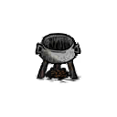
1 · Cho nguyên liệuNồi thường có 4 ô (containers.lua). Chọn tối đa bốn vật phẩm hợp lệ rồi bắt đầu nấu.
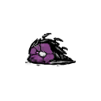
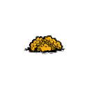
2 · Game tính “nhóm”Mỗi vật phẩm đóng góp tag như thịt, rau, cá, trái cây, ngọt, trứng, lạnh hoặc vật không ăn được. Giá trị có thể là 0,25 / 0,5 / 1…, rồi được cộng lại.
Tên món cần có + nhóm đạt ngưỡng + nhóm bị cấm phải vắng
3 · Kiểm tra điều kiệnVí dụ: cá que cần có tag cá, có cành cây và tổng vật không ăn được không quá 1.
Ưu tiên cao nhất → nếu hòa: cân theo weight
4 · Chọn món thắngNếu nhiều công thức cùng hợp lệ, game lấy nhóm có priority cao nhất; nếu nhiều món vẫn đồng hạng, weight quyết định xác suất.
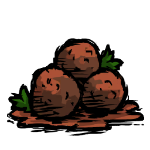
món + chỉ số ăn + độ tươi
5 · Nồi tiêu thụ nguyên liệuNồi đóng và tiêu thụ nguyên liệu khi bắt đầu; hết thời gian nền × hệ số cooktime thì món hoàn tất để thu. Theo công thức mặc định trong stewer.lua, món nấu có thể được phục hồi một nửa phần độ tươi đã mất: nguyên liệu trung bình còn 60% thì món mới bắt đầu khoảng 80%.
Nhóm nguyên liệu hoạt động như “điểm thành phần”
Không nên đọc tags.meat >= 1.5 thành “bỏ 1,5 món thịt”. Đây là tổng giá trị do game gán: thịt thường = 1; thịt nhỏ/chân ếch/đùi gà = 0,5; cá có thể đồng thời cộng vào nhóm cá và nhóm thịt. Ví dụ ba rau thường cho veggie = 3; một nấm đóng góp veggie = 0,5. Hàng đã nấu hoặc phơi khô vẫn có thể giữ tag gốc tùy nguyên liệu.
Priority là thứ tự thắng khi nhiều công thức cùng đạt; weight chỉ chia xác suất trong nhóm priority cao nhất. Công thức ướt nhẹp có điều kiện luôn đúng nhưng priority rất thấp (−10), nên đóng vai trò phương án rơi xuống khi không có công thức ưu tiên hơn.
Ba ví dụ đọc công thức như người chơi
Butter Muffin · rau + cánh bướm
Điều kiện thật: phải có cánh bướm thường hoặc cánh bướm mặt trăng; không được có tag thịt; tổng tag rau ít nhất 0,5. Ảnh trên thẻ cookbook gợi ý cánh ×1, cà rốt ×2, quả mọng ×1; đó là công thức minh họa của thẻ, còn điều kiện tag mới là luật xét.
Kết quả theo tuning chuẩn: +20 máu, +37,5 no, +5 tinh thần; tươi khoảng 15 ngày game; cooktime hệ số ×2. Nhân vật và hiệu ứng ngoài có thể làm kết quả thực tế khác.
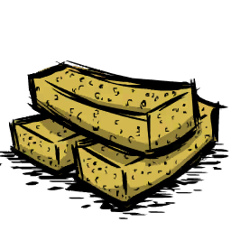
Fishsticks · cá + cành cây
Điều kiện thật: tổng tag cá phải lớn hơn 0; trong nồi có ít nhất một cành; tổng tag vật không ăn được ≤1. Cá que có priority 10, nên có thể đánh bại một món priority thấp nếu cùng đạt.
Kết quả theo tuning chuẩn: +40 máu, +37,5 no, +5 tinh thần; tươi khoảng 10 ngày game; cooktime hệ số ×2. Thẻ cookbook gợi ý cá nhỏ ×3 + cành ×1.
Taffy · ngọt nhưng trừ máu
Điều kiện thật: tag chất ngọt ≥3 và không có tag thịt. Mật ong thường đóng góp 1 điểm ngọt mỗi món; thẻ cookbook gợi ý mật ong ×3 + quả mọng ×1.
Kết quả theo tuning chuẩn: −3 máu, +25 no, +15 tinh thần; tươi khoảng 15 ngày game; cooktime hệ số ×2. Ví dụ này cho thấy tên/ảnh món không nói hết lợi ích: hãy đọc cả ba chỉ số.
Meatballs · công thức thịt linh hoạt
Điều kiện thật: có tổng tag thịt lớn hơn 0 và không có vật không ăn được. Vì priority −1, công thức này thường là lựa chọn dự phòng khi nguyên liệu có thịt nhưng chưa đủ điều kiện món ưu tiên cao hơn.
Kết quả theo tuning chuẩn: +3 máu, +62,5 no, +5 tinh thần; tươi khoảng 10 ngày game; cooktime hệ số ×0,75. Thẻ công thức không liệt kê nguyên liệu mẫu cho món này.
Danh mục hình ảnh 81 món và sản phẩm nấu
Mỗi thẻ cho biết loại, tác dụng theo tuning chuẩn và độ tươi. Mở “Điều kiện chi tiết và dữ liệu gốc” để xem biểu thức chính xác đã trích từ mã. Hai mục Batnose Hat và Dust Meringue là sản phẩm nấu đặc biệt, không phải món ăn thông thường.
Icon cookbook từ APK
Món nhóm rau
Điều kiện, viết lại dễ đọc (giữ nguyên nhóm “và / hoặc”): (có nguyên liệu Butterfly Wings hoặc có nguyên liệu Moon Moth Wings) và không có điểm nhóm thịt và tổng điểm nhóm rau ít nhất 0.5
Butter Muffin
Mã nội bộ: butterflymuffin
Máu+20No+37,5Tinh thần+5
Độ tươi: 15 ngày trong game (mốc TUNING) Thời gian nấu: hệ số ×2 lần thời gian nền của nồi (không phải số phút cố định).
Điều kiện chi tiết và dữ liệu gốc
Điều kiện nồi: xem biểu thức nguồn bên dưới; các nhóm nguyên liệu được cộng theo giá trị tag, không phải lúc nào cũng là số món.
preparedfoods.lua:3 (tệp gốc không nằm trong gói web)
{
"test": "function(cooker, names, tags) return (names.butterflywings or names.moonbutterflywings) and not tags.meat and tags.veggie and tags.veggie >= 0.5 end",
"priority": "1",
"weight": "1",
"foodtype": "FOODTYPE.VEGGIE",
"health": "TUNING.HEALING_MED",
"hunger": "TUNING.CALORIES_LARGE",
"perishtime": "TUNING.PERISH_SLOW",
"sanity": "TUNING.SANITY_TINY",
"cooktime": "2",
"floater": "{\"small\", 0.05, 0.7}",
"card_def": "{ingredients = {{\"butterflywings\", 1}, {\"carrot\", 2}, {\"berries\", 1}} }"
}
Icon cookbook từ APK
Món nhóm thịt
Điều kiện, viết lại dễ đọc (giữ nguyên nhóm “và / hoặc”): Có Frog Legs (tươi hoặc đã nấu) và tổng điểm nhóm rau ít nhất 0.5
Froggle Bunwich
Mã nội bộ: frogglebunwich
Máu+20No+37,5Tinh thần+5
Độ tươi: 15 ngày trong game (mốc TUNING) Thời gian nấu: hệ số ×2 lần thời gian nền của nồi (không phải số phút cố định).
Điều kiện chi tiết và dữ liệu gốc
Điều kiện nồi: xem biểu thức nguồn bên dưới; các nhóm nguyên liệu được cộng theo giá trị tag, không phải lúc nào cũng là số món.
preparedfoods.lua:18 (tệp gốc không nằm trong gói web)
Điều kiện, viết lại dễ đọc (giữ nguyên nhóm “và / hoặc”): Có Eggplant (tươi hoặc đã nấu) và tổng điểm nhóm rau lớn hơn 1
Stuffed Eggplant
Mã nội bộ: stuffedeggplant
Máu+3No+37,5Tinh thần+5
Độ tươi: 15 ngày trong game (mốc TUNING) Thời gian nấu: hệ số ×2 lần thời gian nền của nồi (không phải số phút cố định). Ghi chú: Nhiệt độ khi ăn: TUNING.HOT_FOOD_BONUS_TEMP · Thời lượng nhiệt: TUNING.FOOD_TEMP_BRIEF
Điều kiện chi tiết và dữ liệu gốc
Điều kiện nồi: xem biểu thức nguồn bên dưới; các nhóm nguyên liệu được cộng theo giá trị tag, không phải lúc nào cũng là số món.
preparedfoods.lua:63 (tệp gốc không nằm trong gói web)
Điều kiện, viết lại dễ đọc (giữ nguyên nhóm “và / hoặc”): Có nguyên liệu Honey và tổng điểm nhóm thịt không quá 1.5 và không có điểm nhóm vật không ăn được
Honey Nuggets
Mã nội bộ: honeynuggets
Máu+20No+37,5Tinh thần+5
Độ tươi: 15 ngày trong game (mốc TUNING) Thời gian nấu: hệ số ×2 lần thời gian nền của nồi (không phải số phút cố định).
Điều kiện chi tiết và dữ liệu gốc
Điều kiện nồi: xem biểu thức nguồn bên dưới; các nhóm nguyên liệu được cộng theo giá trị tag, không phải lúc nào cũng là số món.
preparedfoods.lua:95 (tệp gốc không nằm trong gói web)
Điều kiện, viết lại dễ đọc (giữ nguyên nhóm “và / hoặc”): Có nguyên liệu Honey và tổng điểm nhóm thịt lớn hơn 1.5 và không có điểm nhóm vật không ăn được
Honey Ham
Mã nội bộ: honeyham
MáuCó hiệu ứng theo công thức riêngNo+75Tinh thần+5
Độ tươi: 15 ngày trong game (mốc TUNING) Thời gian nấu: hệ số ×2 lần thời gian nền của nồi (không phải số phút cố định). Ghi chú: Nhiệt độ khi ăn: TUNING.HOT_FOOD_BONUS_TEMP · Thời lượng nhiệt: TUNING.FOOD_TEMP_AVERAGE
Điều kiện chi tiết và dữ liệu gốc
Điều kiện nồi: xem biểu thức nguồn bên dưới; các nhóm nguyên liệu được cộng theo giá trị tag, không phải lúc nào cũng là số món.
preparedfoods.lua:111 (tệp gốc không nằm trong gói web)
Điều kiện, viết lại dễ đọc (giữ nguyên nhóm “và / hoặc”): Có Dragon Fruit (tươi hoặc đã nấu) và không có điểm nhóm thịt
Dragonpie
Mã nội bộ: dragonpie
Máu+40No+75Tinh thần+5
Độ tươi: 15 ngày trong game (mốc TUNING) Thời gian nấu: hệ số ×2 lần thời gian nền của nồi (không phải số phút cố định). Ghi chú: Nhiệt độ khi ăn: TUNING.HOT_FOOD_BONUS_TEMP · Thời lượng nhiệt: TUNING.FOOD_TEMP_AVERAGE
Điều kiện chi tiết và dữ liệu gốc
Điều kiện nồi: xem biểu thức nguồn bên dưới; các nhóm nguyên liệu được cộng theo giá trị tag, không phải lúc nào cũng là số món.
preparedfoods.lua:128 (tệp gốc không nằm trong gói web)
Điều kiện, viết lại dễ đọc (giữ nguyên nhóm “và / hoặc”): Có điểm nhóm thịt và có nguyên liệu Twigs và (không có điểm nhóm quái vật hoặc tổng điểm nhóm quái vật không quá 1) và (tổng điểm nhóm vật không ăn được không quá 1)
Kabobs
Mã nội bộ: kabobs
Máu+3No+37,5Tinh thần+5
Độ tươi: 15 ngày trong game (mốc TUNING) Thời gian nấu: hệ số ×2 lần thời gian nền của nồi (không phải số phút cố định). Ghi chú: Nhiệt độ khi ăn: TUNING.HOT_FOOD_BONUS_TEMP · Thời lượng nhiệt: TUNING.FOOD_TEMP_LONG
Điều kiện chi tiết và dữ liệu gốc
Điều kiện nồi: xem biểu thức nguồn bên dưới; các nhóm nguyên liệu được cộng theo giá trị tag, không phải lúc nào cũng là số món.
preparedfoods.lua:143 (tệp gốc không nằm trong gói web)
Điều kiện, viết lại dễ đọc (giữ nguyên nhóm “và / hoặc”): Có điểm nhóm trứng và có điểm nhóm thịt và tổng điểm nhóm rau ít nhất 0.5 và không có điểm nhóm vật không ăn được
Pierogi
Mã nội bộ: perogies
Máu+40No+37,5Tinh thần+5
Độ tươi: 20 ngày trong game (mốc TUNING) Thời gian nấu: hệ số ×1 lần thời gian nền của nồi (không phải số phút cố định).
Điều kiện chi tiết và dữ liệu gốc
Điều kiện nồi: xem biểu thức nguồn bên dưới; các nhóm nguyên liệu được cộng theo giá trị tag, không phải lúc nào cũng là số món.
preparedfoods.lua:211 (tệp gốc không nằm trong gói web)
{
"test": "function(cooker, names, tags) return tags.egg and tags.meat and tags.veggie and tags.veggie >= 0.5 and not tags.inedible end",
"priority": "5",
"foodtype": "FOODTYPE.MEAT",
"health": "TUNING.HEALING_LARGE",
"hunger": "TUNING.CALORIES_LARGE",
"perishtime": "TUNING.PERISH_PRESERVED",
"sanity": "TUNING.SANITY_TINY",
"cooktime": "1",
"potlevel": "\"high\"",
"floater": "{\"med\", nil, 0.65}"
}
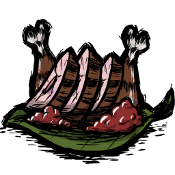
Icon cookbook từ APK
Món nhóm thịt
Điều kiện, viết lại dễ đọc (giữ nguyên nhóm “và / hoặc”): Có nguyên liệu Drumstick và số Drumstick lớn hơn 1 và tổng điểm nhóm thịt lớn hơn 1 và ((tổng điểm nhóm rau ít nhất 0.5) hoặc có điểm nhóm trái cây)
Turkey Dinner
Mã nội bộ: turkeydinner
Máu+20No+75Tinh thần+5
Độ tươi: 6 ngày trong game (mốc TUNING) Thời gian nấu: hệ số ×3 lần thời gian nền của nồi (không phải số phút cố định). Ghi chú: Nhiệt độ khi ăn: TUNING.HOT_FOOD_BONUS_TEMP · Thời lượng nhiệt: TUNING.FOOD_TEMP_AVERAGE
Điều kiện chi tiết và dữ liệu gốc
Điều kiện nồi: xem biểu thức nguồn bên dưới; các nhóm nguyên liệu được cộng theo giá trị tag, không phải lúc nào cũng là số món.
preparedfoods.lua:224 (tệp gốc không nằm trong gói web)
Điều kiện, viết lại dễ đọc (giữ nguyên nhóm “và / hoặc”): Không có điểm nhóm thịt và tổng điểm nhóm rau ít nhất 0.5 và không có điểm nhóm vật không ăn được
Ratatouille
Mã nội bộ: ratatouille
Máu+3No+25Tinh thần+5
Độ tươi: 15 ngày trong game (mốc TUNING) Thời gian nấu: hệ số ×1 lần thời gian nền của nồi (không phải số phút cố định).
Điều kiện chi tiết và dữ liệu gốc
Điều kiện nồi: xem biểu thức nguồn bên dưới; các nhóm nguyên liệu được cộng theo giá trị tag, không phải lúc nào cũng là số món.
preparedfoods.lua:240 (tệp gốc không nằm trong gói web)
{
"test": "function(cooker, names, tags) return not tags.meat and tags.veggie and tags.veggie >= 0.5 and not tags.inedible end",
"priority": "0",
"foodtype": "FOODTYPE.VEGGIE",
"health": "TUNING.HEALING_SMALL",
"hunger": "TUNING.CALORIES_MED",
"perishtime": "TUNING.PERISH_SLOW",
"sanity": "TUNING.SANITY_TINY",
"cooktime": "1",
"floater": "{\"med\", nil, 0.68}"
}
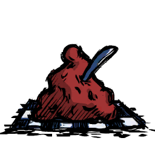
Icon cookbook từ APK
Món nhóm rau
Điều kiện, viết lại dễ đọc (giữ nguyên nhóm “và / hoặc”): Có điểm nhóm trái cây và không có điểm nhóm thịt và không có điểm nhóm rau và không có điểm nhóm vật không ăn được
Fist Full of Jam
Mã nội bộ: jammypreserves
Máu+3No+37,5Tinh thần+5
Độ tươi: 15 ngày trong game (mốc TUNING) Thời gian nấu: hệ số ×.5 lần thời gian nền của nồi (không phải số phút cố định).
Điều kiện chi tiết và dữ liệu gốc
Điều kiện nồi: xem biểu thức nguồn bên dưới; các nhóm nguyên liệu được cộng theo giá trị tag, không phải lúc nào cũng là số món.
preparedfoods.lua:252 (tệp gốc không nằm trong gói web)
{
"test": "function(cooker, names, tags) return tags.fruit and not tags.meat and not tags.veggie and not tags.inedible end",
"priority": "0",
"foodtype": "FOODTYPE.VEGGIE",
"health": "TUNING.HEALING_SMALL",
"hunger": "TUNING.CALORIES_SMALL*3",
"perishtime": "TUNING.PERISH_SLOW",
"sanity": "TUNING.SANITY_TINY",
"cooktime": ".5",
"floater": "{\"small\", nil, nil}"
}
Icon cookbook từ APK
Món nhóm rau
Điều kiện, viết lại dễ đọc (giữ nguyên nhóm “và / hoặc”): Tổng điểm nhóm trái cây ít nhất 3 và không có điểm nhóm thịt và không có điểm nhóm rau
Fruit Medley
Mã nội bộ: fruitmedley
Máu+20No+25Tinh thần+5
Độ tươi: 6 ngày trong game (mốc TUNING) Thời gian nấu: hệ số ×.5 lần thời gian nền của nồi (không phải số phút cố định). Ghi chú: Nhiệt độ khi ăn: TUNING.COLD_FOOD_BONUS_TEMP · Thời lượng nhiệt: TUNING.FOOD_TEMP_BRIEF
Điều kiện chi tiết và dữ liệu gốc
Điều kiện nồi: xem biểu thức nguồn bên dưới; các nhóm nguyên liệu được cộng theo giá trị tag, không phải lúc nào cũng là số món.
preparedfoods.lua:265 (tệp gốc không nằm trong gói web)
{
"test": "function(cooker, names, tags) return tags.fruit and tags.fruit >= 3 and not tags.meat and not tags.veggie end",
"priority": "0",
"foodtype": "FOODTYPE.VEGGIE",
"health": "TUNING.HEALING_MED",
"hunger": "TUNING.CALORIES_MED",
"perishtime": "TUNING.PERISH_FAST",
"sanity": "TUNING.SANITY_TINY",
"temperature": "TUNING.COLD_FOOD_BONUS_TEMP",
"temperatureduration": "TUNING.FOOD_TEMP_BRIEF",
"cooktime": ".5",
"potlevel": "\"low\"",
"floater": "{\"small\", nil, 0.6}"
}
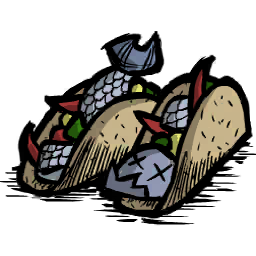
Icon cookbook từ APK
Món nhóm thịt
Điều kiện, viết lại dễ đọc (giữ nguyên nhóm “và / hoặc”): Có điểm nhóm cá và (có nguyên liệu Corn hoặc có nguyên liệu Popcorn hoặc có nguyên liệu Popperfish hoặc có nguyên liệu Corn Cod)
Fish Tacos
Mã nội bộ: fishtacos
Máu+20No+37,5Tinh thần+5
Độ tươi: 6 ngày trong game (mốc TUNING) Thời gian nấu: hệ số ×.5 lần thời gian nền của nồi (không phải số phút cố định).
Điều kiện chi tiết và dữ liệu gốc
Điều kiện nồi: xem biểu thức nguồn bên dưới; các nhóm nguyên liệu được cộng theo giá trị tag, không phải lúc nào cũng là số món.
preparedfoods.lua:280 (tệp gốc không nằm trong gói web)
Điều kiện, viết lại dễ đọc (giữ nguyên nhóm “và / hoặc”): Có nguyên liệu Butter và (có nguyên liệu Berries hoặc có nguyên liệu Roasted Berries hoặc có nguyên liệu Juicy Berries hoặc có nguyên liệu Roasted Juicy Berries) và có điểm nhóm trứng
Waffles
Mã nội bộ: waffles
Máu+60No+37,5Tinh thần+5
Độ tươi: 6 ngày trong game (mốc TUNING) Thời gian nấu: hệ số ×.5 lần thời gian nền của nồi (không phải số phút cố định).
Điều kiện chi tiết và dữ liệu gốc
Điều kiện nồi: xem biểu thức nguồn bên dưới; các nhóm nguyên liệu được cộng theo giá trị tag, không phải lúc nào cũng là số món.
preparedfoods.lua:294 (tệp gốc không nằm trong gói web)
{
"test": "function(cooker, names, tags) return names.butter and (names.berries or names.berries_cooked or names.berries_juicy or names.berries_juicy_cooked) and tags.egg end",
"priority": "10",
"foodtype": "FOODTYPE.VEGGIE",
"health": "TUNING.HEALING_HUGE",
"hunger": "TUNING.CALORIES_LARGE",
"perishtime": "TUNING.PERISH_FAST",
"sanity": "TUNING.SANITY_TINY",
"cooktime": ".5",
"potlevel": "\"high\"",
"floater": "{\"med\", nil, 0.75}"
}
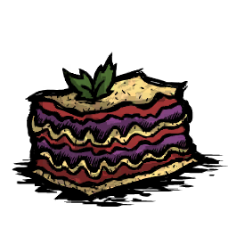
Icon cookbook từ APK
Món nhóm thịt
Điều kiện, viết lại dễ đọc (giữ nguyên nhóm “và / hoặc”): Tổng điểm nhóm quái vật ít nhất 2 và không có điểm nhóm vật không ăn được
Monster Lasagna
Mã nội bộ: monsterlasagna
Máu−20No+37,5Tinh thầnCó hiệu ứng theo công thức riêng
Độ tươi: 6 ngày trong game (mốc TUNING) Thời gian nấu: hệ số ×.5 lần thời gian nền của nồi (không phải số phút cố định).
Điều kiện chi tiết và dữ liệu gốc
Điều kiện nồi: xem biểu thức nguồn bên dưới; các nhóm nguyên liệu được cộng theo giá trị tag, không phải lúc nào cũng là số món.
preparedfoods.lua:308 (tệp gốc không nằm trong gói web)
Điều kiện, viết lại dễ đọc (giữ nguyên nhóm “và / hoặc”): Có nguyên liệu Twigs và có nguyên liệu Honey và (có nguyên liệu Corn hoặc có nguyên liệu Popcorn hoặc có nguyên liệu Popperfish hoặc có nguyên liệu Corn Cod)
Powdercake
Mã nội bộ: powcake
Máu−3NoKhông đổiTinh thầnKhông đổi
Độ tươi: Chưa có giá trị thường để quy đổi Thời gian nấu: hệ số ×0,5 lần thời gian nền của nồi (không phải số phút cố định).
Điều kiện chi tiết và dữ liệu gốc
Điều kiện nồi: xem biểu thức nguồn bên dưới; các nhóm nguyên liệu được cộng theo giá trị tag, không phải lúc nào cũng là số món.
preparedfoods.lua:323 (tệp gốc không nằm trong gói web)
Điều kiện, viết lại dễ đọc (giữ nguyên nhóm “và / hoặc”): (có nguyên liệu Lichen hoặc có nguyên liệu Kelp Fronds hoặc có nguyên liệu Cooked Kelp Fronds hoặc có nguyên liệu Dried Kelp Fronds) và (có nguyên liệu Eel hoặc có nguyên liệu Cooked Eel hoặc có nguyên liệu Live Eel)
Unagi
Mã nội bộ: unagi
Máu+20No+37,5Tinh thần+5
Độ tươi: 10 ngày trong game (mốc TUNING) Thời gian nấu: hệ số ×0,5 lần thời gian nền của nồi (không phải số phút cố định).
Điều kiện chi tiết và dữ liệu gốc
Điều kiện nồi: xem biểu thức nguồn bên dưới; các nhóm nguyên liệu được cộng theo giá trị tag, không phải lúc nào cũng là số món.
preparedfoods.lua:339 (tệp gốc không nằm trong gói web)
{
"test": "function(cooker, names, tags) return (names.cutlichen or names.kelp or names.kelp_cooked or names.kelp_dried) and (names.eel or names.eel_cooked or names.pondeel) end",
"priority": "20",
"foodtype": "FOODTYPE.MEAT",
"health": "TUNING.HEALING_MED",
"hunger": "TUNING.CALORIES_LARGE",
"perishtime": "TUNING.PERISH_MED",
"sanity": "TUNING.SANITY_TINY",
"cooktime": "0.5",
"floater": "{\"med\", nil, 0.67}"
}
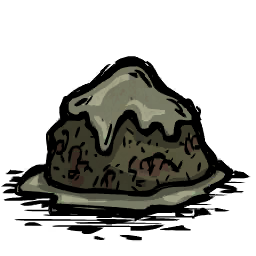
Icon cookbook từ APK
Món ăn
Điều kiện, viết lại dễ đọc (giữ nguyên nhóm “và / hoặc”): Luôn đúng (điều kiện dự phòng; món chỉ được chọn khi không có công thức ưu tiên hơn).
Wet Goop
Mã nội bộ: wetgoop
MáuKhông đổiNoKhông đổiTinh thầnKhông đổi
Độ tươi: 6 ngày trong game (mốc TUNING) Thời gian nấu: hệ số ×.25 lần thời gian nền của nồi (không phải số phút cố định).
Điều kiện chi tiết và dữ liệu gốc
Điều kiện nồi: xem biểu thức nguồn bên dưới; các nhóm nguyên liệu được cộng theo giá trị tag, không phải lúc nào cũng là số món.
preparedfoods.lua:352 (tệp gốc không nằm trong gói web)
Điều kiện, viết lại dễ đọc (giữ nguyên nhóm “và / hoặc”): Có nguyên liệu Cactus Flower và tổng điểm nhóm rau ít nhất 2 và không có điểm nhóm thịt và không có điểm nhóm vật không ăn được và không có điểm nhóm trứng và không có điểm nhóm chất ngọt và không có điểm nhóm trái cây
Flower Salad
Mã nội bộ: flowersalad
Máu+40No+12,5Tinh thần+5
Độ tươi: 6 ngày trong game (mốc TUNING) Thời gian nấu: hệ số ×.5 lần thời gian nền của nồi (không phải số phút cố định).
Điều kiện chi tiết và dữ liệu gốc
Điều kiện nồi: xem biểu thức nguồn bên dưới; các nhóm nguyên liệu được cộng theo giá trị tag, không phải lúc nào cũng là số món.
preparedfoods.lua:365 (tệp gốc không nằm trong gói web)
{
"test": "function(cooker, names, tags) return names.cactus_flower and tags.veggie and tags.veggie >= 2 and not tags.meat and not tags.inedible and not tags.egg and not tags.sweetener and not tags.fruit end",
"priority": "10",
"foodtype": "FOODTYPE.VEGGIE",
"health": "TUNING.HEALING_LARGE",
"hunger": "TUNING.CALORIES_SMALL",
"perishtime": "TUNING.PERISH_FAST",
"sanity": "TUNING.SANITY_TINY",
"cooktime": ".5",
"potlevel": "\"low\"",
"floater": "{\"small\", nil, nil}"
}
Icon cookbook từ APK
Món ngọt
Điều kiện, viết lại dễ đọc (giữ nguyên nhóm “và / hoặc”): Có điểm nhóm đồ lạnh/đá và có điểm nhóm sữa và có điểm nhóm chất ngọt và không có điểm nhóm thịt và không có điểm nhóm rau và không có điểm nhóm vật không ăn được và không có điểm nhóm trứng
Ice Cream
Mã nội bộ: icecream
MáuKhông đổiNo+25Tinh thần+50
Độ tươi: 3 ngày trong game (mốc TUNING) Thời gian nấu: hệ số ×.5 lần thời gian nền của nồi (không phải số phút cố định). Ghi chú: Nhiệt độ khi ăn: TUNING.COLD_FOOD_BONUS_TEMP · Thời lượng nhiệt: TUNING.FOOD_TEMP_LONG
Điều kiện chi tiết và dữ liệu gốc
Điều kiện nồi: xem biểu thức nguồn bên dưới; các nhóm nguyên liệu được cộng theo giá trị tag, không phải lúc nào cũng là số món.
preparedfoods.lua:379 (tệp gốc không nằm trong gói web)
{
"test": "function(cooker, names, tags) return tags.frozen and tags.dairy and tags.sweetener and not tags.meat and not tags.veggie and not tags.inedible and not tags.egg end",
"priority": "10",
"foodtype": "FOODTYPE.GOODIES",
"health": "0",
"hunger": "TUNING.CALORIES_MED",
"perishtime": "TUNING.PERISH_SUPERFAST",
"sanity": "TUNING.SANITY_HUGE",
"temperature": "TUNING.COLD_FOOD_BONUS_TEMP",
"temperatureduration": "TUNING.FOOD_TEMP_LONG",
"cooktime": ".5",
"potlevel": "\"low\"",
"floater": "{\"small\", nil, nil}"
}
Icon cookbook từ APK
Món nhóm rau
Điều kiện, viết lại dễ đọc (giữ nguyên nhóm “và / hoặc”): Có nguyên liệu Watermelon và có điểm nhóm đồ lạnh/đá và có nguyên liệu Twigs và không có điểm nhóm thịt và không có điểm nhóm rau và không có điểm nhóm trứng
Melonsicle
Mã nội bộ: watermelonicle
Máu+3No+12,5Tinh thầnCó hiệu ứng theo công thức riêng
Độ tươi: 3 ngày trong game (mốc TUNING) Thời gian nấu: hệ số ×.5 lần thời gian nền của nồi (không phải số phút cố định). Ghi chú: Nhiệt độ khi ăn: TUNING.COLD_FOOD_BONUS_TEMP · Thời lượng nhiệt: TUNING.FOOD_TEMP_AVERAGE
Điều kiện chi tiết và dữ liệu gốc
Điều kiện nồi: xem biểu thức nguồn bên dưới; các nhóm nguyên liệu được cộng theo giá trị tag, không phải lúc nào cũng là số món.
preparedfoods.lua:395 (tệp gốc không nằm trong gói web)
{
"test": "function(cooker, names, tags) return names.watermelon and tags.frozen and names.twigs and not tags.meat and not tags.veggie and not tags.egg end",
"priority": "10",
"foodtype": "FOODTYPE.VEGGIE",
"health": "TUNING.HEALING_SMALL",
"hunger": "TUNING.CALORIES_SMALL",
"perishtime": "TUNING.PERISH_SUPERFAST",
"sanity": "TUNING.SANITY_MEDLARGE",
"temperature": "TUNING.COLD_FOOD_BONUS_TEMP",
"temperatureduration": "TUNING.FOOD_TEMP_AVERAGE",
"cooktime": ".5",
"potlevel": "\"low\"",
"floater": "{\"small\", 0.1, 0.82}"
}
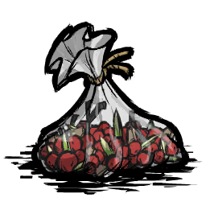
Icon cookbook từ APK
Món nhóm rau
Điều kiện, viết lại dễ đọc (giữ nguyên nhóm “và / hoặc”): Có Birchnut (tươi hoặc đã nấu) và tổng điểm nhóm hạt giống ít nhất 1 và (có nguyên liệu Berries hoặc có nguyên liệu Roasted Berries hoặc có nguyên liệu Juicy Berries hoặc có nguyên liệu Roasted Juicy Berries) và tổng điểm nhóm trái cây ít nhất 1 và không có điểm nhóm thịt và không có điểm nhóm rau và không có điểm nhóm trứng và không có điểm nhóm sữa
Trail Mix
Mã nội bộ: trailmix
MáuCó hiệu ứng theo công thức riêngNo+12,5Tinh thần+5
Độ tươi: 15 ngày trong game (mốc TUNING) Thời gian nấu: hệ số ×.5 lần thời gian nền của nồi (không phải số phút cố định).
Điều kiện chi tiết và dữ liệu gốc
Điều kiện nồi: xem biểu thức nguồn bên dưới; các nhóm nguyên liệu được cộng theo giá trị tag, không phải lúc nào cũng là số món.
preparedfoods.lua:411 (tệp gốc không nằm trong gói web)
{
"test": "function(cooker, names, tags) return (names.acorn or names.acorn_cooked) and tags.seed and tags.seed >= 1 and (names.berries or names.berries_cooked or names.berries_juicy or names.berries_juicy_cooked) and tags.fruit and tags.fruit >= 1 and not tags.meat and not tags.veggie and not tags.egg and not tags.dairy end",
"priority": "10",
"foodtype": "FOODTYPE.VEGGIE",
"health": "TUNING.HEALING_MEDLARGE",
"hunger": "TUNING.CALORIES_SMALL",
"perishtime": "TUNING.PERISH_SLOW",
"sanity": "TUNING.SANITY_TINY",
"cooktime": ".5",
"floater": "{\"small\", 0.05, nil}",
"card_def": "{ingredients = {{\"acorn_cooked\", 2}, {\"berries\", 2}} }"
}
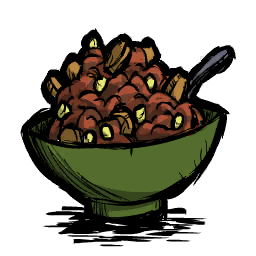
Icon cookbook từ APK
Món nhóm thịt
Điều kiện, viết lại dễ đọc (giữ nguyên nhóm “và / hoặc”): Có điểm nhóm thịt và có điểm nhóm rau và tổng điểm nhóm thịt ít nhất 1.5 và tổng điểm nhóm rau ít nhất 1.5
Spicy Chili
Mã nội bộ: hotchili
Máu+20No+37,5Tinh thầnKhông đổi
Độ tươi: 10 ngày trong game (mốc TUNING) Thời gian nấu: hệ số ×.5 lần thời gian nền của nồi (không phải số phút cố định). Ghi chú: Nhiệt độ khi ăn: TUNING.HOT_FOOD_BONUS_TEMP · Thời lượng nhiệt: TUNING.FOOD_TEMP_LONG
Điều kiện chi tiết và dữ liệu gốc
Điều kiện nồi: xem biểu thức nguồn bên dưới; các nhóm nguyên liệu được cộng theo giá trị tag, không phải lúc nào cũng là số món.
preparedfoods.lua:425 (tệp gốc không nằm trong gói web)
Điều kiện, viết lại dễ đọc (giữ nguyên nhóm “và / hoặc”): Có nguyên liệu Moleworm và (có nguyên liệu Ripe Stone Fruit hoặc có nguyên liệu Cactus Flesh) và không có điểm nhóm trái cây
Guacamole
Mã nội bộ: guacamole
Máu+20No+37,5Tinh thầnKhông đổi
Độ tươi: 10 ngày trong game (mốc TUNING) Thời gian nấu: hệ số ×.5 lần thời gian nền của nồi (không phải số phút cố định).
Điều kiện chi tiết và dữ liệu gốc
Điều kiện nồi: xem biểu thức nguồn bên dưới; các nhóm nguyên liệu được cộng theo giá trị tag, không phải lúc nào cũng là số món.
preparedfoods.lua:442 (tệp gốc không nằm trong gói web)
Điều kiện, viết lại dễ đọc (giữ nguyên nhóm “và / hoặc”): Có nguyên liệu Royal Jelly và không có điểm nhóm vật không ăn được và không có điểm nhóm quái vật
Jellybeans
Mã nội bộ: jellybean
MáuCó hiệu ứng theo công thức riêngNoKhông đổiTinh thần+5
Độ tươi: Không hỏng theo trường này Thời gian nấu: hệ số ×2,5 lần thời gian nền của nồi (không phải số phút cố định). Ghi chú: Hiệu ứng đặc biệt: STRINGS.UI.COOKBOOK.FOOD_EFFECTS_HEALTH_REGEN
Điều kiện chi tiết và dữ liệu gốc
Điều kiện nồi: xem biểu thức nguồn bên dưới; các nhóm nguyên liệu được cộng theo giá trị tag, không phải lúc nào cũng là số món.
preparedfoods.lua:457 (tệp gốc không nằm trong gói web)
Điều kiện, viết lại dễ đọc (giữ nguyên nhóm “và / hoặc”): Có Potato (tươi hoặc đã nấu) và có nguyên liệu Twigs và (không có điểm nhóm quái vật hoặc tổng điểm nhóm quái vật không quá 1) và không có điểm nhóm thịt và (tổng điểm nhóm vật không ăn được không quá 2)
Fancy Spiralled Tubers
Mã nội bộ: potatotornado
Máu+3No+37,5Tinh thần+15
Độ tươi: 10 ngày trong game (mốc TUNING) Thời gian nấu: hệ số ×.75 lần thời gian nền của nồi (không phải số phút cố định).
Điều kiện chi tiết và dữ liệu gốc
Điều kiện nồi: xem biểu thức nguồn bên dưới; các nhóm nguyên liệu được cộng theo giá trị tag, không phải lúc nào cũng là số món.
preparedfoods.lua:480 (tệp gốc không nằm trong gói web)
{
"test": "function(cooker, names, tags) return (names.potato or names.potato_cooked) and names.twigs and (not tags.monster or tags.monster <= 1) and not tags.meat and (tags.inedible and tags.inedible <= 2) end",
"priority": "10",
"foodtype": "FOODTYPE.VEGGIE",
"health": "TUNING.HEALING_SMALL",
"hunger": "TUNING.CALORIES_LARGE",
"perishtime": "TUNING.PERISH_MED",
"sanity": "TUNING.SANITY_MED",
"cooktime": ".75",
"floater": "{nil, 0.05}"
}
Icon cookbook từ APK
Món nhóm rau
Điều kiện, viết lại dễ đọc (giữ nguyên nhóm “và / hoặc”): ((có nguyên liệu Potato và số Potato lớn hơn 1) hoặc (có nguyên liệu Roasted Potato và số Roasted Potato lớn hơn 1) hoặc (có nguyên liệu Potato và có nguyên liệu Roasted Potato)) và có Garlic (tươi hoặc đã nấu) và không có điểm nhóm thịt và không có điểm nhóm vật không ăn được
Creamy Potato Purée
Mã nội bộ: mashedpotatoes
Máu+20No+37,5Tinh thần+33
Độ tươi: 15 ngày trong game (mốc TUNING) Thời gian nấu: hệ số ×1 lần thời gian nền của nồi (không phải số phút cố định).
Điều kiện chi tiết và dữ liệu gốc
Điều kiện nồi: xem biểu thức nguồn bên dưới; các nhóm nguyên liệu được cộng theo giá trị tag, không phải lúc nào cũng là số món.
preparedfoods.lua:493 (tệp gốc không nằm trong gói web)
{
"test": "function(cooker, names, tags) return ((names.potato and names.potato > 1) or (names.potato_cooked and names.potato_cooked > 1) or (names.potato and names.potato_cooked)) and (names.garlic or names.garlic_cooked) and not tags.meat and not tags.inedible end",
"priority": "20",
"foodtype": "FOODTYPE.VEGGIE",
"health": "TUNING.HEALING_MED",
"hunger": "TUNING.CALORIES_LARGE",
"perishtime": "TUNING.PERISH_SLOW",
"sanity": "TUNING.SANITY_LARGE",
"cooktime": "1",
"potlevel": "\"low\"",
"floater": "{nil, 0.1, {0.7, 0.6, 0.7}}"
}
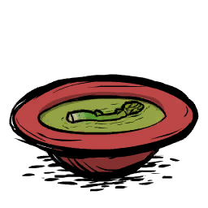
Icon cookbook từ APK
Món nhóm rau
Điều kiện, viết lại dễ đọc (giữ nguyên nhóm “và / hoặc”): Có Asparagus (tươi hoặc đã nấu) và tổng điểm nhóm rau lớn hơn 2 và không có điểm nhóm thịt và không có điểm nhóm vật không ăn được
Asparagus Soup
Mã nội bộ: asparagussoup
Máu+20No+18,75Tinh thần+5
Độ tươi: 15 ngày trong game (mốc TUNING) Thời gian nấu: hệ số ×0,5 lần thời gian nền của nồi (không phải số phút cố định).
Điều kiện chi tiết và dữ liệu gốc
Điều kiện nồi: xem biểu thức nguồn bên dưới; các nhóm nguyên liệu được cộng theo giá trị tag, không phải lúc nào cũng là số món.
preparedfoods.lua:507 (tệp gốc không nằm trong gói web)
{
"test": "function(cooker, names, tags) return (names.asparagus or names.asparagus_cooked) and tags.veggie and tags.veggie > 2 and not tags.meat and not tags.inedible end",
"priority": "10",
"foodtype": "FOODTYPE.VEGGIE",
"health": "TUNING.HEALING_MED",
"hunger": "TUNING.CALORIES_MEDSMALL",
"perishtime": "TUNING.PERISH_SLOW",
"sanity": "TUNING.SANITY_TINY",
"cooktime": "0.5",
"potlevel": "\"low\"",
"floater": "{nil, 0.05, {0.75, 0.65, 0.75}}",
"card_def": "{ingredients = {{\"asparagus\", 2}, {\"potato\", 1}, {\"onion\", 1}} }"
}
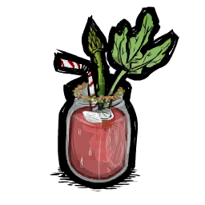
Icon cookbook từ APK
Món nhóm rau
Điều kiện, viết lại dễ đọc (giữ nguyên nhóm “và / hoặc”): (có nguyên liệu Asparagus hoặc có nguyên liệu Roasted Asparagus hoặc có nguyên liệu Toma Root hoặc có nguyên liệu Roasted Toma Root) và tổng điểm nhóm rau lớn hơn 2 và có điểm nhóm đồ lạnh/đá và không có điểm nhóm thịt và không có điểm nhóm vật không ăn được và không có điểm nhóm trứng
Vegetable Stinger
Mã nội bộ: vegstinger
Máu+3No+25Tinh thần+33
Độ tươi: 15 ngày trong game (mốc TUNING) Thời gian nấu: hệ số ×0,5 lần thời gian nền của nồi (không phải số phút cố định).
Điều kiện chi tiết và dữ liệu gốc
Điều kiện nồi: xem biểu thức nguồn bên dưới; các nhóm nguyên liệu được cộng theo giá trị tag, không phải lúc nào cũng là số món.
preparedfoods.lua:522 (tệp gốc không nằm trong gói web)
{
"test": "function(cooker, names, tags) return (names.asparagus or names.asparagus_cooked or names.tomato or names.tomato_cooked) and tags.veggie and tags.veggie > 2 and tags.frozen and not tags.meat and not tags.inedible and not tags.egg end",
"priority": "15",
"foodtype": "FOODTYPE.VEGGIE",
"health": "TUNING.HEALING_SMALL",
"hunger": "TUNING.CALORIES_MED",
"perishtime": "TUNING.PERISH_SLOW",
"sanity": "TUNING.SANITY_LARGE",
"cooktime": "0.5",
"potlevel": "\"low\"",
"floater": "{nil, 0.1, 0.6}",
"tags": "{ \"fooddrink\" }"
}
Icon cookbook từ APK
Món nhóm rau
Điều kiện, viết lại dễ đọc (giữ nguyên nhóm “và / hoặc”): Có Banana (tươi hoặc đã nấu) và có điểm nhóm đồ lạnh/đá và có nguyên liệu Twigs và không có điểm nhóm thịt và không có điểm nhóm cá
Banana Pop
Mã nội bộ: bananapop
Máu+20No+12,5Tinh thần+33
Độ tươi: 3 ngày trong game (mốc TUNING) Thời gian nấu: hệ số ×0,5 lần thời gian nền của nồi (không phải số phút cố định). Ghi chú: Nhiệt độ khi ăn: TUNING.COLD_FOOD_BONUS_TEMP · Thời lượng nhiệt: TUNING.FOOD_TEMP_AVERAGE
Điều kiện chi tiết và dữ liệu gốc
Điều kiện nồi: xem biểu thức nguồn bên dưới; các nhóm nguyên liệu được cộng theo giá trị tag, không phải lúc nào cũng là số món.
preparedfoods.lua:537 (tệp gốc không nằm trong gói web)
{
"test": "function(cooker, names, tags) return (names.cave_banana or names.cave_banana_cooked) and tags.frozen and names.twigs and not tags.meat and not tags.fish end",
"priority": "20",
"foodtype": "FOODTYPE.VEGGIE",
"health": "TUNING.HEALING_MED",
"hunger": "TUNING.CALORIES_SMALL",
"perishtime": "TUNING.PERISH_SUPERFAST",
"sanity": "TUNING.SANITY_LARGE",
"temperature": "TUNING.COLD_FOOD_BONUS_TEMP",
"temperatureduration": "TUNING.FOOD_TEMP_AVERAGE",
"cooktime": "0.5",
"potlevel": "\"low\"",
"floater": "{nil, 0.05, 0.95}",
"card_def": "{ingredients = {{\"cave_banana\", 1}, {\"ice\", 2}, {\"twigs\", 1}} }"
}
Icon cookbook từ APK
Món ngọt
Điều kiện, viết lại dễ đọc (giữ nguyên nhóm “và / hoặc”): Có Banana (tươi hoặc đã nấu) và (tổng điểm nhóm đồ lạnh/đá ít nhất 1) và không có điểm nhóm thịt và không có điểm nhóm cá
Frozen Banana Daiquiri
Mã nội bộ: frozenbananadaiquiri
MáuCó hiệu ứng theo công thức riêngNo+18,75Tinh thần+15
Độ tươi: 15 ngày trong game (mốc TUNING) Thời gian nấu: hệ số ×1 lần thời gian nền của nồi (không phải số phút cố định). Ghi chú: Nhiệt độ khi ăn: TUNING.COLD_FOOD_BONUS_TEMP · Thời lượng nhiệt: TUNING.FOOD_TEMP_LONG
Điều kiện chi tiết và dữ liệu gốc
Điều kiện nồi: xem biểu thức nguồn bên dưới; các nhóm nguyên liệu được cộng theo giá trị tag, không phải lúc nào cũng là số món.
preparedfoods.lua:554 (tệp gốc không nằm trong gói web)
{
"test": "function(cooker, names, tags) return (names.cave_banana or names.cave_banana_cooked) and (tags.frozen and tags.frozen >= 1) and not tags.meat and not tags.fish end",
"priority": "2",
"overridebuild": "\"cook_pot_food9\"",
"foodtype": "FOODTYPE.GOODIES",
"health": "TUNING.HEALING_MEDLARGE",
"hunger": "TUNING.CALORIES_MEDSMALL",
"perishtime": "TUNING.PERISH_SLOW",
"sanity": "TUNING.SANITY_MED",
"temperature": "TUNING.COLD_FOOD_BONUS_TEMP",
"temperatureduration": "TUNING.FOOD_TEMP_LONG",
"cooktime": "1",
"floater": "{\"small\", 0.05, 0.7}",
"tags": "{ \"fooddrink\" }"
}
Icon cookbook từ APK
Món nhóm rau
Điều kiện, viết lại dễ đọc (giữ nguyên nhóm “và / hoặc”): Tổng số Banana (tươi/chín/phơi khô) ít nhất 2 và không có điểm nhóm thịt và không có điểm nhóm cá và không có điểm nhóm quái vật
Banana Shake
Mã nội bộ: bananajuice
Máu+8No+25Tinh thần+33
Độ tươi: 15 ngày trong game (mốc TUNING) Thời gian nấu: hệ số ×0,5 lần thời gian nền của nồi (không phải số phút cố định).
Điều kiện chi tiết và dữ liệu gốc
Điều kiện nồi: xem biểu thức nguồn bên dưới; các nhóm nguyên liệu được cộng theo giá trị tag, không phải lúc nào cũng là số món.
preparedfoods.lua:571 (tệp gốc không nằm trong gói web)
{
"test": "function(cooker, names, tags) return ((names.cave_banana or 0) + (names.cave_banana_cooked or 0) >= 2) and not tags.meat and not tags.fish and not tags.monster end",
"priority": "1",
"overridebuild": "\"cook_pot_food10\"",
"foodtype": "FOODTYPE.VEGGIE",
"health": "TUNING.HEALING_MEDSMALL",
"hunger": "TUNING.CALORIES_MED",
"perishtime": "TUNING.PERISH_SLOW",
"sanity": "TUNING.SANITY_LARGE",
"cooktime": "0.5",
"floater": "{\"med\", 0.05, 0.55}",
"tags": "{ \"fooddrink\" }"
}
Icon cookbook từ APK
Món nhóm thịt
Điều kiện, viết lại dễ đọc (giữ nguyên nhóm “và / hoặc”): Tổng điểm nhóm cá ít nhất 2 và có điểm nhóm đồ lạnh/đá và không có điểm nhóm vật không ăn được và không có điểm nhóm trứng
Ceviche
Mã nội bộ: ceviche
Máu+20No+25Tinh thần+5
Độ tươi: 10 ngày trong game (mốc TUNING) Thời gian nấu: hệ số ×0,5 lần thời gian nền của nồi (không phải số phút cố định). Ghi chú: Nhiệt độ khi ăn: TUNING.COLD_FOOD_BONUS_TEMP · Thời lượng nhiệt: TUNING.FOOD_TEMP_AVERAGE
Điều kiện chi tiết và dữ liệu gốc
Điều kiện nồi: xem biểu thức nguồn bên dưới; các nhóm nguyên liệu được cộng theo giá trị tag, không phải lúc nào cũng là số món.
preparedfoods.lua:586 (tệp gốc không nằm trong gói web)
{
"test": "function(cooker, names, tags) return tags.fish and tags.fish >= 2 and tags.frozen and not tags.inedible and not tags.egg end",
"priority": "20",
"foodtype": "FOODTYPE.MEAT",
"health": "TUNING.HEALING_MED",
"hunger": "TUNING.CALORIES_MED",
"perishtime": "TUNING.PERISH_MED",
"sanity": "TUNING.SANITY_TINY",
"temperature": "TUNING.COLD_FOOD_BONUS_TEMP",
"temperatureduration": "TUNING.FOOD_TEMP_AVERAGE",
"cooktime": "0.5",
"floater": "{\"med\", 0.05, {0.65, 0.6, 0.65}}"
}
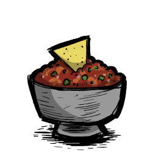
Icon cookbook từ APK
Món nhóm rau
Điều kiện, viết lại dễ đọc (giữ nguyên nhóm “và / hoặc”): Có Toma Root (tươi hoặc đã nấu) và có Onion (tươi hoặc đã nấu) và không có điểm nhóm thịt và không có điểm nhóm vật không ăn được và không có điểm nhóm trứng
Salsa Fresca
Mã nội bộ: salsa
Máu+3No+25Tinh thần+33
Độ tươi: 15 ngày trong game (mốc TUNING) Thời gian nấu: hệ số ×0,5 lần thời gian nền của nồi (không phải số phút cố định).
Điều kiện chi tiết và dữ liệu gốc
Điều kiện nồi: xem biểu thức nguồn bên dưới; các nhóm nguyên liệu được cộng theo giá trị tag, không phải lúc nào cũng là số món.
preparedfoods.lua:601 (tệp gốc không nằm trong gói web)
{
"test": "function(cooker, names, tags) return (names.tomato or names.tomato_cooked) and (names.onion or names.onion_cooked) and not tags.meat and not tags.inedible and not tags.egg end",
"priority": "20",
"foodtype": "FOODTYPE.VEGGIE",
"health": "TUNING.HEALING_SMALL",
"hunger": "TUNING.CALORIES_MED",
"perishtime": "TUNING.PERISH_SLOW",
"sanity": "TUNING.SANITY_LARGE",
"cooktime": "0.5",
"potlevel": "\"low\"",
"floater": "{nil, 0.1, {0.7, 0.6, 0.7}}"
}
Icon cookbook từ APK
Món nhóm thịt
Điều kiện, viết lại dễ đọc (giữ nguyên nhóm “và / hoặc”): Có Pepper (tươi hoặc đã nấu) và tổng điểm nhóm thịt không quá 1.5 và không có điểm nhóm vật không ăn được
Stuffed Pepper Poppers
Mã nội bộ: pepperpopper
MáuCó hiệu ứng theo công thức riêngNo+25Tinh thần−5
Độ tươi: 15 ngày trong game (mốc TUNING) Thời gian nấu: hệ số ×2 lần thời gian nền của nồi (không phải số phút cố định). Ghi chú: Nhiệt độ khi ăn: TUNING.HOT_FOOD_BONUS_TEMP · Thời lượng nhiệt: TUNING.FOOD_TEMP_LONG
Điều kiện chi tiết và dữ liệu gốc
Điều kiện nồi: xem biểu thức nguồn bên dưới; các nhóm nguyên liệu được cộng theo giá trị tag, không phải lúc nào cũng là số món.
preparedfoods.lua:615 (tệp gốc không nằm trong gói web)
{
"test": "function(cooker, names, tags) return (names.pepper or names.pepper_cooked) and tags.meat and tags.meat <= 1.5 and not tags.inedible end",
"priority": "20",
"foodtype": "FOODTYPE.MEAT",
"health": "TUNING.HEALING_MEDLARGE",
"hunger": "TUNING.CALORIES_MED",
"perishtime": "TUNING.PERISH_SLOW",
"sanity": "-TUNING.SANITY_TINY",
"temperature": "TUNING.HOT_FOOD_BONUS_TEMP",
"temperatureduration": "TUNING.FOOD_TEMP_LONG",
"cooktime": "2",
"card_def": "{ingredients = {{\"pepper\", 1}, {\"smallmeat\", 2}, {\"potato\", 1}} }"
}
Icon cookbook từ APK
Món nhóm thịt
Điều kiện, viết lại dễ đọc (giữ nguyên nhóm “và / hoặc”): Tổng số Kelp Fronds (tươi/chín/phơi khô) bằng 2 và (tổng điểm nhóm cá ít nhất 1)
California Roll
Mã nội bộ: californiaroll
Máu+20No+37,5Tinh thần+10
Độ tươi: 10 ngày trong game (mốc TUNING) Thời gian nấu: hệ số ×.5 lần thời gian nền của nồi (không phải số phút cố định).
Điều kiện chi tiết và dữ liệu gốc
Điều kiện nồi: xem biểu thức nguồn bên dưới; các nhóm nguyên liệu được cộng theo giá trị tag, không phải lúc nào cũng là số món.
preparedfoods.lua:631 (tệp gốc không nằm trong gói web)
Điều kiện, viết lại dễ đọc (giữ nguyên nhóm “và / hoặc”): Tổng điểm nhóm thịt ít nhất 2.5 và tổng điểm nhóm cá ít nhất 1.5 và không có điểm nhóm đồ lạnh/đá
Surf 'n' Turf
Mã nội bộ: surfnturf
Máu+60No+37,5Tinh thần+33
Độ tươi: 10 ngày trong game (mốc TUNING) Thời gian nấu: hệ số ×1 lần thời gian nền của nồi (không phải số phút cố định).
Điều kiện chi tiết và dữ liệu gốc
Điều kiện nồi: xem biểu thức nguồn bên dưới; các nhóm nguyên liệu được cộng theo giá trị tag, không phải lúc nào cũng là số món.
preparedfoods.lua:661 (tệp gốc không nằm trong gói web)
{
"test": "function(cooker, names, tags) return tags.meat and tags.meat >= 2.5 and tags.fish and tags.fish >= 1.5 and not tags.frozen end",
"priority": "30",
"foodtype": "FOODTYPE.MEAT",
"health": "TUNING.HEALING_HUGE",
"hunger": "TUNING.CALORIES_LARGE",
"perishtime": "TUNING.PERISH_MED",
"sanity": "TUNING.SANITY_LARGE",
"cooktime": "1",
"overridebuild": "\"cook_pot_food2\"",
"potlevel": "\"high\"",
"floater": "{\"med\", 0.05, {0.65, 0.6, 0.65}}"
}
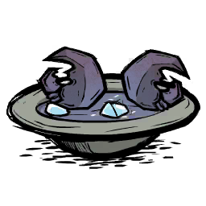
Icon cookbook từ APK
Món nhóm thịt
Điều kiện, viết lại dễ đọc (giữ nguyên nhóm “và / hoặc”): Có nguyên liệu Wobster và có điểm nhóm đồ lạnh/đá
Lobster Bisque
Mã nội bộ: lobsterbisque
Máu+60No+25Tinh thần+10
Độ tươi: 10 ngày trong game (mốc TUNING) Thời gian nấu: hệ số ×0,5 lần thời gian nền của nồi (không phải số phút cố định).
Điều kiện chi tiết và dữ liệu gốc
Điều kiện nồi: xem biểu thức nguồn bên dưới; các nhóm nguyên liệu được cộng theo giá trị tag, không phải lúc nào cũng là số món.
preparedfoods.lua:676 (tệp gốc không nằm trong gói web)
Điều kiện, viết lại dễ đọc (giữ nguyên nhóm “và / hoặc”): Có nguyên liệu Wobster và có nguyên liệu Butter và (tổng điểm nhóm thịt ít nhất 1.0) và (tổng điểm nhóm cá ít nhất 1.0) và không có điểm nhóm đồ lạnh/đá
Lobster Dinner
Mã nội bộ: lobsterdinner
Máu+60No+37,5Tinh thần+50
Độ tươi: 15 ngày trong game (mốc TUNING) Thời gian nấu: hệ số ×1 lần thời gian nền của nồi (không phải số phút cố định).
Điều kiện chi tiết và dữ liệu gốc
Điều kiện nồi: xem biểu thức nguồn bên dưới; các nhóm nguyên liệu được cộng theo giá trị tag, không phải lúc nào cũng là số món.
preparedfoods.lua:691 (tệp gốc không nằm trong gói web)
{
"test": "function(cooker, names, tags)\n return names.wobster_sheller_land and names.butter\n and (tags.meat and tags.meat >= 1.0) and (tags.fish and tags.fish >= 1.0) and not tags.frozen\n end",
"priority": "25",
"foodtype": "FOODTYPE.MEAT",
"health": "TUNING.HEALING_HUGE",
"hunger": "TUNING.CALORIES_LARGE",
"perishtime": "TUNING.PERISH_SLOW",
"sanity": "TUNING.SANITY_HUGE",
"cooktime": "1",
"overridebuild": "\"cook_pot_food3\"",
"potlevel": "\"high\"",
"floater": "{\"med\", 0.05, {0.65, 0.6, 0.65}}"
}
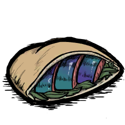
Icon cookbook từ APK
Món nhóm thịt
Điều kiện, viết lại dễ đọc (giữ nguyên nhóm “và / hoặc”): Có Barnacles (tươi hoặc đã nấu) và tổng điểm nhóm rau ít nhất 0.5
Barnacle Pita
Mã nội bộ: barnaclepita
Máu+20No+37,5Tinh thần+5
Độ tươi: 15 ngày trong game (mốc TUNING) Thời gian nấu: hệ số ×2 lần thời gian nền của nồi (không phải số phút cố định).
Điều kiện chi tiết và dữ liệu gốc
Điều kiện nồi: xem biểu thức nguồn bên dưới; các nhóm nguyên liệu được cộng theo giá trị tag, không phải lúc nào cũng là số món.
preparedfoods.lua:709 (tệp gốc không nằm trong gói web)
Điều kiện, viết lại dễ đọc (giữ nguyên nhóm “và / hoặc”): Có Barnacles (tươi hoặc đã nấu) và có Kelp Fronds (tươi hoặc đã nấu) và tổng điểm nhóm trứng ít nhất 1
Barnacle Nigiri
Mã nội bộ: barnaclesushi
Máu+40No+37,5Tinh thần+15
Độ tươi: 10 ngày trong game (mốc TUNING) Thời gian nấu: hệ số ×0,5 lần thời gian nền của nồi (không phải số phút cố định).
Điều kiện chi tiết và dữ liệu gốc
Điều kiện nồi: xem biểu thức nguồn bên dưới; các nhóm nguyên liệu được cộng theo giá trị tag, không phải lúc nào cũng là số món.
preparedfoods.lua:726 (tệp gốc không nằm trong gói web)
Điều kiện, viết lại dễ đọc (giữ nguyên nhóm “và / hoặc”): Có Leafy Meat (tươi hoặc đã nấu) và có Onion (tươi hoặc đã nấu) và tổng điểm nhóm rau ít nhất 2
Veggie Burger
Mã nội bộ: leafymeatburger
MáuCó hiệu ứng theo công thức riêngNo+37,5Tinh thần+33
Độ tươi: 6 ngày trong game (mốc TUNING) Thời gian nấu: hệ số ×2 lần thời gian nền của nồi (không phải số phút cố định).
Điều kiện chi tiết và dữ liệu gốc
Điều kiện nồi: xem biểu thức nguồn bên dưới; các nhóm nguyên liệu được cộng theo giá trị tag, không phải lúc nào cũng là số món.
preparedfoods.lua:797 (tệp gốc không nằm trong gói web)
Điều kiện, viết lại dễ đọc (giữ nguyên nhóm “và / hoặc”): Có nguyên liệu Moon Shroom và có nguyên liệu Red Cap và có nguyên liệu Blue Cap và có nguyên liệu Green Cap
Mushy Cake
Mã nội bộ: shroomcake
MáuKhông đổiNo+25Tinh thần+10
Độ tươi: 15 ngày trong game (mốc TUNING) Thời gian nấu: hệ số ×1 lần thời gian nền của nồi (không phải số phút cố định). Ghi chú: Hiệu ứng đặc biệt: STRINGS.UI.COOKBOOK.FOOD_EFFECTS_SLEEP_RESISTANCE
Điều kiện chi tiết và dữ liệu gốc
Điều kiện nồi: xem biểu thức nguồn bên dưới; các nhóm nguyên liệu được cộng theo giá trị tag, không phải lúc nào cũng là số món.
preparedfoods.lua:850 (tệp gốc không nằm trong gói web)
Điều kiện, viết lại dễ đọc (giữ nguyên nhóm “và / hoặc”): (có nguyên liệu Forget-Me-Lots hoặc có nguyên liệu Dried Forget-Me-Lots) và có điểm nhóm chất ngọt và có điểm nhóm đồ lạnh/đá và không có điểm nhóm quái vật và không có điểm nhóm rau và không có điểm nhóm thịt và không có điểm nhóm cá và không có điểm nhóm trứng và không có điểm nhóm chất béo và không có điểm nhóm sữa và không có điểm nhóm vật không ăn được
Soothing Tea
Mã nội bộ: sweettea
Máu+3NoKhông đổiTinh thần+15
Độ tươi: 3 ngày trong game (mốc TUNING) Thời gian nấu: hệ số ×1 lần thời gian nền của nồi (không phải số phút cố định). Ghi chú: Nhiệt độ khi ăn: TUNING.HOT_FOOD_BONUS_TEMP · Thời lượng nhiệt: TUNING.FOOD_TEMP_BRIEF · Hiệu ứng đặc biệt: STRINGS.UI.COOKBOOK.FOOD_EFFECTS_HOT_SANITY_REGEN
Điều kiện chi tiết và dữ liệu gốc
Điều kiện nồi: xem biểu thức nguồn bên dưới; các nhóm nguyên liệu được cộng theo giá trị tag, không phải lúc nào cũng là số món.
preparedfoods.lua:879 (tệp gốc không nằm trong gói web)
{
"test": "function(cooker, names, tags) return (names.forgetmelots or names.forgetmelots_dried) and tags.sweetener and tags.frozen and not tags.monster and not tags.veggie and not tags.meat and not tags.fish and not tags.egg and not tags.fat and not tags.dairy and not tags.inedible end",
"priority": "1",
"overridebuild": "\"cook_pot_food7\"",
"foodtype": "FOODTYPE.VEGGIE",
"health": "TUNING.HEALING_SMALL",
"hunger": "0",
"sanity": "TUNING.SANITY_MED",
"perishtime": "TUNING.PERISH_SUPERFAST",
"temperature": "TUNING.HOT_FOOD_BONUS_TEMP",
"temperatureduration": "TUNING.FOOD_TEMP_BRIEF",
"cooktime": "1",
"potlevel": "\"low\"",
"floater": "{\"med\", 0.05, 0.65}",
"prefabs": "{ \"sweettea_buff\" }",
"tags": "{ \"honeyed\", \"fooddrink\" }",
"oneat_desc": "STRINGS.UI.COOKBOOK.FOOD_EFFECTS_HOT_SANITY_REGEN",
"oneatenfn": "function(inst, eater)\n\t\t\teater:AddDebuff(\"sweettea_buff\", \"sweettea_buff\")\n end",
"card_def": "{ingredients = {{\"forgetmelots\", 1}, {\"honey\", 1}, {\"ice\", 2}} }",
"scrapbook_sanityvalue": "45"
}
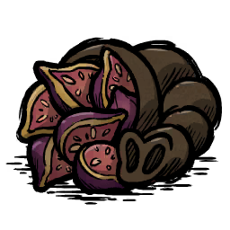
Icon cookbook từ APK
Món nhóm thịt
Điều kiện, viết lại dễ đọc (giữ nguyên nhóm “và / hoặc”): (có nguyên liệu Koalefant Trunk hoặc có nguyên liệu Koalefant Trunk Steak hoặc có nguyên liệu Winter Koalefant Trunk) và có Fig (tươi hoặc đã nấu)
Fig-Stuffed Trunk
Mã nội bộ: koalefig_trunk
Máu+60No+150Tinh thần+15
Độ tươi: 15 ngày trong game (mốc TUNING) Thời gian nấu: hệ số ×2 lần thời gian nền của nồi (không phải số phút cố định).
Điều kiện chi tiết và dữ liệu gốc
Điều kiện nồi: xem biểu thức nguồn bên dưới; các nhóm nguyên liệu được cộng theo giá trị tag, không phải lúc nào cũng là số món.
preparedfoods.lua:904 (tệp gốc không nằm trong gói web)
{
"test": "function(cooker, names, tags) return (names.trunk_summer or names.trunk_cooked or names.trunk_winter) and (names.fig or names.fig_cooked) end",
"priority": "40",
"overridebuild": "\"cook_pot_food8\"",
"foodtype": "FOODTYPE.MEAT",
"health": "TUNING.HEALING_HUGE",
"hunger": "TUNING.CALORIES_SUPERHUGE",
"sanity": "TUNING.SANITY_MED",
"perishtime": "TUNING.PERISH_SLOW",
"cooktime": "2",
"potlevel": "\"high\"",
"floater": "{\"med\", 0.05, 0.65}"
}
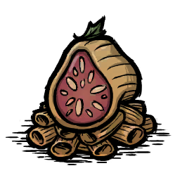
Icon cookbook từ APK
Món nhóm rau
Điều kiện, viết lại dễ đọc (giữ nguyên nhóm “và / hoặc”): Có Fig (tươi hoặc đã nấu) và tổng điểm nhóm rau ít nhất 2 và không có điểm nhóm thịt
Figatoni
Mã nội bộ: figatoni
MáuCó hiệu ứng theo công thức riêngNo+56,25Tinh thần+15
Độ tươi: 6 ngày trong game (mốc TUNING) Thời gian nấu: hệ số ×2 lần thời gian nền của nồi (không phải số phút cố định).
Điều kiện chi tiết và dữ liệu gốc
Điều kiện nồi: xem biểu thức nguồn bên dưới; các nhóm nguyên liệu được cộng theo giá trị tag, không phải lúc nào cũng là số món.
preparedfoods.lua:919 (tệp gốc không nằm trong gói web)
{
"test": "function(cooker, names, tags) return (names.fig or names.fig_cooked) and tags.veggie and tags.veggie >= 2 and not tags.meat end",
"priority": "30",
"overridebuild": "\"cook_pot_food8\"",
"foodtype": "FOODTYPE.VEGGIE",
"health": "TUNING.HEALING_MEDLARGE",
"hunger": "TUNING.CALORIES_LARGE + TUNING.CALORIES_MEDSMALL",
"sanity": "TUNING.SANITY_MED",
"perishtime": "TUNING.PERISH_FAST",
"cooktime": "2",
"potlevel": "\"high\"",
"floater": "{\"med\", 0.05, 0.65}"
}
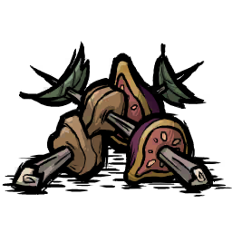
Icon cookbook từ APK
Món nhóm thịt
Điều kiện, viết lại dễ đọc (giữ nguyên nhóm “và / hoặc”): Có Fig (tươi hoặc đã nấu) và có nguyên liệu Twigs và tổng điểm nhóm thịt ít nhất 1 và (không có điểm nhóm quái vật hoặc tổng điểm nhóm quái vật không quá 1)
Figkabab
Mã nội bộ: figkabab
Máu+20No+37,5Tinh thần+10
Độ tươi: 15 ngày trong game (mốc TUNING) Thời gian nấu: hệ số ×1 lần thời gian nền của nồi (không phải số phút cố định). Ghi chú: Nhiệt độ khi ăn: TUNING.HOT_FOOD_BONUS_TEMP · Thời lượng nhiệt: TUNING.FOOD_TEMP_LONG
Điều kiện chi tiết và dữ liệu gốc
Điều kiện nồi: xem biểu thức nguồn bên dưới; các nhóm nguyên liệu được cộng theo giá trị tag, không phải lúc nào cũng là số món.
preparedfoods.lua:934 (tệp gốc không nằm trong gói web)
Điều kiện, viết lại dễ đọc (giữ nguyên nhóm “và / hoặc”): Có Fig (tươi hoặc đã nấu) và có Frog Legs (tươi hoặc đã nấu)
Figgy Frogwich
Mã nội bộ: frognewton
Máu+20No+25Tinh thần+5
Độ tươi: 15 ngày trong game (mốc TUNING) Thời gian nấu: hệ số ×1 lần thời gian nền của nồi (không phải số phút cố định). Ghi chú: Nhiệt độ khi ăn: TUNING.HOT_FOOD_BONUS_TEMP · Thời lượng nhiệt: TUNING.FOOD_TEMP_LONG
Điều kiện chi tiết và dữ liệu gốc
Điều kiện nồi: xem biểu thức nguồn bên dưới; các nhóm nguyên liệu được cộng theo giá trị tag, không phải lúc nào cũng là số món.
preparedfoods.lua:952 (tệp gốc không nằm trong gói web)
Điều kiện, viết lại dễ đọc (giữ nguyên nhóm “và / hoặc”): (tổng điểm nhóm thịt nhỏ hơn 1) và (tổng điểm nhóm đồ lạnh/đá ít nhất 2) và (không có điểm nhóm vật không ăn được)
Bunny Stew
Mã nội bộ: bunnystew
Máu+20No+37,5Tinh thần+5
Độ tươi: 10 ngày trong game (mốc TUNING) Thời gian nấu: hệ số ×0,5 lần thời gian nền của nồi (không phải số phút cố định). Ghi chú: Nhiệt độ khi ăn: TUNING.HOT_FOOD_BONUS_TEMP · Thời lượng nhiệt: TUNING.FOOD_TEMP_BRIEF
Điều kiện chi tiết và dữ liệu gốc
Điều kiện nồi: xem biểu thức nguồn bên dưới; các nhóm nguyên liệu được cộng theo giá trị tag, không phải lúc nào cũng là số món.
preparedfoods.lua:969 (tệp gốc không nằm trong gói web)
Điều kiện, viết lại dễ đọc (giữ nguyên nhóm “và / hoặc”): Tổng điểm nhóm trứng ít nhất 1 và tổng điểm nhóm rau ít nhất 1 và không có điểm nhóm thịt và không có điểm nhóm sữa
Breakfast Skillet
Mã nội bộ: veggieomlet
Máu+20No+37,5Tinh thần+5
Độ tươi: 20 ngày trong game (mốc TUNING) Thời gian nấu: hệ số ×1 lần thời gian nền của nồi (không phải số phút cố định).
Điều kiện chi tiết và dữ liệu gốc
Điều kiện nồi: xem biểu thức nguồn bên dưới; các nhóm nguyên liệu được cộng theo giá trị tag, không phải lúc nào cũng là số món.
preparedfoods.lua:1005 (tệp gốc không nằm trong gói web)
{
"test": "function(cooker, names, tags) return tags.egg and tags.egg >= 1 and tags.veggie and tags.veggie >= 1 and not tags.meat and not tags.dairy end",
"priority": "1",
"overridebuild": "\"cook_pot_food11\"",
"foodtype": "FOODTYPE.MEAT",
"health": "TUNING.HEALING_MED",
"hunger": "TUNING.CALORIES_LARGE",
"perishtime": "TUNING.PERISH_PRESERVED",
"sanity": "TUNING.SANITY_TINY",
"cooktime": "1",
"potlevel": "\"high\"",
"floater": "{\"med\", nil, 0.7}"
}
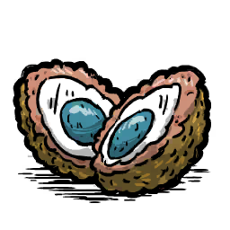
Icon cookbook từ APK
Món nhóm thịt
Điều kiện, viết lại dễ đọc (giữ nguyên nhóm “và / hoặc”): Có nguyên liệu Tallbird Egg và tổng điểm nhóm rau ít nhất 1
Tall Scotch Eggs
Mã nội bộ: talleggs
Máu+60No+150Tinh thần+5
Độ tươi: 15 ngày trong game (mốc TUNING) Thời gian nấu: hệ số ×2 lần thời gian nền của nồi (không phải số phút cố định).
Điều kiện chi tiết và dữ liệu gốc
Điều kiện nồi: xem biểu thức nguồn bên dưới; các nhóm nguyên liệu được cộng theo giá trị tag, không phải lúc nào cũng là số món.
preparedfoods.lua:1020 (tệp gốc không nằm trong gói web)
Điều kiện, viết lại dễ đọc (giữ nguyên nhóm “và / hoặc”): Có điểm nhóm vật không ăn được và không có điểm nhóm quái vật và không có điểm nhóm thịt và không có điểm nhóm cá và không có điểm nhóm trứng và không có điểm nhóm chất béo và không có điểm nhóm sữa và không có điểm nhóm ma thuật
Steamed Twigs
Mã nội bộ: beefalofeed
MáuCó hiệu ứng theo công thức riêngNo+100Tinh thầnKhông đổi
Độ tươi: 20 ngày trong game (mốc TUNING) Thời gian nấu: hệ số ×0,5 lần thời gian nền của nồi (không phải số phút cố định). Ghi chú: Hiệu ứng đặc biệt: STRINGS.UI.COOKBOOK.FOOD_EFFECTS_BEEFALO
Điều kiện chi tiết và dữ liệu gốc
Điều kiện nồi: xem biểu thức nguồn bên dưới; các nhóm nguyên liệu được cộng theo giá trị tag, không phải lúc nào cũng là số món.
preparedfoods.lua:1034 (tệp gốc không nằm trong gói web)
{
"test": "function(cooker, names, tags) return tags.inedible and not tags.monster and not tags.meat and not tags.fish and not tags.egg and not tags.fat and not tags.dairy and not tags.magic end",
"priority": "-5",
"overridebuild": "\"cook_pot_food11\"",
"foodtype": "FOODTYPE.ROUGHAGE",
"secondaryfoodtype": "FOODTYPE.WOOD",
"health": "TUNING.HEALING_MEDLARGE/2",
"hunger": "TUNING.CALORIES_MOREHUGE",
"perishtime": "TUNING.PERISH_PRESERVED",
"sanity": "0",
"cooktime": "0.5",
"oneat_desc": "STRINGS.UI.COOKBOOK.FOOD_EFFECTS_BEEFALO",
"OnPutInInventory": "function(inst, owner) if owner ~= nil and owner:IsValid() then owner:PushEvent(\"learncookbookstats\", inst.food_basename or inst.prefab) end end",
"card_def": "{ingredients = {{\"twigs\", 3}, {\"acorn\", 1}} }"
}
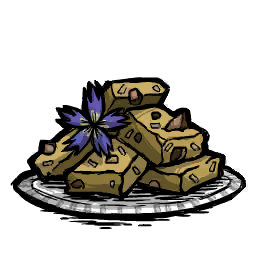
Icon cookbook từ APK
Món ăn
Điều kiện, viết lại dễ đọc (giữ nguyên nhóm “và / hoặc”): Có điểm nhóm vật không ăn được và có điểm nhóm hạt giống và (có nguyên liệu Forget-Me-Lots hoặc có nguyên liệu Dried Forget-Me-Lots) và không có điểm nhóm quái vật và không có điểm nhóm thịt và không có điểm nhóm cá và không có điểm nhóm trứng và không có điểm nhóm chất béo và không có điểm nhóm sữa và không có điểm nhóm ma thuật
Beefalo Treats
Mã nội bộ: beefalotreat
Máu+75No+25Tinh thầnKhông đổi
Độ tươi: 20 ngày trong game (mốc TUNING) Thời gian nấu: hệ số ×2 lần thời gian nền của nồi (không phải số phút cố định). Ghi chú: Hiệu ứng đặc biệt: STRINGS.UI.COOKBOOK.FOOD_EFFECTS_BEEFALO
Điều kiện chi tiết và dữ liệu gốc
Điều kiện nồi: xem biểu thức nguồn bên dưới; các nhóm nguyên liệu được cộng theo giá trị tag, không phải lúc nào cũng là số món.
preparedfoods.lua:1052 (tệp gốc không nằm trong gói web)
{
"test": "function(cooker, names, tags) return tags.inedible and tags.seed and (names.forgetmelots or names.forgetmelots_dried) and not tags.monster and not tags.meat and not tags.fish and not tags.egg and not tags.fat and not tags.dairy and not tags.magic end",
"priority": "-4",
"foodtype": "FOODTYPE.ROUGHAGE",
"overridebuild": "\"cook_pot_food11\"",
"health": "TUNING.HEALING_MOREHUGE",
"hunger": "TUNING.CALORIES_MED",
"perishtime": "TUNING.PERISH_PRESERVED",
"sanity": "0",
"cooktime": "2",
"potlevel": "\"high\"",
"floater": "{\"med\", nil, 0.85}",
"oneat_desc": "STRINGS.UI.COOKBOOK.FOOD_EFFECTS_BEEFALO",
"OnPutInInventory": "function(inst, owner) if owner ~= nil and owner:IsValid() then owner:PushEvent(\"learncookbookstats\", inst.food_basename or inst.prefab) end end"
}
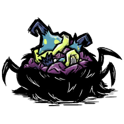
Icon cookbook từ APK
Món nhóm thịt
Điều kiện, viết lại dễ đọc (giữ nguyên nhóm “và / hoặc”): ((có nguyên liệu Moon Shroom hoặc 0) ≥ 2 ) và có nguyên liệu Monster Meat --có nguyên liệu Moon Shroom
Stuffed Night Cap
Mã nội bộ: shroombait
Máu−20No+18,75Tinh thần−15
Độ tươi: 15 ngày trong game (mốc TUNING) Thời gian nấu: hệ số ×1 lần thời gian nền của nồi (không phải số phút cố định). Ghi chú: Hiệu ứng đặc biệt: STRINGS.UI.COOKBOOK.FOOD_EFFECTS_SLEEP
Điều kiện chi tiết và dữ liệu gốc
Điều kiện nồi: xem biểu thức nguồn bên dưới; các nhóm nguyên liệu được cộng theo giá trị tag, không phải lúc nào cũng là số món.
preparedfoods.lua:1070 (tệp gốc không nằm trong gói web)
Điều kiện, viết lại dễ đọc (giữ nguyên nhóm “và / hoặc”): Có nguyên liệu Nightmare Fuel và số Nightmare Fuel bằng 2 và có Potato (tươi hoặc đã nấu) và có Onion (tươi hoặc đã nấu)
Grim Galette
Mã nội bộ: nightmarepie
Máu+1No+25Tinh thần+5
Độ tươi: 10 ngày trong game (mốc TUNING) Thời gian nấu: hệ số ×2 lần thời gian nền của nồi (không phải số phút cố định). Ghi chú: Hiệu ứng đặc biệt: STRINGS.UI.COOKBOOK.FOOD_EFFECTS_SWAP_HEALTH_AND_SANITY
Điều kiện chi tiết và dữ liệu gốc
Điều kiện nồi: xem biểu thức nguồn bên dưới; các nhóm nguyên liệu được cộng theo giá trị tag, không phải lúc nào cũng là số món.
preparedfoods_warly.lua:4 (tệp gốc không nằm trong gói web)
{
"test": "function(cooker, names, tags) return names.nightmarefuel and names.nightmarefuel == 2 and (names.potato or names.potato_cooked) and (names.onion or names.onion_cooked) end",
"priority": "30",
"foodtype": "FOODTYPE.VEGGIE",
"health": "TUNING.HEALING_TINY",
"hunger": "TUNING.CALORIES_MED",
"perishtime": "TUNING.PERISH_MED",
"sanity": "TUNING.SANITY_TINY",
"cooktime": "2",
"oneat_desc": "STRINGS.UI.COOKBOOK.FOOD_EFFECTS_SWAP_HEALTH_AND_SANITY",
"oneatenfn": "function(inst, eater)\r\n if eater.components.sanity ~= nil and eater.components.health ~= nil and eater.components.oldager == nil then\r\n local sanity_percent = eater.components.sanity:GetPercent()\r\n local health_percent = eater.components.health:GetPercent()\r\n --Use DoDelta so that we don't bypass invincibility\r\n --and to make sure we get the correct HUD triggers.\r\n eater.components.sanity:DoDelta(health_percent * eater.components.sanity.max - eater.components.sanity.current)\r\n eater.components.health:DoDelta(sanity_percent * eater.components.health.maxhealth - eater.components.health.currenth [PREVIEW; full source at recorded location]",
"tags": "{ \"masterfood\", \"unsafefood\" }",
"floater": "{nil, 0.1, 0.9}"
}
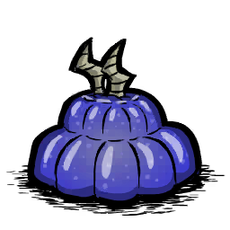
Icon cookbook từ APK
Món ngọt
Điều kiện, viết lại dễ đọc (giữ nguyên nhóm “và / hoặc”): (có nguyên liệu Volt Goat Horn) và (tổng điểm nhóm chất ngọt ít nhất 2) và không có điểm nhóm thịt
Volt Goat Chaud-Froid
Mã nội bộ: voltgoatjelly
Máu+3No+37,5Tinh thần+10
Độ tươi: 10 ngày trong game (mốc TUNING) Thời gian nấu: hệ số ×2 lần thời gian nền của nồi (không phải số phút cố định). Ghi chú: Hiệu ứng đặc biệt: STRINGS.UI.COOKBOOK.FOOD_EFFECTS_ELECTRIC_ATTACK
Điều kiện chi tiết và dữ liệu gốc
Điều kiện nồi: xem biểu thức nguồn bên dưới; các nhóm nguyên liệu được cộng theo giá trị tag, không phải lúc nào cũng là số món.
preparedfoods_warly.lua:30 (tệp gốc không nằm trong gói web)
Điều kiện, viết lại dễ đọc (giữ nguyên nhóm “và / hoặc”): (có nguyên liệu Glow Berry hoặc (có nguyên liệu Lesser Glow Berry và số Lesser Glow Berry ít nhất 2)) và (tổng điểm nhóm trái cây ít nhất 2) và không có điểm nhóm thịt và không có điểm nhóm vật không ăn được
Glow Berry Mousse
Mã nội bộ: glowberrymousse
Máu+3No+37,5Tinh thần+10
Độ tươi: 8 ngày trong game (mốc TUNING) Thời gian nấu: hệ số ×1 lần thời gian nền của nồi (không phải số phút cố định). Ghi chú: Hiệu ứng đặc biệt: STRINGS.UI.COOKBOOK.FOOD_EFFECTS_GLOW
Điều kiện chi tiết và dữ liệu gốc
Điều kiện nồi: xem biểu thức nguồn bên dưới; các nhóm nguyên liệu được cộng theo giá trị tag, không phải lúc nào cũng là số món.
preparedfoods_warly.lua:52 (tệp gốc không nằm trong gói web)
{
"test": "function(cooker, names, tags) return (names.wormlight or (names.wormlight_lesser and names.wormlight_lesser >= 2)) and (tags.fruit and tags.fruit >= 2) and not tags.meat and not tags.inedible end",
"priority": "30",
"foodtype": "FOODTYPE.VEGGIE",
"health": "TUNING.HEALING_SMALL",
"hunger": "TUNING.CALORIES_LARGE",
"perishtime": "TUNING.PERISH_FASTISH",
"sanity": "TUNING.SANITY_SMALL",
"cooktime": "1",
"potlevel": "\"low\"",
"prefabs": "{ \"wormlight_light_greater\" }",
"oneat_desc": "STRINGS.UI.COOKBOOK.FOOD_EFFECTS_GLOW",
"oneatenfn": "function(inst, eater)\r\n --see wormlight.lua for original code\r\n if eater.wormlight ~= nil then\r\n if eater.wormlight.prefab == \"wormlight_light_greater\" then\r\n eater.wormlight.components.spell.lifetime = 0\r\n eater.wormlight.components.spell:ResumeSpell()\r\n return\r\n else\r\n eater.wormlight.components.spell:OnFinish()\r\n end\r\n end\r\n\r\n local light = SpawnPrefab(\"wormlight_light_greater\")\r\n light.components.spell:SetTarget(eater)\r\n if light:IsValid() then\r\n if light.components.spell.target == nil the [PREVIEW; full source at recorded location]",
"tags": "{ \"masterfood\" }",
"floater": "{nil, 0.1, 0.75}"
}
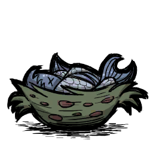
Icon cookbook từ APK
Món nhóm thịt
Điều kiện, viết lại dễ đọc (giữ nguyên nhóm “và / hoặc”): ((có nguyên liệu Frog Legs và số Frog Legs ít nhất 2) hoặc (có nguyên liệu Cooked Frog Legs và số Cooked Frog Legs ít nhất 2 ) hoặc (có nguyên liệu Frog Legs và có nguyên liệu Cooked Frog Legs)) và tổng điểm nhóm cá ít nhất 1 và không có điểm nhóm vật không ăn được
Fish Cordon Bleu
Mã nội bộ: frogfishbowl
Máu+20No+37,5Tinh thần−10
Độ tươi: 8 ngày trong game (mốc TUNING) Thời gian nấu: hệ số ×2 lần thời gian nền của nồi (không phải số phút cố định). Ghi chú: Hiệu ứng đặc biệt: STRINGS.UI.COOKBOOK.FOOD_EFFECTS_DRY
Điều kiện chi tiết và dữ liệu gốc
Điều kiện nồi: xem biểu thức nguồn bên dưới; các nhóm nguyên liệu được cộng theo giá trị tag, không phải lúc nào cũng là số món.
preparedfoods_warly.lua:91 (tệp gốc không nằm trong gói web)
{
"test": "function(cooker, names, tags) return ((names.froglegs and names.froglegs >= 2) or (names.froglegs_cooked and names.froglegs_cooked >= 2 ) or (names.froglegs and names.froglegs_cooked)) and tags.fish and tags.fish >= 1 and not tags.inedible end",
"priority": "30",
"foodtype": "FOODTYPE.MEAT",
"health": "TUNING.HEALING_MED",
"hunger": "TUNING.CALORIES_LARGE",
"sanity": "-TUNING.SANITY_SMALL",
"perishtime": "TUNING.PERISH_FASTISH",
"cooktime": "2",
"potlevel": "\"low\"",
"tags": "{ \"masterfood\" }",
"prefabs": "{ \"buff_moistureimmunity\" }",
"oneat_desc": "STRINGS.UI.COOKBOOK.FOOD_EFFECTS_DRY",
"oneatenfn": "function(inst, eater)\r\n eater:AddDebuff(\"buff_moistureimmunity\", \"buff_moistureimmunity\")\r\n \tend",
"floater": "{nil, 0.1}"
}
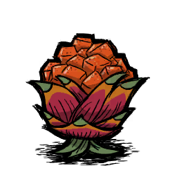
Icon cookbook từ APK
Món nhóm rau
Điều kiện, viết lại dễ đọc (giữ nguyên nhóm “và / hoặc”): Có Dragon Fruit (tươi hoặc đã nấu) và có Pepper (tươi hoặc đã nấu) và không có điểm nhóm thịt và không có điểm nhóm vật không ăn được và không có điểm nhóm trứng
Hot Dragon Chili Salad
Mã nội bộ: dragonchilisalad
Máu−3No+25Tinh thần+10
Độ tươi: 15 ngày trong game (mốc TUNING) Thời gian nấu: hệ số ×0,75 lần thời gian nền của nồi (không phải số phút cố định). Ghi chú: Nhiệt độ khi ăn: TUNING.HOT_FOOD_BONUS_TEMP · Thời lượng nhiệt: TUNING.BUFF_FOOD_TEMP_DURATION
Điều kiện chi tiết và dữ liệu gốc
Điều kiện nồi: xem biểu thức nguồn bên dưới; các nhóm nguyên liệu được cộng theo giá trị tag, không phải lúc nào cũng là số món.
preparedfoods_warly.lua:111 (tệp gốc không nằm trong gói web)
{
"test": "function(cooker, names, tags) return (names.dragonfruit or names.dragonfruit_cooked) and (names.pepper or names.pepper_cooked) and not tags.meat and not tags.inedible and not tags.egg end",
"priority": "30",
"foodtype": "FOODTYPE.VEGGIE",
"health": "-TUNING.HEALING_SMALL",
"hunger": "TUNING.CALORIES_MED",
"sanity": "TUNING.SANITY_SMALL",
"temperature": "TUNING.HOT_FOOD_BONUS_TEMP",
"temperatureduration": "TUNING.BUFF_FOOD_TEMP_DURATION",
"nochill": "true",
"perishtime": "TUNING.PERISH_SLOW",
"cooktime": "0.75",
"potlevel": "\"low\"",
"tags": "{ \"masterfood\" }",
"floater": "{nil, 0.1, 0.7}"
}
Icon cookbook từ APK
Món nhóm rau
Điều kiện, viết lại dễ đọc (giữ nguyên nhóm “và / hoặc”): Có tổng ít nhất 2 Asparagus (có thể trộn tươi và đã nấu) và (tổng điểm nhóm đồ lạnh/đá ít nhất 2)
Asparagazpacho
Mã nội bộ: gazpacho
Máu+3No+25Tinh thần+10
Độ tươi: 15 ngày trong game (mốc TUNING) Thời gian nấu: hệ số ×0,5 lần thời gian nền của nồi (không phải số phút cố định). Ghi chú: Nhiệt độ khi ăn: TUNING.COLD_FOOD_BONUS_TEMP · Thời lượng nhiệt: TUNING.BUFF_FOOD_TEMP_DURATION
Điều kiện chi tiết và dữ liệu gốc
Điều kiện nồi: xem biểu thức nguồn bên dưới; các nhóm nguyên liệu được cộng theo giá trị tag, không phải lúc nào cũng là số món.
preparedfoods_warly.lua:129 (tệp gốc không nằm trong gói web)
{
"test": "function(cooker, names, tags) return ((names.asparagus and names.asparagus >= 2) or (names.asparagus_cooked and names.asparagus_cooked >= 2) or (names.asparagus and names.asparagus_cooked)) and (tags.frozen and tags.frozen >= 2) end",
"priority": "30",
"foodtype": "FOODTYPE.VEGGIE",
"health": "TUNING.HEALING_SMALL",
"hunger": "TUNING.CALORIES_MED",
"sanity": "TUNING.SANITY_SMALL",
"temperature": "TUNING.COLD_FOOD_BONUS_TEMP",
"temperatureduration": "TUNING.BUFF_FOOD_TEMP_DURATION",
"perishtime": "TUNING.PERISH_SLOW",
"cooktime": "0.5",
"potlevel": "\"low\"",
"tags": "{ \"masterfood\", \"fooddrink\" }",
"floater": "{nil, 0.1, 0.7}"
}
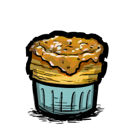
Icon cookbook từ APK
Món nhóm rau
Điều kiện, viết lại dễ đọc (giữ nguyên nhóm “và / hoặc”): Có tổng ít nhất 2 Potato (có thể trộn tươi và đã nấu) và có điểm nhóm trứng và không có điểm nhóm thịt và không có điểm nhóm vật không ăn được
Puffed Potato Soufflé
Mã nội bộ: potatosouffle
Máu+20No+37,5Tinh thần+15
Độ tươi: 10 ngày trong game (mốc TUNING) Thời gian nấu: hệ số ×2 lần thời gian nền của nồi (không phải số phút cố định).
Điều kiện chi tiết và dữ liệu gốc
Điều kiện nồi: xem biểu thức nguồn bên dưới; các nhóm nguyên liệu được cộng theo giá trị tag, không phải lúc nào cũng là số món.
preparedfoods_warly.lua:148 (tệp gốc không nằm trong gói web)
{
"test": "function(cooker, names, tags) return ((names.potato and names.potato >= 2) or (names.potato_cooked and names.potato_cooked >= 2) or (names.potato and names.potato_cooked)) and tags.egg and not tags.meat and not tags.inedible end",
"priority": "30",
"foodtype": "FOODTYPE.VEGGIE",
"health": "TUNING.HEALING_MED",
"hunger": "TUNING.CALORIES_LARGE",
"perishtime": "TUNING.PERISH_MED",
"sanity": "TUNING.SANITY_MED",
"cooktime": "2",
"potlevel": "\"low\"",
"tags": "{ \"masterfood\" }",
"floater": "{nil, 0.1, 0.65}"
}
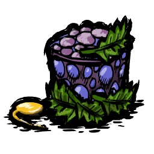
Icon cookbook từ APK
Món nhóm thịt
Điều kiện, viết lại dễ đọc (giữ nguyên nhóm “và / hoặc”): Tổng điểm nhóm quái vật ít nhất 2 và không có điểm nhóm vật không ăn được
Monster Tartare
Mã nội bộ: monstertartare
Máu−20No+62,5Tinh thầnCó hiệu ứng theo công thức riêng
Độ tươi: 10 ngày trong game (mốc TUNING) Thời gian nấu: hệ số ×0,5 lần thời gian nền của nồi (không phải số phút cố định).
Điều kiện chi tiết và dữ liệu gốc
Điều kiện nồi: xem biểu thức nguồn bên dưới; các nhóm nguyên liệu được cộng theo giá trị tag, không phải lúc nào cũng là số món.
preparedfoods_warly.lua:164 (tệp gốc không nằm trong gói web)
Điều kiện, viết lại dễ đọc (giữ nguyên nhóm “và / hoặc”): Có nguyên liệu Bone Shards và số Bone Shards bằng 2 và có Onion (tươi hoặc đã nấu) và (tổng điểm nhóm vật không ăn được nhỏ hơn 3)
Bone Bouillon
Mã nội bộ: bonesoup
Máu+32No+150Tinh thần+5
Độ tươi: 10 ngày trong game (mốc TUNING) Thời gian nấu: hệ số ×2 lần thời gian nền của nồi (không phải số phút cố định).
Điều kiện chi tiết và dữ liệu gốc
Điều kiện nồi: xem biểu thức nguồn bên dưới; các nhóm nguyên liệu được cộng theo giá trị tag, không phải lúc nào cũng là số món.
preparedfoods_warly.lua:195 (tệp gốc không nằm trong gói web)
{
"test": "function(cooker, names, tags) return names.boneshard and names.boneshard == 2 and (names.onion or names.onion_cooked) and (tags.inedible and tags.inedible < 3) end",
"priority": "30",
"foodtype": "FOODTYPE.MEAT",
"health": "TUNING.HEALING_MEDSMALL * 4",
"hunger": "TUNING.CALORIES_LARGE * 4",
"perishtime": "TUNING.PERISH_MED",
"sanity": "TUNING.SANITY_TINY",
"cooktime": "2",
"potlevel": "\"low\"",
"tags": "{ \"masterfood\" }",
"floater": "{nil, 0.05}"
}
Icon cookbook từ APK
Món nhóm thịt
Điều kiện, viết lại dễ đọc (giữ nguyên nhóm “và / hoặc”): Có điểm nhóm cá và có Onion (tươi hoặc đã nấu) và có Toma Root (tươi hoặc đã nấu) và không có điểm nhóm vật không ăn được
Moqueca
Mã nội bộ: moqueca
Máu+60No+112,5Tinh thần+33
Độ tươi: 8 ngày trong game (mốc TUNING) Thời gian nấu: hệ số ×2 lần thời gian nền của nồi (không phải số phút cố định).
Điều kiện chi tiết và dữ liệu gốc
Điều kiện nồi: xem biểu thức nguồn bên dưới; các nhóm nguyên liệu được cộng theo giá trị tag, không phải lúc nào cũng là số món.
preparedfoods_warly.lua:210 (tệp gốc không nằm trong gói web)
{
"test": "function(cooker, names, tags) return tags.fish and (names.onion or names.onion_cooked) and (names.tomato or names.tomato_cooked) and not tags.inedible end",
"priority": "30",
"foodtype": "FOODTYPE.MEAT",
"health": "TUNING.HEALING_MED * 3",
"hunger": "TUNING.CALORIES_LARGE * 3",
"perishtime": "TUNING.PERISH_FASTISH",
"sanity": "TUNING.SANITY_LARGE",
"cooktime": "2",
"potlevel": "\"low\"",
"tags": "{ \"masterfood\" }",
"floater": "{nil, 0.1}"
}
Icon cookbook từ APK
Sản phẩm nấu trực tiếp
Điều kiện, viết lại dễ đọc (giữ nguyên nhóm “và / hoặc”): Có nguyên liệu Naked Nostrils và có nguyên liệu Kelp Fronds và (tổng điểm nhóm sữa ít nhất 1)
Milkmade Hat
Mã nội bộ: batnosehat
MáuKhông đổiNoCó hiệu ứng theo công thức riêngTinh thầnKhông đổi
Độ tươi: 15 ngày trong game (mốc TUNING) Thời gian nấu: hệ số ×2 lần thời gian nền của nồi (không phải số phút cố định). Ghi chú: Hiệu ứng đặc biệt: STRINGS.UI.COOKBOOK.FOOD_EFFECTS_HUNGER_REGEN
Điều kiện chi tiết và dữ liệu gốc
Điều kiện nồi: xem biểu thức nguồn bên dưới; các nhóm nguyên liệu được cộng theo giá trị tag, không phải lúc nào cũng là số món.
preparednonfoods.lua:7 (tệp gốc không nằm trong gói web)
Điều kiện, viết lại dễ đọc (giữ nguyên nhóm “và / hoặc”): (có nguyên liệu Collected Dust)
Amberosia
Mã nội bộ: dustmeringue
MáuKhông đổiNo+12,5Tinh thầnKhông đổi
Độ tươi: Không hỏng theo trường này Thời gian nấu: hệ số ×2 lần thời gian nền của nồi (không phải số phút cố định). Ghi chú: Hiệu ứng đặc biệt: STRINGS.UI.COOKBOOK.FOOD_EFFECTS_DUST_MOTH_FOOD
Điều kiện chi tiết và dữ liệu gốc
Điều kiện nồi: xem biểu thức nguồn bên dưới; các nhóm nguyên liệu được cộng theo giá trị tag, không phải lúc nào cũng là số món.
preparednonfoods.lua:29 (tệp gốc không nằm trong gói web)
Module là các chip lắp vào ba thanh Alpha, Beta và Gamma. Một chip lắp vào chưa chắc đang chạy: game xét điện và số ô theo thứ tự trên từng thanh. Skill có thể bổ sung hiệu quả, nên cần phân biệt chip gốc với nhánh skill.
Lắp chip → cấp điện → bật hiệu quả
Chọn thanhAlpha thiên về chỉ số; Beta thiên về tiện ích; Gamma mở hành động riêng.
Đặt chip theo thứ tựMỗi chip chiếm số ô ghi trong bảng; game xét lần lượt trong thanh.
Xét điện của từng thanhCùng mức điện được cấp lại từ đầu cho từng thanh; không cộng cả ba thành một hàng.
Bật hoặc tắtĐủ ngân sách cho chip thì hiệu quả chạy; đổi điện hoặc tháo chip làm game tính lại.
Tình huống
Điều người chơi cần hiểu
Điện = 3, thanh có chip 2 ô rồi chip 2 ô
Chip đầu đủ điện; chip sau không đủ. Sang thanh khác game bắt đầu lại với 3 điện. Đây là ví dụ tính từ luật mã.
Tháo chip bình thường
Chip có 4 lượt dùng ban đầu; gỡ thường tiêu 1 lượt. Skill betterunplug giảm hao; nhánh đổi bộ chip giữa thân bỏ qua hao này.
Lưu rồi mở game
Game dựng module và chỉ số tối đa trước, sau đó áp lại máu/no/tinh thần hiện tại. Không đọc việc tải như một lần tự hồi đầy.
Lưu / tải: thứ tự khôi phục quan trọng
LưuGhi module và các chỉ số hiện tại của WX-78.
Dựng lại bộ chipKhôi phục thanh chip; dữ liệu modules cũ được ưu tiên nếu có.
Tính lại chỉ số tối đaHiệu quả module có thể đổi trần máu/no/tinh thần.
Áp chỉ số hiện tạiEntity áp phần current sau component load; khiên có nhánh riêng.
Bảng so sánh đủ 23 module
Ảnh dưới đây là icon gốc trong inventory atlas. Số ô là chi phí khai báo; hiệu quả nêu ở mức nguồn đã đối chiếu, trước mọi thay đổi cấu hình ngoài.
Icon / tác dụng
Thanh
Số ô
Cách dùng và điểm cần chú ý
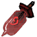
Tăng máu · cơ bản
ALPHA
1
Tăng 40 máu tối đa. Lắp/tháo bình thường giữ tỷ lệ máu.
Tăng máu · nâng cao
ALPHA
2
Tăng 100 máu tối đa; dùng cùng quy tắc giữ tỷ lệ.
Tăng tinh thần · cơ bản
ALPHA
1
Tăng 40 tinh thần tối đa.
Tăng tinh thần · nâng cao
ALPHA
2
Tăng 100 tinh thần tối đa và thêm hồi tinh thần theo thời gian.
Tăng sức chứa thức ăn · cơ bản
ALPHA
1
Tăng 40 mức no tối đa; không tự có hiệu quả giảm hao đói của bản 2 ô.
Tăng sức chứa thức ăn · nâng cao
ALPHA
2
Tăng 100 mức no tối đa; hệ số hao đói cơ sở của module là 0,80.
Tự hồi phục
ALPHA
3
Hồi máu định kỳ khi bị thương, đồng thời dùng hiệu quả tăng 100 tinh thần tối đa. Skill có thể mở thêm nhánh khiên.
Tốc độ · chip 6 ô
BETA
6
Góp một chip vào công thức tăng tốc; không tăng tốc thú cưỡi.
Tốc độ · chip 2 ô
BETA
2
Cùng công thức tốc độ với chip 6 ô nhưng tốn ít ô hơn.
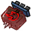
Sưởi và làm khô
BETA
3
Dịch các giới hạn nhiệt lên 20 mỗi module và tăng tốc độ làm khô. Skill bổ sung chống đóng băng.
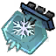
Làm mát
BETA
3
Dịch các giới hạn nhiệt xuống 20 mỗi module; skill có thêm nhánh giảm sát thương lửa.
Nhìn trong đêm
BETA
4
Ép nhìn đêm khi đang đêm và không trăng tròn; module cuối bị tháo sẽ gỡ hiệu ứng.
Phản điện
BETA
2
Phản điện có lọc đối tượng khi bị đánh hoặc đỡ đòn. Skill bổ sung thanh tích điện và vụ nổ.
Phát sáng · chip 3 ô
BETA
3
Mỗi chip cộng 1,25 vào tổng bán kính tính sáng; bán kính hiển thị dùng lũy thừa 0,8.
Phát sáng · chip 1 ô
BETA
1
Cùng công thức phát sáng với chip 3 ô nhưng tốn ít ô hơn.
Âm nhạc và chăm cây
BETA
3
Tăng tinh thần, tạo hào quang tinh thần và chăm cây gần đó. Skill thay đổi nhánh tác động.
Tầm nhìn và hỗ trợ drone
BETA
1
Mở rộng khoảng camera thêm 5 mỗi module; skill còn nối tới tầm drone/máy quét.
Túi chứa phụ
BETA
1
Dành ô cuối của túi chính cho túi con. Thiếu điện, tháo chip hoặc đổi thân có cách xử lý đồ riêng.
Tiếng hét
GAMMA
3
Mở thao tác bật/tắt tiếng hét. Hiệu quả và hồi chiêu nằm ở trạng thái hành động riêng.
Tiêu hóa và tạo sản phẩm
GAMMA
2
Đếm số lần ăn rồi xếp hành động tạo vật phẩm; vật chỉ sinh ở nhịp hành động, không sinh ngay khi ăn.
Xoay với công cụ
GAMMA
3
Mở nhánh xoay chặt/đào/đánh/hái theo công cụ và mục tiêu. Quay lâu có thể chóng mặt.
Chế độ khiên
GAMMA
4
Mở thao tác bật/tắt khiên. Giáp, khiêu khích, giới hạn sát thương và hồi chiêu do hành động quyết định.
Đồng hành máy móc
GAMMA
1
Góp vào giới hạn Clockwork theo loại và tổng chung; không cấp cùng một số chỗ cho mọi loại.
Đọc sâu quy tắc điện, tháo chip, skill và phục hồi từ mã
Phạm vi là 23 định nghĩa literal trong wx78_moduledefs.lua của APK đã đối chiếu hash. Đã đọc toàn file 1–1696 và callback tương ứng. Không chạy APK/Lua; biến thể mod và engine chưa được phân giải đầy đủ.
ModuleOwner.UpdateActivatedModules cấp lại cùng charge_level từ đầu cho từng bar Alpha/Beta/Gamma, trừ slots theo thứ tự trong bar rồi bật/tắt module. Đây là ngân sách riêng mỗi bar; không cộng tổng chi phí của ba bar thành một hàng. SetChargeLevel clamp vào 0..max_charge và tính lại khi giá trị đổi.
WX78 prefab lưu riêng _wx78_health/_wx78_hunger/_wx78_sanity/_wx78_shield. Entity.OnLoad áp lại sau component.OnLoad, nhằm phục hồi current sau khi module đã thay max. Nhánh snapshot user session bỏ bước RefreshShadowSocketBuffs. ModuleOwner.OnLoad ưu tiên modules cũ, nếu không có mới dùng module_bars, gọi PushModule với isloading=true.
Prefab module được tạo từ từng định nghĩa, gắn finiteuses max/current=4. Gỡ module tiêu 1 use hoặc mức HALF_MODULE_CONSUMPTION nếu leader có betterunplug, trừ khi owner đang SwapUpgradeModules. Swap bật is_swapping cho cả hai owner trong lúc PopAll/Push, nên callback gỡ bỏ qua hao use trong nhánh này.
Circuit_SetUpSkillCb kiểm tra skill trên player hoặc leader của follower, áp callback ngay nếu đang có skill rồi nghe activate/deactivate và leaderchanged. Cleanup gọi deactivate cưỡng bức nếu đã active, sau đó tháo listeners. AddNewModuleDefinition chỉ cấp net ID với assert netid<64; định nghĩa đang có 23 mục literal, không khẳng định mọi mod đã được phân giải.
wx78_moduledefs.lua dòng 1–1696 (tệp gốc không nằm trong gói web) · components/upgrademodule.lua dòng 1–68 (tệp gốc không nằm trong gói web) · components/upgrademoduleowner.lua dòng 1–474 (tệp gốc không nằm trong gói web) · prefabs/wx78_modules.lua dòng 1–105 (tệp gốc không nằm trong gói web) · prefabs/wx78.lua dòng 181–233 (tệp gốc không nằm trong gói web) · tuning.lua dòng 6578–6634 (tệp gốc không nằm trong gói web) · tuning.lua dòng 9397–9438 (tệp gốc không nằm trong gói web) · constants.lua dòng 3163–3172 (tệp gốc không nằm trong gói web) · prefabs/wx78_common.lua dòng 961–974 (tệp gốc không nằm trong gói web) · stategraphs/SGwx78_common.lua dòng 1126–1174 (tệp gốc không nằm trong gói web)
Chi tiết từng chip và ngoại lệ
Tăng máu · cơ bản
ALPHA · 1 ô
Tăng 40 máu tối đa. Lắp/tháo bình thường giữ tỷ lệ máu.
Mở phân tích chi tiết và nguồn đối chiếu
wx78module_maxhealth
Bar ALPHA · 1 ô · bật maxhealth_activate · tháo maxhealth_deactivate.
Tăng max health thêm 40. Khi lắp hoặc tháo bình thường, giữ tỷ lệ máu hiện tại; isloading bỏ bước SetPercent. Skill Alpha thêm hệ số giảm damage dựa tổng module health đang bật.
wx78_moduledefs.lua dòng 180–220 (tệp gốc không nằm trong gói web)
Tăng tinh thần · cơ bản
ALPHA · 1 ô
Tăng 40 tinh thần tối đa.
Mở phân tích chi tiết và nguồn đối chiếu
wx78module_maxsanity1
Bar ALPHA · 1 ô · bật maxsanity1_activate · tháo maxsanity1_deactivate.
Tăng max sanity thêm 40, giữ tỷ lệ khi không load. Skill Alpha đặt modifier aura âm và hệ số dapperness dương của trang bị; tháo gỡ modifier theo module.
wx78_moduledefs.lua dòng 224–304 (tệp gốc không nằm trong gói web)
Tăng tinh thần · nâng cao
ALPHA · 2 ô
Tăng 100 tinh thần tối đa và thêm hồi tinh thần theo thời gian.
Mở phân tích chi tiết và nguồn đối chiếu
wx78module_maxsanity
Bar ALPHA · 2 ô · bật maxsanity_activate · tháo maxsanity_deactivate.
Tăng max sanity thêm 100 và dapperness thêm 100/(day_time×10). Tháo trừ lại cả hai; khi không load giữ tỷ lệ sanity. Các skill dùng cùng lớp xử lý aura/trang bị với bản 1 ô.
wx78_moduledefs.lua dòng 308–361 (tệp gốc không nằm trong gói web) · wx78_moduledefs.lua dòng 224–344 (tệp gốc không nằm trong gói web)
Tốc độ · chip 6 ô
BETA · 6 ô
Góp một chip vào công thức tăng tốc; không tăng tốc thú cưỡi.
Mở phân tích chi tiết và nguồn đối chiếu
wx78module_movespeed
Bar BETA · 6 ô · bật movespeed_activate · tháo movespeed_deactivate.
Tăng bộ đếm speed chip và chọn multiplier 1+{0;0,25;0,40;0,50}[count+1]. Bản này tốn 6 ô; playerspeedmult không cộng vào tốc độ thú cưỡi. Tháo giảm bộ đếm rồi tính lại.
wx78_moduledefs.lua dòng 365–406 (tệp gốc không nằm trong gói web)
Tốc độ · chip 2 ô
BETA · 2 ô
Cùng công thức tốc độ với chip 6 ô nhưng tốn ít ô hơn.
Mở phân tích chi tiết và nguồn đối chiếu
wx78module_movespeed2
Bar BETA · 2 ô · bật movespeed_activate · tháo movespeed_deactivate.
Dùng cùng callback và hiệu quả theo số chip như movespeed nhưng chỉ tốn 2 ô. Đây là khác biệt chi phí trực tiếp trong định nghĩa, không phải cộng thêm một công thức tốc độ khác.
wx78_moduledefs.lua dòng 365–422 (tệp gốc không nằm trong gói web)
Sưởi và làm khô
BETA · 3 ô
Dịch các giới hạn nhiệt lên 20 mỗi module và tăng tốc độ làm khô. Skill bổ sung chống đóng băng.
Mở phân tích chi tiết và nguồn đối chiếu
wx78module_heat
Bar BETA · 3 ô · bật heat_activate · tháo heat_deactivate.
Mỗi module tăng heat_count, đẩy cả mintemp/maxtemp thêm 20 trong giới hạn MIN_TEMP..MAX_TEMP và cộng 0,1 vào base/max drying rate. Skill Beta cập nhật chống đóng băng; từ 2 module heat đặt redirect miễn đóng băng. Tháo trừ lại các lượng đã cộng.
wx78_moduledefs.lua dòng 430–522 (tệp gốc không nằm trong gói web)
Nhìn trong đêm
BETA · 4 ô
Ép nhìn đêm khi đang đêm và không trăng tròn; module cuối bị tháo sẽ gỡ hiệu ứng.
Mở phân tích chi tiết và nguồn đối chiếu
wx78module_nightvision
Bar BETA · 4 ô · bật nightvision_common_activate · tháo nightvision_common_deactivate.
Bản Beta 4 ô có callback cả server/client. Module đầu đăng ký watcher đêm/trăng tròn và sự kiện skill; chỉ ép night vision khi đêm và không trăng tròn. Module cuối bị tháo gỡ watcher và hiệu ứng.
wx78_moduledefs.lua dòng 526–579 (tệp gốc không nằm trong gói web)
Làm mát
BETA · 3 ô
Dịch các giới hạn nhiệt xuống 20 mỗi module; skill có thêm nhánh giảm sát thương lửa.
Mở phân tích chi tiết và nguồn đối chiếu
wx78module_cold
Bar BETA · 3 ô · bật cold_activate · tháo cold_deactivate.
Mỗi module tăng cold_count và đẩy cả hai giới hạn nhiệt xuống 20; skill Beta trừ fire_damage_scale theo tuning. Callback tháo giảm count, tính lại nhiệt/overlay và gỡ skill.
wx78_moduledefs.lua dòng 430–451 (tệp gốc không nằm trong gói web) · wx78_moduledefs.lua dòng 583–634 (tệp gốc không nằm trong gói web)
Phản điện
BETA · 2 ô
Phản điện có lọc đối tượng khi bị đánh hoặc đỡ đòn. Skill bổ sung thanh tích điện và vụ nổ.
Mở phân tích chi tiết và nguồn đối chiếu
wx78module_taser
Bar BETA · 2 ô · bật taser_activate · tháo taser_deactivate.
Nghe blocked/attacked, khóa lặp 0,1 giây trên từng module; loại damage redirect, attacker chết/cách điện và vũ khí projectile. Damage cơ sở 20 nhân electric/wet multiplier; gắn cách điện cho chủ. Skill Beta tạo/cập nhật taser buildup và xử lý ReleaseBuildup khi tháo.
wx78_moduledefs.lua dòng 637–758 (tệp gốc không nằm trong gói web)
Phát sáng · chip 3 ô
BETA · 3 ô
Mỗi chip cộng 1,25 vào tổng bán kính tính sáng; bán kính hiển thị dùng lũy thừa 0,8.
Mở phân tích chi tiết và nguồn đối chiếu
wx78module_light
Bar BETA · 3 ô · bật light_activate · tháo light_deactivate.
Cộng 1,25 vào tổng bán kính sáng, Light radius thực là tổng^0,8. Skill Beta quản lý wx78_lightbeam theo tổng này. Tổng về gần 0 thì tắt sáng và trả thuộc tính light mặc định; bản này tốn 3 ô.
wx78_moduledefs.lua dòng 762–833 (tệp gốc không nằm trong gói web)
Tăng sức chứa thức ăn · nâng cao
ALPHA · 2 ô
Tăng 100 mức no tối đa; hệ số hao đói cơ sở của module là 0,80.
Mở phân tích chi tiết và nguồn đối chiếu
wx78module_maxhunger
Bar ALPHA · 2 ô · bật maxhunger_activate · tháo maxhunger_deactivate.
Tăng max hunger thêm 100 và đặt burn rate multiplier 0,80 theo module. Skill Alpha thay multiplier bằng mức skill tương ứng. Khi không load giữ tỷ lệ đói; tháo trừ max và đặt hệ số module về 1.
wx78_moduledefs.lua dòng 837–898 (tệp gốc không nằm trong gói web)
Tăng sức chứa thức ăn · cơ bản
ALPHA · 1 ô
Tăng 40 mức no tối đa; không tự có hiệu quả giảm hao đói của bản 2 ô.
Mở phân tích chi tiết và nguồn đối chiếu
wx78module_maxhunger1
Bar ALPHA · 1 ô · bật maxhunger1_activate · tháo maxhunger1_deactivate.
Tăng max hunger thêm 40, tốn 1 ô; không tự có mức burn rate 0,80 của bản 2 ô. Skill Alpha có các hệ số riêng. Tháo trừ lại max và hủy callback skill.
wx78_moduledefs.lua dòng 902–924 (tệp gốc không nằm trong gói web)
Âm nhạc và chăm cây
BETA · 3 ô
Tăng tinh thần, tạo hào quang tinh thần và chăm cây gần đó. Skill thay đổi nhánh tác động.
Mở phân tích chi tiết và nguồn đối chiếu
wx78module_music
Bar BETA · 3 ô · bật music_activate · tháo music_deactivate.
Tăng dapperness của chủ, tạo sanity aura và chăm cây farm trong bán kính 12×số module, chu kỳ 144×FRAMES. Skill Beta thay task chăm cây bằng leaderrollcall, cập nhật radius/max followers. Module cuối bị tháo hủy task, aura và âm nhạc.
wx78_moduledefs.lua dòng 927–1092 (tệp gốc không nằm trong gói web)
Tự hồi phục
ALPHA · 3 ô
Hồi máu định kỳ khi bị thương, đồng thời dùng hiệu quả tăng 100 tinh thần tối đa. Skill có thể mở thêm nhánh khiên.
Mở phân tích chi tiết và nguồn đối chiếu
wx78module_bee
Bar ALPHA · 3 ô · bật bee_activate · tháo bee_deactivate.
Hồi 5 máu×số module mỗi seg_time nếu đang bị thương; đồng thời dùng hiệu quả maxsanity bản 100. Skill Alpha có đường tạo/giới hạn/nạp khiên và listener healthdelta. Tháo module cuối hủy regen; cleanup skill xử lý khiên và aura modifier.
wx78_moduledefs.lua dòng 1096–1215 (tệp gốc không nằm trong gói web) · wx78_moduledefs.lua dòng 224–344 (tệp gốc không nằm trong gói web)
Tăng máu · nâng cao
ALPHA · 2 ô
Tăng 100 máu tối đa; dùng cùng quy tắc giữ tỷ lệ.
Mở phân tích chi tiết và nguồn đối chiếu
wx78module_maxhealth2
Bar ALPHA · 2 ô · bật maxhealth2_activate · tháo maxhealth2_deactivate.
Tăng max health thêm 40×2,5 = 100; dùng cùng hàm đổi max và nhánh giữ tỷ lệ/isloading như maxhealth. Trọng số armor skill riêng lấy MAXHEALTH2_ARMOR_MULT.
wx78_moduledefs.lua dòng 1218–1243 (tệp gốc không nằm trong gói web) · wx78_moduledefs.lua dòng 152–192 (tệp gốc không nằm trong gói web)
Tầm nhìn và hỗ trợ drone
BETA · 1 ô
Mở rộng khoảng camera thêm 5 mỗi module; skill còn nối tới tầm drone/máy quét.
Mở phân tích chi tiết và nguồn đối chiếu
wx78module_radar
Bar BETA · 1 ô · bật radar_activate · tháo radar_deactivate.
Tăng khoảng camera thêm 5 theo module, gỡ bằng RemoveCameraExtraDistance khi tháo. Skill Beta phát rangecircuitupdate cho drone. Nhánh scan chim đọc occupiable occupant hoặc lootprefabs đầu của trap, không chỉ prefab entity ngoài lồng.
wx78_moduledefs.lua dòng 1247–1292 (tệp gốc không nằm trong gói web)
Tiếng hét
GAMMA · 3 ô
Mở thao tác bật/tắt tiếng hét. Hiệu quả và hồi chiêu nằm ở trạng thái hành động riêng.
Mở phân tích chi tiết và nguồn đối chiếu
wx78module_screech
Bar GAMMA · 3 ô · bật screech_activate · tháo screech_deactivate.
Module Gamma 3 ô tăng bộ đếm; module đầu thêm inherent action TOGGLEWXSCREECH, module cuối tháo action. Hiệu ứng sợ hãi, thời gian và cooldown nằm ở stategraph được đối chiếu riêng bên dưới.
wx78_moduledefs.lua dòng 1297–1321 (tệp gốc không nằm trong gói web)
Túi chứa phụ
BETA · 1 ô
Dành ô cuối của túi chính cho túi con. Thiếu điện, tháo chip hoặc đổi thân có cách xử lý đồ riêng.
Mở phân tích chi tiết và nguồn đối chiếu
wx78module_stacksize
Bar BETA · 1 ô · bật stacksize_activate · tháo stacksize_deactivate.
Khi gắn vào owner, dành ô inventory từ cuối và tạo wx78_inventorycontainer khóa ô. Nếu thiếu charge, vật cũ bị thả; đủ charge thì đưa vật cũ vào túi con. isloading chỉ tăng bộ đếm, bỏ tạo túi mới. Activate/deactivate bật/tắt nguồn túi; tháo gỡ khóa và thả túi, trừ nhánh đang chuyển backup body.
wx78_moduledefs.lua dòng 1325–1426 (tệp gốc không nằm trong gói web)
Phát sáng · chip 1 ô
BETA · 1 ô
Cùng công thức phát sáng với chip 3 ô nhưng tốn ít ô hơn.
Mở phân tích chi tiết và nguồn đối chiếu
wx78module_light2
Bar BETA · 1 ô · bật light2_activate · tháo light2_deactivate.
Cùng công thức cộng bán kính 1,25 và lightbeam như light nhưng chỉ tốn 1 ô; tháo trừ cùng lượng.
wx78_moduledefs.lua dòng 1430–1452 (tệp gốc không nằm trong gói web) · wx78_moduledefs.lua dòng 762–818 (tệp gốc không nằm trong gói web)
Tiêu hóa và tạo sản phẩm
GAMMA · 2 ô
Đếm số lần ăn rồi xếp hành động tạo vật phẩm; vật chỉ sinh ở nhịp hành động, không sinh ngay khi ăn.
Mở phân tích chi tiết và nguồn đối chiếu
wx78module_digestion
Bar GAMMA · 2 ô · bật digestion_activate · tháo digestion_deactivate.
Module Gamma 2 ô bật spoiled processor và listener oneat. Khi số món đạt 5−(số module−1), reset bộ đếm rồi queue state wx_bake; skill Gamma thay cấu hình processor. Tháo module cuối tắt processor/listener. Vật phẩm chỉ sinh tại frame 46 của wx_bake, không sinh ngay ở callback ăn.
wx78_moduledefs.lua dòng 1456–1512 (tệp gốc không nằm trong gói web) · stategraphs/SGwx78_common.lua dòng 1126–1174 (tệp gốc không nằm trong gói web)
Xoay với công cụ
GAMMA · 3 ô
Mở nhánh xoay chặt/đào/đánh/hái theo công cụ và mục tiêu. Quay lâu có thể chóng mặt.
Mở phân tích chi tiết và nguồn đối chiếu
wx78module_spin
Bar GAMMA · 3 ô · bật spin_activate · tháo spin_deactivate.
Module Gamma 3 ô thêm efficientuser và aoediminishingreturns. Module đầu nghe equip/unequip và đổi attack range sang 3 khi công cụ có CHOP/MINE, nếu không trả DEFAULT_ATTACK_RANGE. Module cuối gỡ aoediminishingreturns/listeners và reset range; lệnh gỡ efficientuser đang là comment nên không được mô tả là có gỡ.
wx78_moduledefs.lua dòng 1516–1566 (tệp gốc không nằm trong gói web) · prefabs/wx78_common.lua dòng 961–974 (tệp gốc không nằm trong gói web)
Chế độ khiên
GAMMA · 4 ô
Mở thao tác bật/tắt khiên. Giáp, khiêu khích, giới hạn sát thương và hồi chiêu do hành động quyết định.
Mở phân tích chi tiết và nguồn đối chiếu
wx78module_shielding
Bar GAMMA · 4 ô · bật shielding_activate · tháo shielding_deactivate.
Module Gamma 4 ô thêm inherent action TOGGLEWXSHIELDING và skill callback refresh. Khi tháo, gỡ action rồi cleanup skill. Armor, taunt, giới hạn damage và cooldown do stategraph quyết định, đã nối riêng.
wx78_moduledefs.lua dòng 1570–1600 (tệp gốc không nằm trong gói web)
Đồng hành máy móc
GAMMA · 1 ô
Góp vào giới hạn Clockwork theo loại và tổng chung; không cấp cùng một số chỗ cho mọi loại.
Mở phân tích chi tiết và nguồn đối chiếu
wx78module_chess
Bar GAMMA · 1 ô · bật chess_activate · tháo chess_deactivate.
Module Gamma 1 ô thêm clockworktracker nếu thiếu rồi SetBonus bằng số module; skill Gamma gắn chessbff. Tháo cập nhật bonus và gỡ tag khi không còn module/skill; đoạn này không tự RemoveComponent clockworktracker.
wx78_moduledefs.lua dòng 1604–1646 (tệp gốc không nằm trong gói web)
Các phần còn hở
Đã nối server spin timeline, scanner, scout/delivery, backup/possessed body, taser buildup và quota Clockwork trong hồ sơ consumer. Còn zap/shadow drone AI, load follower Clockwork, client prediction, cộng dồn skill và các snapshot giữa trạng thái. Không dùng số 23 để đánh dấu toàn bộ nhân vật WX78 hoàn tất.
WX-78 có các thiết bị và hành động riêng ngoài bảng chip. Đọc bảng để biết thứ gì được tạo, hàng nằm ở đâu và tải game có khôi phục đúng bước đang làm hay không.
Hệ
Kết quả / cách chơi
Lưu và mở lại
Xoay
Dùng công cụ phù hợp để tác động quanh người. Hái bằng xoay làm sản phẩm rơi ra đất; túi đầy không ngăn sản phẩm được tạo. Quay lâu tích chóng mặt.
Chưa xác nhận giữ nguyên tiến độ xoay hoặc chóng mặt qua tải.
Thân dự phòng
Đổi thân là trao đổi đồ, socket, điện, module, chỉ số và vị trí theo nhiều bước. Vật không nhận được hoặc vượt số ô đi ra đất.
Có lưu đồ, entity giữ trang bị, module và chỉ số; không giả định mọi chỉ số giữ nguyên tuyệt đối.
Drone trinh sát
Chọn điểm trên bản đồ để drone bay và hé lộ khu vực cho chủ. Tầm điểm chọn được đo từ vị trí người điều khiển.
Tracker của chủ lưu drone theo shard; chỉ dựng lại record của shard hiện tại.
Drone giao hàng
Hàng nằm trong kho của drone trong suốt chuyến bay. Tới nơi hạ cánh mới mở lại tương tác; không tự chuyển hàng thẳng vào túi người nhận.
Lưu tuyến và tiến độ đã làm tròn; kho lưu hàng riêng. Chưa có bằng chứng tự cộng thời gian offline.
Máy quét
Quét đủ thời gian chưa có nghĩa dữ liệu đã vào túi. Máy còn quay về; vật phẩm dữ liệu được tạo ngoài đất ở nhịp hành động thành công.
Lưu scan ID và công thức ở các nhánh riêng; không lưu đầy đủ tiến độ quét đang chạy.
Tích điện phản công
Bị đánh hoặc đỡ đòn có thể tăng thanh tích điện. Từ 25% có thể giải phóng; đạt tối đa kích hoạt đường nổ tự động.
Component lưu current; không lưu deadline vụ nổ cũ. Tải ở mức tối đa có thể hẹn vụ nổ mới.
Clockwork đồng hành
Giới hạn số đồng hành gồm cả trần riêng theo loại và ngân sách chung. Khi giảm giới hạn, những con vượt mức có thể mất leader.
Đường khôi phục follower/leader chưa đọc hết; component quota không có save/load riêng.
Xoay
Hiểu nhanh
Dùng công cụ phù hợp để tác động quanh người. Hái bằng xoay làm sản phẩm rơi ra đất; túi đầy không ngăn sản phẩm được tạo. Quay lâu tích chóng mặt.
Luồng hoạt động
Lệnh hợp lệCó module, công cụ và mục tiêu đúng loại.
Chuẩn bịChạy động tác vào xoay rồi mở cửa sổ tác động.
Tác động quanh ngườiLọc mục tiêu; mỗi mục tiêu chỉ nhận một lượt trong cửa sổ đó.
Dừng / chóng mặtNhả điều khiển còn chịu điều kiện thoát; quay quá ngưỡng gây chóng mặt.
Khi lưu / mở lại: Chưa xác nhận giữ nguyên tiến độ xoay hoặc chóng mặt qua tải.
Mở nhịp xử lý, ngoại lệ và dẫn chứng mã nguồn
SGwilson chuyển CHOP/MINE/REMOVELUNARBUILDUP sang wx_spin_start khi có spin module và chưa prespin. ATTACK còn đòi vũ khí có CHOP/MINE và target; PICK đòi cây thuộc HARVESTABLE_PLANT_TARGET_TAGS, không quickpick và có công cụ phù hợp. Các nhánh rider/farmplantfastpicker/noquickpick được xét trước nhánh spin trong PICK.
wx_spin_start dừng locomotor, phát chop_pre. Frame13 có thể quickstart hướng mục tiêu ATTACK của player nếu khoảng cách nằm trong min/max tính từ physics radius; frame14 chuyển wx_spin. Mỗi vòng spin tạo bảng targets/efficiency tại frame1, đóng cửa sổ tác động ở frame2 hoặc3 sau khi bảo đảm đã có ít nhất một lần update. Vì thế tác động được xử lý trong cửa sổ update, không gán thành một hit duy nhất đúng frame2.
Spin truy entity quanh SPIN_RADIUS+3 rồi lọc lại bằng SPIN_RADIUS+physics radius, valid/visible và bảng targets. Ưu tiên gỡ lunar buildup khi có MINE, rồi CHOP/MINE theo workable, sau đó combat với CanTarget/not Ally, cuối cùng pickable harvest plant. Gặp vật cần loại công cụ khác có thể recoil với WorkedBy(...,0). Entity đã hit được ghi vào targets để tránh đánh lại trong cửa sổ đó.
Hiệu suất CHOP/MINE/ATTACK có bảng riêng. Sau mỗi thành công, eff mới=(eff hoặc decay)×decay; decay=0,5 với một module, bằng0 với nhiều hơn một module. Vì vậy sau hit đầu, giá trị lưu kế tiếp là0,25 hoặc0. FiniteUses.OnUsedAsItem nhân consumption[action] với EfficientUser.GetMultiplier; đây là hao uses. AoeDiminishingReturns.mult phục vụ hành vi vũ khí riêng, comment của source nói không phải giảm damage chung. Sau lượt, các modifier tạm đều được gỡ.
Thu hoạch spin gọi Pick(TheWorld), không GiveItem cho nhân vật; loot được Launch về phía nhân vật và rơi ra thế giới. Nếu có loot, finiteuses của công cụ có thể bị trừ WX78_SPIN_PICK_EFFICIENCY=0,2 một lần trong vòng; fumaroletool có nhánh OnUsed riêng. Source có hai lời gọi OnUsed cho fumarole trong nhánh này, nên không áp quy tắc 0,2 của finiteuses cho mọi công cụ. Túi đầy không ngăn loot được tạo từ nhánh này.
Nhả phím gỡ busy/nopredict, nhưng chỉ về idle khi canrelease đã bật. Bộ đếm chóng mặt tăng theo dt, vượt CalcMaxDizzy thì vào wx_spin_dizzy; max là8 giây với một module,12 với nhiều module. Tích lũy phục hồi theo max(0,old−((now−last)/4)^2×max), nên nghỉ ngắn không nhất thiết xóa toàn bộ tích lũy. Spin loop chuyển tiếp vận tốc/hướng/numhits nhưng không chuyển các bảng targets/efficiency sang vòng mới.
Vận tốc tối đa spin là runspeed×0,6, quickstart có thể nhân tạm, bỏ bám target khi xa>=8. Unequip hoặc trượt chân thoát state; attacked cập nhật numhits giảm theo floor(elapsed/2), dưới3 thêm nostunlock. Khi thực sự rời spin, cleanup dừng motor, bỏ prespin/remote override, trả quyền thoại và xóa combat target. Không có save riêng cho cửa sổ hit, vận tốc hay dizzy trong các module đã đọc.
Nguồn đối chiếu.stategraphs/SGwilson.lua dòng 852–902 (tệp gốc không nằm trong gói web) · stategraphs/SGwilson.lua dòng 1043–1067 (tệp gốc không nằm trong gói web) · stategraphs/SGwilson.lua dòng 1320–1344 (tệp gốc không nằm trong gói web) · stategraphs/SGwx78_common.lua dòng 192–887 (tệp gốc không nằm trong gói web) · components/efficientuser.lua dòng 1–48 (tệp gốc không nằm trong gói web) · components/aoediminishingreturns.lua dòng 1–12 (tệp gốc không nằm trong gói web) · components/finiteuses.lua dòng 85–113 (tệp gốc không nằm trong gói web) · util/sourcemodifierlist.lua dòng 1–100 (tệp gốc không nằm trong gói web) · prefabs/wx78_common.lua dòng 253–265 (tệp gốc không nằm trong gói web) · tuning.lua dòng 9429–9439 (tệp gốc không nằm trong gói web)
Còn hở. Chưa quan sát frame thực trên Android, dự đoán phía client và từng vũ khí có hiệu ứng AoE riêng; không suy mọi hiệu ứng phụ nhận cùng multiplier.
Thân dự phòng
Hiểu nhanh
Đổi thân là trao đổi đồ, socket, điện, module, chỉ số và vị trí theo nhiều bước. Vật không nhận được hoặc vượt số ô đi ra đất.
Luồng hoạt động
Kiểm quyềnĐúng chủ hoặc liên kết thành công; còn trong giới hạn số thân.
Trao đồ / socketChuyển theo ô; phần dư và vật không socket được rơi xuống đất.
Đổi điện và chipChụp chỉ số trước khi đổi, rồi áp lại sau thay module.
Đổi vị trí / gắn petHoàn tất vị trí, thú đi cùng và gỡ cờ đang chuyển.
Khi lưu / mở lại: Có lưu đồ, entity giữ trang bị, module và chỉ số; không giả định mọi chỉ số giữ nguyên tuyệt đối.
Mở nhịp xử lý, ngoại lệ và dẫn chứng mã nguồn
CanDoerActivate yêu cầu player có wx78_classified, owner userid khớp nếu đã liên kết; body chưa có owner phải TryToAttachToOwner thành công, nếu không trả TOOMANYBACKUPBODIES. TryToAttach từ chối owner nil/snapshot user session, body đã có userid và kiểm số body tự do, trừ chỗ cho build buffered. Không coi chỉ có nhãn WX78 là đủ quyền dùng body của người khác.
OnActivate bật _backupbody_transferring trên cả hai và tách shadow harvester/debuffer pet trước mọi chuyển đổi. Với inventory, nó ReturnActiveItem, thả đồ tag irreplaceable rồi SwapEquipment. Đồ container và inventory được tháo vào hai bảng theo slot, xóa prevcontainer/prevslot; túi wx78_inventorycontainer còn được gắn cờ riêng để callback tháo module không thả lại giữa chừng.
Chuyển đồ chỉ đi qua min(container.numslots,inventory.maxslots), GiveItem theo cùng slot. Nếu nhận thất bại, code đặt vị trí và OnDropped; slot dư cũng đi ra đất. Sau lượt trả silentfull/ignoresound về false. Đây là đường xử lý phần dư có trong source, chưa chứng minh mọi callback item hoặc thao tác chen ngang đều an toàn khi chạy.
Socket được UnsocketEverything cả hai phía rồi TryToSocket vào phía đối diện; vật không socket được hoặc nằm ngoài số socket chung được đặt xuống đất. Stats của doer được chụp trước đổi module; charge đổi chỗ rồi SwapUpgradeModules, sau đó mới ApplySavedStatsToDoer và ConfigureStats cho chassis. Cờ của túi mở rộng chỉ được gỡ sau khi module đã chuyển.
Stats chụp gồm current health/hunger/sanity, gears eaten, moisture, temperature, shield và grogginess. Health để lại tối thiểu1; khi áp lại, nhiệt quá lạnh/nóng có thể trở về STARTING_TEMP tùy nhiệt vùng, shield chỉ nhận giá trị đã lưu nếu hiện có charge source. Đổi thân không đơn thuần sao chép phần trăm health hay luôn giữ nguyên nhiệt độ/khiên.
Sau khi đổi đồ/module/stats, body và doer đổi vị trí/rotation rồi phát teleported. Pet cũ được gắn sang petleash phía đối diện; AttachPet thất bại thì phát despawn. Cuối hàm mới xóa _backupbody_transferring. Đây là chuỗi lệnh đồng bộ trong callback, chưa có bằng chứng cơ chế rollback toàn bộ nếu một callback giữa chuỗi lỗi.
Backup body có container thật lưu contents; body_inventory là entity con riêng với inventory.maxslots=0 chỉ để giữ equipment/skinner. Prefab.OnSave nhúng GetSaveRecord của entity con, maxcharge, possessed/planar và saved_stats. OnLoad xóa entity con mặc định, SpawnSaveRecord rồi gắn parent và đưa local position về0; LinkedItem.OnLoad đăng ký lại userid với world. Không coi thiếu itemslots trên entity con là body không lưu đồ.
Khi owner có skill bodycircuits, chassis gọi TryActivate từng module Beta; nếu không có hoặc owner bị gỡ thì deactivate. Constructor tắt automatic module activation, charge ban đầu3, nên không áp thẳng quy tắc mọi bar của nhân vật sống cho chassis đang đứng yên. Skill-tree initialized mới đăng ký body và cập nhật slots/socket; nhánh possessed có thể hẹn task0 để trở lại thân hoạt động.
Possessed body save riêng maxcharge, planar, gears và current stats; OnLoad áp current sau component load. OnLoadPostPass gọi TryToReplaceWithBackupBody(true): tạo chassis, chụp stats trước khi đặt charge hai phía về0, đổi dữ liệu qua DoActivate, ConfigurePossessed/saved_stats rồi Remove entity cũ. Cần kiểm chứng chuỗi tái sở hữu sau load, không mô tả là cứ nạp nguyên entity đang chạy tại state cũ.
Đổi thân trên bản đồ đòi skill remotebodyswap, tìm icon body gần điểm chọn trong radius20, chặn khác phía WagPunk arena barrier rồi CanActivate/DoActivate lại. SG wx_poweroff chỉ PerformBufferedAction tại frame60; bật invincible từ frame19, sau đó reboot kể cả action thất bại. Poweron mở điều khiển lại ở frame75 và bỏ invincible ở frame82. Đây là timeline riêng với việc đổi dữ liệu trong callback.
Đập hết work body thả equipment, contents container, socket và toàn bộ module rồi Remove. Haunt chỉ đăng ký hồi sinh khi có ghostrevive_1 và CanActivate; khi nhận ms_respawnedfromghost, charge body về0, đổi thân, skill ghostrevive_3 có thể SetPercent(1), rồi xóa chassis. Không suy rằng mọi lần haunt luôn hồi sinh ngay hoặc miễn mất charge.
Nguồn đối chiếu.prefabs/wx78_backupbody.lua dòng 31–48 (tệp gốc không nằm trong gói web) · prefabs/wx78_backupbody.lua dòng 86–240 (tệp gốc không nằm trong gói web) · prefabs/wx78_backupbody.lua dòng 243–563 (tệp gốc không nằm trong gói web) · prefabs/wx78_backupbody.lua dòng 581–674 (tệp gốc không nằm trong gói web) · prefabs/wx78_backupbody.lua dòng 736–859 (tệp gốc không nằm trong gói web) · prefabs/wx78_backupbody.lua dòng 929–980 (tệp gốc không nằm trong gói web) · prefabs/wx78_backupbody.lua dòng 1018–1065 (tệp gốc không nằm trong gói web) · prefabs/wx78_possessedbody.lua dòng 181–212 (tệp gốc không nằm trong gói web) · prefabs/wx78_possessedbody.lua dòng 434–493 (tệp gốc không nằm trong gói web) · components/linkeditem.lua dòng 123–144 (tệp gốc không nằm trong gói web) · actions.lua dòng 6927–6978 (tệp gốc không nằm trong gói web) · stategraphs/SGwilson.lua dòng 27970–28185 (tệp gốc không nằm trong gói web) · tuning.lua dòng 7515–7519 (tệp gốc không nằm trong gói web)
Còn hở. Còn AI/command của possessed body, linkeditemmanager xuyên shard, mất kết nối hoặc save chen giữa đổi thân và callback trang bị đặc biệt.
Drone trinh sát
Hiểu nhanh
Chọn điểm trên bản đồ để drone bay và hé lộ khu vực cho chủ. Tầm điểm chọn được đo từ vị trí người điều khiển.
Luồng hoạt động
Chọn điểmCần skill; điểm được giới hạn trong tầm của chủ.
Bay theo tuyếnVị trí được cập nhật trong chuyến.
Mở bản đồChỉ hé lộ khi vùng cho bay, chủ sẵn sàng và đã dịch chuyển đủ xa.
Theo dõi theo shardChủ giữ record của drone theo shard, không suy mất drone chỉ vì persists=false.
Khi lưu / mở lại: Tracker của chủ lưu drone theo shard; chỉ dựng lại record của shard hiện tại.
Mở nhịp xử lý, ngoại lệ và dẫn chứng mã nguồn
MAPSCOUT_MAP cần doer có classified/skill scoutdrone_1, target có GetDroneRange và action point. Nó clamp điểm chọn vào tầm đo từ vị trí doer, unwrap global icon, Stop chuyến cũ rồi SendToPoint. Tầm cơ sở200, skill extradrone cộng300, Beta1 có thể cộng theo số radar. Không dùng vị trí drone làm tâm clamp trong hàm này.
Drone scout dùng MapDeliverable, tốc độ tuning3; đoạn ngắn mất2 giây, dài hơn dùng 2+(distance−3)/3 với tăng/giảm tốc đầu/cuối. Khi đang bay, nó cập nhật vị trí rồi chỉ RevealArea nếu vùng cho phép bay, owner có player_classified và handshake READY; khoảng dịch chuyển bình phương>=16 mới reveal lần tiếp. Vùng cấm làm ẩn/ngừng quét, không có Stop tương tự delivery drone trong callback đã đọc.
StartTracking khiến scout persists=false và maprevealer riêng tư theo chủ, vì tracker chủ lưu từng drone GetSaveRecord theo shard ID. OnLoad chỉ SpawnSaveRecord cho shard hiện tại, giữ record shard khác trong self.data. Untracked trả persists=true; chủ bị remove hoặc ReleaseAllDrones phát despawn. Do đó persists=false không đủ để kết luận scout mất sau save.
Nguồn đối chiếu.actions.lua dòng 6821–6884 (tệp gốc không nằm trong gói web) · prefabs/wx78_drone_scout.lua dòng 107–246 (tệp gốc không nằm trong gói web) · prefabs/wx78_drone_scout.lua dòng 308–350 (tệp gốc không nằm trong gói web) · components/wx78_dronescouttracker.lua dòng 1–93 (tệp gốc không nằm trong gói web) · tuning.lua dòng 7521–7527 (tệp gốc không nằm trong gói web) · components/mapdeliverable.lua dòng 101–206 (tệp gốc không nằm trong gói web)
Còn hở. Chưa quan sát thao tác map/RPC từ client khác, owner rời shard giữa tuyến và merge record của nhiều lần chuyển shard.
Drone giao hàng
Hiểu nhanh
Hàng nằm trong kho của drone trong suốt chuyến bay. Tới nơi hạ cánh mới mở lại tương tác; không tự chuyển hàng thẳng vào túi người nhận.
Khóa và chọn tuyếnKho rỗng, thiếu skill hoặc có người khác dùng sẽ bị chặn.
Cất cánh / bayKiểm tra vùng bay liên tục; vùng không hợp lệ làm drone dừng và hạ cánh.
Hạ cánhMở lại kho và thao tác; hàng vẫn ở trong container.
Khi lưu / mở lại: Lưu tuyến và tiến độ đã làm tròn; kho lưu hàng riêng. Chưa có bằng chứng tự cộng thời gian offline.
Mở nhịp xử lý, ngoại lệ và dẫn chứng mã nguồn
Có drone nhỏ3×1 và lớn3×2, skill lần lượt deliverydrone_1/_2. Trước mở thao tác map, server chặn thiếu skill, đang _nointeract, đã khóa hoặc người khác đang mở container, và kho rỗng; trả NOSKILL_DRONE/INUSE/EMPTY. Khi nhận khóa, nó Close container và canbeopened=false; stopcontinuousaction của đúng user hoặc user remove sẽ mở khóa.
STARTMAPDELIVER kiểm vùng bay trước StartMapAction. MAPDELIVER_MAP kiểm tuyến ở maponly_checkvalidpos và fn, rồi MapDeliverable từ chối chuyến đang chạy hoặc buffered action thuộc người khác. OnStartDelivery đóng truy cập, tắt workable, đặt sender và bắt đầu takeoff. Hàng tiếp tục nằm trong container của drone, không được chuyển sang inventory người nhận qua callback này.
Thời gian delivery gồm cất cánh2,5 giây và đoạn bay tối thiểu2 giây, hoặc 2+(distance−speed)/speed với speed30. Mỗi update kiểm IsFlyingPermittedFromPointToPoint_BypassVault từ vị trí hiện tại tới vị trí mong muốn; không cho phép thì Stop và hạ cánh ở nơi hiện tại. Hạ cánh xong mới bật tương tác/workable và gỡ global tracking; có xử lý tránh mắc vật cản khi wake.
MapDeliverable.OnSave chỉ ghi khi đang bay: origin/dest làm tròn0,001, elapsed t làm tròn giây và len làm tròn0,1. OnLoad dựng lại cùng origin/dest và t=min(saved_t,len), chạy OnStartDelivery với doer=nil rồi StartUpdatingComponent. Container save/load riêng giữ hàng. Đây là khôi phục tiến độ đã lượng tử hóa, không phải lưu chính xác từng frame hoặc tự cộng thời gian offline.
Prefab delivery lưu sender.userid và sau component load chỉ tìm lại sender nếu IsDelivering; chưa online thì giữ senderid để thử lại trong progress. Khi không bay, OnLoadPostPass phát on_landed. Các khóa user đang chọn map không có trường lưu riêng trong code đọc, nên không đồng nhất khóa thao tác với hàng hay trạng thái chuyến đã gửi.
CanDismantle đòi kho rỗng, batteryuser và container có thể mở. Tuy vậy nhánh hammer/ChangeToItem vẫn DropEverything trước đổi sang kit và Remove drone. OnHit cũng DropEverything khi tương tác được. Vì vậy đồ còn trong kho đi ra đất trong các nhánh phá này; không tuyên bố kit giữ nguyên contents.
Nguồn đối chiếu.prefabs/wx78_drone_delivery.lua dòng 1–10 (tệp gốc không nằm trong gói web) · prefabs/wx78_drone_delivery.lua dòng 108–250 (tệp gốc không nằm trong gói web) · prefabs/wx78_drone_delivery.lua dòng 250–378 (tệp gốc không nằm trong gói web) · prefabs/wx78_drone_delivery.lua dòng 435–526 (tệp gốc không nằm trong gói web) · prefabs/wx78_drone_delivery.lua dòng 600–673 (tệp gốc không nằm trong gói web) · components/mapdeliverable.lua dòng 1–213 (tệp gốc không nằm trong gói web) · actions.lua dòng 6886–6925 (tệp gốc không nằm trong gói web) · components/container.lua dòng 979–1005 (tệp gốc không nằm trong gói web) · tuning.lua dòng 7531–7532 (tệp gốc không nằm trong gói web)
Còn hở. Còn tắt tiến trình giữa callback, map RPC giả lập cạnh tranh và world collision thực khi hạ cánh.
Máy quét
Hiểu nhanh
Quét đủ thời gian chưa có nghĩa dữ liệu đã vào túi. Máy còn quay về; vật phẩm dữ liệu được tạo ngoài đất ở nhịp hành động thành công.
Luồng hoạt động
Chọn đối tượngƯu tiên công thức chủ chưa biết; phải còn lợi ích quét.
Quét trong tầmThường hơn 10 giây; mục tiêu epic hơn 20 giây.
Quay vềThành công chuyển sang bay về leader; mất mục tiêu/chủ có nhánh thất bại.
Tạo dữ liệu / thu máyDữ liệu rơi ở frame 21; thu máy dạy công thức và trả item qua luật túi đồ.
Khi lưu / mở lại: Lưu scan ID và công thức ở các nhánh riêng; không lưu đầy đủ tiến độ quét đang chạy.
Mở nhịp xử lý, ngoại lệ và dẫn chứng mã nguồn
TryFindTarget ưu tiên mục tiêu có công thức chủ chưa biết, kể cả dữ liệu đã cạn; nhóm thường phải còn GetData>0. Khi khóa mục tiêu, _scantime=0. Trong range hợp lệ, thời gian cộng dt cho tới >10 giây hoặc >20 nếu epic; ra range chỉ dừng FX, không tự reset _scantime trong nhánh này. Target invalid/dead/limbo, mất owner hoặc không còn lợi ích scan thì fail và trở lại proximity scan.
OnSuccessfulScan chỉ đặt _donescanning, recipe-to-teach và scanned_id rồi dừng quét. Brain ưu tiên bay về leader qua WALKTO; callback success mới phát scan_success, còn callback fail tương ứng đang comment. Nếu không có leader thì phát ngay. State scan_success gọi SpawnData tại frame21 rồi animover chuyển sang prefab succeeded; không coi quét đủ thời gian là dữ liệu đã vào túi.
SpawnData dùng DataAnalyzer.SpendData(scan_id), lấy floor dữ liệu hiện có rồi trừ đúng phần nguyên, giữ phần lẻ. Nếu amount>0 tạo scandata stack tại vị trí gần scanner và để nó rơi xuống đất, không GiveItem. DataAnalyzer hồi maxdata/16 mỗi SEG_TIME cho các mục đã có trong history; save giữ nguyên history. Hồi dữ liệu theo loại scan ID, không phải mỗi con vật được reset riêng.
Prefab succeeded lưu _module_recipe riêng. can_harvest đòi doer có upgrademoduleowner; recipe zap remote còn kiểm skill zapdrone_1. Khi thu, nó Teach công thức nếu có, Spawn scanner_item rồi Inventory.GiveItem và Remove succeeded. Nhánh GiveItem đã biết có fallback khi đầy, nên việc trả máy đi qua luật inventory; source không giữ succeeded chỉ vì túi đầy.
Succeeded timeout bằng total_day_time: xóa recipe và thay bằng scanner_item trên đất. Timer và module_recipe được lưu ở component/prefab riêng. Active scanner save chỉ có schematic, turned_off, scanned_id (load tương thích scanned_prefab); không ghi _scantime hay _donescanning. Vì vậy không khẳng định tải lại giữa quét/đang bay về sẽ tiếp tục đúng tiến độ; cần snapshot theo từng mốc.
Đổi leader tháo/gắn listener skill và rangecircuitupdate; mất leader khi chưa done thì fail và đổi về item. Scan distance/player proximity lấy radar đang hoạt động và skill extradrone từ net vars. Client hiển thị vòng quét không đủ để chứng minh server đã cộng thời gian; điều kiện noattack vẫn loại target, trừ tag state canwxscan.
Nguồn đối chiếu.prefabs/wx78_scanner.lua dòng 34–47 (tệp gốc không nằm trong gói web) · prefabs/wx78_scanner.lua dòng 104–174 (tệp gốc không nằm trong gói web) · prefabs/wx78_scanner.lua dòng 184–234 (tệp gốc không nằm trong gói web) · prefabs/wx78_scanner.lua dòng 397–550 (tệp gốc không nằm trong gói web) · prefabs/wx78_scanner.lua dòng 573–620 (tệp gốc không nằm trong gói web) · prefabs/wx78_scanner.lua dòng 696–727 (tệp gốc không nằm trong gói web) · prefabs/wx78_scanner.lua dòng 730–820 (tệp gốc không nằm trong gói web) · prefabs/wx78_scanner.lua dòng 1017–1174 (tệp gốc không nằm trong gói web) · brains/wx78_scannerbrain.lua dòng 1–127 (tệp gốc không nằm trong gói web) · stategraphs/SGwx78_scanner.lua dòng 90–224 (tệp gốc không nằm trong gói web) · components/dataanalyzer.lua dòng 1–79 (tệp gốc không nằm trong gói web) · prefabs/wx78.lua dòng 779–780 (tệp gốc không nằm trong gói web) · tuning.lua dòng 6645–6659 (tệp gốc không nằm trong gói web) · components/inventory.lua dòng 1177–1220 (tệp gốc không nằm trong gói web)
Còn hở. Còn snapshot giữa scan, scan xong đang bay về, trước/sau frame21 và lúc harvest để xác minh không mất/lặp data hoặc recipe.
Tích điện phản công
Hiểu nhanh
Bị đánh hoặc đỡ đòn có thể tăng thanh tích điện. Từ 25% có thể giải phóng; đạt tối đa kích hoạt đường nổ tự động.
Luồng hoạt động
Nhận sự kiệnattacked / blocked tăng điện theo module.
Đạt ngưỡngTừ 25% mới giải phóng; điện bị giới hạn tối đa.
Đếm ngượcMặc định 3 giây; gọi lại khi đã hẹn không khởi động lại đồng hồ.
Nổ và xóa điệnSát thương và bán kính theo tỷ lệ điện; lọc đối tượng hợp lệ rồi đưa điện về 0.
Khi lưu / mở lại: Component lưu current; không lưu deadline vụ nổ cũ. Tải ở mức tối đa có thể hẹn vụ nổ mới.
Mở nhịp xử lý, ngoại lệ và dẫn chứng mã nguồn
Wx78_TaserBuildup nghe cả attacked và blocked, tăng theo gainratemultiplier×5 và clamp0..max100. Sau4 giây không tăng mới cộng drain_rate×dt; module consumer đặt drain_rate=-6+số module, gain multiplier=1+số module/3, blast_damage=50×số module và radius=2+số module. OnAttacked của component không dùng payload để lọc attacker như callback phản điện của từng module.
ReleaseBuildup chỉ hoạt động từ25% charge, mặc định hẹn nổ3 giây; nếu đã có lịch thì chỉ thay callback, không bắt đầu lại countdown. Đạt max từ dưới ngưỡng tự gọi Release. Nổ nhân cả damage và radius với phần trăm hiện tại, electrocute chủ rồi detach/spawn FX mới, reset charge0 và chạy callback. Chủ đang wxshielding/spinning không bật ForceNoInsulated cưỡng bức trong nhánh đã đọc.
OnSave chỉ lưu current; OnLoad SetCurrentBuildup, không khôi phục detonate_time, last_buildup_time hoặc effect cooldown cũ. Load tại max có thể kích hoạt lịch nổ mới qua setter; save ở mức khác khi đang countdown không giữ chính deadline đó trong component. Đây là hệ quả source có điều kiện, chưa quan sát snapshot.
Taser blast có cửa sổ hit18×FRAMES, bảng targets chặn lặp và đánh dấu owner trước nên không đánh owner qua vòng AoE này. Có owner thì dùng CanTarget/not Ally; mất owner dùng CanBeAttacked và lọc follower player khi non-PVP theo nhánh riêng. Damage nhân electric/wet multiplier, GetAttacked rồi electrocute; không mặc định tất cả creature trong vòng đều nhận hit.
Nguồn đối chiếu.components/wx78_taserbuildup.lua dòng 1–245 (tệp gốc không nằm trong gói web) · wx78_moduledefs.lua dòng 670–714 (tệp gốc không nằm trong gói web) · prefabs/wx78_taser_projectile.lua dòng 67–185 (tệp gốc không nằm trong gói web) · prefabs/wx78_taser_projectile.lua dòng 257–309 (tệp gốc không nằm trong gói web) · tuning.lua dòng 7498–7511 (tệp gốc không nằm trong gói web)
Còn hở. Cần snapshot với charge25..99 đang countdown và charge100, cùng thứ tự component load/skill/module để xác minh deadline thực.
Clockwork đồng hành
Hiểu nhanh
Giới hạn số đồng hành gồm cả trần riêng theo loại và ngân sách chung. Khi giảm giới hạn, những con vượt mức có thể mất leader.
Luồng hoạt động
Xét loạiRook, Knight và Bishop được theo dõi riêng.
Kiểm hai giới hạnPhần vượt cơ sở phải còn chỗ theo loại và còn bonus chung.
Nhận đồng hànhChỉ thêm khi vượt qua kiểm tra giới hạn.
Giảm bonusKiểm lại nhóm và tháo leader của phần dư; không bảo đảm con cụ thể nào được giữ.
Khi lưu / mở lại: Đường khôi phục follower/leader chưa đọc hết; component quota không có save/load riêng.
Mở nhịp xử lý, ngoại lệ và dẫn chứng mã nguồn
ClockworkTracker theo dõi rook/knight/bishop bằng tag. CanAdd cho dưới max cơ sở; phần vượt vừa phải dưới ceil(total_bonus/3) cho từng loại, vừa chưa dùng hết bonus chung. Trong event YOTH, knight có max vô hạn, hai loại còn lại dùng ceil(bonus/2). Do đó bonus2 không có nghĩa mỗi loại được thêm2.
Giảm bonus/max gọi RevalidateFollowers theo thứ tự bishop→rook→knight, dùng next để chọn entity dư rồi SetLeader(nil), không mô tả được con cụ thể nào được giữ. Khi hết modifier, follower và max override, TryRemoveComponentIfClear tự RemoveComponent. Component không có OnSave/OnLoad; quota/nhóm theo dõi phải được dựng lại qua module/leader caller, chưa đọc hết đường follower load.
Nguồn đối chiếu.components/clockworktracker.lua dòng 1–175 (tệp gốc không nằm trong gói web)
Còn hở. Còn callback thu phục/đăng ký follower và khôi phục leader qua save của các prefab clockwork.
Đây là mục lục theo hệ thống chơi. Chọn một ô để tới phần giải thích và hình minh họa. Các nhánh có bằng chứng mã đã được dẫn riêng; số lượng nhóm không có nghĩa toàn bộ biến thể game đã được kiểm chứng.
Đọc một cơ chế theo bốn câu hỏi
Bắt đầu bằng gì?Hành động, vật phẩm hoặc điều kiện nào kích hoạt cơ chế?
Game xét gì?Tầm, quyền dùng, chỉ số, nguyên liệu hoặc trạng thái hiện tại.
Kết quả thay đổi gì?Đồ vào túi/ra đất, chỉ số đổi, hành động chạy hoặc mục tiêu bị tác động.
Khi bị ngắt thì sao?Túi đầy, mục tiêu mất, dừng hành động và lưu/tải có luật riêng.
Phạm vi đọc mã, số liệu và danh mục bằng chứng gốc
Đợt 08/11/2026 bổ sung hồ sơ theo điều kiện vào, thay đổi trạng thái hoặc tài nguyên, callback, thời gian, lưu/tải và ngoại lệ.
Đã có nhánh nguồn đối chiếu cho 85 nhóm chức năng. Hai bucket prefab/component được đọc ở lớp đăng ký và vòng đời, còn bucket chưa phân loại rỗng được kiểm tra riêng.
Ledger giữ 401 luồng, 515 khoảng dòng thuộc 256 file Lua. Có 30,708 dòng nguồn riêng trong các khoảng đọc. Các file này đều khớp hash đã đối chiếu với APK.
Phạm vi là các nhánh được dẫn trong từng hồ sơ. Mọi biến thể nhân vật, boss, công thức tạo động và hành vi engine còn hở tiếp tục được ghi riêng; số nhóm không chuyển thành tỷ lệ game đã phục hồi.
Khởi động và vòng đời ứng dụng — Khởi tạo mod, các registry dùng chung và nhánh theo kiểu phiên chạy. 3 luồng, 1 file nguồn. Mức source-traced-partial.
Lõi entity, component và prefab — Vòng đời component và thứ tự khôi phục dữ liệu entity. 3 luồng, 2 file nguồn. Mức source-traced-partial.
Hành động và hàng đợi thao tác — Kiểm tra lại hành động đã đệm tại thời điểm thực hiện. 3 luồng, 2 file nguồn. Mức source-traced-partial.
Camera, rung, fade và góc nhìn — Nội suy camera và độ trong suốt của vật che góc nhìn. 3 luồng, 2 file nguồn. Mức source-traced-partial.
Chiến đấu cận chiến và chọn mục tiêu — Đã nối yêu cầu ra đòn tới sát thương, giáp, phản đòn và hao mòn vũ khí. 3 luồng, 2 file nguồn. Mức source-traced-partial.
Đạn, đòn diện rộng và ngắm — Đã đọc vòng đời projectile thông thường và thứ tự ưu tiên hiệu ứng của AOEWeapon_Base. 3 luồng, 3 file nguồn. Mức source-traced-partial.
Loại sát thương, phản đòn, điện và planar — Đã xác định công thức planar, phòng thủ riêng và cách cộng/nhân theo tag. 3 luồng, 6 file nguồn. Mức source-traced-partial.
Máu, hồi phục và giới hạn sinh mạng — Đã đọc thay đổi máu, penalty, hồi phục, chết và dữ liệu tương thích save cũ. 4 luồng, 2 file nguồn. Mức source-traced-partial.
Đói, ăn uống và hiệu ứng đồ ăn — Đã nối lượng ăn, memory/absorption, giảm đói theo thời gian và cơ chế tiêu thực phẩm. 4 luồng, 2 file nguồn. Mức source-traced-partial.
Sanity, ảo giác và nguy hiểm bóng tối — Đã đọc hysteresis sanity/lunacy, tổng nguồn thay đổi và trình tự Grue tấn công trong tối. 4 luồng, 2 file nguồn. Mức source-traced-partial.
Nhiệt độ, lạnh/nóng và cách nhiệt — Đã nối rate nhiệt với insulation, nguồn sưởi/lạnh, damage và cách load nhiệt độ player. 4 luồng, 2 file nguồn. Mức source-traced-partial.
Độ ướt, chống mưa và trú ẩn — Đã đọc nguồn ướt, chống mưa, sấy, ngủ và trạng thái được lưu. 3 luồng, 1 file nguồn. Mức source-traced-partial.
Buff, debuff và trạng thái khống chế — Đã đọc attach/extend/detach debuff, lưu hiệu ứng và vòng choáng grogginess. 3 luồng, 3 file nguồn. Mức source-traced-partial.
Túi đồ, rương, stack và đóng gói — Đã lần give/stack/overflow, hành vi khi đầy và khôi phục item/equipment. 31 luồng, 26 file nguồn. Mức source-traced-partial.
Trang bị, giáp, độ bền và sửa chữa — Đã nối hấp thụ damage, chia hao mòn giáp, số lần dùng và sửa chữa. 4 luồng, 4 file nguồn. Mức source-traced-partial.
Chế tạo, nghiên cứu và công thức — Đã lần kiểm tra nguyên liệu, prototype, buffered build, sản phẩm và lưu công thức. 4 luồng, 1 file nguồn. Mức source-traced-partial.
Đặt công trình, đào phá và xây dựng — Đã đọc xác nhận vị trí đặt, hạn chế người đặt và tiến độ phá/khai thác công trình. 4 luồng, 2 file nguồn. Mức source-traced-partial.
Nấu ăn, nồi hầm và món chế biến — Đã nối chọn công thức theo priority/weight, tiêu nguyên liệu, hẹn hoàn tất và thu món. 4 luồng, 2 file nguồn. Mức source-traced-partial.
Hư hỏng, giữ tươi, sấy và muối — Đã đọc decay theo môi trường, pha stack, sấy khi mưa và lưu phần thời gian. 4 luồng, 2 file nguồn. Mức source-traced-partial.
Nông trại, đất trồng và cây mùa vụ — Đã nối checkpoint stress, nước/đất dinh dưỡng, phần thưởng và save grid. 4 luồng, 4 file nguồn. Mức source-traced-partial.
Hạt giống, phân bón và nghiên cứu thực vật — Đã nối nghiên cứu giai đoạn cây tới registry, lưu profile và RPC, cùng tiêu phân bón. 4 luồng, 5 file nguồn. Mức source-traced-partial.
Thực vật tự nhiên, thu hoạch và hồi phục — Đã đọc điều kiện hái, chu kỳ tái sinh, pause/long-update và growth stage/save. 4 luồng, 2 file nguồn. Mức source-traced-partial.
Lửa, âm ỉ và cháy lan — Đã nối ignition, smolder, truyền nhiệt, dập lửa và tiêu công cụ dập. 3 luồng, 2 file nguồn. Mức source-traced-partial.
Nhiên liệu và nguồn sáng — Đã đọc nhận nhiên liệu, hao theo thời gian, section callback và persistence. 3 luồng, 2 file nguồn. Mức source-traced-partial.
Câu và bắt cá ao — Câu ao nối lượng cá trong ao với thời gian chờ, giữ cá đã móc và hoàn tất thao tác thu. 3 luồng, 2 file nguồn. Mức source-traced-partial.
Câu và thu hoạch cá biển — Câu biển dùng lực căng, độ chùng, khoảng cách và cấu hình bộ phao/mồi thay cho lịch chờ của ao. 3 luồng, 1 file nguồn. Mức source-traced-partial.
Đại dương, sóng, băng và màu nước — Sóng trang trí được sinh gần người chơi; băng biển có grid sức bền và khôi phục phần đang vỡ. 3 luồng, 2 file nguồn. Mức source-traced-partial.
Thuyền, sàn nổi và chuyển động hàng hải — BoatPhysics gộp lực chèo, cột buồm, neo và hướng bánh lái rồi cập nhật vận tốc thuyền. 3 luồng, 1 file nguồn. Mức source-traced-partial.
Hư hại, sửa chữa, trang bị và thuỷ thủ thuyền — Va chạm chọn một vùng rò trên thân thuyền; miếng vá là trạng thái có thời hạn và được ghi riêng. 3 luồng, 2 file nguồn. Mức source-traced-partial.
Động vật, đàn và sinh thái tự nhiên — Đàn là entity điều phối membership, vị trí trung tâm và quan hệ lưu giữa các cá thể. 3 luồng, 1 file nguồn. Mức source-traced-partial.
Bạn đồng hành, thuần hoá và cưỡi — Thuần hóa, obedience, loyalty và cưỡi là các trạng thái riêng có đường save/load khác nhau. 3 luồng, 3 file nguồn. Mức source-traced-partial.
Brain và điều phối AI — Điều phối lịch nghĩ của brain, pause và hibernate. 3 luồng, 1 file nguồn. Mức source-traced-partial.
Behaviour tree và tác vụ AI — Thứ tự chạy Sequence, Selector và Priority của AI. 3 luồng, 1 file nguồn. Mức source-traced-partial.
Đợt quái và cảnh báo chó săn — Đợt săn phân biệt lịch chung theo tuổi trung bình và số quái theo tuổi từng người, có phục hồi pha cảnh báo. 3 luồng, 1 file nguồn. Mức source-traced-partial.
Spawner thế giới và thiên tai — ChildSpawner quản lý quota trong/ngoài và regen; MeteorShower tách đợt thiên thạch với cooldown. 5 luồng, 3 file nguồn. Mức source-traced-partial.
Boss bề mặt và theo mùa — Đã nối nhánh tấn công/hành vi phụ và trạng thái lưu của Deerclops, Bearger và Dragonfly. 7 luồng, 7 file nguồn. Mức source-traced-partial.
Boss hang động, biển và hang ổ — Toadstool có phase được phục hồi từ save hoặc máu; Crab King nối brain, timer và trang bị phụ; Stalker giữ dữ liệu triệu hồi riêng. 3 luồng, 4 file nguồn. Mức source-traced-partial.
Bẫy, mìn và bắt giữ — Bẫy bắt chuyển sinh vật thành danh sách loot; mine lưu trạng thái armed/sprung/inactive riêng. 3 luồng, 2 file nguồn. Mức source-traced-partial.
Loot, rơi đồ và xác tồn tại — GenerateLoot ghép nhiều nguồn loot rồi DropLoot mới đổi theo cháy và tạo entity ngoài thế giới. 3 luồng, 1 file nguồn. Mức source-traced-partial.
Trao đổi, cửa hàng và quà — Trader phân biệt có thể giao dịch với muốn nhận vật và chỉ chuyển quyền sở hữu sau các kiểm tra. 3 luồng, 1 file nguồn. Mức source-traced-partial.
Nhiệm vụ, thành tựu và tư liệu khám phá — QuestOwner lưu trạng thái questing/questcomplete, Discoverable lưu việc khám phá icon. 3 luồng, 2 file nguồn. Mức source-traced-partial.
Sinh thế giới, seed và layout — Luồng GenerateNew ghép level/task/mod/set-piece, thử sinh map có giới hạn rồi đóng gói dữ liệu lưu. 3 luồng, 2 file nguồn. Mức source-traced-partial.
Địa hình, biome, turf và quy tắc nền — Đặt turf tiêu một item sau khi đổi tile; undertile giữ nền cũ và đổi ID khi tải save. 3 luồng, 2 file nguồn. Mức source-traced-partial.
Hang động, phế tích và sinh thái dưới đất — NightmareClock là bộ pha riêng của hang động với thời lượng dao động, đồng bộ ở ranh giới và lưu pha. 3 luồng, 1 file nguồn. Mức source-traced-partial.
Ngày đêm, mùa và thời tiết — Ngày đêm, mùa và mưa dùng state server có tick cục bộ và sửa dữ liệu save cũ. 3 luồng, 3 file nguồn. Mức source-traced-partial.
Ánh sáng, tầm nhìn và bảng màu — PlayerVision chọn bảng màu theo thứ tự ưu tiên và xếp nguồn ép night vision bằng priority. 3 luồng, 1 file nguồn. Mức source-traced-partial.
Bản đồ, mở vùng và đánh dấu — MapRecorder gắn bản đồ với session thế giới và tiêu bản đồ khi học thành công. 3 luồng, 1 file nguồn. Mức source-traced-partial.
Cổng, dịch chuyển và đi giữa thế giới — Teleporter nội thế giới và WorldMigrator liên shard có điều kiện, vật mang theo và save khác nhau. 5 luồng, 2 file nguồn. Mức source-traced-partial.
Archive, vault, Wagstaff và phòng đặc biệt — Archive power nối gem socket với vault lobby; vault giữ version/layout và đợi các player sẵn sàng trước khi đổi phòng. 3 luồng, 3 file nguồn. Mức source-traced-partial.
Nhân vật, nội tại và phụ kiện riêng — Đã trace tài nguyên/state của Wolfgang, Wendy, Woodie, Wanda và đọc các nhánh khởi tạo riêng của đủ17 prefab nhân vật trong nhóm, cùng một số consumer nội tại. 62 luồng, 45 file nguồn. Mức source-traced-partial.
Cây kỹ năng, phép và năng lực sử dụng — Đã trace xác thực lựa chọn skill, gửi RPC, khôi phục blob và điều kiện dùng phép. 12 luồng, 13 file nguồn. Mức source-traced-partial.
Chết, hồn ma và hồi sinh — Đã trace haunt, stone timeout, ghi dấu dùng theo shard và hồi sinh xác. 4 luồng, 4 file nguồn. Mức source-traced-partial.
Ngủ, nghỉ và nơi trú — Đã trace điều kiện ngủ tự nhiên, ngủ do sleepiness và phục hồi trong lều. 4 luồng, 4 file nguồn. Mức source-traced-partial.
HUD và widget trong game — HUD lấy trạng thái từ replica và thay listener khi thành ghost. 3 luồng, 2 file nguồn. Mức source-traced-partial.
Màn hình menu, lobby và frontend — Vòng đời màn hình và quyền xử lý input của screen trên cùng. 3 luồng, 1 file nguồn. Mức source-traced-partial.
Replication, netvars và RPC — Replication theo component và kiểm tra yêu cầu tạo nhân vật. 5 luồng, 4 file nguồn. Mức source-traced-partial.
Lưu/tải, profile và autosave — Autosave, session người chơi và nâng cấp shard index. 3 luồng, 3 file nguồn. Mức source-traced-partial.
Mod, DLC và ghi đè cấu hình — Môi trường mod và thứ tự can thiệp vào component. 3 luồng, 2 file nguồn. Mức source-traced-partial.
Skin, trang phục, emote và quyền sở hữu — Đã trace phiên thay đồ, tự đóng UI và kiểm tra quyền sở hữu khi tải. 3 luồng, 2 file nguồn. Mức source-traced-partial.
Lễ hội và sự kiện theo năm/mùa — Đã trace thay event sau tải, máy may YOTB và chu kỳ quà Winter Feast. 4 luồng, 3 file nguồn. Mức source-traced-partial.
Các mode/event Forge và Quagmire — Đã trace replication của Forge và mô hình hangriness của Quagmire tới ranh giới server data. 4 luồng, 3 file nguồn. Mức source-traced-partial.
Minigame, đua và trò chơi phụ — Đã trace vòng kích hoạt minigame và lưu/tải trò trốn tìm. 6 luồng, 4 file nguồn. Mức source-traced-partial.
Lịch cập nhật và tiện ích mô phỏng — Lịch task theo tick, giới hạn số lượt và xử lý coroutine lỗi. 3 luồng, 1 file nguồn. Mức source-traced-partial.
Tuổi nhân vật, lịch sử và tiến triển — Đã trace tuổi sống, XP định kỳ của skill tree và mô hình tuổi/sát thương Wanda. 4 luồng, 3 file nguồn. Mức source-traced-partial.
Hệ sinh thái và trạng thái chuyên biệt — Đã trace naughtiness/Krampus, tác động luck âm và chu kỳ hóa đá rừng. 4 luồng, 3 file nguồn. Mức source-traced-partial.
Có ba mức: source-traced cho nhánh đã đọc trong combat.md / survival.md / evidence; static-reference cho truy cập component, require, action hoặc tham số tìm trong mã; name-reference cho cùng tên event/tag/worldstate. Cùng tên event không chứng minh cùng entity nhận hoặc cùng đường thực thi.
Đánh và nhận sát thương — nhánh đã đọc
Đường đi của đòn đánh: từ lệnh đầu vào qua stategraph, xử lý sát thương và giáp, đến máu của mục tiêu.Mở mã mô tả sơ đồ đã dùng trong tài liệu gốc
flowchart LR
Input[Input / chọn action] --> Buffer[BufferedAction]
Buffer --> SG[Stategraph / thời điểm ra đòn]
SG --> Attack[ACTIONS.ATTACK / Combat.DoAttack]
Attack --> Armor[Inventory / armor]
Armor --> Health[Health / chết]
Đọc combat.md: các nhánh đánh thường Wilson, hound, điều kiện hit, giáp và hồi động tác có đối chiếu nguồn; không suy rộng timing cho tất cả vũ khí/quái. Đầu mối: actions.lua (tệp gốc không nằm trong gói web), bufferedaction.lua (tệp gốc không nằm trong gói web), SGwilson.lua (tệp gốc không nằm trong gói web), combat.lua (tệp gốc không nằm trong gói web), inventory.lua (tệp gốc không nằm trong gói web), health.lua (tệp gốc không nằm trong gói web).
Vòng sinh tồn — sơ đồ định hướng, từng nhánh đọc trong tài liệu
Vòng sinh tồn và nhánh phụ: mùa, thu hoạch, nấu ăn, lửa, phân bón và đợt quái tác động qua lại.Mở mã mô tả sơ đồ đã dùng trong tài liệu gốc
Sơ đồ này là bản tổng hợp các nhánh, không phải đồ thị gọi hàm hoàn chỉnh. Đọc survival.md, ghi chú mọc lại và input / waves / navigation. Đầu mối: pickable.lua (tệp gốc không nằm trong gói web), growable.lua (tệp gốc không nằm trong gói web), cooking.lua (tệp gốc không nằm trong gói web), stewer.lua (tệp gốc không nằm trong gói web), eater.lua (tệp gốc không nằm trong gói web), propagator.lua (tệp gốc không nằm trong gói web), hounded.lua (tệp gốc không nằm trong gói web).
Tra liên kết bất kỳ
links.csv (tệp gốc không nằm trong gói web): toàn bộ 117.983 vị trí tham chiếu đã nhận diện, kèm nguồn/dòng/loại/đích.
functions.csv: 76.004 vị trí hàm/callback, gồm hàm vô danh.
engine-boundaries.json (tệp gốc không nằm trong gói web): lời gọi tới bề mặt engine; chỉ là ứng viên ranh giới, không khẳng định tất cả là native.
mechanics.sqlite (tệp gốc không nằm trong gói web): bảng files, symbols, links, registrations, states, transitions, parameters và action_members. Tra links.target theo file:components/health.lua, action:ATTACK, parameter:TUNING.… hoặc event:…; tra source để xem chiều đi. Không dùng đồ thị lexical làm bằng chứng thực thi runtime.
Sau khi hái, cây chờ đến lần mọc tiếp theo. Mùa có thể đổi thời lượng hoặc tạm dừng đồng hồ; tải lại phục hồi thời gian còn lại, không bốc lại thời gian ngẫu nhiên trong nhánh đã đọc.
Hái → chờ mọc → mùa đông tạm dừng → tiếp tục
Hái câyĐánh dấu đã hái và chọn thời lượng mới theo loại cây.
Chờ mọc lạiXuân dùng hệ số thời lượng 0,75 tại sự kiện lên lịch.
Pause / resumeMùa đông lưu phần còn lại; resume lên lịch lại theo nhánh tương ứng.
Lưu / tảiKhôi phục phần còn lại; nhánh OnLoad này không chọn lại random hay nhân xuân thêm.
Ví dụ đọc từ mã
Cách hiểu
Thời lượng cơ sở 1.440 giây
Tương đương 3 ngày đủ 480 giây; không lấy độ dài ban ngày thay một ngày.
Còn 1.000 giây, resume trong xuân
Nhánh nguồn đã đọc lên lịch khoảng 750 giây.
Bón phân
Có thể nạp lại ngân sách chu kỳ rồi lên lịch hồi; không mặc định tạo quả ngay.
Trạng thái: chỉ đọc nguồn và viết tài liệu; chưa triển khai vào Godot. Tài liệu này dùng để đối chiếu khi nghiên cứu thêm các game khác. Task seasonal_regrowth không ghi hoặc sửa runtime, test hay cấu hình Godot nào.
Nguồn là Lua của APK người dùng đã chọn, SHA-256 e1dad01a49604a0d09e5ed06948632423a96571d1eaada107e0764248efc7a4d. source-verification.json cùng thư mục ghi việc đối chiếu 4.068 member script trực tiếp với APK, không sai khác. Những kết luận dưới đây là đọc mã tĩnh; APK/Lua chưa được chạy để kiểm chứng hành vi.
Những gì đọc được từ source
Bắt đầu một lần hồi phục
components/pickable.lua:426–447 (MakeEmpty) hủy task cũ, đặt không thể hái, rồi chọn thời lượng mới nếu không bị pause. Thời lượng lấy từ hàm getregentimefn của prefab nếu có, nếu không dùng baseregentime, sau đó đưa qua SpringGrowthMod. Luồng Pick tại :535 trở đi cũng chọn thời lượng khi cây chưa barren, không paused và không withered.
simutil.lua:591–592 định nghĩa SpringGrowthMod(amount, forced): khi xuân hoặc forced, trả amount * TUNING.SPRING_GROWTH_MODIFIER. tuning.lua:2282 đặt hệ số 0,75. Đây là giảm thời lượng chờ, không phải tăng thêm 25% mỗi tick; không nên tự nhân thời gian còn lại theo mùa ở mọi frame.
Baseline được đọc tại tuning.lua:1769–1779: cỏ 1.440 giây, cây con 1.920 giây, bụi quả thường base 1.440 giây. Một ngày đủ 480 giây; không dùng thời gian ban ngày 300 giây thay vào các giá trị này.
Pause mùa đông và resume
standardcomponents.lua:822–832 nối trạng thái mùa đông tới Pickable Pause/Resume cho các prefab dùng helper. components/pickable.lua:179–194 khi Pause lưu max(0, targettime - GetTime()) rồi hủy task. Vì vậy thời gian đã chờ không bị mất và mùa đông không tiếp tục đếm bình thường.
components/pickable.lua:147–177 khi Resume, nếu còn chờ, gọi SpringGrowthMod(pause_time) và tạo task mới bằng phần thời gian đó. Ví dụ một cây có 1.000 giây còn lại khi bị pause, rồi resume trong xuân, nhánh này lên lịch khoảng 750 giây. Nếu tiếp tục resume ở mùa không phải xuân thì giữ khoảng 1.000 giây. Các con số này là phép tính suy ra từ mã, chưa phải số đo runtime.
Hệ số được áp dụng ở sự kiện lên lịch. Một cờ duy nhất “đã áp dụng xuân cho toàn bộ vòng đời cây” có thể sai: source còn áp dụng ở Resume và LongUpdate khi điều kiện tương ứng xảy ra. Khi tái hiện cần phân biệt từng lần lên lịch, không chặn mọi lần áp dụng sau bằng một cờ vĩnh viễn.
Bụi quả có variance và ngân sách chu kỳ tùy trường hợp
Nếu cycles_left là nil, source coi là hái vô hạn và thay bằng max_cycles trong phép tính; do đó số hạng tăng theo chu kỳ bằng 0. Với trường hợp này, thời lượng trước chỉnh mùa nằm trong khoảng 1.440 đến dưới 2.400 giây theo random liên tục. Không suy ra mọi bụi mọc tự nhiên đều cạn sau vài lần hái.
components/pickable.lua:535–540 chỉ trừ cycles_left khi đã transplanted và biến đó có giá trị. prefabs/berrybush.lua:342–346 đặt max_cycles bằng 3 + math.random(2), tức 4 hoặc 5; prefabs/grass.lua:248–254 dùng ngân sách cỏ 20 chu kỳ. Fertilize tại pickable.lua:259–290 nạp lại ngân sách và MakeEmpty để lên lịch hồi phục, không đơn giản mọc đầy ngay lập tức.
Giới hạn: lượt nghiên cứu này không truy hết juicy berries, withering/disease, mọi fertilizer, biến thể nhân vật và toàn bộ thiết lập world/mod. Không dùng công thức bụi quả thường cho mọi loại cây có quả.
Save/load không quay lại bước bốc random
components/pickable.lua:295–325 lưu các cờ picked/transplanted/paused, chu kỳ khi khác mặc định, pause_time và phần còn lại floor(targettime - now) khi đang có deadline tương lai. Nó không lưu một lựa chọn random rồi bốc lại mỗi lần mở game.
pickable.lua:327–367 phục hồi hình/trạng thái hái. Nếu dữ liệu paused, khôi phục pause_time và không tạo task chạy. Nếu có data.time, source lên lịch đúng data.time và đặt targettime mới, không gọi lại hàm tính berry variance và không gọi SpringGrowthMod thêm trong nhánh OnLoad này. Vì vậy việc “load không reroll, không nhân mùa thêm” ở đây có căn cứ trực tiếp từ đường mã đã đọc.
Độ chính xác có lượng tử một giây do math.floor trong dữ liệu save; không tuyên bố source giữ timing float tuyệt đối qua save/load.
Ngủ/thức và fast-forward là nhánh riêng
pickable.lua:99–123 (LongUpdate) trừ thời gian fast-forward từ deadline còn lại. Khi chưa đến hạn, nhánh được đọc còn đưa thời gian mới qua SpringGrowthMod rồi lên lịch; nếu đã đến hạn thì Regen. Đây là hành vi cần đối chiếu riêng với cách engine gọi LongUpdate, không được thay bằng việc nhân hệ số mỗi frame.
components/growable.lua có mô hình deadline/sleep/wake cho giai đoạn sinh trưởng. Nó không đủ bằng chứng để kết luận engine sử dụng chunk như Minecraft; ngủ entity và chia thế giới thành chunk là hai tầng kiến trúc khác nhau.
Mô hình dữ liệu gợi ý để so sánh nhiều game
Phần này là đề xuất thiết kế, không phải tên trường được khôi phục nguyên trạng từ APK và chưa phải cấu hình được game Godot nạp:
Danh tính bằng chứng: tên game/bản build, SHA artifact, đường dẫn component/prefab, khoảng dòng và loại bằng chứng tĩnh/runtime.
Thời lượng cơ sở: đơn vị thời gian, kiểu constant/hàm/random, tham số và phân bố random đã quan sát.
Chu kỳ đang chờ: tổng thời lượng đã chọn hoặc phần còn lại, elapsed/deadline theo game clock, trạng thái picked/ready/paused/barren.
Chính sách mùa: sự kiện nào chọn lại thời lượng, sự kiện nào chỉ pause/resume, hệ số giảm thời lượng và ngoại lệ theo loài.
Trồng lại và phân bón: transplanted, số chu kỳ tối đa/còn lại, điều kiện barren và tác dụng fertilizer.
Persistence: lưu remaining hay deadline, có lượng tử hóa không, load có chạy lại random/modifier không, entity ngủ có bắt kịp thời gian không.
Chính sách riêng của game mới: hình sau khai thác, va chạm, hồi cây lớn, mật độ rừng. Đặt riêng với dữ liệu tham khảo của từng game để không vô tình ghi đè lựa chọn người dùng.
Với game thứ hai, thứ ba và thứ tư, chỉ bổ sung những trường có bằng chứng. Chỗ chưa đọc để “chưa biết”; không lấy giá trị DST điền vào một game khác rồi gọi là cơ chế đã dịch ngược của game đó.
Kịch bản kiểm chứng cho một lần triển khai tương lai
Hái trong thu và xuân, kiểm tra một lần chọn thời lượng và hệ số 0,75 tại đúng sự kiện.
Pause mùa đông giữa chu kỳ; thời gian còn lại đứng yên rồi resume theo mùa hiện tại.
Lưu/tải nhiều lần trong xuân không làm chu kỳ ngắn dần, không bốc lại berry variance; lưu paused không tự chạy task.
Phân biệt bụi tự nhiên nil cycles với cây trồng lại có ngân sách; fertilizer refill chứ không tạo sản phẩm ngay.
Khi entity ngủ/fast-forward, vượt deadline thì hồi một lần; chưa vượt thì giữ đúng phần còn lại theo chính sách nguồn đã chọn.
Không hồi xuyên người chơi/công trình; chính sách retry va chạm của game mới phải được ghi riêng vì không suy ra từ công thức thời gian gốc.
Migration save cũ phải có quy tắc rõ ràng: giữ phần còn lại đã lưu, không tùy tiện reroll hoặc nhân mùa vì thiếu trường mới.
Các kịch bản trên mới là danh sách để thực hiện sau, chưa phải các test đã chạy hoặc gameplay đã tích hợp. Mọi thay đổi combat do task khác thực hiện nằm ngoài phạm vi tài liệu và ngoài quyền sửa của task seasonal_regrowth.
Phím thao tác còn qua chọn hành động và mục tiêu; quái xuất hiện theo một lịch riêng. Đợt săn có thời gian cảnh báo, điều chỉnh theo tuổi và nhóm người chơi; không đơn giản là bấm đánh thì trừ máu ngay hoặc số quái bằng số người nhân một hằng số.
Từ điều khiển đến kết quả
Nhận lệnhXét giao diện, trạng thái bận và loại thao tác.
Chọn mục tiêuXét khả năng tương tác, công cụ, tầm và mục tiêu gần đây theo nhánh.
Đi tới / chờ nhịpHành động có thể cần di chuyển hoặc đi qua hoạt ảnh.
Thực hiệnKiểm tra lại mục tiêu và điều kiện trước khi tạo kết quả.
Một đợt Hound theo lịch
Lên lịchCấp lịch chung dựa tuổi trung bình người đang hoạt động.
Cảnh báoNằm trong đoạn cuối của đếm ngược.
Phân phối quáiSố lượng dựa tuổi cá nhân, nhóm gần nhau và nhánh điều chỉnh.
Tải giữa cảnh báoNhánh nguồn đưa lại đếm ngược về thời lượng cảnh báo + 5 giây.
Đọc tĩnh trực tiếp các file Lua khớp byte với APK. Các mốc là dòng 1-based; chưa chạy APK. Đơn vị khoảng cách gốc không được coi là pixel Godot. Đây là sáu phát hiện, bổ sung cho tám phát hiện combat và tám phát hiện sinh tồn.
I1. Space phân xử theo hành động, không chỉ vật gần nhất
components/playercontroller.lua:2761–2815 (GetPickupAction) ưu tiên dập vật đang âm ỉ, xét công cụ phù hợp với tag workable, rồi xét bẫy/activate/nhặt/hái/thu hoạch. Đây là thứ tự nhánh trong hàm, không phải thứ tự tuyệt đối cho mọi entity trên màn hình. 2853–2870 chặn controller không hoạt động, busy, target ẩn/INLIMBO/NOCLICK; các nhánh đặc biệt như bắt côn trùng, cứu đồng đội nằm trước nhánh misc. 2982–3039 mới tìm các entity phù hợp trong bán kính 3 khi directwalking hoặc 6 khi autowalking, xét visibility/CanEntitySeeTarget rồi tạo BufferedAction.
Godot hiện tại scripts/entities/player.gd::_find_resource_target ưu tiên đối tượng dùng được rồi khoảng cách trong 80 pixel. Đây là quy tắc prototype có chủ ý; chưa tái hiện toàn bộ phân xử action của APK. Gốc đã ẩn sau khai thác vẫn phải bị loại khỏi mục tiêu như yêu cầu người dùng, không khôi phục gốc để giống Lua.
I2. F còn xét mục tiêu vừa đánh, kích thước collider và di chuyển tới tầm
components/playercontroller.lua:2547–2634 loại trạng thái không đánh được, tránh spam khi attack đang chờ, giữ mục tiêu hợp lệ khi retarget và tính bán kính tìm kiếm từ tầm vũ khí. Directwalking dùng attackrange; autowalking dùng attackrange+6. Khoảng xếp hạng mục tiêu trừ physics radius của mục tiêu, có ưu tiên mục tiêu gần đây trong nhánh đã đọc. 2636–2688 gửi BufferedAction ATTACK qua locomotor hoặc client prediction tùy nhánh; không phải mọi nút bấm đều trừ máu ngay.
Godot hiện tại chọn hostile gần nhất trong 60 pixel, Ctrl+F cho phép mục tiêu trung lập; chưa có bộ nhớ recent target hay click-to-walk/action tương đương. Chưa xác nhận toàn bộ ValidateAttackTarget hoặc mọi khác biệt input cảm ứng của bản Android, nên không coi phần mô tả này là đặc tả đầy đủ mọi nút.
N1. Lua điều phối đường đi; thuật toán tìm đường bên trong engine vẫn là ranh giới chưa khôi phục
components/locomotor.lua:982–1027 GoToEntity lưu destination/range/callback; 1040 trở đi GoToPoint xử lý điểm đến. 1794–1855 FindPath xét destination hợp lệ, tile đích thay đổi, đường thẳng IsClear và trạng thái search đang chạy trước khi gọi TheWorld.Pathfinder:SubmitSearch. Kết quả được tiêu thụ tiếp qua handle ở các đoạn sau. Đọc được luồng gọi không đồng nghĩa đã decompile thuật toán Pathfinder native.
Godot scripts/components/mob_steering.gd::direction thăm dò góc né vật cản cục bộ với test_move; chưa phải pathfinding toàn cục có hàng đợi tìm kiếm. Đây là điểm cần ưu tiên khi rừng đã được tăng mật độ. Không gắn nhãn “A* gốc” cho một thuật toán thay thế nếu chưa có bằng chứng native.
W1. Lịch đợt dựa trên tuổi trung bình; số con dựa trên tuổi từng người
components/hounded.lua:46–75 định nghĩa cấu hình mặc định; 110–138 chọn cấp theo tuổi trung bình của người chơi đang hoạt động: dưới 8/25/50/100 ngày rồi cấp crazy. Delay cơ sở + variance theo cấp: intro 5+3 × random ngày, light 5+5 × random, med 7+5 × random, heavy 9+5 × random, crazy 11+5 × random. 160–191 PlanNextAttack giữ lịch đã có khi tải, không có người chơi thì thử lại sau, rồi gán tổng thời gian.
140–147 tính số con theo tuổi riêng: dưới 10 ngày là 1; dưới 25 là 2+math.random(2), tức 3–4; dưới 50 là 4–6; dưới 100 là 5–7; sau đó 7–10. Warning theo cấp là 120/60/45/30/30 giây. 1017–1053 cho thấy warning nằm trong phần cuối countdown, không cộng thêm sau toàn bộ delay. Một ngày baseline là 480 giây từ tuning.lua:20–29.
Đây là cấu hình Lua mặc định với spawnmode escalating; world setting/SetSpawnData có thể thay đổi nó. Không phải cam kết rằng mod-menu hoặc runtime chưa chạy sẽ giữ các giá trị này. Godot cố ý dùng đợt đầu nhẹ ở ngày 2, rồi tăng chậm: không đổi ngược lịch đang chơi chỉ vì tìm ra lịch gốc.
W2. Người mới và nhóm người chơi có cơ chế bảo vệ riêng
components/hounded.lua:199–286 gom người chơi gần nhau theo GROUP_DIST=20. Trước khi cấp quái, 241–247 yêu cầu thời gian hiện diện sau spawn lớn hơn warning và tuổi nhân vật đạt delay cơ sở. Nhóm đông được làm giảm tổng số bằng số mũ 1 / (0.95 + 0.05 * group_size) và RoundBiasedDown, nhưng có sàn group_size; các nhánh thief/weight còn điều chỉnh tiếp ở 287–325. Không thể mô tả số quái multiplayer chỉ bằng “số người × số con”.
Bản Godot đang là một người chơi, có thời gian chuẩn bị và cảnh báo riêng. Quy tắc nhóm chỉ là phần đã đọc để tham khảo cho tương lai; không đưa thêm quái hay cơ chế multiplayer vào bản hiện tại.
W3. Tải lại trong thời gian cảnh báo có thêm khoảng an toàn
components/hounded.lua:1087–1126 lưu warning/timetoattack/warnduration/attackplanned, thông tin spawn cho người vắng mặt và các cờ upgrade. Khi tải một đợt đã lên lịch mà countdown đã nằm trong warning, OnLoad đưa countdown về warnduration+5. Đây là logic quan sát trong code, khác với “tải giữ nguyên đúng từng giây” hiện tại của Godot.
Không nên vô tình áp dụng lại grace này mỗi frame hoặc mỗi lần mở menu. Khi tích hợp phải chọn rõ chính sách checkpoint của game mới; bản Godot đang giữ trạng thái wave và chỉ số beginner qua save/load theo yêu cầu đã chốt.
Giới hạn và thứ tự dùng kết quả
Ưu tiên nhịp tấn công/cửa sổ né trong combat.md, sau đó đường đi khi rừng dày và điều phối action. Các luật wave, hồi cây và kinh tế sinh tồn là dữ liệu tham khảo có provenance, không phải lệnh ghi đè thiết kế thế giới mở đang làm. Chưa chạy APK, chưa đo engine network/prediction, chưa decompile Pathfinder native hoặc mọi hook của bản mod.
Cả 88 hồ sơ hiện đã có tóm tắt và sơ đồ. Đây là mức hoàn thiện cách đọc trên trang; mức chắc chắn của cơ chế vẫn theo từng bằng chứng và giới hạn bên dưới.
Phần tài liệu
Đã có trên trang
Cần phân biệt
88 hồ sơ hệ thống
Tóm tắt, sơ đồ luồng hoặc bản đồ nhánh, icon, chi tiết nguồn và ngoại lệ.
Sơ đồ tổng quan không chứng minh mọi biến thể trong hệ đã được kiểm chứng.
Nấu ăn
81 thẻ món/sản phẩm trực tiếp có icon thật, điều kiện và chỉ số.
316 tên gia vị vẫn là ứng viên tĩnh; không tính thành món đang bật.
WX-78
Bảng 23 chip, icon, điện, lưu/tải và 7 nhóm cơ chế riêng.
AI drone còn hở, hồi phục giữa các mốc và tương tác mạng chưa xác minh hết.
Ảnh và dẫn đường
Đã rà cả ảnh thường và ảnh bên trong SVG; kiểm tệp ảnh và liên kết mục lục.
Hình minh họa chủ đề không tự chứng minh giao diện hoặc kết quả runtime.
Đã bổ sung hồ sơ thực thi cho toàn bộ 85 nhóm chức năng trong taxonomy. Hai bucket chứa định nghĩa prefab/component được đối chiếu ở lớp đăng ký và vòng đời, còn bucket chưa phân loại rỗng được kiểm tra riêng. Mỗi hồ sơ dẫn tới nhánh nguồn và ghi phần còn hở. Danh mục đọc sâu.
Đợt đọc này ghi 401 luồng, 515 khoảng dòng thuộc 256 file Lua, với 30.708 dòng riêng trong các khoảng đọc. Toàn bộ hash nguồn và phạm vi dòng trong ledger đã được kiểm tra. Các luồng này có thể giao nhau giữa các nhóm và chưa đại diện việc đã mô tả đủ 306 ACTIONS. Ledger · Kết quả kiểm tra.
Đợt tiếp theo bổ sung 47 luồng trong 7 nhóm. Đã đọc đủ 23 định nghĩa module WX78 và callback lắp/tháo, nối save/load với current health/hunger/sanity/shield và túi mở rộng. ContainerProxy được nối tới hai kho pocket dimension và đường nâng save cũ của Shadow Chester. Kitcoon được nối tới bảng thưởng, còn các điểm khác khóa/chỉ số trong MeteorShower, Transformer và Teleporter đã được thu hẹp theo consumer. WX78 · Ledger đợt tiếp · Phạm vi câu hỏi và tìm kiếm.
Đợt nối WX78 bổ sung 39 luồng nữa, trong 7 chủ đề. Đã đọc server spin timeline từ vào state tới cleanup, đổi đồ/socket/module/stats qua backup body, đường load của possessed body, scout lưu qua chủ theo shard, drone delivery tiếp tục chuyến, máy quét in data/học recipe, taser countdown và quota Clockwork. Các mốc client/runtime và AI chưa đọc vẫn giữ trong hồ sơ. Hồ sơ consumer · Ledger.
Đã đối chiếu trực tiếp lại
APK SHA-256 e1dad01a49604a0d09e5ed06948632423a96571d1eaada107e0764248efc7a4d khớp bằng chứng trước.
9,364 thành viên APK khớp danh mục tên/kích thước/kích thước nén; không có khác biệt.
4,068 thành viên scripts.zip khớp từng byte với source/scripts; không thiếu, không thừa, không sai hash.
8,721 Java decompile khớp hash trong danh mục. Đây là độ đầy đủ bản decompile đã có; không chứng minh JADX dịch được mọi phương thức.
306 khóa trong bảng ACTIONS khớp 306 ID đã xuất. Các nguồn/dòng trong bảng SQLite đều nằm trong file và phạm vi dòng hợp lệ; SQLite kiểm tra toàn vẹn đạt.
Bổ sung sau rà soát
Bản lập chỉ mục cũ chỉ đọc bảng tên foods, bỏ sót bảng items trong preparednonfoods.lua. Đã bổ sung batnosehat, dustmeringue. Tổng hiện tại 81 mục trực tiếp, gồm cả sản phẩm nấu không phải thức ăn; xem danh mục món và sản phẩm nấu.
Đã ghi riêng 316 tên biến thể gia vị ứng viên theo vòng lặp GenerateSpicedFoods và 4 gia vị. Đây là khai triển tên tĩnh từ dữ liệu nguồn, chưa chạy game; không cộng thành số món đang bật.
Đã cập nhật foods.json, coverage.json, SQLite và trang tra cứu cho đồng nhất.
Phân loại nội dung. Hồ sơ 85 nhóm chức năng đều có nhánh đọc sâu. Danh sách lịch sử 1.031 file mới có phân loại cấu trúc vẫn còn để rà theo từng file; đợt đọc này không tự gán lại chủ đề cho mọi file trong danh sách đó. Hai bucket lớn tiếp tục giữ danh mục đầy đủ. Không dùng tỷ lệ file để suy tỷ lệ cơ chế đã hiểu.
Hoạt động và quy tắc: 306 ACTIONS đã có vị trí khai báo/handler/tham chiếu; chưa viết đầy đủ điều kiện, chi phí, kết quả, thất bại, biến thể nhân vật, mode và lưu/tải cho từng hoạt động. AI tự động và world events không gói gọn trong ACTIONS.
Công thức và nội dung tạo động: danh mục đăng ký là vị trí gọi hàm, không phải danh sách duy nhất đã phân giải qua loop/factory/override. Bản gia vị bổ sung là ứng viên, còn các nội dung động khác cần đọc riêng.
Quan hệ hệ thống: links.csv có 117.983 tham chiếu theo các mẫu hỗ trợ; chưa có toàn bộ đồ thị gọi hàm, luồng tài nguyên hoặc dữ liệu giữa entity. Event cùng tên không chứng minh quan hệ nhân quả. Các sơ đồ hiện có mới bao phủ nhánh đã chọn.
Biến thể bên trong mỗi hệ. Đã bổ sung nhân vật/perk/skill tree, boss, biển/thuyền/câu cá, hang động/di tích, nông nghiệp, taming, progression, network và lưu/tải. WX78 đã nối thêm server spin timeline, scanner/scout/delivery, backup/possessed body, buildup và quota Clockwork. Còn zap/shadow drone AI, load follower Clockwork, client prediction và snapshot giữa các mốc, cùng mọi hit frame của boss, consumer riêng của máy và một số migration. Có 148 mục còn hở trong ledger; các mục WX78 đã được thu hẹp bằng 7 hồ sơ luồng. Số mục này không phải thước đo phần trăm hoàn thành.
Engine và runtime: chưa phục hồi đầy đủ C++ native; chưa xác minh bằng chạy game. Dữ liệu trong APK có thể bao gồm mode không bật hoặc code thừa. Bản APK có thư viện bên thứ ba; không mặc định mọi hành vi trùng bản chính thức.
Thứ tự hoàn thiện đề xuất
Tiếp tục các nhánh Lua còn được nêu trong hồ sơ → nối từng ACTION với consumer tương ứng → phân giải factory/override và biến thể → đối chiếu ngoại lệ lưu/tải → xác minh nhánh phụ thuộc engine. Các điểm cần kiểm chứng gồm reward count Kitcoon khi đăng ký lại điểm trốn, quota medium/large meteor sau tải, item in-flight của Teleporter và payload event server qua requireeventfile. Khác khóa prefab_data/item_data của Transformer được giữ như điểm source cần theo dõi; tìm direct consumer trên Lua chỉ thấy comment ngoài component nên chưa coi là lỗi đang xảy ra với hoa/nấm.
Mỗi mục chỉ đánh dấu hoàn tất khi có nguồn/dòng, nhánh điều kiện và giới hạn rõ ràng. Các phần chưa xác minh tiếp tục giữ nhãn chưa xác minh.
Phần còn lại chủ yếu là xác minh các nhánh cơ chế và hành vi lúc chạy: AI hoặc skill đặc biệt, lưu/tải giữa thao tác, tương tác mạng, công thức tạo động và phần bên trong engine. Những mục này được giữ rõ để người đọc không nhầm bản đồ tổng quan với kết luận đã kiểm chứng toàn bộ game.
Còn cần xác minh
Ví dụ cụ thể
Bằng chứng cần bổ sung
Đang làm dở rồi lưu/tải
Máy quét đang quét, thanh điện đang đếm nổ, vật đang dịch chuyển.
Đối chiếu nhiều bản lưu tại từng mốc cùng kết quả mở lại.
Đọc đúng nơi sử dụng và các nhánh điều kiện còn thiếu.
Chơi mạng và quyền thao tác
Hai người cùng mở kho, reconnect, chuyển khu máy chủ.
Quan sát máy chủ/máy khách và dữ liệu trong từng tình huống.
Nội dung tạo động / chế độ
Công thức sinh qua vòng lặp, mod ghi đè, dữ liệu mode sự kiện.
Phân giải nhánh cấu hình và dữ liệu được bật thực tế.
Engine native
Thuật toán tìm đường và phần vật lý bên trong engine.
Phân tích hoặc đo đúng phần engine; wrapper Lua chưa đủ kết luận.
Hoàn tất kiểm kê 4.068 thành viên scripts.zip và đối chiếu hash. 88 nhóm có file đối chiếu; đây là phân loại, không có nghĩa 88 nhóm đều đã dịch đầy đủ thành mô tả hành vi.
4.025 Lua văn bản được lập chỉ mục tĩnh. 1 file bytecode chỉ có bản khôi phục ứng viên trong source/recovered-bytecode; chưa xác minh bằng chạy game. 42 thành viên hỗ trợ không phải Lua văn bản.
Đợt 08/11/2026 đã bổ sung nhánh đọc sâu cho 85 nhóm chức năng, có 401 luồng và khoảng dòng thuộc 256 file Lua. Hai bucket prefab/component được đọc ở lớp đăng ký; các file chỉ có phân loại cấu trúc vẫn cần truy consumer. Phạm vi từng nhóm và phần còn hở có trong danh mục đọc sâu và ledger.
Đã đọc callback của đủ 23 module WX78, hai kho pocket dimension và 7 chủ đề luồng WX78. Còn zap/shadow drone AI, load follower Clockwork, client prediction, mở kho đồng thời/reconnect và snapshot giữa các mốc. Máy quét không tự lưu _scantime/_donescanning trong prefab save; taser chỉ lưu current, chưa xác minh countdown sau tải. Reward Kitcoon, quota meteor và item Teleporter vẫn cần snapshot. 148 mục còn hở giữ trong ledger, các mục WX78 được thu hẹp theo phạm vi mới.
Các bảng event server của Forge/Quagmire được gọi qua requireeventfile; tìm theo tên trong cây script và archive-members chưa tìm được payload đích. Wrapper đã đọc chưa đủ để mô tả trọn server loop, phần thưởng hoặc trạng thái bật mode.
Không chạy APK/Lua. Chưa kiểm chứng điều kiện mode/server, override, mod menu, DLC, nhánh code chết, thay đổi qua network hoặc nội dung tạo động.
Phân tích lexical không phải bộ thông dịch Lua / phân tích luồng dữ liệu hoàn chỉnh. 0 lỗi cân bằng lexer không chứng minh mọi cú pháp và semantics đều đúng. Danh mục dùng tên constructor có thể gồm API wrapper, scheduler và công thức cookbook; xem classification/constructor/source.
81 mục trong bảng foods và preparednonfoods.items đã được ghi lại; có thêm 316 biến thể gia vị ứng viên riêng, chưa xác minh runtime. Không phải tổng số món đã bật trong game. 1.132 vị trí công thức, 2.528 vị trí Prefab/MakePlacer, 3.865 vị trí State/StateGraph đều là điểm khai báo ứng viên; tên động, vòng lặp và nhánh làm thay đổi số đối tượng thực.
Android: 8.721 Java do JADX dựng lại; báo cáo trước ghi 114 lỗi và 108 file có marker phương thức chưa dịch. Chỉ mục rộng hiện có 1.162 file chứa WARN/ERROR/marker, bao gồm cảnh báo; không được xem 1.162 là số file thất bại.
14 thư viện ARM64 được kiểm kê. 25.889 defined function symbols của libDontStarve.so không phải 25.889 hàm đã dịch C++. Thuật toán bên trong engine (ví dụ Pathfinder) chưa được phục hồi đầy đủ. Các bản ASM/pseudocode nếu có chỉ có phạm vi cục bộ.
Đây là đúng APK được cung cấp (có thư viện APKVISION), không xác nhận đồng nhất bản DST chính thức hoặc các nền tảng khác.
Gói này chứa nguồn đã trích và metadata phục vụ tham khảo cơ chế; không chứa bản sao toàn bộ APK, thư viện .so hoặc toàn bộ texture/âm thanh. archive-members.csv vẫn liệt kê đủ 9.364 thành viên APK.
Mỗi hồ sơ có một sprite DST riêng, không trùng hình giữa 88 hệ, lấy từ inventory atlas hoặc animation build và hiển thị ngay cạnh tên. Ảnh chỉ minh họa chủ đề gần nhất; với hệ thống nền tảng/trừu tượng, icon không khẳng định đó là giao diện chức năng. Mỗi hồ sơ hiển thị toàn bộ luồng, file nguồn và câu hỏi chưa xác minh. Mức `source-traced-partial` nghĩa là đã lần theo một số nhánh cụ thể, không phải toàn bộ biến thể của hệ thống.
Khởi động và vòng đời ứng dụng
Khi mở game, hệ thống nạp mod và các sổ dữ liệu trước khi dựng phần chơi. Phiên chạy máy chủ và phiên có hình ảnh không nạp hoàn toàn cùng một bộ chức năng.
Bản đồ nội dung cơ chế
Khởi động và vòng đời ứng dụng
1Mod đang bật?
2Khởi tạo dữ liệu chung
3Tạo thế giới và đối tượng
4Chọn nhánh máy chủ / hình ảnh
Các ô là những phần liên quan của hệ thống; không mặc định chạy nối tiếp. Điều kiện, kết quả và ngoại lệ cụ thể nằm trong các nhánh bên dưới.
Mức đối chiếu: source-traced-partial · 3 luồng · local-static-source
Các ô dưới là những nhánh đã đối chiếu; không phải lúc nào cũng chạy nối tiếp nhau.
Nhánh 1: Nếu MODS_ENABLED tắt, main gọi ModSafeStartup trực tiếp. Nếu bật, phải qua callback KnownModIndex.Load rồi BeginStartupSequence mới gọi cùng đường khởi tạo.
Nhánh 2: ModSafeStartup xóa alias hệ thống file, nạp mod trước khi nạp prefabs/global và event_deps. Nó tạo cookbook, plant registry, skill tree, generic KV, scrapbook và camera. Global entity được đặt persists=false.
Nhánh 3: Phần shader được dựng khi không phải dedicated server. CHEATS_ENABLED mới nạp debugcommands/debugkeys; USE_MONKEY mới nạp chương trình monkey. Đây là các điều kiện thực trong loader.
Ghi chú phạm vi đã đối chiếu
Khởi tạo mod, các sổ theo dõi dùng chung và nhánh theo kiểu phiên chạy.
Mã đối chiếu:main.lua:553 (tệp gốc không nằm trong gói web)
Còn chưa xác minh:
Giá trị các cờ khởi động và lỗi native trong một phiên Android cụ thể cần dữ liệu lúc chạy.
Lõi entity, component và prefab
Một vật trong thế giới gồm nhiều bộ phận chức năng như máu, túi hoặc độ bền. Khi tải, game phục hồi từng bộ phận rồi nối lại các liên kết giữa vật với nhau.
Bản đồ nội dung cơ chế
Lõi entity, component và prefab
1Tạo đối tượng
2Gắn bộ phận chức năng
3Gỡ và dọn tác vụ
4Khôi phục dữ liệu và liên kết
Các ô là những phần liên quan của hệ thống; không mặc định chạy nối tiếp. Điều kiện, kết quả và ngoại lệ cụ thể nằm trong các nhánh bên dưới.
Mức đối chiếu: source-traced-partial · 3 luồng · local-static-source
Các ô dưới là những nhánh đã đối chiếu; không phải lúc nào cũng chạy nối tiếp nhau.
Nhánh 1: AddComponent kiểm tra trùng tên không phân biệt hoa thường, trả component cũ nếu đã có. Component mới được replicate, tạo instance, gắn vào bảng, chạy ComponentPostInit của mod rồi đăng ký action.
Nhánh 2: RemoveComponent dừng cập nhật thường và wall update, tháo component, gọi OnRemoveFromEntity rồi unreplicate và bỏ action. Callback dọn task của từng component là một phần của vòng đời này.
Nhánh 3: GetPersistData gom bảng OnSave không rỗng và danh sách tham chiếu của component, sau đó gọi OnSave của entity. SetPersistData có nhánh add_component_if_missing trước OnPreLoad, gọi OnLoad từng component rồi OnLoad của entity. LoadPostPass giải các liên kết khi đã có bảng newents.
Ghi chú phạm vi đã đối chiếu
Vòng đời bộ phận chức năng và thứ tự khôi phục dữ liệu đối tượng.
Mã đối chiếu:entityscript.lua:587 (tệp gốc không nằm trong gói web) · entityscript.lua:1880 (tệp gốc không nằm trong gói web) · class.lua:28 (tệp gốc không nằm trong gói web)
Còn chưa xác minh:
Các post-init của mod có thể đổi component trước khi hoạt động; cần xét mod đang bật cho từng kết luận.
Hành động và hàng đợi thao tác
Chọn được hành động chưa bảo đảm làm thành công. Khi nhân vật tới nơi hoặc đến nhịp thực hiện, game còn kiểm tra lại mục tiêu, vật dùng và quyền giữ vật.
Bản đồ nội dung cơ chế
Hành động và hàng đợi thao tác
1Chọn hành động / mục tiêu
2Giữ yêu cầu đang chờ
3Kiểm tra lại lúc thực hiện
4Thành công hoặc báo thất bại
Các ô là những phần liên quan của hệ thống; không mặc định chạy nối tiếp. Điều kiện, kết quả và ngoại lệ cụ thể nằm trong các nhánh bên dưới.
Mức đối chiếu: source-traced-partial · 3 luồng · local-static-source
Các ô dưới là những nhánh đã đối chiếu; không phải lúc nào cũng chạy nối tiếp nhau.
Nhánh 1: BufferedAction lưu doer, target, vật dùng, chủ sở hữu ban đầu của target và DynamicPosition. IsValid kiểm tra entity còn hợp lệ, quyền giữ vật và chủ target còn khớp, platform còn hợp lệ và validfn.
Nhánh 2: Do trả false ngay nếu IsValid thất bại. Nếu action.fn chạy, nó trả success/reason. Thành công gọi OnUsedAsItem khi vật còn tồn tại rồi Succeed; thất bại từ action.fn gọi Fail. Hai callback queue đều được xóa sau Succeed hoặc Fail.
Nhánh 3: StateGraph.StartAction kiểm tra điều kiện handler rồi vào deststate hoặc gọi PerformBufferedAction. Nhánh preview của client có đường riêng. Vì thế chọn được action chưa bảo đảm thực hiện thành công sau khi actor di chuyển.
Ghi chú phạm vi đã đối chiếu
Kiểm tra lại hành động đã đệm tại thời điểm thực hiện.
Mã đối chiếu:bufferedaction.lua:2 (tệp gốc không nằm trong gói web) · stategraph.lua:399 (tệp gốc không nằm trong gói web)
Còn chưa xác minh:
306 action.fn và mọi handler nhân vật không được đồng nhất với wrapper chung; đọc biến thể ở các nhóm gameplay.
Input bàn phím, gamepad, cảm ứng và haptics
Lệnh bấm đi qua màn hình và giao diện trước khi tới nhân vật. Tạm dừng, giao diện đang chặn hoặc nhân vật bị khóa điều khiển có thể ngăn thao tác.
Bản đồ nội dung cơ chế
Input bàn phím, gamepad, cảm ứng và haptics
1Phím / tay cầm / chạm
2Giao diện nhận trước
3Kiểm trạng thái điều khiển
4Gửi thao tác cho nhân vật
Các ô là những phần liên quan của hệ thống; không mặc định chạy nối tiếp. Điều kiện, kết quả và ngoại lệ cụ thể nằm trong các nhánh bên dưới.
Mức đối chiếu: source-traced-partial · 3 luồng · local-static-source
Các ô dưới là những nhánh đã đối chiếu; không phải lúc nào cũng chạy nối tiếp nhau.
Nhánh 1: OnControl chuyển control cho màn hình trước; chỉ khi frontend chưa xử lý mới phát sự kiện control. Mouse primary/secondary còn chịu IsMouseEnabled.
Nhánh 2: Touch start/move/end/cancel đều có điều kiện UsingTouch. Start ghi ID đang chạm và thời điểm; move tôn trọng khóa focus; end/cancel bỏ ID và giảm số điểm chạm. Back trên Android được gửi sang frontend.
Nhánh 3: PlayerController.OnControl dừng khi paused; sau đó xét IsEnabled và HUD blocking. Nhả control có nhánh gửi RemoteStopControl ở client. Không ánh xạ trực tiếp một sự kiện phím thành thao tác game nếu các cổng này chặn.
Ghi chú phạm vi đã đối chiếu
Input được phân xử qua frontend trước khi tới gameplay.
Mã đối chiếu:input.lua:263 (tệp gốc không nằm trong gói web) · components/playercontroller.lua:783 (tệp gốc không nằm trong gói web) · frontend.lua:611 (tệp gốc không nằm trong gói web)
Còn chưa xác minh:
Mapping phím/controller theo thiết bị và độ trễ native phải xác minh ở nền tảng thực.
Di chuyển, vật lý và điều phối tìm đường
Đi tới mục tiêu và thực hiện hành động là hai việc riêng. Game xét đường thẳng trước, có thể yêu cầu tìm đường khi bị chắn, rồi mới xử lý hành động khi tới nơi.
Bản đồ nội dung cơ chế
Di chuyển, vật lý và điều phối tìm đường
1Điểm đến và tầm hành động
2Đường thẳng có thông?
3Yêu cầu / nhận đường đi
4Đến nơi rồi kiểm hành động
Các ô là những phần liên quan của hệ thống; không mặc định chạy nối tiếp. Điều kiện, kết quả và ngoại lệ cụ thể nằm trong các nhánh bên dưới.
Mức đối chiếu: source-traced-partial · 3 luồng · local-static-source
Các ô dưới là những nhánh đã đối chiếu; không phải lúc nào cũng chạy nối tiếp nhau.
Nhánh 1: FindPath dừng với đích không hợp lệ, bỏ tìm lại khi tile đích trùng tile đã tìm. Nếu IsClear trả true thì ResetPath; nếu bị che, nó hủy tìm kiếm cũ và SubmitSearch khi đã có đường hoặc chưa đợi kết quả.
Nhánh 2: Khi đang đợi, OnUpdate đọc GetSearchStatus. Kết quả tìm được trên hai bước thì giữ steps và bắt đầu từ bước thứ hai; đường thẳng ngắn được bỏ steps. Sau kết quả hoặc lỗi, KillSearch và xóa handle.
Nhánh 3: Đến điểm hành động, server PushBufferedAction còn client PreviewBufferedAction, sau đó dừng và Clear. Đường đi và thực hiện action là hai giai đoạn có kiểm tra riêng.
Ghi chú phạm vi đã đối chiếu
Tách điều phối đường đi Lua khỏi truy vấn Pathfinder.
Mã đối chiếu:components/locomotor.lua:1509 (tệp gốc không nằm trong gói web) · components/locomotor.lua:1794 (tệp gốc không nằm trong gói web)
Còn chưa xác minh:
Thuật toán tìm đường, collision và kết quả IsClear/SubmitSearch nằm sau API native.
Camera, rung, fade và góc nhìn
Góc nhìn chuyển dần tới khoảng cách mong muốn. Vật che nhân vật có thể mờ đi theo vị trí và chiều cao; vật đang ngủ không luôn cập nhật hiệu ứng như vật đang thức.
Bản đồ nội dung cơ chế
Camera, rung, fade và góc nhìn
1Khoảng cách / zoom
2Nội suy góc nhìn
3Xét vật che màn hình
4Thay độ trong suốt
Các ô là những phần liên quan của hệ thống; không mặc định chạy nối tiếp. Điều kiện, kết quả và ngoại lệ cụ thể nằm trong các nhánh bên dưới.
Mức đối chiếu: source-traced-partial · 3 luồng · local-static-source
Các ô dưới là những nhánh đã đối chiếu; không phải lúc nào cũng chạy nối tiếp nhau.
Nhánh 1: FollowCamera đưa distance về distancetarget khi sai số dưới 0,01; nếu còn xa thì lerp theo dt và gain của chế độ zoom. Pitch được nội suy từ khoảng cách, sau đó Apply và thông báo listener.
Nhánh 2: CameraFade.Enable chỉ bật wall update khi entity đang thức. Entity sleep dừng cập nhật; wake bật lại nếu enabled hoặc alpha chưa về 1. Tắt tức thời đặt màu và alpha về 1.
Nhánh 3: Alpha đích phụ thuộc khoảng chiếu theo hướng camera, symbol ở giữa màn hình và chiều cao nếu có cấu hình. Alpha thực tiến theo 0,95*alpha + 0,05*percent; đạt sai số 1/255 thì chốt giá trị.
Ghi chú phạm vi đã đối chiếu
Nội suy camera và độ trong suốt của vật che góc nhìn.
Mã đối chiếu:cameras/followcamera.lua:543 (tệp gốc không nằm trong gói web) · components/camerafade.lua:22 (tệp gốc không nằm trong gói web)
Còn chưa xác minh:
Các preset camera, camera boat và thông số hiệu chỉnh theo từng thiết bị cần rà consumer tương ứng.
Chiến đấu cận chiến và chọn mục tiêu
Đòn đánh gồm kiểm trúng, tính sát thương, áp bảo vệ rồi đổi máu. Đánh hụt, phản điện và hao vũ khí có các nhánh riêng; một lệnh đánh không đồng nghĩa luôn gây mất máu.
Bản đồ nội dung cơ chế
Chiến đấu cận chiến và chọn mục tiêu
1Trúng hay hụt?
2Sát thương và bảo vệ
3Máu / phản ứng nhận đòn
4Hiệu ứng vũ khí và độ bền
Các ô là những phần liên quan của hệ thống; không mặc định chạy nối tiếp. Điều kiện, kết quả và ngoại lệ cụ thể nằm trong các nhánh bên dưới.
NhệnMục tiêu minh họa cho luồng áp sát, ra đòn và nhận sát thương.
Mức đối chiếu: source-traced-partial · 3 luồng · local-static-source
Các ô dưới là những nhánh đã đối chiếu; không phải lúc nào cũng chạy nối tiếp nhau.
Đánh trúng và đánh hụt: DoAttack lấy target và weapon mặc định nếu caller bỏ trống. CanHitTarget thất bại hoặc AOEarc chuyển sang onmissother, có thể thực hiện DoAreaAttack và luôn dọn khoảng đánh tạm trước khi trả về. Vũ khí ném được tách khỏi inventory rồi Throw hoặc Launch, còn vũ khí có đạn riêng gọi LaunchProjectile và thoát khỏi nhánh melee.
Đường nhận đòn: GetAttacked bỏ qua xử lý mới khi mục tiêu đã chết. Với mục tiêu có health, dodge có thể đặt damage=0 và xóa spdamage, inventory/saddle xử lý phần bảo vệ trước các hệ số kháng và planar. Sau Health.DoDelta, hàm phát killed khi đã chết, rồi phát attacked/onhitother hoặc blocked tùy kết quả. Damage redirect được gọi riêng tới combat của mục tiêu thay thế.
Điện, phản đòn và độ bền: Đòn điện lên đối tượng chưa miễn nhiễm dùng electric_damage_mult + electric_wet_damage_mult × GetWetMultiplier. Sau đòn chính, Weapon.OnAttack tính attackwear × attackwearmultipliers và modifier efficientuser rồi trừ finiteuses, trừ các nhánh ignore hoặc projectile đã bounce. Reflected damage được trả về người đánh sau khi hoàn tất đòn chính.
Ghi chú phạm vi đã đối chiếu
Liên kết yêu cầu ra đòn tới sát thương, giáp, phản đòn và hao mòn vũ khí.
Mã đối chiếu:components/combat.lua:1095 (tệp gốc không nằm trong gói web) · components/combat.lua:568 (tệp gốc không nằm trong gói web) · components/combat.lua:1167 (tệp gốc không nằm trong gói web) · components/weapon.lua:94 (tệp gốc không nằm trong gói web)
Còn chưa xác minh:
Chưa duyệt toàn bộ callback của từng prefab/vũ khí và từng stategraph đặc thù.
Combat component không tự lưu cooldown trong các nhánh đã đọc. Cách khôi phục vị trí, target và lịch attack khi tải còn phụ thuộc prefab/stategraph và engine.
Đạn, đòn diện rộng và ngắm
Vũ khí tạo đạn rồi giao cho cơ chế bay phù hợp. Khi chạm hoặc trượt, đạn dọn trạng thái; đòn diện rộng còn phân biệt vật phá được, cây hái được và mục tiêu chiến đấu.
Bản đồ nội dung cơ chế
Đạn, đòn diện rộng và ngắm
1Tạo / phóng đạn
2Theo dõi đường bay
3Chạm / trượt / kết thúc
4Ưu tiên mục tiêu diện rộng
Các ô là những phần liên quan của hệ thống; không mặc định chạy nối tiếp. Điều kiện, kết quả và ngoại lệ cụ thể nằm trong các nhánh bên dưới.
Mức đối chiếu: source-traced-partial · 3 luồng · local-static-source
Các ô dưới là những nhánh đã đối chiếu; không phải lúc nào cũng chạy nối tiếp nhau.
Tạo và phóng projectile: Weapon.LaunchProjectile sinh prefab rồi chọn Projectile.Throw hoặc ComplexProjectile.Launch theo component có thật. Throw lưu owner/target/start/dest, đặt motor velocity, bắt đầu update, gắn activeprojectile và phát onthrown/hostileprojectile. Target có catcher được yêu cầu StartWatching nếu projectile cho phép bắt.
Hit, miss và dọn trạng thái: Hit giữ attacker/weapon cục bộ trước khi Stop xóa owner/target, dừng Physics rồi gọi onprehit. Khi attacker có combat, Hit tạm bật ignorehitrange để thực hiện DoAttack và khôi phục cờ, sau đó gọi onhit. Miss cũng Stop trước callback onmiss. Stop gỡ activeprojectile, hủy dozeOffTask và xóa dữ liệu stuck tracking.
Thứ tự xử lý AOE: AOEWeapon_Base.OnHit thử mục tiêu workable hợp lệ trước và Destroy nó, với DIG loại trừ spawner/childspawner. Sau đó mới thử pickable có thể thu và không intense, rồi tới combat target không phải ally. Callback onhit chỉ chạy khi một nhánh thành công, còn lại gọi onmiss.
Ghi chú phạm vi đã đối chiếu
Bao gồm vòng đời projectile thông thường và thứ tự ưu tiên hiệu ứng của AOEWeapon_Base.
Mã đối chiếu:components/weapon.lua:123 (tệp gốc không nằm trong gói web) · components/projectile.lua:149 (tệp gốc không nằm trong gói web) · components/projectile.lua:183 (tệp gốc không nằm trong gói web) · components/aoeweapon_base.lua:86 (tệp gốc không nằm trong gói web)
Còn chưa xác minh:
Quỹ đạo, va chạm complexprojectile, leap/lunge và mỗi callback projectile prefab còn cần đối chiếu riêng.
Các hàm đã đọc không giữ trạng thái đạn đang bay trong OnSave. Cần đọc prefab lưu/tải trước khi tái tạo projectile xuyên phiên.
Loại sát thương, phản đòn, điện và planar
Sát thương đặc biệt được tính theo loại và phòng thủ tương ứng. Không thể dùng riêng chỉ số giáp thường để suy mọi lượng máu mất bởi đòn planar hoặc điện.
Bản đồ nội dung cơ chế
Loại sát thương, phản đòn, điện và planar
1Sát thương cơ sở và thưởng
2Phòng thủ cùng loại
3Kháng theo nhóm mục tiêu
4Biến đổi sát thương planar
Các ô là những phần liên quan của hệ thống; không mặc định chạy nối tiếp. Điều kiện, kết quả và ngoại lệ cụ thể nằm trong các nhánh bên dưới.
Mức đối chiếu: source-traced-partial · 3 luồng · local-static-source
Các ô dưới là những nhánh đã đối chiếu; không phải lúc nào cũng chạy nối tiếp nhau.
Tạo lượng planar: PlanarDamage.GetDamage trả basedamage × tích externalmultipliers + tổng externalbonuses. PlanarDefense.GetDefense dùng cùng cấu trúc với basedefense. Modifier gắn theo source/key nên thêm lại cùng key cần đi qua SourceModifierList, không cộng trực tiếp mọi lần gọi.
Trừ phòng thủ: SpDamageUtil chỉ tạo entry khi lượng damage dương. ApplySpDefense xử lý từng loại. Nếu damage > defense, kết quả là (damage-defense) × takenMult + takenBonus; nếu không, là takenBonus - (defense-damage). Entry không dương bị xóa và bảng rỗng trở thành nil trước khi cộng tổng vào đòn.
Kháng theo tag và planar entity: DamageTypeBonus nhân các modifier của tag nằm trên target cùng callback bonus. DamageTypeResist nhân modifier khi tag nằm trên attacker hoặc weapon. PlanarEntity.AbsorbDamage đổi phần damage thường thành (sqrt(4×damage+64)-8)×4 và giữ bảng spdamage, phát hiệu ứng kháng nếu đòn không có planar.
Ghi chú phạm vi đã đối chiếu
Giải thích công thức planar, phòng thủ riêng và cách cộng/nhân theo tag.
Mã đối chiếu:components/planardamage.lua:1 (tệp gốc không nằm trong gói web) · components/planardefense.lua:1 (tệp gốc không nằm trong gói web) · components/spdamageutil.lua:52 (tệp gốc không nằm trong gói web) · components/damagetypebonus.lua:42 (tệp gốc không nằm trong gói web) · components/damagetyperesist.lua:27 (tệp gốc không nằm trong gói web) · components/planarentity.lua:7 (tệp gốc không nằm trong gói web)
Còn chưa xác minh:
Chưa liệt kê toàn bộ prefab tạo modifier hoặc thời điểm gỡ từng key.
Các component planar này không có OnSave/OnLoad trong file đã đọc. Nguồn modifier cần được dựng lại bởi prefab, equipment hoặc buff khi tải.
Máu, hồi phục và giới hạn sinh mạng
Bao gồm thay đổi máu, mức giảm giới hạn, hồi phục, chết và dữ liệu tương thích save cũ.
Bản đồ cơ chế — đọc từ trái sang phải
Nhận tác độngĐòn đánh, hồi phục hoặc hiệu ứng.
Tính thay đổiXét mức máu và giới hạn/penalty.
Cập nhậtMáu đổi và phát phản ứng.
Hết máuĐi vào nhánh chết tương ứng.
Mức đối chiếu: source-traced-partial · 4 luồng · local-static-source
Các ô dưới là những nhánh đã đối chiếu; không phải lúc nào cũng chạy nối tiếp nhau.
Cổng thay đổi máu: Health.DoDelta trả 0 khi nonlethal ngăn lạnh/nóng/đói ở ngưỡng, redirect xử lý thay, hoặc entity invincible/teleporting mà caller chưa bỏ qua. Damage âm đi qua absorption/reduction, deltamodifierfn và giới hạn damage-per-hit trước SetVal. Healthdelta mang lượng sau modifier, không bảo đảm bằng phần máu thực thay đổi vì SetVal còn giới hạn.
Clamp và chết: SetVal chặn trần bằng GetMaxWithPenalty và chặn dưới bằng min(minhealth,max). Chỉ chuyển từ old_health>0 sang currenthealth<=0 mới phát entity_death/death, ghi cause và chọn fade/corpse. Penalty được clamp trong [0,TUNING.MAXIMUM_HEALTH_PENALTY].
Hồi phục và tiêu thuốc: StartRegen dừng regen trước theo mặc định rồi tạo DoPeriodicTask. Healer.Heal yêu cầu target có health và canhealfn cho phép, áp efficientuser và gọi DoDelta khi health.canheal. Dù nhánh canheal không cộng máu, onhealfn vẫn có thể chạy và một đơn vị stack hoặc entity healer bị tiêu.
Lưu và tải: OnSave ghi health, penalty dương và maxhealth chỉ khi save_maxhealth. OnLoad ưu tiên health tuyệt đối, tương thích percent của save cũ khi không có health, rồi cập nhật HUD. Regen scheduler và mọi modifier ngoài không nằm trong record này.
Mã đối chiếu:components/health.lua:615 (tệp gốc không nằm trong gói web) · components/health.lua:462 (tệp gốc không nằm trong gói web) · components/health.lua:567 (tệp gốc không nằm trong gói web) · components/health.lua:330 (tệp gốc không nằm trong gói web) · components/healer.lua:21 (tệp gốc không nằm trong gói web) · components/health.lua:156 (tệp gốc không nằm trong gói web)
Còn chưa xác minh:
Chưa duyệt mọi source regen, max-health penalty do nhân vật và các callback redirect.
Việc rollback/sync health giữa shard cần đối chiếu luồng world save và network.
Đói, ăn uống và hiệu ứng đồ ăn
Liên kết lượng ăn, memory/absorption, giảm đói theo thời gian và cơ chế tiêu thực phẩm.
Bản đồ cơ chế — đọc từ trái sang phải
Chọn đồ ănVật ăn được và điều kiện người ăn.
Tiêu thụÁp lượng hấp thu / ghi nhớ theo nhánh.
Đổi chỉ sốNo, máu, tinh thần và hiệu ứng riêng.
Thời gian trôiĐói tiếp tục giảm theo luật nhân vật.
Mức đối chiếu: source-traced-partial · 4 luồng · local-static-source
Các ô dưới là những nhánh đã đối chiếu; không phải lúc nào cũng chạy nối tiếp nhau.
Điều kiện và lượng nhận khi ăn: Eat chỉ thực hiện khi PrefersToEat đạt. Lượng health/hunger/sanity lấy từ edible rồi nhân foodmemory và absorption riêng. Nhánh eatwholestack còn nhân stack multiplier. Health/sanity âm phụ thuộc DoFoodEffects; custom_stats_mod_fn có quyền thay cả ba delta trước khi áp.
Callback và tiêu thực phẩm: Sau delta, Eat phát oneat, gọi oneatfn và Edible.OnEaten, rồi HandleEatRemove. Lasteattime được cập nhật. Foodmemory ghi nhớ tên món nếu item không có tag potion. Feed người khác còn phát feedincontainer/feedmount khi owner hoặc mount phù hợp.
Đói và sát thương đói: DoDec không làm việc khi IsPaused. Khi current>0, trừ hungerrate × dt × burnrate × burnratemodifiers. Chỉ nhánh bắt đầu tick với current<=0 mới gọi overridestarvefn hoặc Health.DoDelta(-hurtrate×dt). LongUpdate truyền ignore_damage=true nên cập nhật đói dài hạn không áp damage đói qua nhánh này.
Lưu/tải: Hunger chỉ ghi current khi chưa đầy. Load nhận data.hunger và gọi DoDelta(0) để cập nhật. Eater lưu time_since_eat rồi khôi phục lasteattime=GetTime()-time_since_eat. FoodMemory vẫn là record riêng nếu muốn giữ chu kỳ lặp món đầy đủ.
Mã đối chiếu:components/eater.lua:230 (tệp gốc không nằm trong gói web) · components/eater.lua:290 (tệp gốc không nằm trong gói web) · components/hunger.lua:128 (tệp gốc không nằm trong gói web) · components/hunger.lua:177 (tệp gốc không nằm trong gói web) · components/eater.lua:71 (tệp gốc không nằm trong gói web)
Còn chưa xác minh:
Chưa đọc hết từng loại FOODTYPE, spoiled processor, WereEater và giá trị dinh dưỡng theo nhân vật.
Khả năng ăn do replica/action picker và consumption khi action bị hủy còn cần trace từng caller.
Sanity, ảo giác và nguy hiểm bóng tối
Tinh thần thay đổi bởi nhiều nguồn cùng lúc: trang phục, độ ướt, ánh sáng và hào quang. Ngưỡng vào và ra trạng thái bất thường khác nhau; nguy hiểm trong bóng tối có bộ kiểm tra riêng.
Bản đồ nội dung cơ chế
Sanity, ảo giác và nguy hiểm bóng tối
1Nguồn tăng / giảm tinh thần
2Ngưỡng tỉnh táo / lunacy
3Nguy hiểm khi thiếu sáng
4Khôi phục trạng thái sau tải
Các ô là những phần liên quan của hệ thống; không mặc định chạy nối tiếp. Điều kiện, kết quả và ngoại lệ cụ thể nằm trong các nhánh bên dưới.
Mức đối chiếu: source-traced-partial · 4 luồng · local-static-source
Các ô dưới là những nhánh đã đối chiếu; không phải lúc nào cũng chạy nối tiếp nhau.
Mode và ngưỡng đổi trạng thái: Nguồn lunacy quyết định SANITY_MODE_LUNACY hoặc INSANITY. DoDelta giới hạn current từ 0 tới max×(1-penalty). Insanity và lunacy dùng hai cặp ngưỡng vào/ra riêng; sau đổi trạng thái phát gosane, goinsane hoặc goenlightened. Phần trăm dùng xét ngưỡng ở nhánh này là current/max.
Tổng mức biến thiên: OnUpdate bỏ Recalc khi invincible, spawnprotection, sleeping, teleport hoặc ignore không redirect. Recalc cộng dapper, moisture, light, aura, ghost và external modifiers, cộng custom_rate_fn rồi nhân rate_modifier, cuối cùng DoDelta(rate×dt,true). Aura có kiểm tra immunity theo tag và tránh trùng base aura name.
Grue trong tối: Grue chỉ bắt đầu nếu entity không invincible, không trong ánh sáng, chưa chết và không thể thấy trong tối. Hit đầu sau 5+random×5 giây, các hit sau 5+random×6. Khi level vượt resistance, Grue đi qua Combat.GetAttacked với stimuli darkness, giảm sanity và phát attackedbygrue; nonlethal có thể giới hạn damage trước khi gửi.
Dữ liệu lưu: Sanity lưu current, sane và mode. Load khôi phục sane/mode trước rồi gọi DoDelta(0) khi có current, vì thế ngưỡng và event được tính lại. Các bộ spawner shadow/brightmare là component riêng.
Ghi chú phạm vi đã đối chiếu
Bao gồm hysteresis sanity/lunacy, tổng nguồn thay đổi và trình tự Grue tấn công trong tối.
Mã đối chiếu:components/sanity.lua:175 (tệp gốc không nằm trong gói web) · components/sanity.lua:377 (tệp gốc không nằm trong gói web) · components/sanity.lua:437 (tệp gốc không nằm trong gói web) · components/sanity.lua:550 (tệp gốc không nằm trong gói web) · components/grue.lua:111 (tệp gốc không nằm trong gói web) · components/grue.lua:170 (tệp gốc không nằm trong gói web) · components/sanity.lua:258 (tệp gốc không nằm trong gói web)
Còn chưa xác minh:
Chưa duyệt toàn bộ trạng thái shadowcreaturespawner, brightmarespawner và lịch spawn nightmare theo khu vực.
Grue đã đọc nhánh timer/attack, chưa xác minh mọi callback ánh sáng, sleep và quyền server lúc chạy.
Nhiệt độ, lạnh/nóng và cách nhiệt
Nhiệt cơ thể chịu môi trường, nguồn nóng/lạnh gần đó và cách nhiệt từ trang bị. Tải lại nhân vật có thể giới hạn nhiệt được khôi phục theo thế giới, thay vì gán nguyên giá trị cũ.
Bản đồ nội dung cơ chế
Nhiệt độ, lạnh/nóng và cách nhiệt
1Nhiệt môi trường
2Nguồn sưởi / làm lạnh
3Cách nhiệt và độ ướt
4Quá lạnh / nóng và khôi phục
Các ô là những phần liên quan của hệ thống; không mặc định chạy nối tiếp. Điều kiện, kết quả và ngoại lệ cụ thể nằm trong các nhánh bên dưới.
Mức đối chiếu: source-traced-partial · 4 luồng · local-static-source
Các ô dưới là những nhánh đã đối chiếu; không phải lúc nào cũng chạy nối tiếp nhau.
Delta và cách nhiệt: DoDelta nếu không skipinsulation nhân delta nóng với SEG_TIME/(SEG_TIME+summerInsulation), delta lạnh với SEG_TIME/(SEG_TIME+winterInsulation), rồi SetTemperature. OnUpdate bỏ qua khi settemp, teleporting hoặc health invincible. Inventory item còn chịu owner/preserver và fridge.
Nguồn nhiệt ở gần: Heater có falloff dùng 1-distanceSquared/ZERO_DISTSQ và có thể bị cắt bởi radius cutoff. Wetness điều chỉnh heatfactor theo dấu nóng/lạnh. Từng nguồn chỉ kéo nhiệt về hướng phù hợp trước khi chọn rate theo ambient temperature và insulation. Cuối tick nhân preserver rate multiplier, clamp nhiệt theo min/max và áp cold dưới 0 hoặc hot trên overheattemp.
Đóng băng: AddColdness tích coldness không âm và thử resistance. Tag nofreeze chặn chuyển frozen nhưng vẫn giữ mức coldness ở resistance. Freeze chỉ khi visible/chưa chết, dừng brain/locomotor, bỏ target và phát freeze. Unfreeze reset coldness, khởi động brain, phát unfreeze và blank attack 0,3 giây.
Lưu/tải nhiệt: Temperature lưu current và phần hiệu ứng nhiệt trong bụng cùng thời gian còn lại. Load player giới hạn phần khôi phục theo nhiệt độ thế giới và nhiệt hiện tại thay vì gán thẳng giá trị cũ. Entity không phải player được gán current đã lưu rồi OnUpdate(0).
Ghi chú phạm vi đã đối chiếu
Liên kết rate nhiệt với insulation, nguồn sưởi/lạnh, damage và cách load nhiệt độ player.
Mã đối chiếu:components/temperature.lua:71 (tệp gốc không nằm trong gói web) · components/temperature.lua:311 (tệp gốc không nằm trong gói web) · components/temperature.lua:432 (tệp gốc không nằm trong gói web) · components/temperature.lua:517 (tệp gốc không nằm trong gói web) · components/freezable.lua:137 (tệp gốc không nằm trong gói web) · components/freezable.lua:248 (tệp gốc không nằm trong gói web) · components/temperature.lua:119 (tệp gốc không nằm trong gói web)
Còn chưa xác minh:
Chưa duyệt toàn bộ heater, worldtemperature và các nhánh mặc đồ/lều/biến hình.
Save/load của freezing và tác động onhit lên freezable cần mở rộng riêng.
Độ ướt, chống mưa và trú ẩn
Mưa và một số nguồn nước làm tăng độ ướt; mái che, chống mưa và trang bị thay đổi lượng nước nhận vào. Làm khô là nhánh riêng, không phải lúc nào cũng trừ đều theo một tốc độ cố định.
Bản đồ nội dung cơ chế
Độ ướt, chống mưa và trú ẩn
1Nước từ mưa / môi trường
2Chống nước và trú ẩn
3Sưởi / làm khô / ngủ
4Lưu mức ướt hiện tại
Các ô là những phần liên quan của hệ thống; không mặc định chạy nối tiếp. Điều kiện, kết quả và ngoại lệ cụ thể nằm trong các nhánh bên dưới.
Mức đối chiếu: source-traced-partial · 3 luồng · local-static-source
Các ô dưới là những nhánh đã đối chiếu; không phải lúc nào cũng chạy nối tiếp nhau.
Nước vào: Rainimmunity làm nhánh nhận mưa trả 0. Tốc độ mưa dùng easing.inSine(precipitationrate,min,max,1) nhân 1-tổng chống nước từ shelter, inventory, inherent và modifiers; tổng>=1 trả 0. FloaterHeld hoặc bathing pool trả maxMoistureRate, kể cả khi không mưa.
Nước ra: GetDryingRate trả 0 nếu moisturerate>0. Nếu không, cộng base, externalheaterpower, nhiệt địa phương và độ ướt qua các hàm easing rồi clamp tới mức tối đa. Sleepingbag có dryingrate riêng thay toàn bộ phép cộng thông thường. OnUpdate lấy rain+equipment-drying+externalbonuses, trừ desiccant rồi DoDelta(rate×dt).
Lưu/tải: Moisture.OnSave chỉ ghi moisture, OnLoad nhận giá trị đó khi có data. Rate và mức chống nước được dựng từ component/trang bị/world trong các tick sau, không được ghi cùng ở record này.
Ghi chú phạm vi đã đối chiếu
Bao gồm nguồn ướt, chống mưa, sấy, ngủ và trạng thái được lưu.
Mã đối chiếu:components/moisture.lua:212 (tệp gốc không nằm trong gói web) · components/moisture.lua:287 (tệp gốc không nằm trong gói web) · components/moisture.lua:338 (tệp gốc không nằm trong gói web) · components/moisture.lua:378 (tệp gốc không nằm trong gói web)
Còn chưa xác minh:
Chưa đọc hết chia ẩm/nhiệt khi split/merge từng inventory item và mọi prefab rain dome.
Cần nối riêng Waterproofer/Sheltered/RainImmunity tới trang bị để xác định chống mưa cuối cùng của mỗi nhân vật.
Buff, debuff và trạng thái khống chế
Hiệu ứng có thể được gắn mới, gia hạn hoặc gỡ. Choáng/ngất còn có lượng tích lũy, điều kiện miễn nhiễm và thời gian tỉnh lại; tên hiệu ứng giống nhau không có nghĩa mỗi lần đều tạo thêm một bản mới.
Bản đồ nội dung cơ chế
Buff, debuff và trạng thái khống chế
1Gắn hiệu ứng
2Gia hạn bản đang có
3Gỡ hoặc khôi phục
4Choáng / ngất / tỉnh lại
Các ô là những phần liên quan của hệ thống; không mặc định chạy nối tiếp. Điều kiện, kết quả và ngoại lệ cụ thể nằm trong các nhánh bên dưới.
Mức đối chiếu: source-traced-partial · 3 luồng · local-static-source
Các ô dưới là những nhánh đã đối chiếu; không phải lúc nào cũng chạy nối tiếp nhau.
Gắn và gia hạn: Debuffable.AddDebuff chỉ chạy khi enable. Tên chưa có thì SpawnPrefab rồi RegisterDebuff; entity thiếu component debuff bị Remove. Tên đã có gọi Extend trên instance hiện có. Register đặt persists=false cho entity hiệu ứng và theo dõi onremove để xóa entry, sau đó Debuff.AttachTo gọi callback của prefab.
Gỡ và persistence: Disable component sẽ gỡ mọi hiệu ứng. RemoveOnDespawn giữ loại keepondespawn. OnSave vẫn lấy GetSaveRecord của các entity effect và đánh dấu add_component_if_missing; Load SpawnSaveRecord rồi RegisterDebuff nếu tên chưa có. RemoveDebuff gỡ listener trước khi gọi OnDetach, tránh xóa entry hai lần qua callback onremove.
Choáng và tỉnh lại: AddGrogginess bỏ qua lượng<=0 hoặc immunity, tích grog_amount và khởi động update; knockouttestfn quyết định KnockOut. OnUpdate giảm grog_amount bởi decayrate mỗi lần gọi, không nhân dt ở dòng trừ này. Knockouttime và wearofftime mới cộng dt, cometotestfn và wearoffduration quyết định tỉnh/dừng update.
Ghi chú phạm vi đã đối chiếu
Bao gồm attach/extend/detach hiệu ứng bất lợi, lưu hiệu ứng và vòng choáng grogginess.
Mã đối chiếu:components/debuffable.lua:72 (tệp gốc không nằm trong gói web) · components/debuff.lua:35 (tệp gốc không nằm trong gói web) · components/debuffable.lua:28 (tệp gốc không nằm trong gói web) · components/debuffable.lua:110 (tệp gốc không nằm trong gói web) · components/grogginess.lua:163 (tệp gốc không nằm trong gói web) · components/grogginess.lua:272 (tệp gốc không nằm trong gói web)
Còn chưa xác minh:
Thời hạn, cộng dồn và gỡ modifier cụ thể do callback trong từng prefab buff quyết định, chưa duyệt toàn bộ các prefab.
Grogginess.TransferComponent đã đọc, còn ghi save và khôi phục trạng thái knockout phải theo entity/stategraph.
Túi đồ, rương, stack và đóng gói
Xử lý give/stack/overflow, hành vi khi đầy và khôi phục item/equipment.
Bản đồ cơ chế — đọc từ trái sang phải
Nhận vậtVật được đưa cho túi hoặc rương.
Xét chỗ chứaCộng stack, ô hợp lệ và túi mở rộng.
Nhận đượcGhi vật vào chỗ chứa tương ứng.
Không nhận hếtĐi theo luật phần dư/fallback của nhánh; xem chi tiết bên dưới.
Mức đối chiếu: source-traced-partial · 38 luồng · local-static-source
Các ô dưới là những nhánh đã đối chiếu; không phải lúc nào cũng chạy nối tiếp nhau.
Nhận đồ vào túi: Inventory.GiveItem kiểm tra item hợp lệ, gỡ khỏi owner cũ và gọi OnPickup trước khi tìm slot. Nó thử prevslot/prevcontainer còn mở, slot gợi ý rồi GetNextAvailableSlot, bao gồm overflow và specialized containers. Có leftovers thì gọi GiveItem lại, vì một lần nhận có thể gộp vào nhiều stack.
Túi/rương đầy: Inventory.ignorefull trả false để caller giữ phần dư. Các nhánh còn lại có thể DropItem, gọi HandleLeftoversFn hoặc gộp vào activeitem. Inventoryfull chỉ phát nếu không đang load/silentfull. Container.GiveItem thử stack cùng loại và ô trống; khi thất bại mặc định đặt item ra vị trí container và OnDropped. drop_on_fail=false giữ quyền xử lý lại cho caller. Container không acceptsstacks có thể nhận một đơn vị mà trả false.
Split và gộp stack: CanStackWith yêu cầu cùng prefab, skinname và custom test nếu có. Put chỉ nhận tới maxsize, pha thời gian hư/độ ẩm/nhiệt, xóa entity nguồn khi nhận hết hoặc trả phần dư. Get tách entity và sao chép trạng thái perishable, cursed, rechargeable, moisture và temperature.
Lưu/tải: Inventory lưu itemslots/equipslots/activeitem với GetSaveRecord và references, chỉ lấy entity persists. Load SpawnSaveRecord rồi GiveItem/Equip, với cờ isloading ngăn câu báo đầy. Container cũng lưu theo slot và gọi GiveItem khi load, nên thay đổi luật slot có thể dẫn tới hành vi nhận/drop của caller. Stack lưu stacksize khác1 và load chặn trần MAXUINT.
Nhánh 5: Bundler.StartBundling chỉ đi tiếp khi item có bundlemaker với cả prefab tạm và prefab đích, spawn thành công và container mở được cho doer. Container tạm gắn vào nhân vật, persists=false rồi chuyển SG bundling. FinishBundling đòi container không rỗng và đúng state; OnFinishBundling chụp record vật phẩm qua WrapItems rồi xóa container tạm và đưa gói vào inventory hoặc thả ra đất.
Nhánh 6: StopBundling tháo từng item khỏi container tạm và trả qua Inventory.GiveItem, hoặc DropEverything nếu không có inventory. Nó có thể tạo lại item nguyên liệu gói trước khi xóa các cờ phiên. OnSave của Bundler vẫn lưu record container tạm khi không rỗng dù entity tạm persists=false; OnLoad dựng record, gắn parent lại và có nhánh bảo toàn phiên bundling hiện có.
Nhánh 7: Unwrappable.WrapItems giữ từng GetSaveRecord và origin session. Unwrap có thể trì hoãn và tìm vị trí gần doer, tránh hố; sau đó SpawnPrefab từng record, SetPersistData và OnDropped, phát unwrappeditem rồi xóa itemdata. OnSave/OnLoad giữ items/origin. Nếu một prefab không dựng được, vòng lặp bỏ qua item đó và cuối lượt vẫn xóa itemdata; cần kiểm chứng theo dữ liệu thực trước khi kết luận mất vật phẩm.
Nhánh 8: ContainerProxy không giữ slots hoặc OnSave/OnLoad. SetMaster nối kho thật và nghe onopenother/onclose; mở một proxy phát onopenother khiến proxy cũ của cùng doer đóng, rồi chỉ tạo container_opener sau khi kho thật báo đã mở. Đây là đổi điểm truy cập cùng một kho, không sao chép contents giữa proxy.
Nhánh 9: Định nghĩa pocket dimension có hai kho shadow/rabbitkinghorn, mỗi kho WidgetSetup kiểu 3×4 và loại item có tag irreplaceable. AddWorldEntities chỉ chèn record (0,0) nếu save chưa có prefab tương ứng; gamelogic gọi nó trước spawn entity. Registry nằm trên từng TheWorld, không đủ để coi contents đồng bộ xuyên shard.
Nhánh 10: Pocket dimension prefab có Transform trên master để save, container thật và skipautoclose. OnSave của Container ghi item record theo slot và refs, OnLoad SpawnSaveRecord rồi GiveItem. Khi không ai mở, classified target là chính kho; một người thì người đó, nhiều người thì nil. Quy tắc network hiển thị này không đổi danh sách vật phẩm được lưu.
Nhánh 11: Magician chest nối shadow master tại OnLoadPostPass; khi không POPULATING nối ngay. Shadow Chester tải save cũ bằng container shadowchester trước, rồi OnLoadPostPass chuyển từng item sang master. Nếu GiveItem(item,i,nil,false) thất bại, Chester đặt phần dư tại vị trí mình và OnDropped thay vì dùng tọa độ (0,0) của kho ẩn.
Nhánh 12: Rabbitkinghorn chest chỉ là proxy tới kho rabbitkinghorn. Mở đầu tiên pause timer despawn; đóng cuối resume. Hết timer xóa proxy hoặc chạy animation despawn với persists=false; nhánh này không DropEverything/xóa contents kho chủ. Mũ shadow cũng có proxy riêng persists=false, không phải nơi giữ save record vật phẩm.
Nhánh 13: Module stacksize của WX78 bỏ tạo túi mới khi isloading; túi đã lưu qua inventory/container. wx78_inventorycontainer.OnLoad hẹn một PostUpdate để kiểm tra slot cuối tương ứng số module đã gắn/đang bật. Slot đúng thì tính lại canbeopened; slot sai thì mở khóa và DropItem. SetPowered(false) chỉ đóng truy cập, không xóa contents hoặc tắt infinitestacksize.
Nhánh 14: wx78_inventorycontainer bật infinite stack size trong constructor và giữ container save theo slot. Khi bị thả, nó DropEverything rồi Remove nếu dưới ngưỡng overstacks; nếu đạt ngưỡng thì DropEverythingUpToMaxStacks và giữ entity nếu còn đồ. OnPicked lấy ngẫu nhiên một item rồi GiveItem cho người nhặt hoặc thả ra đất. Không đồng nhất việc mất điện với việc rơi túi.
Nhánh 15: CanDoerActivate yêu cầu player có wx78_classified, owner userid khớp nếu đã liên kết; body chưa có owner phải TryToAttachToOwner thành công, nếu không trả TOOMANYBACKUPBODIES. TryToAttach từ chối owner nil/snapshot user session, body đã có userid và kiểm số body tự do, trừ chỗ cho build buffered. Không coi chỉ có nhãn WX78 là đủ quyền dùng body của người khác.
Nhánh 16: OnActivate bật _backupbody_transferring trên cả hai và tách shadow harvester/debuffer pet trước mọi chuyển đổi. Với inventory, nó ReturnActiveItem, thả đồ tag irreplaceable rồi SwapEquipment. Đồ container và inventory được tháo vào hai bảng theo slot, xóa prevcontainer/prevslot; túi wx78_inventorycontainer còn được gắn cờ riêng để callback tháo module không thả lại giữa chừng.
Nhánh 17: Chuyển đồ chỉ đi qua min(container.numslots,inventory.maxslots), GiveItem theo cùng slot. Nếu nhận thất bại, code đặt vị trí và OnDropped; slot dư cũng đi ra đất. Sau lượt trả silentfull/ignoresound về false. Đây là đường xử lý phần dư có trong source, chưa chứng minh mọi callback item hoặc thao tác chen ngang đều an toàn khi chạy.
Nhánh 18: Socket được UnsocketEverything cả hai phía rồi TryToSocket vào phía đối diện; vật không socket được hoặc nằm ngoài số socket chung được đặt xuống đất. Stats của doer được chụp trước đổi module; charge đổi chỗ rồi SwapUpgradeModules, sau đó mới ApplySavedStatsToDoer và ConfigureStats cho chassis. Cờ của túi mở rộng chỉ được gỡ sau khi module đã chuyển.
Nhánh 19: Stats chụp gồm current health/hunger/sanity, gears eaten, moisture, temperature, shield và grogginess. Health để lại tối thiểu1; khi áp lại, nhiệt quá lạnh/nóng có thể trở về STARTING_TEMP tùy nhiệt vùng, shield chỉ nhận giá trị đã lưu nếu hiện có charge source. Đổi thân không đơn thuần sao chép phần trăm health hay luôn giữ nguyên nhiệt độ/khiên.
Nhánh 20: Sau khi đổi đồ/module/stats, body và doer đổi vị trí/rotation rồi phát teleported. Pet cũ được gắn sang petleash phía đối diện; AttachPet thất bại thì phát despawn. Cuối hàm mới xóa _backupbody_transferring. Đây là chuỗi lệnh đồng bộ trong callback, chưa có bằng chứng cơ chế rollback toàn bộ nếu một callback giữa chuỗi lỗi.
Nhánh 21: Backup body có container thật lưu contents; body_inventory là entity con riêng với inventory.maxslots=0 chỉ để giữ equipment/skinner. Prefab.OnSave nhúng GetSaveRecord của entity con, maxcharge, possessed/planar và saved_stats. OnLoad xóa entity con mặc định, SpawnSaveRecord rồi gắn parent và đưa local position về0; LinkedItem.OnLoad đăng ký lại userid với world. Không coi thiếu itemslots trên entity con là body không lưu đồ.
Nhánh 22: Khi owner có skill bodycircuits, chassis gọi TryActivate từng module Beta; nếu không có hoặc owner bị gỡ thì deactivate. Constructor tắt automatic module activation, charge ban đầu3, nên không áp thẳng quy tắc mọi bar của nhân vật sống cho chassis đang đứng yên. Skill-tree initialized mới đăng ký body và cập nhật slots/socket; nhánh possessed có thể hẹn task0 để trở lại thân hoạt động.
Nhánh 23: Possessed body save riêng maxcharge, planar, gears và current stats; OnLoad áp current sau component load. OnLoadPostPass gọi TryToReplaceWithBackupBody(true): tạo chassis, chụp stats trước khi đặt charge hai phía về0, đổi dữ liệu qua DoActivate, ConfigurePossessed/saved_stats rồi Remove entity cũ. Cần kiểm chứng chuỗi tái sở hữu sau load, không mô tả là cứ nạp nguyên entity đang chạy tại state cũ.
Nhánh 24: Đổi thân trên bản đồ đòi skill remotebodyswap, tìm icon body gần điểm chọn trong radius20, chặn khác phía WagPunk arena barrier rồi CanActivate/DoActivate lại. SG wx_poweroff chỉ PerformBufferedAction tại frame60; bật invincible từ frame19, sau đó reboot kể cả action thất bại. Poweron mở điều khiển lại ở frame75 và bỏ invincible ở frame82. Đây là timeline riêng với việc đổi dữ liệu trong callback.
Nhánh 25: Đập hết work body thả equipment, contents container, socket và toàn bộ module rồi Remove. Haunt chỉ đăng ký hồi sinh khi có ghostrevive_1 và CanActivate; khi nhận ms_respawnedfromghost, charge body về0, đổi thân, skill ghostrevive_3 có thể SetPercent(1), rồi xóa chassis. Không suy rằng mọi lần haunt luôn hồi sinh ngay hoặc miễn mất charge.
Nhánh 26: Có drone nhỏ3×1 và lớn3×2, skill lần lượt deliverydrone_1/_2. Trước mở thao tác map, server chặn thiếu skill, đang _nointeract, đã khóa hoặc người khác đang mở container, và kho rỗng; trả NOSKILL_DRONE/INUSE/EMPTY. Khi nhận khóa, nó Close container và canbeopened=false; stopcontinuousaction của đúng user hoặc user remove sẽ mở khóa.
Nhánh 27: STARTMAPDELIVER kiểm vùng bay trước StartMapAction. MAPDELIVER_MAP kiểm tuyến ở maponly_checkvalidpos và fn, rồi MapDeliverable từ chối chuyến đang chạy hoặc buffered action thuộc người khác. OnStartDelivery đóng truy cập, tắt workable, đặt sender và bắt đầu takeoff. Hàng tiếp tục nằm trong container của drone, không được chuyển sang inventory người nhận qua callback này.
Nhánh 28: Thời gian delivery gồm cất cánh2,5 giây và đoạn bay tối thiểu2 giây, hoặc 2+(distance−speed)/speed với speed30. Mỗi update kiểm IsFlyingPermittedFromPointToPoint_BypassVault từ vị trí hiện tại tới vị trí mong muốn; không cho phép thì Stop và hạ cánh ở nơi hiện tại. Hạ cánh xong mới bật tương tác/workable và gỡ global tracking; có xử lý tránh mắc vật cản khi wake.
Nhánh 29: MapDeliverable.OnSave chỉ ghi khi đang bay: origin/dest làm tròn0,001, elapsed t làm tròn giây và len làm tròn0,1. OnLoad dựng lại cùng origin/dest và t=min(saved_t,len), chạy OnStartDelivery với doer=nil rồi StartUpdatingComponent. Container save/load riêng giữ hàng. Đây là khôi phục tiến độ đã lượng tử hóa, không phải lưu chính xác từng frame hoặc tự cộng thời gian offline.
Nhánh 30: Prefab delivery lưu sender.userid và sau component load chỉ tìm lại sender nếu IsDelivering; chưa online thì giữ senderid để thử lại trong progress. Khi không bay, OnLoadPostPass phát on_landed. Các khóa user đang chọn map không có trường lưu riêng trong code đọc, nên không đồng nhất khóa thao tác với hàng hay trạng thái chuyến đã gửi.
Nhánh 31: CanDismantle đòi kho rỗng, batteryuser và container có thể mở. Tuy vậy nhánh hammer/ChangeToItem vẫn DropEverything trước đổi sang kit và Remove drone. OnHit cũng DropEverything khi tương tác được. Vì vậy đồ còn trong kho đi ra đất trong các nhánh phá này; không tuyên bố kit giữ nguyên contents.
Nhánh 32: ContainerProxy không giữ slots hoặc OnSave/OnLoad. SetMaster nối kho thật và nghe onopenother/onclose; mở một proxy phát onopenother khiến proxy cũ của cùng doer đóng, rồi chỉ tạo container_opener sau khi kho thật báo đã mở. Đây là đổi điểm truy cập cùng một kho, không sao chép contents giữa proxy.
Nhánh 33: Định nghĩa pocket dimension có hai kho shadow/rabbitkinghorn, mỗi kho WidgetSetup kiểu 3×4 và loại item có tag irreplaceable. AddWorldEntities chỉ chèn record (0,0) nếu save chưa có prefab tương ứng; gamelogic gọi nó trước spawn entity. Registry nằm trên từng TheWorld, không đủ để coi contents đồng bộ xuyên shard.
Nhánh 34: Pocket dimension prefab có Transform trên master để save, container thật và skipautoclose. OnSave của Container ghi item record theo slot và refs, OnLoad SpawnSaveRecord rồi GiveItem. Khi không ai mở, classified target là chính kho; một người thì người đó, nhiều người thì nil. Quy tắc network hiển thị này không đổi danh sách vật phẩm được lưu.
Nhánh 35: Magician chest nối shadow master tại OnLoadPostPass; khi không POPULATING nối ngay. Shadow Chester tải save cũ bằng container shadowchester trước, rồi OnLoadPostPass chuyển từng item sang master. Nếu GiveItem(item,i,nil,false) thất bại, Chester đặt phần dư tại vị trí mình và OnDropped thay vì dùng tọa độ (0,0) của kho ẩn.
Nhánh 36: Rabbitkinghorn chest chỉ là proxy tới kho rabbitkinghorn. Mở đầu tiên pause timer despawn; đóng cuối resume. Hết timer xóa proxy hoặc chạy animation despawn với persists=false; nhánh này không DropEverything/xóa contents kho chủ. Mũ shadow cũng có proxy riêng persists=false, không phải nơi giữ save record vật phẩm.
Nhánh 37: Module stacksize của WX78 bỏ tạo túi mới khi isloading; túi đã lưu qua inventory/container. wx78_inventorycontainer.OnLoad hẹn một PostUpdate để kiểm tra slot cuối tương ứng số module đã gắn/đang bật. Slot đúng thì tính lại canbeopened; slot sai thì mở khóa và DropItem. SetPowered(false) chỉ đóng truy cập, không xóa contents hoặc tắt infinitestacksize.
Nhánh 38: wx78_inventorycontainer bật infinite stack size trong constructor và giữ container save theo slot. Khi bị thả, nó DropEverything rồi Remove nếu dưới ngưỡng overstacks; nếu đạt ngưỡng thì DropEverythingUpToMaxStacks và giữ entity nếu còn đồ. OnPicked lấy ngẫu nhiên một item rồi GiveItem cho người nhặt hoặc thả ra đất. Không đồng nhất việc mất điện với việc rơi túi.
Mã đối chiếu:components/inventory.lua:1035 (tệp gốc không nằm trong gói web) · components/inventory.lua:1177 (tệp gốc không nằm trong gói web) · components/container.lua:447 (tệp gốc không nằm trong gói web) · components/stackable.lua:72 (tệp gốc không nằm trong gói web) · components/stackable.lua:109 (tệp gốc không nằm trong gói web) · components/inventory.lua:192 (tệp gốc không nằm trong gói web) · components/inventory.lua:293 (tệp gốc không nằm trong gói web) · components/container.lua:979 (tệp gốc không nằm trong gói web) · components/stackable.lua:88 (tệp gốc không nằm trong gói web) · components/bundler.lua:8 (tệp gốc không nằm trong gói web) · components/unwrappable.lua:47 (tệp gốc không nằm trong gói web) · components/unwrappable.lua:182 (tệp gốc không nằm trong gói web) · components/container_proxy.lua:1 (tệp gốc không nằm trong gói web) · prefabs/pocketdimensioncontainer_defs.lua:1 (tệp gốc không nằm trong gói web) · prefabs/pocketdimensioncontainers.lua:1 (tệp gốc không nằm trong gói web) · worldentities.lua:1 (tệp gốc không nằm trong gói web) · prefabs/world.lua:387 (tệp gốc không nằm trong gói web) · prefabs/world.lua:608 (tệp gốc không nằm trong gói web) · gamelogic.lua:879 (tệp gốc không nằm trong gói web) · containers.lua:94 (tệp gốc không nằm trong gói web) · prefabs/magician_chest.lua:107 (tệp gốc không nằm trong gói web) · prefabs/magician_chest.lua:165 (tệp gốc không nằm trong gói web) · prefabs/chester.lua:382 (tệp gốc không nằm trong gói web) · prefabs/chester.lua:578 (tệp gốc không nằm trong gói web) · prefabs/rabbitkinghorn_chest.lua:33 (tệp gốc không nằm trong gói web) · prefabs/hats.lua:7501 (tệp gốc không nằm trong gói web) · wx78_moduledefs.lua:1325 (tệp gốc không nằm trong gói web) · prefabs/wx78_inventorycontainer.lua:1 (tệp gốc không nằm trong gói web) · components/container.lua:182 (tệp gốc không nằm trong gói web) · components/container.lua:1578 (tệp gốc không nằm trong gói web) · prefabs/wx78_backupbody.lua:31 (tệp gốc không nằm trong gói web) · prefabs/wx78_backupbody.lua:86 (tệp gốc không nằm trong gói web) · prefabs/wx78_backupbody.lua:243 (tệp gốc không nằm trong gói web) · prefabs/wx78_backupbody.lua:581 (tệp gốc không nằm trong gói web) · prefabs/wx78_backupbody.lua:736 (tệp gốc không nằm trong gói web) · prefabs/wx78_backupbody.lua:929 (tệp gốc không nằm trong gói web) · prefabs/wx78_backupbody.lua:1018 (tệp gốc không nằm trong gói web) · prefabs/wx78_possessedbody.lua:181 (tệp gốc không nằm trong gói web) · prefabs/wx78_possessedbody.lua:434 (tệp gốc không nằm trong gói web) · components/linkeditem.lua:123 (tệp gốc không nằm trong gói web) · actions.lua:6927 (tệp gốc không nằm trong gói web) · stategraphs/SGwilson.lua:27970 (tệp gốc không nằm trong gói web) · tuning.lua:7515 (tệp gốc không nằm trong gói web) · prefabs/wx78_drone_delivery.lua:1 (tệp gốc không nằm trong gói web) · prefabs/wx78_drone_delivery.lua:108 (tệp gốc không nằm trong gói web) · prefabs/wx78_drone_delivery.lua:250 (tệp gốc không nằm trong gói web) · prefabs/wx78_drone_delivery.lua:435 (tệp gốc không nằm trong gói web) · prefabs/wx78_drone_delivery.lua:600 (tệp gốc không nằm trong gói web) · components/mapdeliverable.lua:1 (tệp gốc không nằm trong gói web) · actions.lua:6886 (tệp gốc không nằm trong gói web) · tuning.lua:7531 (tệp gốc không nằm trong gói web)
Còn chưa xác minh:
Đã nối thêm đổi equipment/container/socket/module qua backup body và lưu tiến độ drone giao hàng. Vẫn cần thao tác đồng thời, callback trang bị đặc biệt, reconnect và snapshot chen giữa các bước để xác minh kết quả runtime.
Cần test đồng bộ slot và active item khi reconnect để xác định kết quả runtime của các thao tác cùng lúc.
Trang bị, giáp, độ bền và sửa chữa
Liên kết hấp thụ damage, chia hao mòn giáp, số lần dùng và sửa chữa.
Bản đồ cơ chế — đọc từ trái sang phải
Trang bịGiáp và vật cầm tham gia hành động.
Nhận đòn / dùngXét hấp thụ hoặc số lần dùng.
Tính hao mònChia hao giáp và trừ độ bền theo nhánh.
Sửa / hết bềnĐi theo luật sửa hoặc xử lý khi cạn.
Mức đối chiếu: source-traced-partial · 4 luồng · local-static-source
Các ô dưới là những nhánh đã đối chiếu; không phải lúc nào cũng chạy nối tiếp nhau.
Hấp thụ qua equipment: Inventory.ApplyDamage thử resistance trước, nhánh hợp lệ có thể trả 0,nil ngay. Các armor hợp lệ dùng mức absorb lớn nhất để chặn damage thường. Phần hao mòn được chia theo tỷ lệ absorb của từng armor trên tổng absorb, cộng weakness bonus. Planar đi qua các spdefender theo phần chia đều lặp lại và cộng lượng chặn vào hao mòn armor nếu có.
Giáp hỏng và sửa: Armor.TakeDamage nhân conditionlossmultipliers rồi SetCondition. SetCondition giới hạn trên maxcondition, giữ nguyên nếu indestructible; khi condition<=0 gọi onfinished và Remove nếu không keeponfinished. Repair cộng condition và gọi callback repair. Save chỉ ghi condition nếu khác max, load qua SetCondition nên callback cạn có thể áp lại.
Số lần sử dụng: FiniteUses.SetUses khi chuyển từ dương sang cạn đặt usesdepleted và gọi onfinished một lần cho lần chuyển đó. OnUsedAsItem lấy consumption[action], nhân efficientuser rồi qua modifyuseconsumption. Repair chặn trên total. Save giữ uses khi khác total hoặc doesnotstartfull, Load gọi SetUses.
Sửa bằng vật liệu: Repairable.Repair kiểm tra testvalidrepairfn, component Repairer, repairmaterial trùng và checkmaterialfn trước khi sửa. address_repair_amount ưu tiên health rồi workable, perishable và finiteuses, từ chối loại đã đầy hoặc không hợp lệ. Chỉ sau khi sửa thành công nó mới tiêu một đơn vị stack hoặc entity repair item, phát âm thanh và onrepaired.
Mã đối chiếu:components/inventory.lua:408 (tệp gốc không nằm trong gói web) · components/armor.lua:93 (tệp gốc không nằm trong gói web) · components/armor.lua:126 (tệp gốc không nằm trong gói web) · components/finiteuses.lua:48 (tệp gốc không nằm trong gói web) · components/repairable.lua:106 (tệp gốc không nằm trong gói web)
Còn chưa xác minh:
Chưa đọc toàn bộ Sewing và callback repair của từng prefab/vật liệu.
Chưa xác minh riêng các slot/mount và override armor của từng nhân vật trong phiên chạy.
Chế tạo, nghiên cứu và công thức
Xử lý kiểm tra nguyên liệu, prototype, buffered build, sản phẩm và lưu công thức.
Bản đồ cơ chế — đọc từ trái sang phải
Chọn công thứcXét đã biết và điều kiện chế tạo.
Kiểm nguyên liệuXét khả năng tạo / prototype.
Thực hiệnCó nhánh tạo ngay hoặc chờ hành động buffered.
Sản phẩm / lưuTạo kết quả và lưu công thức đã biết theo nhánh.
Science MachineBàn nghiên cứu tham chiếu cho prototype và mở khóa công thức.Feather PencilVật phẩm tham chiếu trong nhóm chế tạo và công thức.
Mức đối chiếu: source-traced-partial · 4 luồng · local-static-source
Các ô dưới là những nhánh đã đối chiếu; không phải lúc nào cũng chạy nối tiếp nhau.
Điều kiện tạo: DoBuild yêu cầu recipe hợp lệ, có buffered build hoặc HasIngredients và skin được phép. Ngoài freebuild, có thể trả MOUNTED khi đặt cấu trúc lúc cưỡi, HASPET khi orphanage đã có pet hoặc thiếu petleash, hoặc dừng khi recipe manufactured không có prototyper phù hợp. Recipe.canbuild còn có quyền từ chối cùng reason.
Tài nguyên và sản phẩm: RemoveIngredients lấy từng đơn vị khỏi inventory kể cả container, làm rơi contents nếu chính nguyên liệu là container rồi Remove. Health/maxhealth/sanity cost là nhánh riêng. Sau SpawnPrefab thành công, item lấy độ ướt nguyên liệu, gọi onPreBuilt, tiêu nguyên liệu rồi tự equip nếu slot trống/hợp lệ hoặc GiveOrDropItem. Cấu trúc chỉ tiêu ở bước này nếu chưa buffered, sau đó đặt position/rotation và phát buildstructure/onbuilt.
Chế tạo sẵn: BufferBuild yêu cầu inventory mở, recipe có placer, chưa buffered và đủ nguyên liệu. Mimic có thể chặn trước bước tiêu. Sau kiểm tra biết recipe/prototype và sử dụng temp bonus nếu cần, nó trừ nguyên liệu rồi đặt buffered_builds. DoBuild đã buffered xóa cờ trước các bước tạo sản phẩm tiếp theo.
Lưu/tải: OnSave giữ buffered_builds, recipes, tempbonuses/temptechbonus_count và thời gian/vị trí hungrybuilder cần thiết. Load chỉ phục hồi recipe có IsRecipeValid, dựng lại thời gian tương đối và bonus tạm. Không tự mở mọi recipe có trong save.
Mã đối chiếu:components/builder.lua:657 (tệp gốc không nằm trong gói web) · components/builder.lua:546 (tệp gốc không nằm trong gói web) · components/builder.lua:712 (tệp gốc không nằm trong gói web) · components/builder.lua:1133 (tệp gốc không nằm trong gói web) · components/builder.lua:692 (tệp gốc không nằm trong gói web) · components/builder.lua:80 (tệp gốc không nằm trong gói web)
Còn chưa xác minh:
Chưa phân giải mọi recipe factory, override_numtogive_fn, manufactured station và callback sản phẩm.
Đường kiểm tra trả nguyên liệu khi spawn hoặc callback thất bại cần trace theo từng recipe, không có giao dịch rollback chung trong các nhánh đã đọc.
Đặt công trình, đào phá và xây dựng
Chọn chỗ đặt mới là bước xem trước. Khi đặt thật, game kiểm lại vị trí và điều kiện; việc tạo vật và trừ nguyên liệu do từng loại công trình quyết định.
Bản đồ nội dung cơ chế
Đặt công trình, đào phá và xây dựng
1Loại nền cho phép
2Kiểm lại khi đặt thật
3Tạo công trình / trừ vật
4Khai thác và tiến độ phá
Các ô là những phần liên quan của hệ thống; không mặc định chạy nối tiếp. Điều kiện, kết quả và ngoại lệ cụ thể nằm trong các nhánh bên dưới.
Mức đối chiếu: source-traced-partial · 4 luồng · local-static-source
Các ô dưới là những nhánh đã đối chiếu; không phải lúc nào cũng chạy nối tiếp nhau.
Kiểm tra vị trí: IsDeployable thử restrictedtag. Người cưỡi chỉ được đi tiếp với vật có complexprojectile; người giữ floater chỉ với boatbuilder. CanDeploy chọn hàm Map theo DEPLOYMODE riêng cho đất, turf, cây, tường, nước hoặc custom. Chế độ CUSTOM ưu tiên _custom_candeploy_fn, sau đó mới dùng CanDeployMastAtPoint.
Thực hiện deploy: Deploy ép pt.y=0, kiểm tra CanDeploy lại và trả false,reason nếu không đạt. Nếu đạt thì gọi ondeploy với rotation mặc định0, phát deployitem và thêm itemplanted cho deployedplant. Việc tạo entity và trừ item nằm trong callback ondeploy cụ thể.
Phá và khai thác: WorkedBy gọi ShouldRecoil để sửa lượng work rồi WorkedBy_Internal. Hàm nhân workmultiplierfn, giảm workleft khi lượng dương, chốt về0 khi workleft<=1 hoặc phần dư<0,01. Nó phát working/worked, gọi onwork, rồi nếu xong gọi onfinish, workfinished/finishedwork và plantkilled ở cây sống hợp lệ.
Giữ tiến độ: Workable.OnSave ghi maxwork/workleft khi savestate. Load nhận giá trị hoặc dùng mặc định hiện tại rồi gọi onloadfn. Cấu trúc deploy sử dụng record prefab/entity thay vì record riêng trong Deployable đã đọc.
Ghi chú phạm vi đã đối chiếu
Bao gồm xác nhận vị trí đặt, hạn chế người đặt và tiến độ phá/khai thác công trình.
Mã đối chiếu:components/deployable.lua:89 (tệp gốc không nằm trong gói web) · components/deployable.lua:132 (tệp gốc không nằm trong gói web) · components/workable.lua:123 (tệp gốc không nằm trong gói web) · components/workable.lua:106 (tệp gốc không nằm trong gói web)
Còn chưa xác minh:
Map collision/build border và validation trong native chưa được xác minh bằng chạy game.
Chưa duyệt toàn bộ callback construction site/plans và deploy item cụ thể, nên chưa có danh sách chi phí/hoàn trả cho mọi công trình.
Nấu ăn, nồi hầm và món chế biến
Liên kết chọn công thức theo priority/weight, tiêu nguyên liệu, hẹn hoàn tất và thu món.
Bản đồ cơ chế — đọc từ trái sang phải
Cho nguyên liệuTên vật và tag được cộng.
Xét công thứcLấy priority cao nhất; hòa thì theo weight.
NấuTiêu nguyên liệu và hẹn hoàn tất.
Thu mónTạo sản phẩm với độ tươi theo nhánh.
Mức đối chiếu: source-traced-partial · 4 luồng · local-static-source
Các ô dưới là những nhánh đã đối chiếu; không phải lúc nào cũng chạy nối tiếp nhau.
Chọn món: GetCandidateRecipes chạy test(cooker,names,tags) của các công thức, sắp priority giảm dần và chỉ giữ nhóm priority cao nhất. CalculateRecipe mới quay theo tổng weight trong nhóm đó và trả tên/cooktime. Bởi vậy thay một nguyên liệu có thể đổi nhóm priority trước khi trọng số được dùng.
Bắt đầu và độ tươi: CanCook kiểm tra container đầy. StartCooking tự kiểm tra chưa có targettime/container, ghi ingredient_prefabs, chọn product và tính product_spoilage từ trung bình độ tươi nguyên liệu. keepspoilage giữ trung bình, nhánh thường dùng 1-(1-average)×0,5. Hẹn cooktime=BASE_COOK_TIME×recipeCooktime×cooktimemult, đóng container rồi DestroyContents và khóa mở.
Thu và đầy túi: Harvest chỉ khi done. Nó SpawnPrefab, áp stacksize của recipe và độ tươi còn lại, học cookbook khi đúng chef/category, rồi GiveItem nếu harvester có inventory hoặc LaunchAt khi không có. Sau đó xóa product, task/deadline/done/spoiltime và cho container mở lại. GiveItem có thể đi vào nhánh overflow/drop đã mô tả ở hệ túi đồ.
Lưu/tải nồi: Save ghi done, product, product_spoilage, spoiltime, chef/ingredients và remainingtime dương. Load dựng targettime=GetTime()+max(0,remainingtime), hủy task cũ và chọn task dospoil nếu done hoặc dostew nếu đang nấu. Nếu thiếu remainingtime mà product chưa spoiledproduct và có product_spoilage, nó hẹn dostew ở tick0. Khi có product, container được khóa lại. Vì thế save lưu trạng thái sản phẩm cùng thời gian, không giữ lại nguyên liệu đã tiêu.
Mã đối chiếu:cooking.lua:217 (tệp gốc không nằm trong gói web) · components/stewer.lua:122 (tệp gốc không nằm trong gói web) · components/stewer.lua:276 (tệp gốc không nằm trong gói web) · components/stewer.lua:203 (tệp gốc không nằm trong gói web)
Còn chưa xác minh:
Chưa đánh giá tổ hợp nguyên liệu của mọi công thức và các mode/event pot riêng.
StopCooking khi cháy và các callback reset/spoiledproduct của từng prefab còn cần đối chiếu riêng.
Hư hỏng, giữ tươi, sấy và muối
Bao gồm decay theo môi trường, pha stack, sấy khi mưa và lưu phần thời gian.
Bản đồ cơ chế — đọc từ trái sang phải
Có thực phẩmTheo dõi độ tươi hiện tại.
Môi trườngTốc độ hỏng/khô đổi theo điều kiện.
Thời gianCập nhật phần còn lại; gộp stack có luật riêng.
Đổi trạng tháiHỏng hoặc hoàn tất sấy; save giữ dữ liệu tương ứng.
Mức đối chiếu: source-traced-partial · 4 luồng · local-static-source
Các ô dưới là những nhánh đã đối chiếu; không phải lúc nào cũng chạy nối tiếp nhau.
Độ tươi và stack: Update của Perishable kết hợp owner/world, độ ướt, lạnh/nóng, localPerishMultiplier và PERISH_GLOBAL_MULT. Acid rain có additional_decay riêng. Remaining giảm dt×modifier + additional_decay, bị chặn trên perishtime và Perish khi<=0. Dilute dùng trung bình có trọng số theo số đơn vị stack để pha remainingtime khi gộp.
Chu kỳ cập nhật và load: StartPerishing hủy task cũ, đặt periodic interval 10+random×FRAMES×8 và initial delay random×2. LongUpdate gọi Update với dt khi task tồn tại. Save giữ paused và time, load phục hồi time rồi StopPerishing hoặc StartPerishing theo paused.
Sấy và mưa: StartDrying yêu cầu CanDry, đọc ingredient/product/drytime và phần trăm tươi trước khi Remove vật nguyên liệu. Nếu dữ liệu thiếu thì xóa trạng thái và trả false trước bước Remove. Chỉ Resume nếu protectedfromrain hoặc không phơi mưa; Pause giữ max(0,deadline-GetTime), Resume hẹn DoDry/DoSpoil theo còn ingredient hay không.
Thu và phục hồi: Dryer.Harvest yêu cầu done và harvester có inventory. Nó tạo món, áp phần trăm spoil, kế thừa wetness khi cần rồi GiveItem, xóa trạng thái/timer và callback onharvest. Save ghi ingredient/product/buildfiles/perish/remainingtime; Load phục hồi và đăng ký lại theo mưa. Save cũ thiếu ingredientperish dùng literal100 trong mã, cần giữ đúng thay vì tự đổi thành1.
Mã đối chiếu:components/perishable.lua:90 (tệp gốc không nằm trong gói web) · components/perishable.lua:168 (tệp gốc không nằm trong gói web) · components/perishable.lua:253 (tệp gốc không nằm trong gói web) · components/perishable.lua:331 (tệp gốc không nằm trong gói web) · components/dryer.lua:176 (tệp gốc không nằm trong gói web) · components/dryer.lua:251 (tệp gốc không nằm trong gói web) · components/dryer.lua:314 (tệp gốc không nằm trong gói web) · components/dryer.lua:390 (tệp gốc không nằm trong gói web)
Còn chưa xác minh:
Chưa đọc hết các tag refrigerator/saltbox/perish override và mọi sản phẩm thay thế khi hỏng.
Quyền sở hữu container, pocket dimensions và bảo quản lúc migration cần đối chiếu caller riêng.
Nông trại, đất trồng và cây mùa vụ
Liên kết checkpoint áp lực cây trồng, nước/đất dinh dưỡng, phần thưởng và save grid.
Bản đồ cơ chế — đọc từ trái sang phải
Trồng và chămNước, đất và dinh dưỡng là các điều kiện riêng.
Mốc sinh trưởngGame kiểm stress theo checkpoint.
Thu hoạchPhần thưởng phụ thuộc nhánh đã đọc.
Lưu khu trồngSave grid và trạng thái cây theo cơ chế tương ứng.
Mức đối chiếu: source-traced-partial · 4 luồng · local-static-source
Các ô dưới là những nhánh đã đối chiếu; không phải lúc nào cũng chạy nối tiếp nhau.
Chốt stress mỗi giai đoạn: FarmPlantStress khởi tạo mỗi category là stressed=true. MakeCheckpoint đếm category đang stressed, cộng stress_points rồi reset những category vừa tốt về stressed=true cho chặng sau. CalcFinalStressState chọn NONE nếu<=1, LOW nếu<=6, MODERATE nếu<=11, còn lại HIGH. Save giữ final_stress_state, stress_points, stressors và Load cập nhật theo các key hiện có.
Điều kiện cây: Prefab farm_plants chốt killjoys, family, overcrowding, season, moisture, nutrients trước MakeCheckpoint. Family_min_count tính cả chính cây. Moisture so tỷ lệ thời gian đủ nước với plant_def.moisture.min_percent rồi Reset bộ đếm khi chốt. Nutrients gọi farming_manager.CycleNutrientsAtPoint với test_only=!apply.
Tài nguyên và thu hoạch: CycleNutrients chỉ tiêu min(nutrients,count), đánh depleted nếu thiếu. Test_only trả trước khi thay đất. Phần dinh dưỡng thực tiêu được chia cho các loại restore và phần dư được phân ngẫu nhiên. SetupLoot cho cây thường stress NONE/LOW một product+hai seed, MODERATE một product+một seed, HIGH chỉ product; oversized và cây thối dùng nhánh riêng.
Save của đất: FarmingManager lưu nutrientgrid, moisturegrid, weed queue và version bằng ZipAndEncodeSaveData. Load DecodeAndUnzip rồi chọn chuyển dữ liệu version1 hoặc loader version2, khởi động lại lịch weed nếu cần. Thời gian ướt/khô của từng cây được lưu như tổng elapsed và chênh thời gian bắt đầu.
Mã đối chiếu:components/farmplantstress.lua:17 (tệp gốc không nằm trong gói web) · components/farmplantstress.lua:120 (tệp gốc không nằm trong gói web) · prefabs/farm_plants.lua:173 (tệp gốc không nằm trong gói web) · components/farmsoildrinker.lua:25 (tệp gốc không nằm trong gói web) · components/farming_manager.lua:400 (tệp gốc không nằm trong gói web) · prefabs/farm_plants.lua:344 (tệp gốc không nằm trong gói web) · components/farming_manager.lua:482 (tệp gốc không nằm trong gói web) · components/farming_manager.lua:545 (tệp gốc không nằm trong gói web) · components/farmsoildrinker.lua:51 (tệp gốc không nằm trong gói web)
Còn chưa xác minh:
Chưa duyệt toàn bộ loại cây/weed và mọi stage callback, oversized weight/rot/seed variants.
Cần kiểm tra riêng cập nhật grid theo mùa và toàn bộ nhánh migration tiledata version1/2 để phục hồi farm hoàn chỉnh.
Hạt giống, phân bón và nghiên cứu thực vật
Kiến thức về cây được ghi theo loại và giai đoạn nghiên cứu. Hạt giống chung không tự cho biết chính xác tên cây; phân bón có thông tin dinh dưỡng và luật tiêu hao riêng.
Bản đồ nội dung cơ chế
Hạt giống, phân bón và nghiên cứu thực vật
1Nhận diện loại / giai đoạn
2Cập nhật sổ nghiên cứu
3Lưu kiến thức của người chơi
4Áp và tiêu phân bón
Các ô là những phần liên quan của hệ thống; không mặc định chạy nối tiếp. Điều kiện, kết quả và ngoại lệ cụ thể nằm trong các nhánh bên dưới.
Mức đối chiếu: source-traced-partial · 4 luồng · local-static-source
Các ô dưới là những nhánh đã đối chiếu; không phải lúc nào cũng chạy nối tiếp nhau.
Khám phá cây: PlantResearchable gọi researchinfofn để lấy plant/stage. LearnPlant chỉ phát learnplantstage khi có cả hai. IsRandomSeed là trường hợp không lấy được plant từ callback, nên không suy tên cây từ prefab seed chung.
Cập nhật registry: PlantRegistryUpdater.LearnPlantStage cập nhật registry và chỉ gửi RPC về userid khi có thay đổi cùng điều kiện dedicated hoặc master đang xử lý người khác. LearnPlantStage ở PlantRegistryData đánh dấu stages[stage]=true, cập nhật summary/card, gọi Save(true) khi save_enabled và CheckAchievement. LearnFertilizer có vòng tương tự.
Persistence của tri thức: Registry.Save ghi plants/fertilizers/pictures/filters/last_selected_card bằng PersistentString tên plantregistry khi force hoặc save_enabled+dirty. Load đặt bảng rỗng trước, nhận dữ liệu bất đồng bộ rồi RunInSandboxSafeCatchInfiniteLoops và chỉ gán khi là table hợp lệ. Dữ liệu profile này tách khỏi stage thực của cây đang nằm trong thế giới.
Tiêu phân bón: Fertilizable.Fertilize ủy quyền cho callback onfertlizedfn của entity đích. Fertilizer.OnApplied dùng một finiteuse nếu có, gọi onappliedfn với final_use, chỉ khi final_use mới xóa một đơn vị stack hoặc entity. Nutrients mặc định ba số0, SetNutrients nhận table hoặc ba đối số.
Ghi chú phạm vi đã đối chiếu
Liên kết nghiên cứu giai đoạn cây tới sổ theo dõi, lưu profile và RPC, cùng tiêu phân bón.
Mã đối chiếu:components/plantresearchable.lua:1 (tệp gốc không nằm trong gói web) · components/plantregistryupdater.lua:1 (tệp gốc không nằm trong gói web) · plantregistrydata.lua:248 (tệp gốc không nằm trong gói web) · plantregistrydata.lua:104 (tệp gốc không nằm trong gói web) · components/fertilizable.lua:2 (tệp gốc không nằm trong gói web) · components/fertilizer.lua:2 (tệp gốc không nằm trong gói web)
Còn chưa xác minh:
Chưa đọc toàn bộ giải mã/merge tri thức online và ảnh oversized của registry.
Chưa liệt kê mọi seed distribution, chance mọc weed và tác dụng từng fertilizer prefab.
Thực vật tự nhiên, thu hoạch và hồi phục
Sau khi hái, cây chuyển sang trạng thái chờ mọc lại nếu đủ điều kiện. Cây trồng lại có thể dùng ngân sách chu kỳ; mùa, tạm dừng và tải lại quyết định cách tiếp tục thời gian chờ.
Bản đồ nội dung cơ chế
Thực vật tự nhiên, thu hoạch và hồi phục
1Hái và tạo sản phẩm
2Chu kỳ mọc / cạn kiệt
3Mùa và tạm dừng
4Lưu thời gian còn lại
Các ô là những phần liên quan của hệ thống; không mặc định chạy nối tiếp. Điều kiện, kết quả và ngoại lệ cụ thể nằm trong các nhánh bên dưới.
Cây thường xanhVí dụ về cây thế giới có trạng thái sinh trưởng và tái sinh.Bụi berryMinh họa vật thể có thể thu hoạch và chờ mọc lại.Bụi cỏMinh họa chu kỳ hái, trạng thái và thời gian mọc lại.Cây nonMinh họa giai đoạn phát triển trước khi có thể thu hoạch.
Mức đối chiếu: source-traced-partial · 4 luồng · local-static-source
Các ô dưới là những nhánh đã đối chiếu; không phải lúc nào cũng chạy nối tiếp nhau.
Hái và hồi phục: Pick chỉ chạy khi canbepicked, caninteractwith và không stuck. Nó giảm cycles của cây transplanted, giảm protected_cycles và bật lại witherable khi hết bảo vệ. Sau SpawnProductLoot và onpickedfn, canbepicked=false. Chỉ lên lịch hồi phục nếu có baseregentime và chưa pause/barren/withered; có nhánh external timer và event picked.
Pause và mô phỏng dài hạn: Pause giữ phần targettime-GetTime và hủy task. Resume chọn phần pause_time qua SpringGrowthMod rồi hẹn lại nếu cây chưa đầy/barren. LongUpdate trừ dt khỏi lịch, dùng SpringGrowthMod và Regen ngay nếu hết hạn; external timer có setter riêng.
Lưu/tải cây hái: OnSave ghi picked/transplanted/paused/cycles/stuck và phần thời gian floor khi còn dương. OnLoad khôi phục trạng thái full/empty/barren và callback hình ảnh, dựng lại timer chỉ ở nhánh internal; bảo vệ cycles còn có thể disable witherable. External timer phải được component sở hữu timer phục hồi.
Nhiều giai đoạn sinh trưởng: Growable lấy time từ current stage hoặc fallback, dừng nếu stage không hợp lệ hoặc timefn trả nil. DoGrowth chạy pregrowfn, SetStage trừ growonly, gọi growfn nếu được phép và khởi động chặng sau. Save ghi stage/time/sleeptime/usetimemultiplier; Load scale lại time khi cần. LongUpdate có thể đi qua nhiều stage và chỉ gọi growfn cuối phù hợp.
Ghi chú phạm vi đã đối chiếu
Bao gồm điều kiện hái, chu kỳ tái sinh, pause/long-update và growth stage/save.
Mã đối chiếu:components/pickable.lua:535 (tệp gốc không nằm trong gói web) · components/pickable.lua:99 (tệp gốc không nằm trong gói web) · components/pickable.lua:147 (tệp gốc không nằm trong gói web) · components/pickable.lua:295 (tệp gốc không nằm trong gói web) · components/growable.lua:42 (tệp gốc không nằm trong gói web) · components/growable.lua:121 (tệp gốc không nằm trong gói web) · components/growable.lua:227 (tệp gốc không nằm trong gói web)
Còn chưa xác minh:
Chưa duyệt đủ diseaseable, witherable, regrowth manager và mọi callback của cây tự nhiên.
Cần đọc chính xác mùa/boost và timer ngoại của từng prefab để không áp một regentime chung cho grass/berrybush/tree.
Lửa, âm ỉ và cháy lan
Âm ỉ, bắt lửa và cháy lan là các bước khác nhau. Nhiệt tích lũy và điều kiện đối tượng quyết định có cháy hay không; dập lửa còn dọn hiệu ứng và có thể tiêu vật dùng để dập.
Bản đồ nội dung cơ chế
Lửa, âm ỉ và cháy lan
1Âm ỉ trước khi cháy
2Nhiệt và ngưỡng bắt lửa
3Truyền nhiệt / sát thương
4Dập và dọn trạng thái cháy
Các ô là những phần liên quan của hệ thống; không mặc định chạy nối tiếp. Điều kiện, kết quả và ngoại lệ cụ thể nằm trong các nhánh bên dưới.
Lửa trạiNguồn lửa minh họa cho nhiệt, tiêu nhiên liệu và duy trì ánh sáng.Ngọn lửaTrạng thái cháy minh họa cho smolder, lan lửa và dập lửa.
Mức đối chiếu: source-traced-partial · 3 luồng · local-static-source
Các ô dưới là những nhánh đã đối chiếu; không phải lúc nào cũng chạy nối tiếp nhau.
Bắt lửa: Ignite chặn entity đang burning hoặc fireimmune. Nguồn controlled_burner tạo tham số damage/duration theo skilltree, đặt stokeablefire cho entity không có health. Sau StopSmoldering, nó bật burning, theo dõi death, tạo FX, phát onignite, gọi callback, bắt đầu tiêu fueled/truyền propagator và ExtendBurning.
Âm ỉ và lan nhiệt: Smolder cập nhật theo nhiệt lân cận và mưa, hết thời gian mới Ignite. Propagator.AddHeat chặn delay/fireimmune và giới hạn heat_this_update, chỉ vượt flashpoint mới gọi onflashpoint, với ngoại lệ nguồn controlled burn. OnUpdate decay currentheat và truyền heatoutput × max(0,1-distanceSquared/rangeSquared) × dt; mùa xuân thay range bằng tuning multiplier.
Dập và ngừng hoạt động: Extinguish dừng smolder trước, tiêu một finiteuse hoặc một đơn vị stack của smotherer nếu được truyền. Với entity burning, hủy task, gỡ listener death, ngừng propagator, xóa controlled burn/stokeablefire, tắt FX và tiêu nhiên liệu, gọi callback rồi onextinguish.
Ghi chú phạm vi đã đối chiếu
Liên kết ignition, smolder, truyền nhiệt, dập lửa và tiêu công cụ dập.
Mã đối chiếu:components/burnable.lua:352 (tệp gốc không nằm trong gói web) · components/burnable.lua:218 (tệp gốc không nằm trong gói web) · components/propagator.lua:137 (tệp gốc không nằm trong gói web) · components/burnable.lua:454 (tệp gốc không nằm trong gói web)
Còn chưa xác minh:
Trạng thái khi save/load cần theo prefab và entity persistence, Burnable không cung cấp OnSave/OnLoad trong file đã kiểm tra.
Chưa duyệt đủ Wildfires/FireDetector và các prefab biến thành burnt để khẳng định mọi loại công trình được giữ hoặc phá khi cháy.
Nhiên liệu và nguồn sáng
Bao gồm nhận nhiên liệu, hao theo thời gian, section phản ứng theo sự kiện và persistence.
Bản đồ cơ chế — đọc từ trái sang phải
Nạp nhiên liệuXét vật có được chấp nhận không.
Tiêu dầnNhiên liệu giảm theo thời gian.
Qua ngưỡngMức nhiên liệu có thể kích hoạt callback.
Hết / tải lạiNguồn sáng và dữ liệu còn lại đi theo nhánh riêng.
Mức đối chiếu: source-traced-partial · 3 luồng · local-static-source
Các ô dưới là những nhánh đã đối chiếu; không phải lúc nào cũng chạy nối tiếp nhau.
Nhận nhiên liệu: TakeFuelItem yêu cầu accepting, fuel/fueler có đúng primary hoặc secondary fueltype và cantakefuelitemfn cho phép. Lượng cộng là fuelvalue × bonusmult × multfn × wet penalty × fuelmaster mastery. Sau DoDelta, gọi fuel.Taken, callback của item nếu có, Remove entity nhiên liệu được truyền vào và phát takefuel.
Hao và cạn: StartConsuming đặt consuming rồi tạo periodic task; firstperiod có nhánh wall-update tôn trọng server pause. DoUpdate khi consuming trừ dt × rate × rate_modifiers. DoDelta clamp fuel trong [0,maxfuel], đổi section sẽ callback và onfueldsectionchanged, tới0 gọi depleted. DoUpdate dừng consuming khi empty và vẫn gọi updatefn nếu có.
Lưu/tải: Fueled.OnSave chỉ ghi currentfuel khi khácmax. Load InitializeFuelLevel(max(0,fuel)); InitializeFuelLevel có thể nâng maxfuel để chứa dữ liệu được tải và cập nhật section/replica. LongUpdate là alias của DoUpdate. Firepit còn lưu queued_charcoal riêng ở prefab, vì record fuel không bao hết trạng thái sản phẩm phụ.
Mã đối chiếu:components/fueled.lua:173 (tệp gốc không nằm trong gói web) · components/fueled.lua:273 (tệp gốc không nằm trong gói web) · components/fueled.lua:137 (tệp gốc không nằm trong gói web) · components/fueled.lua:293 (tệp gốc không nằm trong gói web) · components/fueled.lua:351 (tệp gốc không nằm trong gói web) · prefabs/firepit.lua:114 (tệp gốc không nằm trong gói web)
Còn chưa xác minh:
Cường độ Light/heat/animation của campfire/firepit/torch/nightlight do từng section callback quyết định, chưa duyệt mọi prefab nguồn sáng.
Caller của refuel phải chia stack đúng lượng trước TakeFuelItem nếu muốn tiêu từng đơn vị, vì component nhận rồi xóa entity item được truyền vào.
Câu và bắt cá ao
Câu ao nối lượng cá trong ao với thời gian chờ, giữ cá đã móc và hoàn tất thao tác thu.
Bản đồ cơ chế — đọc từ trái sang phải
Chọn aoAo quyết định lượng cá và thời gian chờ.
Chờ mắc câuChuyển sang giữ cá đã móc.
Thu cầnHoàn tất thao tác thu.
Nhận kết quảTheo đường tạo/nhận sản phẩm đã đọc.
Mức đối chiếu: source-traced-partial · 3 luồng · local-static-source
Các ô dưới là những nhánh đã đối chiếu; không phải lúc nào cũng chạy nối tiếp nhau.
Nhánh 1: WaitForFish chỉ đặt lịch khi fishleft/maxfish > 0. Thời gian chờ bằng minwaittime + (1 − fishleft/maxfish) × (maxwaittime − minwaittime), nên ao ít cá kéo dài thời gian chờ. StartFishing yêu cầu target có fishable; OnUpdate dừng nếu người câu mất hiệu lực, rời state fishing/catchfish hoặc tháo cần.
Nhánh 2: Hook từ chối khi đã có hookedfish hoặc caughtfish. HookFish sinh prefab, ẩn nó, đặt persists=false và trừ một fishleft nếu còn dương. ReleaseFish xóa cá đang giữ và hoàn lại fishleft. Reel tách cá khỏi ao; Collect mới hiện cá, bật Physics/shadow, đặt persists=true và phát fishingcollect. Thất bại không có cá để kéo thì StopFishing.
Nhánh 3: Khi cá được lấy khỏi ao, RefreshFish đặt lịch hồi từng con theo fishrespawntime. Save chỉ ghi fishleft khi dưới maxfish; Load phục hồi số lượng và khởi động lại lịch hồi. Đóng băng bỏ tag fishable, mở băng trả tag.
Mã đối chiếu:components/fishable.lua:1 (tệp gốc không nằm trong gói web) · components/fishingrod.lua:87 (tệp gốc không nằm trong gói web)
Còn chưa xác minh:
Cần nối fishingcollect đến handler inventory và đọc các prefab pond riêng để xác nhận chính sách khi túi đầy, maxfish/respawntime theo từng ao.
Chưa chạy việc thoát giữa Hook và Collect hoặc cạnh tranh nhiều người câu cùng ao.
Câu và thu hoạch cá biển
Câu biển dùng lực căng, độ chùng, khoảng cách và cấu hình bộ phao/mồi thay cho lịch chờ của ao.
Bản đồ cơ chế — đọc từ trái sang phải
Chuẩn bịCần, phao và mồi ảnh hưởng cấu hình.
Cá mắc câuKhoảng cách và lực căng được theo dõi.
Điều tiếtĐộ chùng và lực kéo tạo nhịp chơi.
Kết quảLuật câu biển khác lịch chờ của ao.
Mức đối chiếu: source-traced-partial · 3 luồng · local-static-source
Các ô dưới là những nhánh đã đối chiếu; không phải lúc nào cũng chạy nối tiếp nhau.
Nhánh 1: _CacheTackleData cộng từng tham số casting_base với dữ liệu phao và mồi, clamp ít nhất 0. Đích ném giới hạn dist_max, nhân độ chính xác ngẫu nhiên và nhiễu góc; Cast trả thành công khi tạo được target.
Nhánh 2: Reel giảm line_dist, tính lại lực căng và làm đứt dây khi vừa đang ở mức căng cao và lực căng mới chạm REELING_SNAP_TENSION. OnUpdate dừng nếu tháo cần, người câu/target mất hiệu lực hoặc quá MAX_HOOK_DIST. Khi dây chùng hoàn toàn và target đã là cá, nó dừng với linetooloose.
Nhánh 3: CatchFish biến đối tượng oceanfishable thành projectile, ghi chủ sở hữu nếu cân được, phóng về vị trí bắt, gọi callback ondonefishing và phát fishcaught. StopFishing báo nguyên nhân và lost_tackle cho callback, sự kiện của người câu và target.
Mã đối chiếu:components/oceanfishingrod.lua:139 (tệp gốc không nằm trong gói web) · components/oceanfishingrod.lua:206 (tệp gốc không nằm trong gói web) · components/oceanfishingrod.lua:303 (tệp gốc không nằm trong gói web)
Còn chưa xác minh:
Chưa phân giải mọi loại lure, xác suất interest theo thời tiết và lưu lại trận kéo cá giữa chừng. Callback của prefab quyết định việc mất tackle và nhận item.
Giá trị TUNING và cá có locomotor làm thay đổi tốc độ kéo, nên không dùng một ngưỡng cố định cho tất cả loại cá.
Đại dương, sóng, băng và màu nước
Sóng trang trí được tạo gần người chơi theo điều kiện nền. Băng biển có dữ liệu sức bền riêng; khi hết sức bền, nó xếp lịch vỡ và lưu các ô đang chờ phá.
Bản đồ nội dung cơ chế
Đại dương, sóng, băng và màu nước
1Sóng gần người chơi
2Ô nền biến thành băng
3Sức bền và lịch vỡ
4Khôi phục băng sau tải
Các ô là những phần liên quan của hệ thống; không mặc định chạy nối tiếp. Điều kiện, kết quả và ngoại lệ cụ thể nằm trong các nhánh bên dưới.
Mức đối chiếu: source-traced-partial · 3 luồng · local-static-source
Các ô dưới là những nhánh đã đối chiếu; không phải lúc nào cũng chạy nối tiếp nhau.
Nhánh 1: WaveManager.OnUpdate cần ThePlayer và map. Với mỗi loại shimmer nó tích lũy per_sec × modifier × mult × dt, tiêu mỗi đơn vị để thử spawn quanh người chơi. canSpawn đòi đúng loại tile và nằm ngoài mọi blocker đã đăng ký; modifier không dương thì dừng cập nhật.
Nhánh 2: CreateIceAtTile đổi tile thành OCEAN_ICE, giữ tile cũ trong undertile sau SetTile vì callback terraforming có thể xóa nó. QueueCreate chỉ đặt tác vụ nếu grid chưa có dữ liệu, mặc định chờ 2.1 + random × 0.3 giây, có thể được data ghi đè.
Nhánh 3: DamageIceAtTile bỏ qua ô không có sức bền hoặc đã về 0, clamp sức bền mới trong [0, OCEAN_ICE_HEALTH], tạo hiệu ứng hư hại và queue phá khi bằng 0. Save nén hai grid marked_for_delete và ice_health. Load khởi động lại tác vụ phá ở ô đang đánh dấu và dựng lại prefab biểu diễn hư hại.
Ghi chú phạm vi đã đối chiếu
Sóng trang trí được sinh gần người chơi; băng biển có grid sức bền và khôi phục phần đang vỡ.
Mã đối chiếu:components/wavemanager.lua:142 (tệp gốc không nằm trong gói web) · components/oceanicemanager.lua:151 (tệp gốc không nằm trong gói web) · components/oceanicemanager.lua:228 (tệp gốc không nằm trong gói web) · components/oceanicemanager.lua:451 (tệp gốc không nằm trong gói web) · components/oceanicemanager.lua:504 (tệp gốc không nằm trong gói web)
Còn chưa xác minh:
Chưa xác minh engine xử lý collider/đối tượng đứng trên băng khi tile đổi và lịch sinh băng theo mọi nguồn gây đóng băng.
Nhánh sóng gây tác động vật lý trong prefab wave cần đọc riêng; spawn shimmer vừa đọc chỉ xác nhận đường trình bày.
Thuyền, sàn nổi và chuyển động hàng hải
Chuyển động thuyền là kết quả gộp lực chèo, buồm, neo và hướng lái. Vì nhiều nguồn lực tác động cùng lúc, không nên đọc thuyền như nhân vật chạy với một tốc độ cố định.
Bản đồ nội dung cơ chế
Thuyền, sàn nổi và chuyển động hàng hải
1Lực chèo
2Buồm và hướng lái
3Neo và lực cản
4Vận tốc thuyền
Các ô là những phần liên quan của hệ thống; không mặc định chạy nối tiếp. Điều kiện, kết quả và ngoại lệ cụ thể nằm trong các nhánh bên dưới.
Mức đối chiếu: source-traced-partial · 3 luồng · local-static-source
Các ô dưới là những nhánh đã đối chiếu; không phải lúc nào cũng chạy nối tiếp nhau.
Nhánh 1: DoApplyForce cộng lực theo hai trục rồi clamp độ dài vận tốc tới BOAT.MAX_ALLOWED_VELOCITY. ApplyRowForce tách lực thuận theo vận tốc hiện tại và lực ngang, áp dampening/easing trước khi cộng.
Nhánh 2: GetMaxVelocity gom vận tốc của các mast có giá trị khác 0, sắp tăng dần rồi cộng với trọng số 1, 0.7, 0.7²…; magnets được tính thành một dãy trọng số riêng. Kết quả nhân self.max_velocity và các max_velocity_mod của nguồn drag rồi giới hạn bởi MAX_ALLOWED_VELOCITY.
Nhánh 3: OnUpdate nội suy hướng bánh lái qua góc ngắn, dùng tốc độ quay phụ thuộc vận tốc và phát stopturning khi sai lệch nhỏ. Lực buồm là tổng CalcSailForce nhân tích sailforcemodifier; lực magnet đòi beacon đã ghép và chưa tắt.
Ghi chú phạm vi đã đối chiếu
BoatPhysics gộp lực chèo, cột buồm, neo và hướng bánh lái rồi cập nhật vận tốc thuyền.
Mã đối chiếu:components/boatphysics.lua:299 (tệp gốc không nằm trong gói web) · components/boatphysics.lua:344 (tệp gốc không nằm trong gói web) · components/boatphysics.lua:506 (tệp gốc không nằm trong gói web)
Còn chưa xác minh:
Các hằng số lực/drag cần gắn từng prefab mast, oar, anchor để mô tả trang bị cụ thể. Collision solver, tiếp xúc bờ và độ ổn định mạng còn phụ thuộc engine.
Cần đọc tiếp đoạn tích phân cuối OnUpdate và các liên kết save/load toàn bộ platform trước khi mô phỏng chính xác nhiều người đứng trên thuyền.
Hư hại, sửa chữa, trang bị và thuỷ thủ thuyền
Hư hại thuyền được xử lý theo vùng rò trên thân. Miếng vá có trạng thái và thời hạn riêng; cần phân biệt sửa hoặc vá với việc xóa hẳn mọi dữ liệu hư hại.
Bản đồ nội dung cơ chế
Hư hại, sửa chữa, trang bị và thuỷ thủ thuyền
1Va chạm và vùng bị rò
2Trạng thái lỗ rò
3Vá và thời hạn
4Khôi phục dữ liệu thuyền
Các ô là những phần liên quan của hệ thống; không mặc định chạy nối tiếp. Điều kiện, kết quả và ngoại lệ cụ thể nằm trong các nhánh bên dưới.
Mức đối chiếu: source-traced-partial · 3 luồng · local-static-source
Các ô dưới là những nhánh đã đối chiếu; không phải lúc nào cũng chạy nối tiếp nhau.
Nhánh 1: HullHealth.OnCollide tìm vùng rò gần góc va chạm trong sáu vị trí. Nó lọc theo độ thẳng góc va chạm, cho bumper nhận damage rồi return nếu bumper bảo vệ điểm chạm. Với vận tốc tiếp tuyến lớn hơn 2, vùng rò tăng tối đa tới 1; sát thương máu thân còn dùng ngưỡng BOAT.OARS.MALBATROSS.FORCE và floor(max_health_damage × velocity_ratio × damage_mult).
Nhánh 2: BoatLeak.Repair chỉ nhận entity có tag boat_leak. Nó thử repairer của vật vá lên platform; nếu chưa bị consume ở đó, lấy một item trong stack hoặc xóa item. Sau 0.4 giây chuyển sang repaired hoặc repaired_<patch_type>. ChangeToRepaired bỏ tag rò, dừng âm rò và gọi onrepairedleak.
Nhánh 3: HullHealth.Save giữ leak_point, leak_damage, leak_state và thời gian vá còn lại; LoadPostPass dựng lại chỉ báo và trạng thái. Leak động có save riêng, Load chờ một task để tìm platform; không tìm thấy thuyền thì xóa leak. LongUpdate trừ thời gian vá còn lại, hết hạn chuyển med_leak.
Ghi chú phạm vi đã đối chiếu
Va chạm chọn một vùng rò trên thân thuyền; miếng vá là trạng thái có thời hạn và được ghi riêng.
Mã đối chiếu:components/hullhealth.lua:137 (tệp gốc không nằm trong gói web) · components/hullhealth.lua:237 (tệp gốc không nằm trong gói web) · components/boatleak.lua:62 (tệp gốc không nằm trong gói web) · components/boatleak.lua:287 (tệp gốc không nằm trong gói web)
Còn chưa xác minh:
Chưa trace đủ nhiệm vụ boatcrew/cannon/magnet và các loại patch để khẳng định sức bền hay chi phí mọi trang bị.
Thao tác Repair gọi Remove item trước khi đọc boatpatch, nên cần quan sát lifecycle engine để xác nhận mọi callback của item đã tiêu.
Động vật, đàn và sinh thái tự nhiên
Đàn động vật có đối tượng điều phối riêng, giữ thành viên và vị trí trung tâm. Khi lưu/tải, quan hệ giữa con vật với đàn cũng cần được nối lại.
Bản đồ nội dung cơ chế
Động vật, đàn và sinh thái tự nhiên
1Thành viên đàn
2Trung tâm của đàn
3Gia nhập / rời đàn
4Liên kết qua lưu và tải
Các ô là những phần liên quan của hệ thống; không mặc định chạy nối tiếp. Điều kiện, kết quả và ngoại lệ cụ thể nằm trong các nhánh bên dưới.
Mức đối chiếu: source-traced-partial · 3 luồng · local-static-source
Các ô dưới là những nhánh đã đối chiếu; không phải lúc nào cũng chạy nối tiếp nhau.
Nhánh 1: AddMember chống thêm trùng, tăng membercount, gắn listener, nhớ knownlocations[herd] và đặt herdmember. GatherNearbyMembers chỉ gom cá thể chưa thuộc đàn, chưa có vị trí herd và chưa chết; dừng khi IsFull.
Nhánh 2: MergeNearbyHerds chỉ ghép đàn cùng membertag, đàn được nhập có dưới 4 cá thể và tổng không quá maxsize. OnUpdate tính trung bình vị trí của thành viên đủ điều kiện, loại thành viên sai tag/component, di chuyển entity đàn và cập nhật ký ức herd cho thành viên.
Nhánh 3: OnSave ghi GUID của mọi member và trả danh sách GUID để bảo toàn tham chiếu. LoadPostPass tìm entity đã tải rồi gọi lại AddMember. RemoveMember gỡ listener, xóa knownlocation, giảm count và chỉ gọi onempty khi không còn thành viên.
Ghi chú phạm vi đã đối chiếu
Đàn là đối tượng điều phối membership, vị trí trung tâm và quan hệ lưu giữa các cá thể.
Mã đối chiếu:components/herd.lua:97 (tệp gốc không nằm trong gói web) · components/herd.lua:151 (tệp gốc không nằm trong gói web) · components/herd.lua:243 (tệp gốc không nằm trong gói web)
Còn chưa xác minh:
Herd là hạ tầng đàn; sinh sản, mùa động dục, giận dữ và biến thể của từng loài còn nằm trong prefab/brain và chưa được suy từ membership.
Chưa chạy trường hợp đàn hợp nhất đồng thời với chết, di cư hay despawn ngoài tầm nhìn.
Bạn đồng hành, thuần hoá và cưỡi
Thuần hóa, nghe lời, trung thành và cho cưỡi là những trạng thái khác nhau. Một con vật theo người chơi chưa có nghĩa mọi điều kiện cưỡi hoặc thuần hóa đã đạt.
Bản đồ nội dung cơ chế
Bạn đồng hành, thuần hoá và cưỡi
1Mức thuần hóa
2Nghe lời
3Trung thành / theo chủ
4Điều kiện cưỡi và lưu trạng thái
Các ô là những phần liên quan của hệ thống; không mặc định chạy nối tiếp. Điều kiện, kết quả và ngoại lệ cụ thể nằm trong các nhánh bên dưới.
BeefaloSinh vật tham chiếu cho thuần hóa, obedience và cưỡi.Birdcage · lồng chimVật phẩm tham chiếu trong nhóm quản lý sinh vật và follower.
Mức đối chiếu: source-traced-partial · 3 luồng · local-static-source
Các ô dưới là những nhánh đã đối chiếu; không phải lúc nào cũng chạy nối tiếp nhau.
Nhánh 1: Domesticatable clamp obedience trong min/max và domestication trong [0,1]. Tick vẫn làm giảm obedience khi pause decay. Trigger chăm sóc tăng domestication và ghi lastdomesticationgain; nếu không trigger, mức mất tăng theo thời gian bỏ mặc đến ngưỡng BEEFALO_DOMESTICATION_MAX_LOSS_DAYS. Skill beefalodomestication chỉ nhân delta dương.
Nhánh 2: Follower.AddLoyaltyTime áp loyaltyeffectiveness của leader, clamp deadline tới maxfollowtime rồi thay task stopfollow. Save ghi số giây còn lại và userid leader; Load nối lại loyalty và cached leader. LongUpdate trừ dt khỏi cả deadline trực tiếp lẫn cache, hết thời gian thì bỏ leader/cache.
Nhánh 3: Rider.Mount từ chối nếu đang cưỡi, target không rideable hoặc đã có rider. TestObedience/TestRider thất bại phát refusedmount và refusedrider. Save của rider giữ GetSaveRecord của mount khi ShouldSave; Load tạo lại bằng SpawnSaveRecord rồi Mount instant. Domesticatable save giữ tendencies, latch, obedience và dữ liệu rideable; Load domesticatable trước rồi mới gọi OnLoadDomesticatable.
Ghi chú phạm vi đã đối chiếu
Thuần hóa, obedience, loyalty và cưỡi là các trạng thái riêng có đường lưu/tải khác nhau.
Mã đối chiếu:components/domesticatable.lua:88 (tệp gốc không nằm trong gói web) · components/domesticatable.lua:172 (tệp gốc không nằm trong gói web) · components/follower.lua:365 (tệp gốc không nằm trong gói web) · components/follower.lua:475 (tệp gốc không nằm trong gói web) · components/rider.lua:67 (tệp gốc không nằm trong gói web) · components/rider.lua:248 (tệp gốc không nằm trong gói web)
Còn chưa xác minh:
Chưa theo đầy đủ từng loại pet/Woby và sự khác nhau ở cross-shard migration; cached userid không tự chứng minh pet sẽ theo qua mọi cổng.
Cần đọc prefab/skill riêng để xác định trigger chăm sóc, saddle và thời gian hất rider theo từng nhân vật.
Brain và điều phối AI
Quái không luôn suy nghĩ liên tục ở cùng một nhịp. Bộ điều phối có thể chạy, tạm dừng hoặc cho AI ngủ để quản lý lượt quyết định.
Bản đồ nội dung cơ chế
Brain và điều phối AI
1Lượt suy nghĩ của AI
2Đang hoạt động
3Tạm dừng
4Ngủ và đánh thức
Các ô là những phần liên quan của hệ thống; không mặc định chạy nối tiếp. Điều kiện, kết quả và ngoại lệ cụ thể nằm trong các nhánh bên dưới.
Mức đối chiếu: source-traced-partial · 3 luồng · local-static-source
Các ô dưới là những nhánh đã đối chiếu; không phải lúc nào cũng chạy nối tiếp nhau.
Nhánh 1: Brain._Start_Internal chỉ khởi tạo khi đang stopped, chạy OnStart, đăng ký BrainManager nếu chưa paused, rồi OnInitializationComplete và post-init mod.
Nhánh 2: BrainManager copy các brain hợp lệ và entity đang thức sang danh sách tạm trước khi lặp, vì callback có thể đổi danh sách cập nhật. Mỗi brain chạy DoUpdate nếu có và BT.Update nếu có.
Nhánh 3: GetSleepTime trả thời gian thì brain có thể vào tickwaiters; không trả thì hibernate. Pause bỏ khỏi manager nhưng giữ cờ stopped riêng; Resume chỉ đăng ký lại khi chưa stopped. Stop gọi OnStop và dừng cây hành vi.
Ghi chú phạm vi đã đối chiếu
Điều phối lịch nghĩ của brain, pause và hibernate.
Mã đối chiếu:brain.lua:68 (tệp gốc không nằm trong gói web) · brain.lua:199 (tệp gốc không nằm trong gói web)
Còn chưa xác minh:
192 brain có thứ tự ưu tiên và mục tiêu riêng. Các boss/động vật được đọc ở nhóm tương ứng, chưa đồng nhất mọi brain với cùng một chiến thuật.
Behaviour tree và tác vụ AI
AI ghép nhiều lựa chọn hành vi thành cây. Có nhánh làm tuần tự, nhánh chọn lựa chọn đầu phù hợp và nhánh xét theo ưu tiên; kết quả mỗi nút quyết định AI thử gì tiếp.
Bản đồ nội dung cơ chế
Behaviour tree và tác vụ AI
1Hành vi tuần tự
2Lựa chọn phù hợp
3Thứ tự ưu tiên
4Kết quả chạy / thành công / thất bại
Các ô là những phần liên quan của hệ thống; không mặc định chạy nối tiếp. Điều kiện, kết quả và ngoại lệ cụ thể nằm trong các nhánh bên dưới.
Mức đối chiếu: source-traced-partial · 3 luồng · local-static-source
Các ô dưới là những nhánh đã đối chiếu; không phải lúc nào cũng chạy nối tiếp nhau.
Nhánh 1: BT.Update gọi Visit, SaveStatus và Step trên root. Sequence giữ chỉ số child khi RUNNING, dừng tại child FAILED/RUNNING và chỉ SUCCESS khi đi hết. Selector chọn child đầu tiên SUCCESS/RUNNING, chỉ FAILED nếu hết lựa chọn.
Nhánh 2: PriorityNode đánh giá lại khi chưa có lasttime, không có period hoặc đã vượt lasttime+period. Child có ưu tiên cao hơn có thể thay child đang chạy; các child bị bỏ được Reset. Khi chưa tới lượt đánh giá lại, chỉ child hiện tại RUNNING được Visit.
Nhánh 3: GetTreeSleepTime chọn thời gian nhỏ nhất trong các child RUNNING và bản thân node; giá trị nil được đưa lên cơ chế hibernate của BrainManager. Vì vậy nhịp đánh giá ưu tiên khác nhịp chạy child hiện tại.
Ghi chú phạm vi đã đối chiếu
Thứ tự chạy Sequence, Selector và Priority của AI.
Mã đối chiếu:behaviourtree.lua:12 (tệp gốc không nằm trong gói web) · behaviourtree.lua:117 (tệp gốc không nằm trong gói web) · behaviourtree.lua:319 (tệp gốc không nằm trong gói web) · behaviourtree.lua:541 (tệp gốc không nằm trong gói web)
Còn chưa xác minh:
EventNode, Parallel và decorator của từng consumer còn có biến thể; hành vi đích đến phụ thuộc các node task.
Stategraph và đồng bộ hoạt ảnh/hành động
Trạng thái hành động nối thao tác với thời điểm trong hoạt ảnh. Nhịp gây tác động, nhận sự kiện và thoát trạng thái có thể khác nhau, nên nhìn hoạt ảnh chưa đủ để suy thời điểm trúng đòn.
Bản đồ nội dung cơ chế
Stategraph và đồng bộ hoạt ảnh/hành động
1Chọn trạng thái
2Sự kiện đang chờ
3Nhịp trong hoạt ảnh
4Chuyển hoặc thoát trạng thái
Các ô là những phần liên quan của hệ thống; không mặc định chạy nối tiếp. Điều kiện, kết quả và ngoại lệ cụ thể nằm trong các nhánh bên dưới.
Mức đối chiếu: source-traced-partial · 3 luồng · local-static-source
Các ô dưới là những nhánh đã đối chiếu; không phải lúc nào cũng chạy nối tiếp nhau.
Nhánh 1: PushEvent ghi tên state hiện tại vào dữ liệu rồi xếp hàng. HandleEvent ưu tiên handler ở currentstate, sau đó mới handler cấp graph. HandleEvents dừng duyệt nếu callback thay bảng sự kiện và cuối lượt xóa hàng cũ.
Nhánh 2: GoToState kiểm tra state tồn tại trước; gọi onexit cũ, tạo statemem/tag mới, cập nhật tag entity ở master, xóa timeout, đặt thời gian state về 0 rồi onenter và newstate.
Nhánh 3: UpdateState trừ timeout trước timeline. Nếu ontimeout đổi state thì trả ngay. Timeline chạy các mốc đã tới theo chỉ số; callback đổi state hoặc đưa thời gian lùi làm Update lại phần thời gian dư. Onupdate chạy sau timeline.
Ghi chú phạm vi đã đối chiếu
Action handler, event queue và timeline của stategraph.
Mã đối chiếu:stategraph.lua:386 (tệp gốc không nằm trong gói web) · stategraph.lua:523 (tệp gốc không nằm trong gói web) · stategraph.lua:635 (tệp gốc không nằm trong gói web)
Còn chưa xác minh:
261 file stategraph còn có nhiều animation timeline và trạng thái đặc biệt; core không chứng minh mọi hit frame đã được đọc.
Đợt quái và cảnh báo chó săn
Đợt săn phân biệt lịch chung theo tuổi trung bình và số quái theo tuổi từng người, có phục hồi pha cảnh báo.
Bản đồ cơ chế — đọc từ trái sang phải
Tuổi trung bìnhChọn cấp lịch đợt.
Cảnh báoĐếm trong phần cuối lịch.
Tuổi từng ngườiTính lượng quái có điều chỉnh nhóm.
Tải cảnh báoCó nhánh khoảng an toàn khi phục hồi.
Mức đối chiếu: source-traced-partial · 3 luồng · local-static-source
Các ô dưới là những nhánh đã đối chiếu; không phải lúc nào cũng chạy nối tiếp nhau.
Nhánh 1: CalcEscalationLevel dùng tuổi trung bình của activeplayers với mốc 8/25/50/100 ngày để chọn attackdelay và warnduration. CalcPlayerAttackSize lại dùng tuổi của từng player với mốc 10/25/50/100. Hai phép tính không có cùng ngưỡng đầu.
Nhánh 2: PlanNextAttack giữ lịch đã lưu nếu timetoattack còn dương, thử lại sau 1 giây nếu không có người chơi và không lập đợt mới ở spawnmode never. OnUpdate xử lý delayed spawn riêng cho từng người; wave chung chỉ trừ thời gian khi có activeplayers và đã attackplanned. Pause source có logic riêng trước pha warning.
Nhánh 3: Save giữ warning, timetoattack, warnduration, attackplanned, missingplayerspawninfo và dữ liệu override. Load bỏ warning nếu timer còn xa; nếu lịch đã vào vùng warning thì tăng timetoattack thành warnduration + 5 để có thời gian cảnh báo khi vào lại.
Mã đối chiếu:components/hounded.lua:110 (tệp gốc không nằm trong gói web) · components/hounded.lua:956 (tệp gốc không nằm trong gói web) · components/hounded.lua:1087 (tệp gốc không nằm trong gói web)
Còn chưa xác minh:
Phải theo HandleSpawnInfoRec và GetWaveAmounts đầy đủ để tính grouping, miễn trừ vị trí, biến thể hound và worm boss cho mọi world setting.
Chưa quan sát số quái thực sinh trong mạng nhiều người hoặc người rời/vào đúng lúc cảnh báo.
Spawner thế giới và thiên tai
Bộ sinh vật quản lý số đang ở trong, số đã ra ngoài và lượt hồi. Thiên thạch dùng đợt hoạt động và thời gian chờ riêng; không phải mọi sự kiện thế giới dùng cùng một bộ đếm.
Bản đồ nội dung cơ chế
Spawner thế giới và thiên tai
1Giới hạn sinh vật
2Số trong / ngoài ổ
3Hồi lượt sinh
4Đợt thiên thạch và thời gian chờ
Các ô là những phần liên quan của hệ thống; không mặc định chạy nối tiếp. Điều kiện, kết quả và ngoại lệ cụ thể nằm trong các nhánh bên dưới.
Mức đối chiếu: source-traced-partial · 7 luồng · local-static-source
Các ô dưới là những nhánh đã đối chiếu; không phải lúc nào cũng chạy nối tiếp nhau.
Nhánh 1: ChildSpawner.NumChildren cộng childreninside và numchildrenoutside. Regen chỉ thêm vào trong nếu chưa đầy. Tick giảm lịch regen/spawn nếu không dùng external timer; khi tới lịch spawn nhưng entity ngủ và không spawnoffscreen thì queue thay vì sinh ngay.
Nhánh 2: SpawnChild từ chối target bất tử, nguồn invalid/chết, không còn con trong hoặc canspawnfn false. Chỉ khi DoSpawnChild trả entity mới trừ childreninside và nhận ownership. Save ghi GUID con ngoài, số con trong, lịch spawn/regen và các cờ; GUID được trả làm references.
Nhánh 3: MeteorShower.StartShower chọn level, duration/rate và tạo periodic dt=1/rate khi cả hai dương. Khi xa player, nó giảm tần suất thực sinh theo OFFSCREEN_MOD; hết duration chuyển cooldown. Save version2 lưu remainingtime đã chuẩn hóa theo mức tối đa của duration/cooldown. Load hỗ trợ dạng cũ không version và dựng lại task.
Nhánh 4: MeteorShower.OnSave version2 ghi mediumleft/largeleft, nhưng OnLoad trong nhánh interval~=nil chỉ đọc medium_remaining/large_remaining với fallback0. Với bảng do chính OnSave này trả về và không có bộ chuyển đổi chèn khóa, quota medium/large được phục hồi thành0 theo Lua. SpawnMeteor chỉ chọn hai cỡ đó nếu quota nil hoặc >=cost; khi cost dương, nhánh đó bị loại, vẫn có small và trường hợp rockmoonshell riêng.
Nhánh 5: meteorspawner thực sự AddComponent meteorshower trong prefab. OnLoad dựng lại periodic interval và deadline từ remainingtime×max duration/cooldown; không gọi StartShower để gieo quota lại. Chưa tìm hay chứng minh một bước migration ngoài component có sửa các khóa, cũng chưa chạy snapshot để xác nhận số meteor thực. Đây là hệ quả điều kiện của đường source đã đọc.
Ghi chú phạm vi đã đối chiếu
ChildSpawner quản lý quota trong/ngoài và regen; MeteorShower tách đợt thiên thạch với thời gian chờ.
Mã đối chiếu:components/childspawner.lua:169 (tệp gốc không nằm trong gói web) · components/childspawner.lua:332 (tệp gốc không nằm trong gói web) · components/childspawner.lua:615 (tệp gốc không nằm trong gói web) · components/childspawner.lua:717 (tệp gốc không nằm trong gói web) · components/meteorshower.lua:200 (tệp gốc không nằm trong gói web) · components/meteorshower.lua:152 (tệp gốc không nằm trong gói web) · components/meteorshower.lua:217 (tệp gốc không nằm trong gói web) · components/meteorshower.lua:278 (tệp gốc không nằm trong gói web) · prefabs/meteorspawner.lua:1 (tệp gốc không nằm trong gói web)
Còn chưa xác minh:
Mỗi loại disaster/spawner còn có callback và worldsetting riêng; chưa dùng ChildSpawner hoặc MeteorShower để suy quy tắc của bat, frog rain, lunar hay pirate.
Đã nối khác khóa save/load tới quota và nhánh chọn cỡ meteor. Với save trực tiếp không được sửa khóa, quota về0; còn cần kiểm tra migration của save thực và kết quả lúc chạy.
Boss bề mặt và theo mùa
Hồ sơ này nối các nhánh đã đọc của Deerclops, Bearger và Dragonfly. Mỗi boss có lựa chọn tấn công và hành vi phụ riêng; các mô tả không thay thế đặc tả của mọi boss bề mặt.
Bản đồ nội dung cơ chế
Boss bề mặt và theo mùa
1Deerclops
2Bearger
3Dragonfly
4Trạng thái cần khôi phục
Các ô là những phần liên quan của hệ thống; không mặc định chạy nối tiếp. Điều kiện, kết quả và ngoại lệ cụ thể nằm trong các nhánh bên dưới.
Chesspiece DeerclopsVật phẩm tham chiếu cạnh hồ sơ boss mùa trên mặt đất.
Mức đối chiếu: source-traced-partial · 7 luồng · local-static-source
Các ô dưới là những nhánh đã đối chiếu; không phải lúc nào cũng chạy nối tiếp nhau.
Nhánh 1: Deerclops bị đánh sẽ đổi combat target sang attacker; player có thể khiến nó tìm targetbase nếu chưa phá đủ cấu trúc và chưa có vị trí base. OnHitOther thêm coldness cho mục tiêu còn sống, hạ nhiệt 5 khi nhiệt độ dương và phát shatter FX. Save giữ structuresDestroyed; Load có tương thích cờ looted cũ.
Nhánh 2: Bearger vào hibernation trong winter/spring. ShouldSleep chỉ nhận khi không có combat target và không đang chịu sát thương lửa. Đòn có tag weapontoss làm rơi vật cầm ở HANDS trừ stronggrip, thiefproof hoặc item nosteal. OnDestroyOther phá workable hợp lệ, tạm đánh dấu recentlycharged và có nhánh bỏ loot cây/đá.
Nhánh 3: Dragonfly chuyển sang fire khi wave lavae đã hết và remaining_spawns <= 0. Lavae chọn target gần nhất trong grouptargeter rồi nhớ mother. Khi enraged, moisture đi qua ngưỡng 90% max có thể TransformNormal. Save ghi playercombat; Load khi đang giao tranh sẽ SetEngaged, khởi tạo home event ở tick sau và gọi Reset sau 1 giây.
Nhánh 4: Antlion.AcceptTest yêu cầu chưa có pending reward, chưa muốn đánh và rocktribute dương. Đồ có currentTempRange<=1 hoặc>=4 chuyển sang sự kiện nhận cống phẩm khiêu chiến, bỏ nhánh làm dịu. Cống phẩm thường cộng rocktribute*ANTLION_TRIBUTE_TO_RAGE_TIME vào thời gian rage có trần, cập nhật/resume/start timer rồi StopSinkholes.
Nhánh 5: Antlion.StartCombat chỉ thêm combat/health/sanityaura khi persists và chưa có combat, đổi sang SGantlion_angry, gắn brain, disable trader và pause rage timer. StopCombat tháo lại các component chiến đấu, bật trader và khởi tạo lại timer. OnPreLoad thấy health trong save thì dựng combat trước khi component health được tải; OnLoad xóa wall_cd.
Nhánh 6: Bee Queen đăng ký healthtrigger tại75%,50%,25%; mỗi callback thay cooldown/chuỗi guard theo phase và phát screech. OnLoad tính phase lại từ health hiện tại và khôi phục commander tracking boost. Boost mặc định tăng range lên80; khi bỏ boost và entity đang thức, task1 giây giảm range mỗi lượt4 cho tới40. HealthTrigger xét giao ngưỡng cả chiều giảm và chiều tăng, không có cờ dùng một lần trong component.
Nhánh 7: Klaus.SetStatScale nhân khoảng đánh theo scale, chia attack period theo scale; sau đó dùng scale^3 cho max health và damage, giữ phần trăm health và đặt absorption=1-1/scale^3 khi scale>1. Unchain thay aura và tag/mode hiển thị; Enrage đặt lại scale và xóa nohelpers. Save giữ nohelpers/unchained/enraged, OnPreLoad áp các trạng thái này trước khi component được tải.
Ghi chú phạm vi đã đối chiếu
Liên kết nhánh tấn công/hành vi phụ và trạng thái lưu của Deerclops, Bearger và Dragonfly.
Mã đối chiếu:prefabs/deerclops.lua:179 (tệp gốc không nằm trong gói web) · prefabs/bearger.lua:160 (tệp gốc không nằm trong gói web) · prefabs/bearger.lua:261 (tệp gốc không nằm trong gói web) · prefabs/dragonfly.lua:319 (tệp gốc không nằm trong gói web) · prefabs/antlion.lua:115 (tệp gốc không nằm trong gói web) · prefabs/antlion.lua:284 (tệp gốc không nằm trong gói web) · prefabs/beequeen.lua:224 (tệp gốc không nằm trong gói web) · prefabs/beequeen.lua:420 (tệp gốc không nằm trong gói web) · components/healthtrigger.lua:1 (tệp gốc không nằm trong gói web) · prefabs/klaus.lua:36 (tệp gốc không nằm trong gói web) · prefabs/klaus.lua:360 (tệp gốc không nằm trong gói web)
Còn chưa xác minh:
Đã bổ sung Antlion, Bee Queen và Klaus vào các luồng prefab; Moose cùng toàn bộ stategraph hit frame, minion và arena của từng boss vẫn cần đọc riêng.
Thời điểm phát đòn, invulnerability và loot cuối phải ghép stategraph/brain với prefab, không lấy chỉ tên phase làm kết luận chung.
Boss hang động, biển và hang ổ
Các boss dưới hang và ngoài biển không dùng một bộ luật chung. Toadstool có pha; Crab King nối AI với bộ đếm và trang bị; Stalker giữ dữ liệu triệu hồi riêng.
Bản đồ nội dung cơ chế
Boss hang động, biển và hang ổ
1Pha của Toadstool
2AI / bộ đếm Crab King
3Trang bị phụ
4Triệu hồi và dữ liệu Stalker
Các ô là những phần liên quan của hệ thống; không mặc định chạy nối tiếp. Điều kiện, kết quả và ngoại lệ cụ thể nằm trong các nhánh bên dưới.
Mức đối chiếu: source-traced-partial · 3 luồng · local-static-source
Các ô dưới là những nhánh đã đối chiếu; không phải lúc nào cũng chạy nối tiếp nhau.
Nhánh 1: Toadstool.SetPhaseLevel đổi số target sporebomb, cooldown và mushroom count theo phase. Từ phase3 nó resume pound_cd, trước đó dừng rồi tạo timer pause. Trigger phase chỉ chạy khi chưa đạt phase tương ứng, có nhánh rơi shroom_skin và phát roar. Save ghi phase/engaged/poundspeed; thiếu phase khi Load thì suy từ phần trăm health và dark variant.
Nhánh 2: Crab King brain chỉ điều phối khi stategraph không inert/casting/fixing/spawning. ShouldHeal yêu cầu thiếu máu, có icewall và hết taunt. ShouldFreeze đòi damage tích lũy qua ngưỡng, health dưới stage1 và có boat hoặc mục tiêu phù hợp; boat_ice ngăn nhánh này. EndCastSpell đặt lại spell_cooldown, bật icewall/notarget, khởi động taunt và queue tạo vòng băng.
Nhánh 3: Crab King save giữ socketlist, itemprefab/slot của socket và GUID arms. Stalker bản Atrium save decay, music level, tham số channelers, số minions và userid attacker. Load chỉ khởi động lại channeler task khi tham số vị trí/góc/count hợp lệ và boss còn sống.
Ghi chú phạm vi đã đối chiếu
Toadstool có phase được phục hồi từ save hoặc máu; Crab King nối brain, timer và trang bị phụ; Stalker giữ dữ liệu triệu hồi riêng.
Mã đối chiếu:prefabs/toadstool.lua:680 (tệp gốc không nằm trong gói web) · brains/crabkingbrain.lua:10 (tệp gốc không nằm trong gói web) · prefabs/crabking.lua:537 (tệp gốc không nằm trong gói web) · prefabs/crabking.lua:715 (tệp gốc không nằm trong gói web) · prefabs/crabking.lua:925 (tệp gốc không nằm trong gói web) · prefabs/stalker.lua:360 (tệp gốc không nằm trong gói web) · prefabs/stalker.lua:1110 (tệp gốc không nằm trong gói web)
Còn chưa xác minh:
Còn các ability timer, stategraph hit frame, cơ chế gem cụ thể và các boss Minotaur/Malbatross/Sharkboi. Mức phase được ghi ở prefab chưa tương đương toàn bộ chiến thuật AI.
Phải đọc LoadPostPass để khẳng định arm/cannon GUID, minion và arena được nối lại đầy đủ sau khi tải.
Bẫy, mìn và bắt giữ
Bẫy bắt có thể chuyển sinh vật thành vật phẩm rơi, còn mìn theo dõi trạng thái đã gài hoặc đã kích hoạt. Vì vậy kết quả và dữ liệu lưu của hai loại cần được đọc riêng.
Bản đồ nội dung cơ chế
Bẫy, mìn và bắt giữ
1Điều kiện mắc bẫy
2Sinh vật thành vật rơi
3Mìn gài / nổ / ngừng
4Lưu trạng thái tương ứng
Các ô là những phần liên quan của hệ thống; không mặc định chạy nối tiếp. Điều kiện, kết quả và ngoại lệ cụ thể nằm trong các nhánh bên dưới.
ThỏSinh vật minh họa cho bẫy bắt và chuyển kết quả thành loot.
Mức đối chiếu: source-traced-partial · 3 luồng · local-static-source
Các ô dưới là những nhánh đã đối chiếu; không phải lúc nào cũng chạy nối tiếp nhau.
Nhánh 1: Trap tìm target còn sống có targettag và loại INLIMBO/untrappable. DoTriggerOn chỉ giữ target nếu inventoryitem hoặc lootdropper đánh dấu trappable; trường hợp khác phát safelydisarmedtrap. DoSpring lưu prefab/dữ liệu con bị bắt, khởi động starvation, xóa target khi đã có loot và xử lý baitstealer khác với tiêu mồi.
Nhánh 2: Harvest chỉ chạy khi issprung, cache vị trí vì callback có thể xóa bẫy, sinh từng loot rồi GiveItem hoặc thả đất. Perishable được LongUpdate theo thời gian mắc bẫy. Nếu bẫy còn valid và còn finiteuses thì Set lại, hết uses thì Reset. Save giữ cờ, bait GUID, loot, lootdata và số soul; Load hỗ trợ loot cũ dạng string hoặc table.
Nhánh 3: Mine đặt task kiểm tra theo testtimefn hoặc 1+random, khi ngủ chuyển khoảng kiểm tra 10 giây. Explode chỉ đặt state, giữ target và gọi onexplode, sát thương do callback quyết định. Save/Load giữ sprung hoặc inactive, trường hợp còn lại Reset.
Ghi chú phạm vi đã đối chiếu
Bẫy bắt chuyển sinh vật thành danh sách vật rơi; mine lưu trạng thái armed/sprung/inactive riêng.
Mã đối chiếu:components/trap.lua:180 (tệp gốc không nằm trong gói web) · components/trap.lua:270 (tệp gốc không nằm trong gói web) · components/trap.lua:439 (tệp gốc không nằm trong gói web) · components/mine.lua:11 (tệp gốc không nằm trong gói web) · components/mine.lua:139 (tệp gốc không nằm trong gói web)
Còn chưa xác minh:
Sát thương, bán kính thực và miễn trừ của teeth/starfish/bramble cần theo prefab và callback tương ứng.
GiveItem khi đầy túi và starvation timer của từng loại con cần ghép với inventory/timer, chưa xác minh runtime.
Loot, rơi đồ và xác tồn tại
Danh sách đồ được tính trước, sau đó game mới tạo vật ngoài thế giới. Cháy và các nguồn phần thưởng có thể đổi kết quả; có tên trong danh sách chưa có nghĩa vật đã vào túi người chơi.
Bản đồ nội dung cơ chế
Loot, rơi đồ và xác tồn tại
1Ghép nguồn phần thưởng
2Điều chỉnh theo nhánh
3Tạo vật ngoài thế giới
4Nhặt / nhận vào túi là bước khác
Các ô là những phần liên quan của hệ thống; không mặc định chạy nối tiếp. Điều kiện, kết quả và ngoại lệ cụ thể nằm trong các nhánh bên dưới.
HoundstoothVật phẩm tham chiếu trong luồng chiến lợi phẩm rơi ra.
Mức đối chiếu: source-traced-partial · 3 luồng · local-static-source
Các ô dưới là những nhánh đã đối chiếu; không phải lúc nào cũng chạy nối tiếp nhau.
Nhánh 1: PickRandomLoot lấy random × tổng trọng số rồi trừ lần lượt weight. GenerateLoot gọi lootsetupfn trước, sau đó numrandomloot, chanceloot, shared chanceloottable, fallback ifnotchanceloot, loot cố định và droprecipeloot. GetChance áp GetEntityLuckChance cho chance dưới 1 khi có lucky_user.
Nhánh 2: Fallback ifnotchanceloot kiểm tra self.droppingchanceloot, là field của component; không được coi mỗi entry random đều tự bảo đảm fallback. Đối tượng burnt còn có xác suất 0.4 thêm charcoal trong GenerateLoot.
Nhánh 3: DropLoot có thể đổi prefab sang BURNED_LOOT_OVERRIDES, dạng cooked hoặc ash theo trạng thái cháy/structure/tag. SpawnLootPrefab kế thừa độ ẩm, fling, phát on_loot_dropped và loot_prefab_spawned; controlled burn có thể làm loot smoulder. Sau đó còn nhánh Winter Feast và world event entity_droploot.
Ghi chú phạm vi đã đối chiếu
GenerateLoot ghép nhiều nguồn vật rơi rồi DropLoot mới đổi theo cháy và tạo đối tượng ngoài thế giới.
Mã đối chiếu:components/lootdropper.lua:99 (tệp gốc không nằm trong gói web) · components/lootdropper.lua:173 (tệp gốc không nằm trong gói web) · components/lootdropper.lua:372 (tệp gốc không nằm trong gói web)
Còn chưa xác minh:
Loot của từng boss/corpse và quyền nhận trong multiplayer phải ghép callback cụ thể. Chưa tính đầy đủ recipe refund, luck implementation và save của corpse manager.
Chưa chạy thống kê xác suất hoặc xác minh iteration order khi weight bảng dùng pairs.
Trao đổi, cửa hàng và quà
Trao đổi phân biệt việc có thể đưa vật với việc người nhận có muốn nhận vật đó hay không. Quyền sở hữu chỉ chuyển sau khi vượt các kiểm tra của nhánh giao dịch.
Bản đồ nội dung cơ chế
Trao đổi, cửa hàng và quà
1Có thể trao?
2Người nhận có muốn?
3Kiểm trước khi nhận
4Chuyển vật và phản ứng
Các ô là những phần liên quan của hệ thống; không mặc định chạy nối tiếp. Điều kiện, kết quả và ngoại lệ cụ thể nằm trong các nhánh bên dưới.
Mức đối chiếu: source-traced-partial · 3 luồng · local-static-source
Các ô dưới là những nhánh đã đối chiếu; không phải lúc nào cũng chạy nối tiếp nhau.
Nhánh 1: AbleToAccept từ chối khi disabled, item nil hoặc itemmimic bị cấm. abletoaccepttest tùy biến được gọi trước các kiểm tra mặc định dead/sleeping/busy; sleeping/busy không chặn trader đang nằm trong inventory.
Nhánh 2: AcceptGift chạy AbleToAccept rồi WantsToAccept. Nếu nhận, mặc định count=1; stack lớn hơn count thì Get(count), còn lại RemoveFromOwner(true). deleteitemonaccept xóa item; nếu trader có inventory thì GiveItem và xóa prevslot/prevcontainer trước. onaccept chạy sau chuyển/xóa vật, rồi phát trade và trả true.
Nhánh 3: Nếu WantsToAccept false thì gọi onrefuse và trả false. Các lượng tiền/đồ trả lại thuộc onaccept của prefab hoặc trade_recipes, nên cấu trúc Trader không tự quy định một tỷ giá chung.
Ghi chú phạm vi đã đối chiếu
Trader phân biệt có thể giao dịch với muốn nhận vật và chỉ chuyển quyền sở hữu sau các kiểm tra.
Mã đối chiếu:components/trader.lua:104 (tệp gốc không nằm trong gói web)
Còn chưa xác minh:
Pig King, Antlion, Wandering Trader, shop và giftreceiver có test/reward riêng cần tiếp tục trace consumer.
Chưa thấy giao dịch rollback trong AcceptGift nếu callback lỗi sau khi item đã Remove; cần kiểm chứng ngoại lệ khi chạy và quyền chốt server.
Nhiệm vụ, thành tựu và tư liệu khám phá
Trạng thái nhiệm vụ và dấu khám phá được giữ riêng. Hồ sơ này chỉ xác minh những nhánh nhiệm vụ/khám phá đã dẫn, không liệt kê toàn bộ thành tựu hoặc nội dung cốt truyện.
Bản đồ nội dung cơ chế
Nhiệm vụ, thành tựu và tư liệu khám phá
1Đang làm nhiệm vụ
2Đã hoàn tất
3Dấu khám phá
4Lưu trạng thái tiến triển
Các ô là những phần liên quan của hệ thống; không mặc định chạy nối tiếp. Điều kiện, kết quả và ngoại lệ cụ thể nằm trong các nhánh bên dưới.
Mức đối chiếu: source-traced-partial · 3 luồng · local-static-source
Các ô dưới là những nhánh đã đối chiếu; không phải lúc nào cũng chạy nối tiếp nhau.
Nhánh 1: CanBeginQuest mặc định true hoặc gọi CanBeginFn. BeginQuest đặt questcomplete=false rồi nhận questing và begin_message từ callback. CanAbandon mặc định cho phép; Abandon chỉ tắt questing khi callback báo quest_abandoned hoặc không có callback.
Nhánh 2: CompleteQuest tắt questing, bật questcomplete và gọi on_complete_quest. OnSave/OnLoad ghi hai cờ, thiếu dữ liệu dùng false. Vì callback cung cấp nội dung, component này chưa tự định nghĩa mục tiêu, tiến độ hay phần thưởng.
Nhánh 3: Discoverable nghe onclick, chỉ Discover khi chưa phát hiện. Discover đổi icon và cờ, Hide phục hồi icon chưa khám phá. Save chỉ thêm discovered=true nếu đã phát hiện; Load gọi Discover khi cờ được ghi.
Mã đối chiếu:components/questowner.lua:49 (tệp gốc không nằm trong gói web) · components/discoverable.lua:1 (tệp gốc không nằm trong gói web)
Còn chưa xác minh:
Chưa nối mọi eventachievement, scrapbook và achievement nền tảng tới điều kiện/grant cụ thể. Không cộng danh mục achievement với questowner thành số nhiệm vụ đang bật.
Quyền sở hữu tiến độ theo profile/player/world và đồng bộ server cần đọc consumer từng hệ.
Sinh thế giới, seed và layout
Thế giới được ghép từ cấu hình màn, nhóm khu vực, mod và bố cục đặt sẵn. Bộ sinh bản đồ có giới hạn thử; sau khi sinh thành công mới đóng gói thành dữ liệu thế giới.
Bản đồ nội dung cơ chế
Sinh thế giới, seed và layout
1Cấu hình màn / khu
2Mod và bố cục đặt sẵn
3Các lượt thử sinh bản đồ
4Dữ liệu thế giới được lưu
Các ô là những phần liên quan của hệ thống; không mặc định chạy nối tiếp. Điều kiện, kết quả và ngoại lệ cụ thể nằm trong các nhánh bên dưới.
Mức đối chiếu: source-traced-partial · 3 luồng · local-static-source
Các ô dưới là những nhánh đã đối chiếu; không phải lúc nào cũng chạy nối tiếp nhau.
Nhánh 1: GenerateNew đòi level_data và level.location hợp lệ, chọn PrefabSwaps theo location/overrides, gọi ChooseTasks, AddSetPeices và ChooseSetPieces trước forest_map.Generate. Debug có thể thay tasklist bằng oneofeverything.
Nhánh 2: ChooseTasks chạy TaskSetPreInit theo tên và Any, chép task_set_data vào level, rồi chạy LevelPreInit theo ID và Any. Nó enqueue task bắt buộc, ApplyModsToTasks và bổ sung optionaltasks trước GetOverridesForTasks; kết quả giữ trong chosen_tasks.
Nhánh 3: Generate lặp tới khi có savedata hoặc hết 5 lần. Khi nil, gọi WorldSim.RetryWorldgen, thu gom rác và ResetAll. Khi đạt, nó ghi location/topology, mod records, seed, build, level_id, session_identifier và saveversion; CheckMapSaveData rồi AddWorldEntities trước DataDumper.
Ghi chú phạm vi đã đối chiếu
Luồng GenerateNew ghép level/tác vụ hẹn giờ/mod/set-piece, thử sinh map có giới hạn rồi đóng gói dữ liệu lưu.
Mã đối chiếu:worldgen_main.lua:403 (tệp gốc không nằm trong gói web) · map/level.lua:89 (tệp gốc không nằm trong gói web)
Còn chưa xác minh:
Chưa có toàn bộ kết quả duy nhất của 451 file worldgen/layout. Hàm native WorldSim và forest_map graph placement cần được trace để khẳng định khả năng đi lại, resource guarantees hoặc cùng seed ra cùng map.
Optional task, factory/layout tùy mod và mọi preset chưa được thực thi. Danh mục gọi hàm chưa được chuyển thành số biome hoặc prefab thực sinh.
Địa hình, biome, turf và quy tắc nền
Đặt một lớp nền thay ô địa hình và tiêu vật tương ứng. Game còn giữ nền bên dưới; dữ liệu nền cũ có bước đổi mã khi đọc một số bản lưu.
Bản đồ nội dung cơ chế
Địa hình, biome, turf và quy tắc nền
1Loại nền / ô bản đồ
2Thay lớp nền
3Lưu nền bên dưới
4Chuyển dữ liệu cũ khi tải
Các ô là những phần liên quan của hệ thống; không mặc định chạy nối tiếp. Điều kiện, kết quả và ngoại lệ cụ thể nằm trong các nhánh bên dưới.
Mức đối chiếu: source-traced-partial · 3 luồng · local-static-source
Các ô dưới là những nhánh đã đối chiếu; không phải lúc nào cũng chạy nối tiếp nhau.
Nhánh 1: Factory make_turf tạo prefab theo từng mục GroundTiles.turf. Nhánh client return sau SetPristine; server thêm stackable, inventoryitem, fuel, burnable và deployable chế độ TURF có grid placer.
Nhánh 2: ondeploy chuyển tọa độ điểm sang tile, gọi Map.SetTile rồi stackable.Get():Remove() để tiêu một đơn vị. Nhiên liệu của turf dùng TUNING.TINY_FUEL; không tự suy chi phí đặt từ recipe.
Nhánh 3: UnderTile chỉ tồn tại trên mastersim, khởi tạo DataGrid khi worldmapsetsize. Get/Set/Clear quản lý nền bên dưới. Save nén grid, Load giải nén rồi ánh xạ mỗi ID qua TheWorld.tile_id_conversion_map, giữ ID gốc nếu không có mapping.
Ghi chú phạm vi đã đối chiếu
Đặt turf tiêu một item sau khi đổi tile; undertile giữ nền cũ và đổi ID khi tải save.
Mã đối chiếu:prefabs/turfs.lua:8 (tệp gốc không nằm trong gói web) · components/undertile.lua:1 (tệp gốc không nằm trong gói web)
Còn chưa xác minh:
CanDeploy, loại nền cho phép và ảnh hưởng tốc độ/âm bước chân thuộc deployable/locomotor/tiledefs cần ghép tiếp.
Chưa đọc đủ mọi room biome và native Map.SetTile để khẳng định thay tile luôn giữ lại vật thể/khả năng đi qua.
Hang động, phế tích và sinh thái dưới đất
Hang động có đồng hồ pha ác mộng riêng. Thời lượng pha có dao động và được đồng bộ ở ranh giới; khi tải cần khôi phục pha, không suy toàn bộ từ ngày đêm bề mặt.
Bản đồ nội dung cơ chế
Hang động, phế tích và sinh thái dưới đất
1Đồng hồ hang
2Pha ác mộng
3Thời lượng có dao động
4Đồng bộ và lưu pha
Các ô là những phần liên quan của hệ thống; không mặc định chạy nối tiếp. Điều kiện, kết quả và ngoại lệ cụ thể nằm trong các nhánh bên dưới.
Mức đối chiếu: source-traced-partial · 3 luồng · local-static-source
Các ô dưới là những nhánh đã đối chiếu; không phải lúc nào cũng chạy nối tiếp nhau.
Nhánh 1: OnUpdate trừ dt khỏi remainingtimeinphase. Khi còn dương nó set_local; hết pha trên mastersim thì tăng phase theo vòng và lấy segs × SEG_TIME cộng random × NIGHTMARE_SEG_VARIATION × SEG_TIME. lockedphase giữ pha; client ở cuối pha chờ sync thay vì tự tăng.
Nhánh 2: Khi _phasedirty, world nhận nightmarephasechanged và âm thanh thế giới được cập nhật. Mỗi tick phát nightmareclocktick gồm phase, tỉ lệ tiến độ trong pha và elapsedtime; LongUpdate trỏ cùng OnUpdate.
Nhánh 3: Save giữ lengths, tên phase, total/remaining time và lockedphase. Load phục hồi độ dài, chọn phase hợp lệ hoặc pha đầu có segment dương, clamp remaining tới total và đổi tên lockedphase sang chỉ số.
Ghi chú phạm vi đã đối chiếu
NightmareClock là bộ pha riêng của hang động với thời lượng dao động, đồng bộ ở ranh giới và lưu pha.
Mã đối chiếu:components/nightmareclock.lua:225 (tệp gốc không nằm trong gói web)
Còn chưa xác minh:
Đây là nhánh đồng hồ nightmare. Spawner Ruins, cave weather, map retrofit và đầy đủ sinh thái hang chưa được giải thích bởi riêng đồng hồ.
Tác động nightmarephasechanged lên từng quái/cấu trúc cần trace consumer và quyền sync giữa shard khi chạy.
Ngày đêm, mùa và thời tiết
Ngày đêm, mùa và mưa có trạng thái phía máy chủ. Chúng cập nhật theo nhịp và có nhánh xử lý bản lưu cũ; không phải mọi hiệu ứng thời tiết chỉ là đổi hình ảnh.
Bản đồ nội dung cơ chế
Ngày đêm, mùa và thời tiết
1Chu kỳ ngày đêm
2Mùa hiện tại
3Mưa và thời tiết
4Đồng bộ / tương thích bản lưu
Các ô là những phần liên quan của hệ thống; không mặc định chạy nối tiếp. Điều kiện, kết quả và ngoại lệ cụ thể nằm trong các nhánh bên dưới.
Mức đối chiếu: source-traced-partial · 3 luồng · local-static-source
Các ô dưới là những nhánh đã đối chiếu; không phải lúc nào cũng chạy nối tiếp nhau.
Nhánh 1: Clock giảm thời gian pha. Trong cùng segment, client/server tự tick; đổi segment thì mastersim sync và client chờ ranh giới. Chỉ mastershard tự chuyển pha, sang phase1 tăng cycles, phát ms_cyclecomplete và cập nhật chu kỳ mặt trăng. OnAdvanceSeason của seasons nhận chu kỳ để giảm remainingdays hoặc chuyển mùa trong mode cycle.
Nhánh 2: Weather tích moisture khi chưa có precipitation; khi đạt ceiling server StartPrecipitation. Trong lúc mưa nó giảm moisture theo preciprate × dt × PRECIP_RATE_SCALE và dừng khi xuống floor. always/never ép bắt đầu/dừng. Tốc độ mưa động dùng p đã clamp [0,1], sin(p × PI), MIN_PRECIP_RATE và peak rate.
Nhánh 3: Clock save segs/cycles/phase/remaining/mooomphasecycle; Load dùng default segments nếu tổng sai NUM_SEGS và suy moon cycle cho save cũ. Seasons save mode/season/lengths/độ dài day-dusk-night, Load sửa tổng segment không hợp lệ và dùng TUNING độ dài còn thiếu. Weather save moisture, snow, lunarhail, lightning, wetness rồi PushWeather sau Load.
Ghi chú phạm vi đã đối chiếu
Ngày đêm, mùa và mưa dùng state server có nhịp mô phỏng cục bộ và sửa dữ liệu save cũ.
Mã đối chiếu:components/clock.lua:322 (tệp gốc không nằm trong gói web) · components/clock.lua:462 (tệp gốc không nằm trong gói web) · components/seasons.lua:267 (tệp gốc không nằm trong gói web) · components/seasons.lua:484 (tệp gốc không nằm trong gói web) · components/weather.lua:383 (tệp gốc không nằm trong gói web) · components/weather.lua:879 (tệp gốc không nằm trong gói web) · components/weather.lua:1131 (tệp gốc không nằm trong gói web)
Còn chưa xác minh:
Còn các nhánh endless-season, moonstorm/sandstorm, tuyết, hail và lightning strike placement; chưa dùng công thức mưa cho mọi kiểu precipitation.
Giá trị weather runtime có thể bị worldsetting/mod thay; engine perlin và sync packet chưa được kiểm chứng bằng chạy nhiều shard.
Ánh sáng, tầm nhìn và bảng màu
Khả năng nhìn và bảng màu được chọn theo nguồn có ưu tiên. Nhìn đêm bị ép bởi một hiệu ứng có thể khác với ánh sáng thật trong thế giới.
Bản đồ nội dung cơ chế
Ánh sáng, tầm nhìn và bảng màu
1Ánh sáng môi trường
2Các nguồn ép nhìn đêm
3Thứ tự ưu tiên
4Bảng màu hiển thị
Các ô là những phần liên quan của hệ thống; không mặc định chạy nối tiếp. Điều kiện, kết quả và ngoại lệ cụ thể nằm trong các nhánh bên dưới.
Mức đối chiếu: source-traced-partial · 3 luồng · local-static-source
Các ô dưới là những nhánh đã đối chiếu; không phải lúc nào cũng chạy nối tiếp nhau.
Nhánh 1: OnEquipChanged đọc tag nightvision/goggles/nutrientsvision/scrapmonolevision/inspectaclesvision/roseglassesvision từ replica.inventory. Nó đổi cờ và phát sự kiện tương ứng khi không bị force; nutrientsvision chỉ gửi lên world nếu entity là ThePlayer.
Nhánh 2: UpdateCCTable ưu tiên ghostvision, rồi overridecctable, nightvision hoặc forcednightvision khi không chặn CC, rồi nightmarevision. Nếu bảng thay đổi thì phát ccoverrides và ccphasefn. Việc có tag nhìn đêm và bảng màu đang dùng là hai trạng thái cần theo dõi riêng.
Nhánh 3: PushForcedNightVision gỡ entry cũ cùng source, thêm với priority mặc định 0 và sort giảm dần. Nguồn đầu stack áp nightvision, ambient override và custom CC. Pop bỏ nguồn, trả trạng thái thường khi stack hết hoặc cập nhật bảng theo nguồn đầu mới.
Ghi chú phạm vi đã đối chiếu
PlayerVision chọn bảng màu theo thứ tự ưu tiên và xếp nguồn ép night vision bằng priority.
Mã đối chiếu:components/playervision.lua:41 (tệp gốc không nằm trong gói web) · components/playervision.lua:172 (tệp gốc không nằm trong gói web)
Còn chưa xác minh:
Chưa đo shader/ánh sáng vật lý và render engine. Các hàm này chỉ xác nhận quyền ưu tiên vision/CC và event; không tự chứng minh miễn nhiễm Grue hoặc sát thương bóng tối.
Nguồn forcedvision và việc tái áp sau load còn phụ thuộc từng prefab/effect consumer; component này không có OnSave riêng trong danh mục đã đọc.
Bản đồ, mở vùng và đánh dấu
Dữ liệu bản đồ gắn với phiên thế giới. Học bản đồ phải thành công mới tiêu vật bản đồ; có dữ liệu của một thế giới không có nghĩa áp được cho mọi thế giới khác.
Bản đồ nội dung cơ chế
Bản đồ, mở vùng và đánh dấu
1Phiên thế giới tương ứng
2Ghi vùng khám phá
3Kiểm việc học bản đồ
4Tiêu vật sau thành công
Các ô là những phần liên quan của hệ thống; không mặc định chạy nối tiếp. Điều kiện, kết quả và ngoại lệ cụ thể nằm trong các nhánh bên dưới.
Mức đối chiếu: source-traced-partial · 3 luồng · local-static-source
Các ô dưới là những nhánh đã đối chiếu; không phải lúc nào cũng chạy nối tiếp nhau.
Nhánh 1: RecordMap chỉ hỗ trợ player có player_classified.MapExplorer, thiếu trả NOEXPLORER. Nó RecordMap và giữ session_identifier, worldprefab, tên tác giả, cycles+1. Dữ liệu rỗng thì ClearMap và trả BLANK.
Nhánh 2: TeachMap xóa item nếu rỗng, từ chối WRONGWORLD nếu session không trùng và NOEXPLORER nếu người học không hợp lệ. LearnRecordedMap phải trả thành công mới gọi onteachfn, xóa item và trả true. Map data không được nhận chỉ vì cùng tên worldprefab.
Nhánh 3: Save giữ mapdata/mapsession/maplocation/mapauthor/mapday. Load chỉ phục hồi đủ khi có cả mapdata và mapsession; có nhánh cập nhật maplocation riêng và gọi ondatachangedfn khi dirty. TransferComponent chuyển cả năm field sang item mới.
Ghi chú phạm vi đã đối chiếu
MapRecorder gắn bản đồ với session thế giới và tiêu bản đồ khi học thành công.
Mã đối chiếu:components/maprecorder.lua:13 (tệp gốc không nằm trong gói web)
Còn chưa xác minh:
Dữ liệu RecordMap/LearnRecordedMap và fog-of-war nằm sau MapExplorer engine; chưa xác minh thuật toán hợp nhất hoặc rò bản đồ qua shard.
Các hệ maprevealable, message bottle treasure và icon toàn cục cần các consumer riêng, chưa suy đầy đủ từ MapRecorder.
Cổng, dịch chuyển và đi giữa thế giới
Dịch chuyển trong cùng thế giới và chuyển sang khu máy chủ khác có điều kiện riêng. Vật mang theo và dữ liệu được lưu phải theo đúng loại cổng.
Bản đồ nội dung cơ chế
Cổng, dịch chuyển và đi giữa thế giới
1Cổng nội thế giới
2Cổng liên khu máy chủ
3Vật được mang theo
4Khôi phục liên kết cổng
Các ô là những phần liên quan của hệ thống; không mặc định chạy nối tiếp. Điều kiện, kết quả và ngoại lệ cụ thể nằm trong các nhánh bên dưới.
Mức đối chiếu: source-traced-partial · 7 luồng · local-static-source
Các ô dưới là những nhánh đã đối chiếu; không phải lúc nào cũng chạy nối tiếp nhau.
Nhánh 1: Teleporter.IsActive cần enabled và exit tạm, exit thường hoặc migration_data. Activate gọi onActivate trước; migration_data chỉ phát ms_playerdespawnandmigrate khi khác shard hiện tại và shard đích available. Nhánh thường gọi Teleport và ReceivePlayer/ReceiveItem rồi đưa followers qua, trừ follower noleashing hoặc đang được cầm trong inventory.
Nhánh 2: WorldMigrator.Activate trả NODESTINATION nếu chưa linkedWorld. Player chưa _despawning phát migration_activate rồi ms_playerdespawnandmigrate. Item irreplaceable hoặc còn migrationpetowner pet không được đưa qua; TryToMakeItemMigrateable có thể OnStopUsing để tháo cặp pet. Item hợp lệ tạo Shard_CreateTransaction_TransferInventoryItem kèm worldid/portalid/sessionid.
Nhánh 3: Teleporter save target GUID khi saveenabled và target tồn tại; LoadPostPass nối GUID. WorldMigrator save id, linkedWorld, receivedPortal và auto; Load tương thích typo recievedPortal của save cũ và mặc định auto=true.
Nhánh 4: Teleporter.ReceiveItem giữ item làm child, RemoveFromScene và hẹn3,5 giây. OnSave chỉ gom item.persists, ghi bằng data.items[#data.items] vào bảng ban đầu rỗng. Theo quy tắc bảng Lua thông thường, lần đầu ghi khóa0, không thêm ô1; các lần sau vẫn ghi khóa0 nên đè record trước. Đây là suy luận từ câu lệnh, chưa phải quan sát mất đồ trên máy chạy.
Nhánh 5: Teleporter.OnLoad duyệt pairs nên record khóa0 nếu được serializer giữ vẫn có thể được nạp, SpawnSaveRecord rồi ReceiveItem lại từ đầu với thời gian3,5 giây. Không lưu deadline còn lại của chuyến item. Phân biệt hai rủi ro: chờ lại từ đầu và chỉ còn một record trong bảng khi nhiều item cùng in-flight. Còn phải đối chiếu serializer và snapshot trước khi kết luận kết quả cuối.
Ghi chú phạm vi đã đối chiếu
Teleporter nội thế giới và WorldMigrator liên khu máy chủ có điều kiện, vật mang theo và save khác nhau.
Mã đối chiếu:components/teleporter.lua:43 (tệp gốc không nằm trong gói web) · components/teleporter.lua:373 (tệp gốc không nằm trong gói web) · components/worldmigrator.lua:157 (tệp gốc không nằm trong gói web) · components/teleporter.lua:244 (tệp gốc không nằm trong gói web)
Còn chưa xác minh:
Cross-shard transaction, rollback khi shard đích mất kết nối, arrival safe point và mọi chi phí sanity của wormhole cần consumer/RPC riêng.
Đã nối chỉ số #items không cộng1 tới khả năng đè record khóa0 và thời gian chờ lại3,5 giây khi tải. Cần serializer/snapshot để xác minh kết quả in-flight thực tế.
Mặt trăng, shadow, rift và tiến trình liên quan
Khe nứt được quản lý trong nhóm có giới hạn. Vị trí sinh xét tránh khe cũ, còn khi tải thì bộ đếm và liên kết đối tượng phải được nối lại.
Bản đồ nội dung cơ chế
Mặt trăng, shadow, rift và tiến trình liên quan
1Giới hạn khe nứt
2Chọn vị trí mới
3Bộ đếm hoạt động
4Khôi phục liên kết
Các ô là những phần liên quan của hệ thống; không mặc định chạy nối tiếp. Điều kiện, kết quả và ngoại lệ cụ thể nằm trong các nhánh bên dưới.
Mức đối chiếu: source-traced-partial · 3 luồng · local-static-source
Các ô dưới là những nhánh đã đối chiếu; không phải lúc nào cũng chạy nối tiếp nhau.
Nhánh 1: SpawnRift chọn prefab qua GetNextRiftPrefab và definition. Thiếu definition/vị trí hoặc quá gần rift trước thì trả nil. Nó sinh prefab, đặt thrall type và AddRiftToPool; chỉ thêm mới thì tăng rifts_count, nghe onremove và phát ms_riftaddedtopool.
Nhánh 2: TryToSpawnRift chỉ sinh dưới MAXIMUM_RIFTS_COUNT. OnRiftTimerDone bỏ qua spawnmode1; thất bại tìm chỗ thì thử lại sau TOTAL_DAY_TIME. Khi rift bị xóa, giảm count và tạo timer mới nếu mode cho phép, chưa có timer active và còn sức chứa.
Nhánh 3: EnableLunar/Shadow đặt WORLDSTATETAGS, cờ và khởi động worldsettingstimer; lunar còn Enable wagpunk_manager. Setting never tắt cờ, dừng timer và tắt wagpunk ở nhánh lunar. Save giữ các cờ và GUID pool. LoadPostPass nối lại từng rift, gọi Enable tương ứng và khởi động lại tìm arena points nếu timer active.
Ghi chú phạm vi đã đối chiếu
RiftSpawner giữ pool có giới hạn, vị trí tránh rift cũ và timer được phục hồi qua GUID.
Mã đối chiếu:components/riftspawner.lua:53 (tệp gốc không nằm trong gói web) · components/riftspawner.lua:176 (tệp gốc không nằm trong gói web) · components/riftspawner.lua:382 (tệp gốc không nằm trong gói web)
Còn chưa xác minh:
Chưa giải thích đầy đủ moon altar, Alterguardian nhiều phase, mutation, shadow parasite và mọi rift prefab. Thiết lập vùng arena phụ thuộc map engine.
GetNextRiftPrefab và RIFTPORTAL_DEFS quyết định affinity/location cụ thể; cần đọc riêng để có lịch và odds chính xác.
Archive, vault, Wagstaff và phòng đặc biệt
Điện của Archive liên quan tới đá gắn trong ổ. Vault còn giữ bố cục và chờ người chơi sẵn sàng trước khi chuyển phòng; đây là các nhánh riêng trong phần đã đọc.
Bản đồ nội dung cơ chế
Archive, vault, Wagstaff và phòng đặc biệt
1Đá gắn / nguồn điện
2Trạng thái Archive
3Bố cục Vault
4Người chơi sẵn sàng để đổi phòng
Các ô là những phần liên quan của hệ thống; không mặc định chạy nối tiếp. Điều kiện, kết quả và ngoại lệ cụ thể nằm trong các nhánh bên dưới.
Mức đối chiếu: source-traced-partial · 3 luồng · local-static-source
Các ô dưới là những nhánh đã đối chiếu; không phải lúc nào cũng chạy nối tiếp nhau.
Nhánh 1: ArchiveManager chỉ trên mastersim. SwitchPowerOn chỉ phát khi giá trị đổi, cập nhật ARCHIVES_ENERGIZED và event chính xác tên arhivepoweron/arhivepoweroff. Prefab archive_props.checkforgems tìm gemsockets trong bán kính6 và bật điện khi ít nhất3 socket có gem; lấy gem tắt điện. OnLoadPostPassSwitch tái gọi OnGemGiven/OnGemTaken theo pickable.caninteractwith.
Nhánh 2: VaultRoomManager nghe hai event archive và SetPowered cho lobby teleporter đang tồn tại. TryStartTeleportSequence chỉ bắt đầu khi chưa có _pendingtp, phát vault_teleport với callback pending/ready cho từng player. Khi không còn player pending, nó chọn room, lưu marker đích và StopChanneling(true); CancelPendingTeleport gỡ listener và xóa pending.
Nhánh 3: Vault save spawnedlayouts/resetting/version, vaultroomdata theo roomindex, repairedlinks và seed khác mặc định. Load mặc định version1, nếu version cũ hơn2 thì ép resetting, tạo layout phiên bản tương ứng rồi reapply seed. Roomdata chỉ phục hồi khi roomindex tồn tại.
Ghi chú phạm vi đã đối chiếu
Archive power nối gem socket với vault lobby; vault giữ version/layout và đợi các player sẵn sàng trước khi đổi phòng.
Mã đối chiếu:components/archivemanager.lua:1 (tệp gốc không nằm trong gói web) · prefabs/archive_props.lua:790 (tệp gốc không nằm trong gói web) · prefabs/archive_props.lua:879 (tệp gốc không nằm trong gói web) · components/vaultroommanager.lua:434 (tệp gốc không nằm trong gói web) · components/vaultroommanager.lua:675 (tệp gốc không nằm trong gói web) · components/vaultroommanager.lua:1220 (tệp gốc không nằm trong gói web)
Còn chưa xác minh:
Cần trace các trial/key, wagboss phase và wagpunk arena/loot riêng. Đã đọc luồng điện và chuyển phòng, chưa xem toàn bộ83 file là hoàn thành semantics.
Phép sinh PRNG layout, thao tác teleport entity và recovery khi player rời giữa pending cần đọc sâu tiếp và kiểm chứng runtime.
Nhân vật, nội tại và phụ kiện riêng
Nội tại nhân vật có tài nguyên và trạng thái riêng. Hồ sơ đã nối một số nhánh cụ thể của Wolfgang, Wendy, Woodie và Wanda, cùng phần khởi tạo các nhân vật trong nhóm.
Bản đồ nội dung cơ chế
Nhân vật, nội tại và phụ kiện riêng
1Tài nguyên nhân vật
2Trạng thái / biến hình
3Bạn đồng hành hoặc vật riêng
4Khởi tạo và khôi phục
Các ô là những phần liên quan của hệ thống; không mặc định chạy nối tiếp. Điều kiện, kết quả và ngoại lệ cụ thể nằm trong các nhánh bên dưới.
WilsonNhân vật người chơi tham chiếu cho nhóm cơ chế nhân vật.
Mức đối chiếu: source-traced-partial · 89 luồng · local-static-source
Các ô dưới là những nhánh đã đối chiếu; không phải lúc nào cũng chạy nối tiếp nhau.
Nhánh 1: Wolfgang cập nhật mightiness mỗi giây sau drain_delay. DoDelta dương dừng ở max đối với nguồn thường, riêng fromgym cho phép tới max+overmax. Giảm lượng được chặn ở0. State chọn theo MIGHTY_THRESHOLD rồi WIMPY_THRESHOLD, phát mightinessdelta với lượng thay đổi thực. Việc thay form đổi damage multiplier, cách nhiệt, hunger burnrate, hiệu suất CHOP/MINE/HAMMER và sức chèo thuyền. Khi đang di chuyển và cầm dumbbell, giảm sức bị trì hoãn2 giây. Hunger chia các ngưỡng75%,50%,25%,0 để chọn drain_multiplier.
Nhánh 2: Mightiness lưu giá trị current rồi gọi DoDelta(0,true) khi tải để áp lại state. Wereness của biến hình lưu current và mode chỉ khi current>0, giảm/tăng theo rate*dt, clamp0..max và dừng cập nhật khi cạn. Khi tải giá trị dương, component bắt đầu drain rồi phát cập nhật. Các tốc độ và điều kiện biến hình còn do prefab gán.
Nhánh 3: GhostlyBond tăng bondleveltimer theo dt nhân modifier và chuyển level tới maxbondlevel. Summon chỉ nhận khi ghost tồn tại và notsummoned, đưa ghost trở lại scene rồi gọi callback. Recall chỉ bắt đầu với ghost đã summoned và chủ không ở state dissipate. RecallComplete cất ghost khỏi scene, gắn parent vào chủ. Save giữ bondlevel, elapsedtime, cả save record của ghost và inlimbo, Load dựng lại ghost và gắn listeners.
Nhánh 4: Wendy gọi Recall và PauseBonding khi chết, SetBondLevel(1) và ResumeBonding khi hồi sinh. Callback summon cộng SANITY_MED nếu không migration, recall trừ SANITY_MED hoặc gấp đôi khi ghost bị giết. Wanda gắn oldager vào health.redirect, tắt hồi máu thường, chỉ cho các healing causes đã đăng ký đi qua mô hình tuổi.
Nhánh 5: Wilson đăng ký beard callback tại ngày4/8/16, reward beardhair, và khi chết EmptyBeard thả mọi đồ trong BEARD-slot container rồi xóa túi râu. Webber đăng ký mốc3/6/9 với bits1/3/6 và prize silk, cho eater strongstomach/rawmeat, bỏ trigger creep và đi nhanh trên creep. ReleaseSpiderFollowers gỡ defensive/no_targeting khi bị đánh, tấn công, chết hoặc remove. Đây là hai bộ cấu hình và consumer khác nhau của beard.
Nhánh 6: Warly đặt hunger rate theo WILSON_HUNGER_RATE*WARLY_HUNGER_RATE_MODIFIER, ưu tiên preparedfood/pre-preparedfood và tạo FoodMemory. FoodMemory quy món gia vị về basename, cộng số lần ăn, hủy timer cũ rồi hẹn quên lại theo duration. Multiplier chọn theo count đã nhớ và clamp index ở cuối danh sách. Save lưu count cùng thời gian task còn lại, Load dựng lại timer với default count1/duration. Wickerbottom gắn insomniac/reader, science_bonus1 và refuses spoiled food. Đọc sách khi insane có thể gọi shadowcreaturespawner nếu số shadow trong radius16 dưới BOOK_MAX_SHADOWCREATURES.
Nhánh 7: Wigfrid đặt diet tiêu thụ MEAT/GOODIES, ở nhánh thường gắn singinginspiration/battleborn, bật hồi sanity và health theo valid victim, allow_zero=false, damagemultiplier và absorption theo tuning. Willow dùng fire_damage_scale, custom sanity và damage callback chỉ tăng multiplier khi target đang burning và bản thân có tag firefrenzy. Nhánh thường gắn fuelmaster, các mode event chuyển sang server data riêng. Winona trong nguồn này gán health/hunger/sanity từ các hằng WENDY, đặt grue resistance1 và ngoài Forge gắn roseinspectableuser cùng save/preload/load và skill listeners.
Nhánh 8: Maxwell mở reader với penalty multiplier riêng, tạo/giữ petleash và tăng khả năng chứa thêm6 pet hoặc khởi tạo max6. Pet spawn/despawn được thay callback, sanity nhận dapperness riêng và listener mất pet tháo SanityPenalty. Death/ghost/reroll có callbacks riêng, OnLoad được gán trong prefab; việc gắn listener không đủ để suy toàn bộ giá triệu hồi từng minion.
Nhánh 9: Walter bật immunity cho aura âm, ghost player và light drain, nhưng HealthDelta âm vẫn trừ sanity theo amount, rate của overtime/instant và protection modifier. CustomSanityFn lấy tree bonus trừ phần thiếu health nhân WALTER_SANITY_HEALTH_DRAIN. Tree bonus chỉ có nếu đủ số cây trong radius, loại burnt/stump/fire. Init đặt petleash max0 cho pets chung, spawn Woby qua task0 và dùng save/load riêng. Như vậy miễn light drain không loại bỏ mất sanity do bị thương.
Nhánh 10: Wormwood gán eater absorption health0, sanity không phạt moisture, bloomness và fertilizable. Formula tăng fertilize cho bloomness, có skill nhân thêm. Compost dùng buff hồi theo thời gian, manure gọi health.DoDelta trực tiếp. Bloom rate có nhánh spring/winter riêng, và khi đang blooming với fertilizer>0 nhân season_mult*(1+fertilizer*rate_mod). Thời gian full bloom tăng được chặn bằng max tuning hoặc max đã nâng skill. Init còn gắn OnLoad/OnPreLoad/OnNewSpawn và watcher mùa.
Nhánh 11: Wurt dùng UpdateStats giữ các phần trăm health/hunger/sanity trước khi đổi max. RoyalUpgrade áp bộ max KINGBONUS. Init ăn vegetarian, tăng affinity VEGGIE1,33, không bị phạt sanity vì moisture, có preserver cho cá và watcher tạo/mất merm king ở world. Task0 chọn RoyalUpgrade hoặc RoyalDowngrade theo HasKingAnywhere sau tải. Wortox giảm absorption đồ ăn theo WORTOX_FOOD_MULT và gắn souleater. TryToPortalHop kiểm inventory và số soul đủ, tích lũy counter/cost, cho hop miễn phí trong chuỗi theo GetHopsPerSoul, hẹn FinishPortalHop. Khi kết chuỗi, nó ConsumeByName với max(ceil(cost),1), reset counter và gỡ buff.
Nhánh 12: WX78 init bỏ ảnh hưởng spoilage khi ăn, cho ăn gears, đặt module-owner charge3/max tuning, shield health redirect, listeners moisture/starving và lightning handler. CanUseUpgradeModule so max_charge-used_slots với số slots module, trả NOTENOUGHSLOTS khi thiếu. ModuleOwner gắn module thành child và cất khỏi scene, rồi kích hoạt theo thứ tự từng bar khi charge còn đủ. Gỡ module deactive trước callback, tách owner sau cùng rồi tính lại các module còn lại. Save ghi từng module GetSaveRecord và charge_level, Load hỗ trợ cả mảng modules cũ lẫn module_bars mới.
Nhánh 13: Woodie ở nhánh thường gắn beard không tăng trưởng, wereness, wereeater và tackler. Tackle có work action CHOP8/MINE4/HAMMER2, distance0,5/radius0,75 và multiplier cấu trúc2. Callback dạng thú, kỹ năng, drown và các listener ghost/respawn được gán tại prefab. Save/load/preload là đường riêng ngoài Wereness.Save, còn Forge/Quagmire rẽ trước bộ setup này.
Nhánh 14: wx78module_maxhealth · ALPHA · 1 ô. Tăng max health thêm 40. Khi lắp hoặc tháo bình thường, giữ tỷ lệ máu hiện tại; isloading bỏ bước SetPercent. Skill Alpha thêm hệ số giảm damage dựa tổng module health đang bật.
Nhánh 15: wx78module_maxsanity1 · ALPHA · 1 ô. Tăng max sanity thêm 40, giữ tỷ lệ khi không load. Skill Alpha đặt modifier aura âm và hệ số dapperness dương của trang bị; tháo gỡ modifier theo module.
Nhánh 16: wx78module_maxsanity · ALPHA · 2 ô. Tăng max sanity thêm 100 và dapperness thêm 100/(day_time×10). Tháo trừ lại cả hai; khi không load giữ tỷ lệ sanity. Các skill dùng cùng lớp xử lý aura/trang bị với bản 1 ô.
Nhánh 17: wx78module_movespeed · BETA · 6 ô. Tăng bộ đếm speed chip và chọn multiplier 1+{0;0,25;0,40;0,50}[count+1]. Bản này tốn 6 ô; playerspeedmult không cộng vào tốc độ thú cưỡi. Tháo giảm bộ đếm rồi tính lại.
Nhánh 18: wx78module_movespeed2 · BETA · 2 ô. Dùng cùng callback và hiệu quả theo số chip như movespeed nhưng chỉ tốn 2 ô. Đây là khác biệt chi phí trực tiếp trong định nghĩa, không phải cộng thêm một công thức tốc độ khác.
Nhánh 19: wx78module_heat · BETA · 3 ô. Mỗi module tăng heat_count, đẩy cả mintemp/maxtemp thêm 20 trong giới hạn MIN_TEMP..MAX_TEMP và cộng 0,1 vào base/max drying rate. Skill Beta cập nhật chống đóng băng; từ 2 module heat đặt redirect miễn đóng băng. Tháo trừ lại các lượng đã cộng.
Nhánh 20: wx78module_nightvision · BETA · 4 ô. Bản Beta 4 ô có callback cả server/client. Module đầu đăng ký watcher đêm/trăng tròn và sự kiện skill; chỉ ép night vision khi đêm và không trăng tròn. Module cuối bị tháo gỡ watcher và hiệu ứng.
Nhánh 21: wx78module_cold · BETA · 3 ô. Mỗi module tăng cold_count và đẩy cả hai giới hạn nhiệt xuống 20; skill Beta trừ fire_damage_scale theo tuning. Callback tháo giảm count, tính lại nhiệt/overlay và gỡ skill.
Nhánh 22: wx78module_taser · BETA · 2 ô. Nghe blocked/attacked, khóa lặp 0,1 giây trên từng module; loại damage redirect, attacker chết/cách điện và vũ khí projectile. Damage cơ sở 20 nhân electric/wet multiplier; gắn cách điện cho chủ. Skill Beta tạo/cập nhật taser buildup và xử lý ReleaseBuildup khi tháo.
Nhánh 23: wx78module_light · BETA · 3 ô. Cộng 1,25 vào tổng bán kính sáng, Light radius thực là tổng^0,8. Skill Beta quản lý wx78_lightbeam theo tổng này. Tổng về gần 0 thì tắt sáng và trả thuộc tính light mặc định; bản này tốn 3 ô.
Nhánh 24: wx78module_maxhunger · ALPHA · 2 ô. Tăng max hunger thêm 100 và đặt burn rate multiplier 0,80 theo module. Skill Alpha thay multiplier bằng mức skill tương ứng. Khi không load giữ tỷ lệ đói; tháo trừ max và đặt hệ số module về 1.
Nhánh 25: wx78module_maxhunger1 · ALPHA · 1 ô. Tăng max hunger thêm 40, tốn 1 ô; không tự có mức burn rate 0,80 của bản 2 ô. Skill Alpha có các hệ số riêng. Tháo trừ lại max và hủy callback skill.
Nhánh 26: wx78module_music · BETA · 3 ô. Tăng dapperness của chủ, tạo sanity aura và chăm cây farm trong bán kính 12×số module, chu kỳ 144×FRAMES. Skill Beta thay task chăm cây bằng leaderrollcall, cập nhật radius/max followers. Module cuối bị tháo hủy task, aura và âm nhạc.
Nhánh 27: wx78module_bee · ALPHA · 3 ô. Hồi 5 máu×số module mỗi seg_time nếu đang bị thương; đồng thời dùng hiệu quả maxsanity bản 100. Skill Alpha có đường tạo/giới hạn/nạp khiên và listener healthdelta. Tháo module cuối hủy regen; cleanup skill xử lý khiên và aura modifier.
Nhánh 28: wx78module_maxhealth2 · ALPHA · 2 ô. Tăng max health thêm 40×2,5 = 100; dùng cùng hàm đổi max và nhánh giữ tỷ lệ/isloading như maxhealth. Trọng số armor skill riêng lấy MAXHEALTH2_ARMOR_MULT.
Nhánh 29: wx78module_radar · BETA · 1 ô. Tăng khoảng camera thêm 5 theo module, gỡ bằng RemoveCameraExtraDistance khi tháo. Skill Beta phát rangecircuitupdate cho drone. Nhánh scan chim đọc occupiable occupant hoặc lootprefabs đầu của trap, không chỉ prefab entity ngoài lồng.
Nhánh 30: wx78module_screech · GAMMA · 3 ô. Module Gamma 3 ô tăng bộ đếm; module đầu thêm inherent action TOGGLEWXSCREECH, module cuối tháo action. Hiệu ứng sợ hãi, thời gian và cooldown nằm ở stategraph được đối chiếu riêng bên dưới.
Nhánh 31: wx78module_stacksize · BETA · 1 ô. Khi gắn vào owner, dành ô inventory từ cuối và tạo wx78_inventorycontainer khóa ô. Nếu thiếu charge, vật cũ bị thả; đủ charge thì đưa vật cũ vào túi con. isloading chỉ tăng bộ đếm, bỏ tạo túi mới. Activate/deactivate bật/tắt nguồn túi; tháo gỡ khóa và thả túi, trừ nhánh đang chuyển backup body.
Nhánh 32: wx78module_light2 · BETA · 1 ô. Cùng công thức cộng bán kính 1,25 và lightbeam như light nhưng chỉ tốn 1 ô; tháo trừ cùng lượng.
Nhánh 33: wx78module_digestion · GAMMA · 2 ô. Module Gamma 2 ô bật spoiled processor và listener oneat. Khi số món đạt 5−(số module−1), reset bộ đếm rồi queue state wx_bake; skill Gamma thay cấu hình processor. Tháo module cuối tắt processor/listener. Vật phẩm chỉ sinh tại frame 46 của wx_bake, không sinh ngay ở callback ăn.
Nhánh 34: wx78module_spin · GAMMA · 3 ô. Module Gamma 3 ô thêm efficientuser và aoediminishingreturns. Module đầu nghe equip/unequip và đổi attack range sang 3 khi công cụ có CHOP/MINE, nếu không trả DEFAULT_ATTACK_RANGE. Module cuối gỡ aoediminishingreturns/listeners và reset range; lệnh gỡ efficientuser đang là comment nên không được mô tả là có gỡ.
Nhánh 35: wx78module_shielding · GAMMA · 4 ô. Module Gamma 4 ô thêm inherent action TOGGLEWXSHIELDING và skill callback refresh. Khi tháo, gỡ action rồi cleanup skill. Armor, taunt, giới hạn damage và cooldown do stategraph quyết định, đã nối riêng.
Nhánh 36: wx78module_chess · GAMMA · 1 ô. Module Gamma 1 ô thêm clockworktracker nếu thiếu rồi SetBonus bằng số module; skill Gamma gắn chessbff. Tháo cập nhật bonus và gỡ tag khi không còn module/skill; đoạn này không tự RemoveComponent clockworktracker.
Nhánh 37: ModuleOwner.UpdateActivatedModules cấp lại cùng charge_level từ đầu cho từng bar Alpha/Beta/Gamma, trừ slots theo thứ tự trong bar rồi bật/tắt module. Đây là ngân sách riêng mỗi bar; không cộng tổng chi phí của ba bar thành một hàng. SetChargeLevel clamp vào 0..max_charge và tính lại khi giá trị đổi.
Nhánh 38: WX78 prefab lưu riêng _wx78_health/_wx78_hunger/_wx78_sanity/_wx78_shield. Entity.OnLoad áp lại sau component.OnLoad, nhằm phục hồi current sau khi module đã thay max. Nhánh snapshot user session bỏ bước RefreshShadowSocketBuffs. ModuleOwner.OnLoad ưu tiên modules cũ, nếu không có mới dùng module_bars, gọi PushModule với isloading=true.
Nhánh 39: Prefab module được tạo từ từng định nghĩa, gắn finiteuses max/current=4. Gỡ module tiêu 1 use hoặc mức HALF_MODULE_CONSUMPTION nếu leader có betterunplug, trừ khi owner đang SwapUpgradeModules. Swap bật is_swapping cho cả hai owner trong lúc PopAll/Push, nên callback gỡ bỏ qua hao use trong nhánh này.
Nhánh 40: Circuit_SetUpSkillCb kiểm tra skill trên player hoặc leader của follower, áp callback ngay nếu đang có skill rồi nghe activate/deactivate và leaderchanged. Cleanup gọi deactivate cưỡng bức nếu đã active, sau đó tháo listeners. AddNewModuleDefinition chỉ cấp net ID với assert netid<64; định nghĩa đang có 23 mục literal, không khẳng định mọi mod đã được phân giải.
Nhánh 41: SGwilson chuyển CHOP/MINE/REMOVELUNARBUILDUP sang wx_spin_start khi có spin module và chưa prespin. ATTACK còn đòi vũ khí có CHOP/MINE và target; PICK đòi cây thuộc HARVESTABLE_PLANT_TARGET_TAGS, không quickpick và có công cụ phù hợp. Các nhánh rider/farmplantfastpicker/noquickpick được xét trước nhánh spin trong PICK.
Nhánh 42: wx_spin_start dừng locomotor, phát chop_pre. Frame13 có thể quickstart hướng mục tiêu ATTACK của player nếu khoảng cách nằm trong min/max tính từ physics radius; frame14 chuyển wx_spin. Mỗi vòng spin tạo bảng targets/efficiency tại frame1, đóng cửa sổ tác động ở frame2 hoặc3 sau khi bảo đảm đã có ít nhất một lần update. Vì thế tác động được xử lý trong cửa sổ update, không gán thành một hit duy nhất đúng frame2.
Nhánh 43: Spin truy entity quanh SPIN_RADIUS+3 rồi lọc lại bằng SPIN_RADIUS+physics radius, valid/visible và bảng targets. Ưu tiên gỡ lunar buildup khi có MINE, rồi CHOP/MINE theo workable, sau đó combat với CanTarget/not Ally, cuối cùng pickable harvest plant. Gặp vật cần loại công cụ khác có thể recoil với WorkedBy(...,0). Entity đã hit được ghi vào targets để tránh đánh lại trong cửa sổ đó.
Nhánh 44: Hiệu suất CHOP/MINE/ATTACK có bảng riêng. Sau mỗi thành công, eff mới=(eff hoặc decay)×decay; decay=0,5 với một module, bằng0 với nhiều hơn một module. Vì vậy sau hit đầu, giá trị lưu kế tiếp là0,25 hoặc0. FiniteUses.OnUsedAsItem nhân consumption[action] với EfficientUser.GetMultiplier; đây là hao uses. AoeDiminishingReturns.mult phục vụ hành vi vũ khí riêng, comment của source nói không phải giảm damage chung. Sau lượt, các modifier tạm đều được gỡ.
Nhánh 45: Thu hoạch spin gọi Pick(TheWorld), không GiveItem cho nhân vật; loot được Launch về phía nhân vật và rơi ra thế giới. Nếu có loot, finiteuses của công cụ có thể bị trừ WX78_SPIN_PICK_EFFICIENCY=0,2 một lần trong vòng; fumaroletool có nhánh OnUsed riêng. Source có hai lời gọi OnUsed cho fumarole trong nhánh này, nên không áp quy tắc 0,2 của finiteuses cho mọi công cụ. Túi đầy không ngăn loot được tạo từ nhánh này.
Nhánh 46: Nhả phím gỡ busy/nopredict, nhưng chỉ về idle khi canrelease đã bật. Bộ đếm chóng mặt tăng theo dt, vượt CalcMaxDizzy thì vào wx_spin_dizzy; max là8 giây với một module,12 với nhiều module. Tích lũy phục hồi theo max(0,old−((now−last)/4)^2×max), nên nghỉ ngắn không nhất thiết xóa toàn bộ tích lũy. Spin loop chuyển tiếp vận tốc/hướng/numhits nhưng không chuyển các bảng targets/efficiency sang vòng mới.
Nhánh 47: Vận tốc tối đa spin là runspeed×0,6, quickstart có thể nhân tạm, bỏ bám target khi xa>=8. Unequip hoặc trượt chân thoát state; attacked cập nhật numhits giảm theo floor(elapsed/2), dưới3 thêm nostunlock. Khi thực sự rời spin, cleanup dừng motor, bỏ prespin/remote override, trả quyền thoại và xóa combat target. Không có save riêng cho cửa sổ hit, vận tốc hay dizzy trong các module đã đọc.
Nhánh 48: MAPSCOUT_MAP cần doer có classified/skill scoutdrone_1, target có GetDroneRange và action point. Nó clamp điểm chọn vào tầm đo từ vị trí doer, unwrap global icon, Stop chuyến cũ rồi SendToPoint. Tầm cơ sở200, skill extradrone cộng300, Beta1 có thể cộng theo số radar. Không dùng vị trí drone làm tâm clamp trong hàm này.
Nhánh 49: Drone scout dùng MapDeliverable, tốc độ tuning3; đoạn ngắn mất2 giây, dài hơn dùng 2+(distance−3)/3 với tăng/giảm tốc đầu/cuối. Khi đang bay, nó cập nhật vị trí rồi chỉ RevealArea nếu vùng cho phép bay, owner có player_classified và handshake READY; khoảng dịch chuyển bình phương>=16 mới reveal lần tiếp. Vùng cấm làm ẩn/ngừng quét, không có Stop tương tự delivery drone trong callback đã đọc.
Nhánh 50: StartTracking khiến scout persists=false và maprevealer riêng tư theo chủ, vì tracker chủ lưu từng drone GetSaveRecord theo shard ID. OnLoad chỉ SpawnSaveRecord cho shard hiện tại, giữ record shard khác trong self.data. Untracked trả persists=true; chủ bị remove hoặc ReleaseAllDrones phát despawn. Do đó persists=false không đủ để kết luận scout mất sau save.
Nhánh 51: TryFindTarget ưu tiên mục tiêu có công thức chủ chưa biết, kể cả dữ liệu đã cạn; nhóm thường phải còn GetData>0. Khi khóa mục tiêu, _scantime=0. Trong range hợp lệ, thời gian cộng dt cho tới >10 giây hoặc >20 nếu epic; ra range chỉ dừng FX, không tự reset _scantime trong nhánh này. Target invalid/dead/limbo, mất owner hoặc không còn lợi ích scan thì fail và trở lại proximity scan.
Nhánh 52: OnSuccessfulScan chỉ đặt _donescanning, recipe-to-teach và scanned_id rồi dừng quét. Brain ưu tiên bay về leader qua WALKTO; callback success mới phát scan_success, còn callback fail tương ứng đang comment. Nếu không có leader thì phát ngay. State scan_success gọi SpawnData tại frame21 rồi animover chuyển sang prefab succeeded; không coi quét đủ thời gian là dữ liệu đã vào túi.
Nhánh 53: SpawnData dùng DataAnalyzer.SpendData(scan_id), lấy floor dữ liệu hiện có rồi trừ đúng phần nguyên, giữ phần lẻ. Nếu amount>0 tạo scandata stack tại vị trí gần scanner và để nó rơi xuống đất, không GiveItem. DataAnalyzer hồi maxdata/16 mỗi SEG_TIME cho các mục đã có trong history; save giữ nguyên history. Hồi dữ liệu theo loại scan ID, không phải mỗi con vật được reset riêng.
Nhánh 54: Prefab succeeded lưu _module_recipe riêng. can_harvest đòi doer có upgrademoduleowner; recipe zap remote còn kiểm skill zapdrone_1. Khi thu, nó Teach công thức nếu có, Spawn scanner_item rồi Inventory.GiveItem và Remove succeeded. Nhánh GiveItem đã biết có fallback khi đầy, nên việc trả máy đi qua luật inventory; source không giữ succeeded chỉ vì túi đầy.
Nhánh 55: Succeeded timeout bằng total_day_time: xóa recipe và thay bằng scanner_item trên đất. Timer và module_recipe được lưu ở component/prefab riêng. Active scanner save chỉ có schematic, turned_off, scanned_id (load tương thích scanned_prefab); không ghi _scantime hay _donescanning. Vì vậy không khẳng định tải lại giữa quét/đang bay về sẽ tiếp tục đúng tiến độ; cần snapshot theo từng mốc.
Nhánh 56: Đổi leader tháo/gắn listener skill và rangecircuitupdate; mất leader khi chưa done thì fail và đổi về item. Scan distance/player proximity lấy radar đang hoạt động và skill extradrone từ net vars. Client hiển thị vòng quét không đủ để chứng minh server đã cộng thời gian; điều kiện noattack vẫn loại target, trừ tag state canwxscan.
Nhánh 57: Wx78_TaserBuildup nghe cả attacked và blocked, tăng theo gainratemultiplier×5 và clamp0..max100. Sau4 giây không tăng mới cộng drain_rate×dt; module consumer đặt drain_rate=-6+số module, gain multiplier=1+số module/3, blast_damage=50×số module và radius=2+số module. OnAttacked của component không dùng payload để lọc attacker như callback phản điện của từng module.
Nhánh 58: ReleaseBuildup chỉ hoạt động từ25% charge, mặc định hẹn nổ3 giây; nếu đã có lịch thì chỉ thay callback, không bắt đầu lại countdown. Đạt max từ dưới ngưỡng tự gọi Release. Nổ nhân cả damage và radius với phần trăm hiện tại, electrocute chủ rồi detach/spawn FX mới, reset charge0 và chạy callback. Chủ đang wxshielding/spinning không bật ForceNoInsulated cưỡng bức trong nhánh đã đọc.
Nhánh 59: OnSave chỉ lưu current; OnLoad SetCurrentBuildup, không khôi phục detonate_time, last_buildup_time hoặc effect cooldown cũ. Load tại max có thể kích hoạt lịch nổ mới qua setter; save ở mức khác khi đang countdown không giữ chính deadline đó trong component. Đây là hệ quả source có điều kiện, chưa quan sát snapshot.
Nhánh 60: Taser blast có cửa sổ hit18×FRAMES, bảng targets chặn lặp và đánh dấu owner trước nên không đánh owner qua vòng AoE này. Có owner thì dùng CanTarget/not Ally; mất owner dùng CanBeAttacked và lọc follower player khi non-PVP theo nhánh riêng. Damage nhân electric/wet multiplier, GetAttacked rồi electrocute; không mặc định tất cả creature trong vòng đều nhận hit.
Nhánh 61: ClockworkTracker theo dõi rook/knight/bishop bằng tag. CanAdd cho dưới max cơ sở; phần vượt vừa phải dưới ceil(total_bonus/3) cho từng loại, vừa chưa dùng hết bonus chung. Trong event YOTH, knight có max vô hạn, hai loại còn lại dùng ceil(bonus/2). Do đó bonus2 không có nghĩa mỗi loại được thêm2.
Nhánh 62: Giảm bonus/max gọi RevalidateFollowers theo thứ tự bishop→rook→knight, dùng next để chọn entity dư rồi SetLeader(nil), không mô tả được con cụ thể nào được giữ. Khi hết modifier, follower và max override, TryRemoveComponentIfClear tự RemoveComponent. Component không có OnSave/OnLoad; quota/nhóm theo dõi phải được dựng lại qua module/leader caller, chưa đọc hết đường follower load.
Ghi chú phạm vi đã đối chiếu
Theo dõi tài nguyên/state của Wolfgang, Wendy, Woodie, Wanda và đọc các nhánh khởi tạo riêng của đủ17 mẫu đối tượng nhân vật trong nhóm, cùng một số consumer nội tại.
Mã đối chiếu:components/mightiness.lua:81 (tệp gốc không nằm trong gói web) · components/mightiness.lua:202 (tệp gốc không nằm trong gói web) · components/mightiness.lua:288 (tệp gốc không nằm trong gói web) · components/mightiness.lua:125 (tệp gốc không nằm trong gói web) · components/wereness.lua:46 (tệp gốc không nằm trong gói web) · components/ghostlybond.lua:55 (tệp gốc không nằm trong gói web) · components/ghostlybond.lua:155 (tệp gốc không nằm trong gói web) · prefabs/wendy.lua:191 (tệp gốc không nằm trong gói web) · prefabs/wanda.lua:265 (tệp gốc không nằm trong gói web) · prefabs/wanda.lua:396 (tệp gốc không nằm trong gói web) · prefabs/wilson.lua:91 (tệp gốc không nằm trong gói web) · prefabs/webber.lua:65 (tệp gốc không nằm trong gói web) · prefabs/warly.lua:17 (tệp gốc không nằm trong gói web) · components/foodmemory.lua:1 (tệp gốc không nằm trong gói web) · prefabs/wickerbottom.lua:30 (tệp gốc không nằm trong gói web) · prefabs/wathgrithr.lua:162 (tệp gốc không nằm trong gói web) · prefabs/willow.lua:152 (tệp gốc không nằm trong gói web) · prefabs/winona.lua:189 (tệp gốc không nằm trong gói web) · prefabs/waxwell.lua:276 (tệp gốc không nằm trong gói web) · prefabs/walter.lua:543 (tệp gốc không nằm trong gói web) · prefabs/walter.lua:1177 (tệp gốc không nằm trong gói web) · prefabs/wormwood.lua:502 (tệp gốc không nằm trong gói web) · prefabs/wormwood.lua:776 (tệp gốc không nằm trong gói web) · prefabs/wurt.lua:124 (tệp gốc không nằm trong gói web) · prefabs/wurt.lua:633 (tệp gốc không nằm trong gói web) · prefabs/wortox.lua:580 (tệp gốc không nằm trong gói web) · prefabs/wortox.lua:749 (tệp gốc không nằm trong gói web) · prefabs/wx78.lua:445 (tệp gốc không nằm trong gói web) · prefabs/wx78.lua:734 (tệp gốc không nằm trong gói web) · components/upgrademoduleowner.lua:171 (tệp gốc không nằm trong gói web) · components/upgrademoduleowner.lua:403 (tệp gốc không nằm trong gói web) · prefabs/woodie.lua:1791 (tệp gốc không nằm trong gói web) · wx78_moduledefs.lua:1 (tệp gốc không nằm trong gói web) · components/upgrademodule.lua:1 (tệp gốc không nằm trong gói web) · components/upgrademoduleowner.lua:1 (tệp gốc không nằm trong gói web) · prefabs/wx78_modules.lua:1 (tệp gốc không nằm trong gói web) · prefabs/wx78.lua:181 (tệp gốc không nằm trong gói web) · tuning.lua:6578 (tệp gốc không nằm trong gói web) · tuning.lua:9397 (tệp gốc không nằm trong gói web) · constants.lua:3163 (tệp gốc không nằm trong gói web) · prefabs/wx78_common.lua:961 (tệp gốc không nằm trong gói web) · stategraphs/SGwx78_common.lua:1126 (tệp gốc không nằm trong gói web) · stategraphs/SGwilson.lua:852 (tệp gốc không nằm trong gói web) · stategraphs/SGwilson.lua:1043 (tệp gốc không nằm trong gói web) · stategraphs/SGwilson.lua:1320 (tệp gốc không nằm trong gói web) · stategraphs/SGwx78_common.lua:192 (tệp gốc không nằm trong gói web) · components/efficientuser.lua:1 (tệp gốc không nằm trong gói web) · components/aoediminishingreturns.lua:1 (tệp gốc không nằm trong gói web) · components/finiteuses.lua:85 (tệp gốc không nằm trong gói web) · util/sourcemodifierlist.lua:1 (tệp gốc không nằm trong gói web) · prefabs/wx78_common.lua:253 (tệp gốc không nằm trong gói web) · tuning.lua:9429 (tệp gốc không nằm trong gói web) · actions.lua:6821 (tệp gốc không nằm trong gói web) · prefabs/wx78_drone_scout.lua:107 (tệp gốc không nằm trong gói web) · prefabs/wx78_drone_scout.lua:308 (tệp gốc không nằm trong gói web) · components/wx78_dronescouttracker.lua:1 (tệp gốc không nằm trong gói web) · tuning.lua:7521 (tệp gốc không nằm trong gói web) · components/mapdeliverable.lua:101 (tệp gốc không nằm trong gói web) · prefabs/wx78_scanner.lua:34 (tệp gốc không nằm trong gói web) · prefabs/wx78_scanner.lua:104 (tệp gốc không nằm trong gói web) · prefabs/wx78_scanner.lua:184 (tệp gốc không nằm trong gói web) · prefabs/wx78_scanner.lua:397 (tệp gốc không nằm trong gói web) · prefabs/wx78_scanner.lua:573 (tệp gốc không nằm trong gói web) · prefabs/wx78_scanner.lua:696 (tệp gốc không nằm trong gói web) · prefabs/wx78_scanner.lua:730 (tệp gốc không nằm trong gói web) · prefabs/wx78_scanner.lua:1017 (tệp gốc không nằm trong gói web) · brains/wx78_scannerbrain.lua:1 (tệp gốc không nằm trong gói web) · stategraphs/SGwx78_scanner.lua:90 (tệp gốc không nằm trong gói web) · components/dataanalyzer.lua:1 (tệp gốc không nằm trong gói web) · prefabs/wx78.lua:779 (tệp gốc không nằm trong gói web) · tuning.lua:6645 (tệp gốc không nằm trong gói web) · components/inventory.lua:1177 (tệp gốc không nằm trong gói web) · components/wx78_taserbuildup.lua:1 (tệp gốc không nằm trong gói web) · wx78_moduledefs.lua:670 (tệp gốc không nằm trong gói web) · prefabs/wx78_taser_projectile.lua:67 (tệp gốc không nằm trong gói web) · prefabs/wx78_taser_projectile.lua:257 (tệp gốc không nằm trong gói web) · tuning.lua:7498 (tệp gốc không nằm trong gói web) · components/clockworktracker.lua:1 (tệp gốc không nằm trong gói web)
Còn chưa xác minh:
Đã nối server spin timeline, scanner, scout/delivery drone, callback đổi thân và save/load backup/possessed body, taser buildup và quota Clockwork. Còn zap/shadow drone AI, thu phục và load follower Clockwork, client prediction, các snapshot chuyển trạng thái và perk/minion/spell của nhân vật khác.
Các callback event mode chuyển sang event_server_data và các native hooks còn ngoài phạm vi Lua công khai đã đọc.
Cây kỹ năng, phép và năng lực sử dụng
Chọn kỹ năng và dùng phép đều phải qua điều kiện hợp lệ. Lựa chọn cần được xác thực, gửi đúng nơi xử lý và khôi phục từ dữ liệu kỹ năng khi tải.
Bản đồ nội dung cơ chế
Cây kỹ năng, phép và năng lực sử dụng
1Chọn skill hợp lệ
2Xác nhận phía xử lý
3Điều kiện dùng phép
4Lưu lựa chọn kỹ năng
Các ô là những phần liên quan của hệ thống; không mặc định chạy nối tiếp. Điều kiện, kết quả và ngoại lệ cụ thể nằm trong các nhánh bên dưới.
Mức đối chiếu: source-traced-partial · 17 luồng · local-static-source
Các ô dưới là những nhánh đã đối chiếu; không phải lúc nào cũng chạy nối tiếp nhau.
Nhánh 1: SkillTreeData.ActivateSkill kiểm tra skill hợp lệ, thử ghi vào bảng activatedskills rồi ValidateCharacterData. Nếu kiểm tra thất bại, nó hoàn tác skill vừa thêm và xóa bảng rỗng. DeactivateSkill cũng thử gỡ rồi khôi phục nếu trạng thái mới không hợp lệ. AddSkillXP clamp trong khoảng0..giới hạn TUNING và bản thường chỉ chấp nhận tăng XP. GetNamesFromSkillSelection giải bitfield theo rpc_id của nhân vật.
Nhánh 2: SkillTreeUpdater chỉ chạy callback onactivate của server sau khi data layer báo updated. Host tự gọi cả client/server, dedicated hoặc người chơi remote gửi Client RPC, local client gửi Server RPC nếu lời gọi chưa đến từ RPC. silent khiến hàm dừng trước event/network, skip_validation được dùng ở những bước phục hồi có chủ ý.
Nhánh 3: Save giữ skilltreeblob và prefab tương ứng. Load chỉ cất blob. SendFromSkillTreeBlob chấp nhận blob cùng prefab hoặc blob cũ không có prefab, decode rồi xóa cache, xác thực bằng XP hiện tại. XP đọc trong blob bị bỏ qua. Nếu hợp lệ, các skill được deactive khi silent rồi activate lại để callback và RPC chạy đúng. TransferComponent chuyển blob sang entity mới.
Nhánh 4: SpellCaster.CanCast loại nếu thiếu spell hoặc người dùng thiếu tag theo spelltype. Cast ở điểm kiểm tra callback, ground/ocean, và GroundTargetBlocked. Cast lên target loại limbo, vô hình, dead không cho phép, flight hoặc nospellcasting, rồi kiểm tra loại target/workable/combat/PVP. CastSpell thực hiện callback phép trước onspellcast. Component không tự trừ sanity/uses cho mọi phép.
Nhánh 5: Cooldown sổ phép dùng hash của spellname. Server tạo prefab spellbookcooldown hoặc restart một cooldown đang có, đặt classified target về chủ; Stop gọi Remove và listener onremove xóa khỏi bảng. Đăng ký trùng tên hoặc tên0 chỉ ghi chẩn đoán. Component giữ lookup trong phiên; prefab cooldown có persists=false như nhánh bổ sung bên dưới.
Nhánh 6: Spellbookcooldown mã hóa độ dài thành floor(duration*10+0,5), clamp0..65535, và lượng còn lại thành byte0..180. Wall update trừ dt/(len/10); khi hết, master Remove entity. LongUpdate dùng cùng callback. Entity được đặt persists=false và spellbookcooldowns không có OnSave/OnLoad trong file đã đọc, nên hai module này không tự lưu cooldown qua world save. Việc consumer có khởi động lại cooldown sau tải cần xét từng phép.
Nhánh 7: Trong lúc giảm tự nhiên, prefab có thể dùng set_local để dự đoán phần trăm; thay đổi do restart hoặc sync định kỳ dùng set. Register cooldown theo hash là lookup trong phiên, không phải bản ghi deadline đã lưu.
Nhánh 8: ACTIONS.TOGGLEWXSCREECH và TOGGLEWXSHIELDING có fn chỉ return true. Tác dụng thực do ActionHandler chọn state dựa tag. Bộ thu inherent action cho phép tắt ngay khi đang bật; khi bật mới, nó chặn cooldown, busy, inspectingupgrademodules và using_drone_remote. Do đó chỉ đọc fn của ACTIONS sẽ bỏ qua điều kiện và hiệu quả.
Nhánh 9: WX screech tìm mục tiêu trong 12×số module, đòi _combat/_health, loại epic/limbo, cần hauntable.panicable, CanTarget và không Ally. Nó gọi Panic(8), đánh thức có trì hoãn và ForceUpdate brain. Vòng loop gọi lại sau 15×FRAMES+random; không skill thì timeout 2+random×10×FRAMES, có Gamma1 thì không đặt timeout trong pre. Ra loop chỉ đặt cooldown 20 nếu đã thực hiện ít nhất một pulse.
Nhánh 10: WX shielding gắn damage-taken multiplier 0,2, mass 99999 nếu trước đó dương, thiefproof và taunt mỗi 2 giây trong radius16 với bộ lọc không player/companion/epic/notaunt. Cộng data.damage của các attacked event, đạt100 thì thoát; thiếu payload dùng50. Khi cleanup trả mass/gỡ modifiers/task và chỉ đặt cooldown20 nếu giữ>=5 giây hoặc từng vào shield_hit. State shield_hit quay idle sau4 frame.
Nhánh 11: wx78_abilitycooldowns lưu bảng lookup trong phiên, prefab cooldown persists=false và hai module không có OnSave/OnLoad. Length mã hóa phần mười giây, pct byte180; OnWallUpdate nhân TheSim:GetTimeScale và LongUpdate dùng cùng hàm. Vì vậy không coi chúng là deadline save. Các consumer có thể tạo lại cooldown theo trạng thái riêng, phải xét từng consumer.
Nhánh 12: Consumer shadow fuel bật overridefullcharge và dùng timer debuff, tạo lại chỉ báo shadow_energy khi Attached có duration hoặc Extended. Detached bỏ override, xóa cooldown và Remove buff. Prefab buff cũng persists=false. Callback Extended tính duration fallback cho timer nhưng vẫn truy data.duration khi dựng cooldown; đường caller truyền nil chưa được chứng minh. Không suy từ chỉ báo mạng rằng buff tồn tại qua world save.
Ghi chú phạm vi đã đối chiếu
Theo dõi xác thực lựa chọn skill, gửi RPC, khôi phục blob và điều kiện dùng phép.
Mã đối chiếu:skilltreedata.lua:98 (tệp gốc không nằm trong gói web) · components/skilltreeupdater.lua:64 (tệp gốc không nằm trong gói web) · components/skilltreeupdater.lua:126 (tệp gốc không nằm trong gói web) · components/skilltreeupdater.lua:212 (tệp gốc không nằm trong gói web) · components/spellcaster.lua:134 (tệp gốc không nằm trong gói web) · components/spellbookcooldowns.lua:1 (tệp gốc không nằm trong gói web) · prefabs/spellbookcooldown.lua:1 (tệp gốc không nằm trong gói web) · actions.lua:6980 (tệp gốc không nằm trong gói web) · stategraphs/SGwilson.lua:1718 (tệp gốc không nằm trong gói web) · prefabs/wx78_common.lua:138 (tệp gốc không nằm trong gói web) · stategraphs/SGwx78_common.lua:38 (tệp gốc không nằm trong gói web) · stategraphs/SGwx78_common.lua:889 (tệp gốc không nằm trong gói web) · tuning.lua:9414 (tệp gốc không nằm trong gói web) · components/wx78_abilitycooldowns.lua:1 (tệp gốc không nằm trong gói web) · prefabs/wx78_abilitycooldown.lua:1 (tệp gốc không nằm trong gói web) · prefabs/wx78_shadow_fuel_debuff.lua:1 (tệp gốc không nằm trong gói web)
Còn chưa xác minh:
Chưa giải hết cây kỹ năng từng nhân vật và tất cả spells trong books/staff/pocketwatch.
Đã đọc prefab cooldown và xác nhận persists=false; cần trace các phép có consumer chủ động khôi phục cooldown và thứ tự RPC khi reconnect.
WX78 screech/shielding đã nối ACTION→state→cooldown; khôi phục phiên, điều kiện module bị tháo giữa state và nil payload ở shadow fuel Extended vẫn cần caller/runtime.
WX78 screech/shielding đã nối ACTION→state→cooldown; khôi phục phiên, điều kiện module bị tháo giữa state và nil payload ở shadow fuel Extended vẫn cần caller/runtime.
Chết, hồn ma và hồi sinh
Theo dõi haunt, stone timeout, ghi dấu dùng theo khu máy chủ và hồi sinh xác.
Bản đồ cơ chế — đọc từ trái sang phải
ChếtChuyển sang đường xử lý cái chết.
Dạng maHaunt và lựa chọn hồi sinh có điều kiện.
Nguồn hồi sinhĐá hồi sinh / xác có luật và giới hạn riêng.
Trở lạiLưu dấu sử dụng theo nhánh/shard đã đọc.
Mức đối chiếu: source-traced-partial · 4 luồng · local-static-source
Các ô dưới là những nhánh đã đối chiếu; không phải lúc nào cũng chạy nối tiếp nhau.
Nhánh 1: Hauntable.DoHaunt gọi onhaunt của prefab. Khi callback thành công, hauntvalue là HAUNT_INSTANT_REZ và người thực hiện có tag playerghost, nó phát respawnfromghost với source là vật bị haunt. itemmimic chuyển sang TurnEvil rồi thoát riêng. Cooldown/fx chạy theo kết quả; một callback trả false vẫn có thể mở FX/cooldown nhỏ khi entity còn hợp lệ, nên haunted tag không đủ chứng minh hồi sinh.
Nhánh 2: Touchstone chỉ nhận haunt khi không có task, CanUseTouchStone của ghost đúng và animation idle_activate. Khi bắt đầu, nó hẹn timeout10 giây đề phòng ngắt kết nối. Nếu resurrection chưa hoàn tất, timeout sửa animation và bật lại light. Khi activate resurrection thật, task bị hủy, stone rơi loot và cooldown được khởi động, đồng thời phát usedtouchstone cho player. Stone có cooldown20 giây giữa các người dùng và có thể trì hoãn tái kích hoạt5..8 giây khi physics entity chặn vị trí.
Nhánh 3: TouchStoneTracker dùng ID stone dương và bảng used. Save khóa bảng usedinsessions theo session_identifier hiện tại, giữ cả dữ liệu foreign shard. Load chỉ áp session hiện tại vào used và giữ các session khác riêng. TransferComponent chuyển dữ liệu sang entity mới. Điều này phân biệt quyền dùng stone của từng player với cooldown của stone trong world.
Nhánh 4: RevivableCorpse.CanBeRevivedBy đòi tag corpse và callback riêng nếu có. GetReviveSpeedMult nhân tất cả multiplier ứng với tag của người hồi sinh. Revive ở mastersim phát respawnfromcorpse, source/user là reviver. Component mặc định tỷ lệ máu0,5, nhưng consumer có thể đổi. Việc kiểm tra CanBeRevivedBy và thực hiện Revive là hai API riêng cần caller dùng đúng.
Mã đối chiếu:components/hauntable.lua:9 (tệp gốc không nằm trong gói web) · components/hauntable.lua:82 (tệp gốc không nằm trong gói web) · prefabs/resurrectionstone.lua:15 (tệp gốc không nằm trong gói web) · components/touchstonetracker.lua:1 (tệp gốc không nằm trong gói web) · components/revivablecorpse.lua:1 (tệp gốc không nằm trong gói web)
Còn chưa xác minh:
Cần ghép stategraph player để xác định lần trừ penalty, hồi máu, item mất đi và các kiểu respawn cụ thể.
Amulet, resurrection statue và mode wilderness/endless có điều kiện riêng chưa được bao phủ bởi touchstone/corpse.
Ngủ, nghỉ và nơi trú
Ngủ tự nhiên, bị gây buồn ngủ và nghỉ trong lều là các đường khác nhau. Phục hồi khi nghỉ còn phụ thuộc đúng nơi trú và trạng thái nhân vật.
Bản đồ nội dung cơ chế
Ngủ, nghỉ và nơi trú
1Điều kiện ngủ
2Buồn ngủ do tác động
3Nghỉ trong lều
4Thay đổi chỉ số khi nghỉ
Các ô là những phần liên quan của hệ thống; không mặc định chạy nối tiếp. Điều kiện, kết quả và ngoại lệ cụ thể nằm trong các nhánh bên dưới.
Mức đối chiếu: source-traced-partial · 4 luồng · local-static-source
Các ô dưới là những nhánh đã đối chiếu; không phải lúc nào cũng chạy nối tiếp nhau.
Nhánh 1: Sleeper mặc định từ chối ngủ gần home hợp lệ, khi có combat target, đang cháy/đóng băng, trong đội tấn công hoặc SG busy. Nhánh thường ngủ đêm, có phân biệt đêm hang và light watcher; nocturnal đổi sang pha ngày. Wake test xét target, cháy, đóng băng, team và firedamage. Brain chỉ dừng sau GoToSleep, rồi được restart ở WakeUp.
Nhánh 2: AddSleepiness cộng dồn. Lớn hơn resistance hoặc đã ngủ gọi GoToSleep ngay; bằng đúng resistance hẹn task sau resistance; thấp hơn bắt đầu wearoff. Diminishing returns tăng extraresist, giảm0,1 mỗi30 giây; sleep duration được nhân max(0,2,1-extraresist*0,1). Save chỉ ghi extraresist dương đã làm tròn xuống0,1, Load áp lại giá trị này.
Nhánh 3: SleepingBag.DoSleep cần giường chưa có sleeper và player chưa có sleepingbag. Nó gắn quan hệ hai chiều rồi gọi sleepingbaguser. DoWakeUp kiểm tra đúng cặp trước khi tháo liên kết, gọi wake và callback. Xóa component/giường cũng đi qua DoWakeUp. SleepingBagUser hẹn SleepTick theo tick_period, theo dõi world phase và thức dậy khi khác pha cho phép.
Nhánh 4: SleepTick áp hunger_tick trước, xác định starving rồi tăng sanity nếu chưa đầy. Chỉ hồi health khi chưa starving và giường có healthsleep. Nhiệt do temperaturetickfn của giường xử lý. Starving làm thức ngay. Tent dùng một finite use khi wake, đánh búa hoặc bốc cháy khiến sleeper thức, save/load prefab giữ cờ burnt. Nhiệt lều được điều chỉnh từng tick về vùng mục tiêu theo chiều nóng/lạnh của prefab.
Ghi chú phạm vi đã đối chiếu
Theo dõi điều kiện ngủ tự nhiên, ngủ do sleepiness và phục hồi trong lều.
Mã đối chiếu:components/sleeper.lua:74 (tệp gốc không nằm trong gói web) · components/sleeper.lua:279 (tệp gốc không nằm trong gói web) · components/sleeper.lua:242 (tệp gốc không nằm trong gói web) · components/sleepingbag.lua:21 (tệp gốc không nằm trong gói web) · components/sleepingbaguser.lua:32 (tệp gốc không nằm trong gói web) · components/sleepingbaguser.lua:79 (tệp gốc không nằm trong gói web) · prefabs/tent.lua:40 (tệp gốc không nằm trong gói web)
Còn chưa xác minh:
Chưa ghép đủ mọi điều kiện trong action/stategraph trước lúc nằm và từng biến thể bedroll/siestahut.
Chưa có bằng chứng khôi phục một phiên player đang ngủ qua crash hoặc ngắt kết nối.
HUD và widget trong game
Giao diện đọc trạng thái được đồng bộ để hiển thị. Khi nhân vật thành ma, một số nguồn theo dõi thay đổi; thanh hiển thị không phải nơi tự quyết định mọi luật chơi.
Bản đồ nội dung cơ chế
HUD và widget trong game
1Trạng thái nhân vật
2Dữ liệu được đồng bộ
3Cập nhật thanh / biểu tượng
4Chuyển giao diện khi thành ma
Các ô là những phần liên quan của hệ thống; không mặc định chạy nối tiếp. Điều kiện, kết quả và ngoại lệ cụ thể nằm trong các nhánh bên dưới.
Mức đối chiếu: source-traced-partial · 3 luồng · local-static-source
Các ô dưới là những nhánh đã đối chiếu; không phải lúc nào cũng chạy nối tiếp nhau.
Nhánh 1: OnSetPlayerMode đăng ký healthdelta/hungerdelta/sanitydelta nếu chưa có listener; giá trị ban đầu lấy từ owner.replica tương ứng. Moisture lấy từ owner.GetMoisture.
Nhánh 2: OnSetGhostMode tháo listener của các chỉ số và platform khỏi owner. Việc hiện/ẩn chỉ số theo mode có vòng đời tách khỏi sửa số lượng máu/đói phía mô phỏng.
Nhánh 3: Health replica phía client nhận health_data_dirty, bỏ hiệu ứng lúc entity còn quá mới dưới 0,2 giây, rồi chọn flash damage/healing theo dấu amount nếu profile cho phép.
Ghi chú phạm vi đã đối chiếu
HUD lấy trạng thái từ bản sao trạng thái và thay listener khi thành ghost.
Mã đối chiếu:widgets/statusdisplays.lua:16 (tệp gốc không nằm trong gói web) · widgets/statusdisplays.lua:151 (tệp gốc không nằm trong gói web) · components/health_replica.lua:1 (tệp gốc không nằm trong gói web)
Còn chưa xác minh:
312 module HUD có layout/badge đặc thù từng nhân vật; chưa xác minh kích thước và khả năng tương tác trên màn hình Android.
Màn hình menu, lobby và frontend
Màn hình ở trên cùng có quyền xử lý lệnh trước. Mở menu hoặc chuyển màn hình vì thế có thể thay đổi nơi nhận điều khiển của người chơi.
Bản đồ nội dung cơ chế
Màn hình menu, lobby và frontend
1Mở màn hình
2Màn hình trên cùng
3Phân phối điều khiển
4Đóng / chuyển màn hình
Các ô là những phần liên quan của hệ thống; không mặc định chạy nối tiếp. Điều kiện, kết quả và ngoại lệ cụ thể nằm trong các nhánh bên dưới.
Mức đối chiếu: source-traced-partial · 3 luồng · local-static-source
Các ô dưới là những nhánh đã đối chiếu; không phải lúc nào cũng chạy nối tiếp nhau.
Nhánh 1: PushScreen xóa touch/focus lock, kết thúc text input và FlushInput trước khi làm màn cũ inactive. Screen mới được AddChild, đưa vào stack, gọi OnBecomeActive rồi có thể Update(0).
Nhánh 2: PopScreen có thể xóa một screen chỉ định hoặc screen trên cùng. Screen bị gỡ gọi OnBecomeInactive nếu thích hợp và OnDestroy; screen vừa lộ ra được active lại.
Nhánh 3: OnControl gọi screen trên cùng và chuyển primary sang accept cho nút. Khi screen nhận sự kiện, nó trả true; còn có xử lý xóa retarget để tránh lặp attack khi thao tác UI.
Ghi chú phạm vi đã đối chiếu
Vòng đời màn hình và quyền xử lý input của screen trên cùng.
Mã đối chiếu:frontend.lua:611 (tệp gốc không nằm trong gói web) · frontend.lua:1268 (tệp gốc không nằm trong gói web) · frontend.lua:1430 (tệp gốc không nằm trong gói web)
Còn chưa xác minh:
Các màn kết nối, xác thực, mua hàng và lỗi nền tảng có consumer riêng ngoài core stack.
Replication, netvars và RPC
Máy khách nhận trạng thái được đồng bộ, còn một số yêu cầu phải gửi tới máy chủ để kiểm. Thấy thay đổi trên giao diện không thay thế việc xác minh kết quả phía máy chủ.
Bản đồ nội dung cơ chế
Replication, netvars và RPC
1Dữ liệu phía máy chủ
2Trạng thái gửi cho máy khách
3Yêu cầu thao tác
4Kiểm quyền và điều kiện
Các ô là những phần liên quan của hệ thống; không mặc định chạy nối tiếp. Điều kiện, kết quả và ngoại lệ cụ thể nằm trong các nhánh bên dưới.
Mức đối chiếu: source-traced-partial · 5 luồng · local-static-source
Các ô dưới là những nhánh đã đối chiếu; không phải lúc nào cũng chạy nối tiếp nhau.
Nhánh 1: EntityReplica chỉ nạp component trong REPLICATABLE_COMPONENTS. Master dùng tag _name và __name để biểu diễn có component hoặc đã prereplicate; client nạp class name_replica qua require và AttachClassified sau.
Nhánh 2: net_event.push thực hiện set_local(true) rồi set(true) để phát lại tín hiệu. GetIdealUnsignedNetVarForCount chọn tiny/small/byte/ushort/uint theo ngưỡng 7,63,255,65535 và 4294967295; lớn hơn trả nil.
Nhánh 3: Yêu cầu spawn được so với danh sách nhân vật gốc/mod và quyền seamless swap. Skin/clothing được xác thực ownership và loại vật; prefab không hợp lệ có fallback nhân vật. VerifySpawnNewPlayerOnServerRequest từ chối khi world/lobby chưa cho spawn.
Nhánh 4: RPC LeftClick chấp nhận bộ tham số cùng nil hoặc bộ đã qua kiểm kiểu. Tham số sai phát invalidrpc và trả trước khi gọi playercontroller. Tọa độ platform-relative cần platform tồn tại để đổi về world space.
Nhánh 5: Sau đổi tọa độ, khoảng cách bình phương từ player tới điểm click phải không vượt4096 mới gọi OnRemoteLeftClick. Kết quả kiểm này vẫn phải qua điều kiện action/SG của playercontroller; nó chưa cấp quyền thực hiện mọi thao tác lên target.
Ghi chú phạm vi đã đối chiếu
đồng bộ trạng thái theo bộ phận chức năng và kiểm tra yêu cầu tạo nhân vật.
Mã đối chiếu:entityreplica.lua:5 (tệp gốc không nằm trong gói web) · netvars.lua:83 (tệp gốc không nằm trong gói web) · networking.lua:181 (tệp gốc không nằm trong gói web) · networkclientrpc.lua:1 (tệp gốc không nằm trong gói web)
Còn chưa xác minh:
Đóng gói packet, độ tin cậy transport và mọi RPC khác nằm ở native hoặc handler chưa đọc từng nhánh.
Shard, server, quản trị và biểu quyết
Nhiều khu máy chủ phối hợp trạng thái và đường đi của cổng. Khi một khu thay đổi, tuyến cổng cần được cập nhật theo; không coi mọi khu như cùng một tiến trình.
Bản đồ nội dung cơ chế
Shard, server, quản trị và biểu quyết
1Trạng thái từng khu
2Đồng bộ giữa khu
3Định tuyến cổng
4Kết nối / thay đổi khu
Các ô là những phần liên quan của hệ thống; không mặc định chạy nối tiếp. Điều kiện, kết quả và ngoại lệ cụ thể nằm trong các nhánh bên dưới.
Mức đối chiếu: source-traced-partial · 6 luồng · local-static-source
Các ô dưới là những nhánh đã đối chiếu; không phải lúc nào cũng chạy nối tiếp nhau.
Nhánh 1: Master gửi các override thuộc Customize.GetSyncOptions; secondary yêu cầu đồng bộ lại. World data khi shard READY được chạy trong sandbox; dạng bảng chỉ có str được decode/unzip rồi chạy sandbox lần nữa.
Nhánh 2: Shard READY được thêm vào ShardConnected/ShardList và báo shardtransactionsteps. Khi rời mạng, các mục này bị xóa. Cổng auto hoặc chưa liên kết được gán destination, còn cổng sang shard khác có nhánh MISSINGSHARD.
Nhánh 3: AutoSaver secondary so snapshot với master, có nhánh bắt kịp, bỏ qua khi đã đi trước đúng một snapshot trong điều kiện cho phép hoặc rollback. Rollback cùng snapshot chỉ thử tối đa ba lần rồi báo lỗi file save.
Nhánh 4: ShardTransactionSteps chỉ tồn tại ở mastersim. CreateTransaction cấp ID tăng theo shard đích; với chuyển item, nó chụp GetSaveRecord rồi Remove item ở nguồn trước khi gửi INITIATE. Nếu shard đích chưa available, payload vẫn giữ trong transactions để gửi lại lúc kết nối.
Nhánh 5: Bên nhận chỉ áp payload nếu ID vượt finalizedid. Chưa có portal hoặc tọa độ đích đủ ba trục thì nó trả false và hẹn thử lại bằng task0. Áp thành công đưa record vào itemstore của portal hoặc SpawnPrefab+SetPersistData, gửi ACCEPTED rồi đánh dấu FINALIZED.
Nhánh 6: Transaction replay đã hoàn tất được trả ACCEPTED mà không dựng item lần nữa. Nguồn dồn finalizedid qua các ID đã xong liên tiếp rồi yêu cầu prune. OnSave ghi toàn bộ transactions, OnLoad nạp lại. Đây là bước chống xử lý lặp ở Lua; chưa chứng minh an toàn mọi crash giữa hai shard.
Ghi chú phạm vi đã đối chiếu
Đồng bộ khu máy chủ và định tuyến cổng khi khu máy chủ thay đổi.
Mã đối chiếu:shardnetworking.lua:12 (tệp gốc không nằm trong gói web) · components/autosaver.lua:46 (tệp gốc không nằm trong gói web) · components/autosaver.lua:171 (tệp gốc không nằm trong gói web) · components/shardtransactionsteps.lua:13 (tệp gốc không nằm trong gói web)
Còn chưa xác minh:
Chưa xác minh thứ tự save của hai shard khi crash, lỗi SpawnPrefab ở đích hoặc dữ liệu migration không hợp lệ, cùng cơ chế retry/transport native.
Lưu/tải, profile và autosave
Autosave, session người chơi và nâng cấp khu máy chủ index.
Bản đồ cơ chế — đọc từ trái sang phải
Đến mốc lưuAutosave hoặc lưu phiên.
Gom dữ liệuThế giới và người chơi có record riêng.
Tải recordKhôi phục phiên và dữ liệu tương ứng.
Tương thíchCó nhánh nâng cấp shard index cũ; chi tiết phía dưới.
Mức đối chiếu: source-traced-partial · 3 luồng · local-static-source
Các ô dưới là những nhánh đã đối chiếu; không phải lúc nào cũng chạy nối tiếp nhau.
Nhánh 1: Master autosave theo đổi cycles chỉ gọi OnSave khi đã qua hơn60 giây từ lúc khởi tạo. OnSave đánh dấu saving và đặt task sau1 giây; task gọi ShardGameIndex.SaveCurrent, ForceSave và cập nhật lastsave.
Nhánh 2: Client khi nhận issavingdirty hiện chỉ báo3 giây và gọi SerializeUserSession rồi ForceSave. User session chỉ serialize nếu userid hợp lệ và actor là ThePlayer hoặc đang ở server.
Nhánh 3: ShardIndex.Save chỉ ghi khi thỏa dirty/server/frontend; dữ liệu gồm world/server/session/mod/version. Khi load, dữ liệu phải là bảng hợp lệ; thiếu overrides được khởi tạo, phiên bản cũ được nâng rồi lưu lại. Nhánh dedicated có đường chuyển save slot cũ sang shard index.
Mã đối chiếu:components/autosaver.lua:71 (tệp gốc không nằm trong gói web) · networking.lua:311 (tệp gốc không nằm trong gói web) · shardindex.lua:21 (tệp gốc không nằm trong gói web) · shardindex.lua:102 (tệp gốc không nằm trong gói web)
Còn chưa xác minh:
Chưa chứng minh tính nguyên tử khi tắt tiến trình, chính sách chọn snapshot và toàn bộ nhánh savefileupgrades.
Mod, DLC và ghi đè cấu hình
Mod có thể can thiệp sau khi một bộ phận chức năng được tạo. Vì vậy giá trị từ mã gốc là mốc đối chiếu; bản chơi có mod có thể đi qua nhánh khác.
Bản đồ nội dung cơ chế
Mod, DLC và ghi đè cấu hình
1Môi trường mod
2Thứ tự nạp
3Can thiệp sau khởi tạo
4Giá trị / hành vi bị ghi đè
Các ô là những phần liên quan của hệ thống; không mặc định chạy nối tiếp. Điều kiện, kết quả và ngoại lệ cụ thể nằm trong các nhánh bên dưới.
Mức đối chiếu: source-traced-partial · 3 luồng · local-static-source
Các ô dưới là những nhánh đã đối chiếu; không phải lúc nào cũng chạy nối tiếp nhau.
Nhánh 1: CreateEnvironment cung cấp GLOBAL, TUNING và MODROOT; modimport thêm đuôi .lua, nạp bằng kleiloadlua, đặt environment rồi thực thi. Lỗi không tìm thấy hoặc lỗi compile được chuyển thành error.
Nhánh 2: InitializeModMain bỏ mod không tương thích mode. File lỗi được ghi failedmods và trả false; thiếu mainfile được coi là có thể bỏ qua và trả true; thực thi safe hoặc thường đều xét status.
Nhánh 3: Entity.AddComponent chạy ComponentPostInit sau khi tạo instance và trước RegisterComponentActions. Vì vậy mặc định component có thể bị thay trước khi tương tác, còn khai báo TUNING trong nguồn chưa chốt giá trị đang dùng.
Ghi chú phạm vi đã đối chiếu
Môi trường mod và thứ tự can thiệp vào bộ phận chức năng.
Mã đối chiếu:mods.lua:297 (tệp gốc không nằm trong gói web) · mods.lua:589 (tệp gốc không nằm trong gói web) · entityscript.lua:603 (tệp gốc không nằm trong gói web)
Còn chưa xác minh:
Phải có danh sách mod/config thực để đánh giá xung đột, thứ tự post-init giữa các mod và tương thích mạng.
Skin, trang phục, emote và quyền sở hữu
Thay đồ là một phiên có kiểm quyền sở hữu. Giao diện có thể tự đóng khi không còn đủ điều kiện; dữ liệu trang phục khi tải cũng đi qua kiểm tra tương ứng.
Bản đồ nội dung cơ chế
Skin, trang phục, emote và quyền sở hữu
1Mở phiên thay đồ
2Quyền sở hữu
3Chọn và áp trang phục
4Đóng phiên / tải lại
Các ô là những phần liên quan của hệ thống; không mặc định chạy nối tiếp. Điều kiện, kết quả và ngoại lệ cụ thể nằm trong các nhánh bên dưới.
Mức đối chiếu: source-traced-partial · 3 luồng · local-static-source
Các ô dưới là những nhánh đã đối chiếu; không phải lúc nào cũng chạy nối tiếp nhau.
Nhánh 1: Wardrobe.CanBeginChanging loại khi disabled, đã có changer, thiếu SG, SG busy ngoại trừ opengift, đang cháy hoặc không shared mà có người dùng khác. BeginChanging đăng ký onremove/ms_closepopup và chuyển SG openwardrobe. EndChanging bỏ listeners, phát onskinschanged và đóng state nếu cần. OnUpdate đóng phiên khi người chơi ra khỏi range hoặc mất line of sight.
Nhánh 2: ActivateChanging đòi bảng skins không rỗng, state openwardrobe và skinner. Với thay đồ bản thân, base không thuộc tập của nhân vật được đổi về prefab_none. Chỉ diff khác đồ hiện tại mới thực hiện. ApplySkins kiểm Prefabs đối với base, CLOTHING đối với từng slot; clear slot trước khi set món hợp lệ. Target dressing có callback riêng và AssignItemSkins với userid.
Nhánh 3: Skinner.Save lưu skin_name, clothing, monkey_curse, skin_mode, copiedplayer_data và skinoverrides. Load snapshot khi chưa InGamePlay bỏ qua validation quyền sở hữu vì người dùng chưa đăng nhập. Trong gameplay có userid, từng clothing bị loại nếu TheInventory.CheckClientOwnership false. Base không còn sở hữu trở về prefab_none. NON_PLAYER có nhánh dựng khác.
Ghi chú phạm vi đã đối chiếu
Theo dõi phiên thay đồ, tự đóng UI và kiểm tra quyền sở hữu khi tải.
Mã đối chiếu:components/wardrobe.lua:109 (tệp gốc không nằm trong gói web) · components/wardrobe.lua:302 (tệp gốc không nằm trong gói web) · components/wardrobe.lua:186 (tệp gốc không nằm trong gói web) · components/skinner.lua:803 (tệp gốc không nằm trong gói web)
Còn chưa xác minh:
TheInventory.CheckClientOwnership là ranh giới inventory service/native. Chưa xác minh quyền sở hữu tài khoản hay giao dịch skin thực tế.
Chưa trace toàn bộ skin override cho mỗi nhân vật, beefalo và YOTB unlocker.
Lễ hội và sự kiện theo năm/mùa
Sự kiện mùa lễ có trạng thái và máy móc riêng. Phần đã đọc gồm cập nhật sự kiện sau tải, máy may YOTB và chu kỳ quà Winter Feast.
Bản đồ nội dung cơ chế
Lễ hội và sự kiện theo năm/mùa
1Sự kiện hiện tại
2Nhánh sau tải
3Máy may YOTB
4Chu kỳ quà Winter Feast
Các ô là những phần liên quan của hệ thống; không mặc định chạy nối tiếp. Điều kiện, kết quả và ngoại lệ cụ thể nằm trong các nhánh bên dưới.
Mức đối chiếu: source-traced-partial · 4 luồng · local-static-source
Các ô dưới là những nhánh đã đối chiếu; không phải lúc nào cũng chạy nối tiếp nhau.
Nhánh 1: SpecialEventSetup.OnPostInit so tập event cũ lưu trong save với WORLD_SPECIAL_EVENT/WORLD_EXTRA_EVENTS hiện tại. Event bị gỡ đi qua ShutdownPrevSpecialEvent, event mới qua SetupNewSpecialEvent, rồi phát ms_shutdownspecialevent/ms_setupspecialevent cho mod. Code setup cụ thể ở wrapper này có YOT_CATCOON và HALLOWED_NIGHTS. Save giữ current_event, current_extra_events và halloween_bats; Load còn đọc dữ liệu halloweentrinkets cũ để migration.
Nhánh 2: YOTB_Sewer.CanSew đòi container đầy. StartSewing chỉ bắt đầu nếu chưa targettime và có container, ghi ingredient_prefabs rồi kiểm recipe. Recipe hợp lệ tính product/time, hẹn dosew và DestroyContents ngay. Recipe không hợp lệ hẹn reject và giữ nguyên vật liệu. Trong cả hai nhánh, container bị đóng và khóa. Hoàn thành thành công spawn product, done=true và mở container; reject DropEverything rồi mở.
Nhánh 3: StopSewing hủy task. Khi reason=fire và còn product thì spawn sản phẩm ra trước khi xóa dữ liệu job. Save ghi done, product, remainingtime dương và ingredient_prefabs. Load trong nhánh data.product có mặt dựng lại deadline/task, khóa container. LongUpdate trừ thời gian hoặc thực hiện completion nếu đã tới hạn. Đường reject có product=nil cần đối chiếu riêng vì guard Load đang dựa vào product.
Nhánh 4: WinterTreeGiftable giữ previousgiftday, khởi tạo-100. Khoảng ngày lấy bằng TheWorld.state.cycles-previousgiftday; OnGiftGiven ghi cycle hiện tại và save/load giữ mốc. Component này cung cấp lịch theo world cycles, còn loại quà và quyền nhận nằm ở consumer.
Ghi chú phạm vi đã đối chiếu
Theo dõi thay event sau tải, máy may YOTB và chu kỳ quà Winter Feast.
Mã đối chiếu:components/specialeventsetup.lua:274 (tệp gốc không nằm trong gói web) · components/yotb_sewer.lua:38 (tệp gốc không nằm trong gói web) · components/yotb_sewer.lua:130 (tệp gốc không nằm trong gói web) · components/yotb_sewer.lua:213 (tệp gốc không nằm trong gói web) · components/wintertreegiftable.lua:3 (tệp gốc không nằm trong gói web)
Còn chưa xác minh:
Chưa đọc hết từng carnival game, năm con giáp, giá vé và bảng thưởng của97 file trong nhóm.
Điều kiện bật event của world/account và hành vi máy may khi tải một lượt reject còn cần kiểm chứng.
Các mode/event Forge và Quagmire
Forge và Quagmire có cơ chế riêng theo chế độ. Phần đọc được xác định nhánh đồng bộ và mô hình đói đặc biệt; ranh giới dữ liệu phía máy chủ vẫn phải được giữ rõ.
Bản đồ nội dung cơ chế
Các mode/event Forge và Quagmire
1Chế độ đang chạy
2Nhánh đồng bộ Forge
3Mức đói Quagmire
4Ranh giới dữ liệu máy chủ
Các ô là những phần liên quan của hệ thống; không mặc định chạy nối tiếp. Điều kiện, kết quả và ngoại lệ cụ thể nằm trong các nhánh bên dưới.
Mức đối chiếu: source-traced-partial · 4 luồng · local-static-source
Các ô dưới là những nhánh đã đối chiếu; không phải lúc nào cũng chạy nối tiếp nhau.
Nhánh 1: LavaarenaEventState tạo netvars round, victory state, progression JSON và quest JSON theo số slot tối đa server. VictoryState là Playing0/Victory1/Defeat2. Khi victory dirty hoặc playeractivated và state>0, client hợp lệ ngoài dedicated phát endofmatch với cờ victory. GetCurrentRound trả ít nhất1.
Nhánh 2: Quagmire hangriness có MAX_HANGRY=6000 và các mức gia tốc. DoDelta clamp0..6000, OnUpdate tích phân vận tốc/gia tốc từng khoảng threshold bằng dx=(v0+0,5*a*dt)*dt, xử lý hết một threshold rồi dùng thời gian dư. GetTimeRemaining giải phương trình theo từng khoảng bằng (sqrt(v0²+2*a*dx)-v0)/a. GetLevel dựa current<=0 hoặc speed>=8 thành3, speed>=4 thành2.
Nhánh 3: Craving match/mismatch gọi _serverdata.OnCravingMatch/OnCravingMismatch, đồng bộ current/levelstart, đặt lại syncdelay và rumble rồi phát sự kiện matched. Start/Stop cũng gọi serverdata. Forge chuyển master_postinit sang event_server_data ở dòng76; Quagmire lấy serverdata riêng ở dòng160. Wrapper công khai không đủ để suy luật thắng, điểm, phần thưởng, save hoặc toàn bộ server loop.
Nhánh 4: Loader event_server_data dựng đường dẫn eventname.._event_server/..path và gọi requireeventfile, có cache EventServerFiles. Tìm theo tên trong cây source/scripts, game-code/scripts, decoded scripts và archive-members.csv không thấy file đích *_event_server của hai wrapper này. File assets/databundles/klump.zip giữ trong APK đã trích có0 ZIP entries. Đây là giới hạn tìm tĩnh trong gói cục bộ, chưa xác định engine hoặc một nguồn tải ngoài có cấp dữ liệu đó hay không.
Ghi chú phạm vi đã đối chiếu
Theo dõi đồng bộ trạng thái của Forge và mô hình hangriness của Quagmire tới ranh giới server data.
Mã đối chiếu:components/lavaarenaeventstate.lua:11 (tệp gốc không nằm trong gói web) · components/quagmire_hangriness.lua:11 (tệp gốc không nằm trong gói web) · components/quagmire_hangriness.lua:58 (tệp gốc không nằm trong gói web) · components/quagmire_hangriness.lua:173 (tệp gốc không nằm trong gói web) · components/quagmire_hangriness.lua:89 (tệp gốc không nằm trong gói web) · components/quagmire_hangriness.lua:153 (tệp gốc không nằm trong gói web) · components/quagmire_hangriness.lua:203 (tệp gốc không nằm trong gói web) · components/lavaarenaeventstate.lua:75 (tệp gốc không nằm trong gói web) · entityscript.lua:75 (tệp gốc không nằm trong gói web)
Còn chưa xác minh:
Nội dung master_postinit và các OnCravingMatch/OnStart của event_server_data chưa được giải trong nguồn public đã đọc.
Chưa xác minh các mode/event này đang bật hay có server hỗ trợ, cũng chưa trace vòng enemy waves, price và reward đầy đủ.
Minigame, đua và trò chơi phụ
Trò chơi phụ có bước kích hoạt, trạng thái đang chơi và luật kết thúc riêng. Dữ liệu trò trốn tìm có nhánh lưu/tải; không gộp mọi minigame thành một vòng giống nhau.
Bản đồ nội dung cơ chế
Minigame, đua và trò chơi phụ
1Điều kiện kích hoạt
2Phiên trò chơi
3Kết quả / kết thúc
4Lưu trò trốn tìm
Các ô là những phần liên quan của hệ thống; không mặc định chạy nối tiếp. Điều kiện, kết quả và ngoại lệ cụ thể nằm trong các nhánh bên dưới.
Mức đối chiếu: source-traced-partial · 9 luồng · local-static-source
Các ô dưới là những nhánh đã đối chiếu; không phải lúc nào cũng chạy nối tiếp nhau.
Nhánh 1: Minigame.Activate luôn Deactivate lượt trước, đặt active=true, phát pulse ngay và lặp mỗi0,75 giây. Pulse tìm spectator là character, loại monster/player và follower đã có leader; tìm player trong participator_dist rồi gắn component tham gia. Deactivate hủy task, phát ms_minigamedeactivated và gọi callback nếu đang active. Intro/playing/outro là state riêng, active không tự có nghĩa đang thi đấu.
Nhánh 2: HideAndSeekGame active khi còn hiding_spots. RegisterHidingSpot đăng ký onremove/onhidingspotremoved và khởi động pulse1 giây. Pulse nhận player còn sống, visible, trong bình phương hiding_range. Sự kiện phát hiện có finder.isplayer mới tăng num_hiders_found, sau đó unregister và gọi OnHidingSpotFound. Đếm found được giữ riêng để tính thưởng, việc kết thúc dựa hết chỗ trốn.
Nhánh 3: Khi hết hiding_spots, component hủy pulse, gọi OnHideAndSeekOver trước khi xóa seeker listeners và reset found=0. Abort unregister từng spot rồi gọi Abort của spot. Save chỉ khi còn spot, ghi GUIDs và num_hiders_found kèm refs. LoadPostPass tìm newents và đăng ký lại spot. RegisterHidingSpot reset num_hiders_found=0, nên kết quả phục hồi count cần được thử riêng thay giả định giữ nguyên.
Nhánh 4: HideAndSeekGame dùng hiding_spots để xác định active/kết thúc; num_hiders_found chỉ ghi số do player tìm để tính thưởng. LoadPostPass nạp found rồi gọi RegisterHidingSpot cho từng GUID còn tồn tại, mà hàm này reset found=0. Theo riêng nhánh Lua, nếu ít nhất một spot được nối lại thì count thưởng bị reset; không đồng nghĩa tất cả mèo còn trốn bị xóa.
Nhánh 5: Kitcoonden.OnHideAndSeekOver đọc GetNumFound trước khi component reset cuối lượt. Nếu event YOT_CATCOON bật và found>0, nó chọn red pouch theo found và số seeker. Một người nhận [1,1] ở found1..4, [4] ở5..8, [4,4] ở>=9; nhiều người nhận [1], [1,1], [4] tương ứng. Nhánh found==0 nằm bên trong điều kiện found>0 nên không đi tới từ callback này.
Nhánh 6: Ngoài nhánh event có found>0, số lựa chọn loot là 1+ceil(found/2) rồi SpawnLootPrefab theo weighted choices. Hiding spot lưu GetSaveRecord của hider đang thật sự trốn và add_component_if_missing; OnLoad dựng lại và HideInSpot. Vì thế cần phân biệt count thưởng bị reset với dữ liệu mèo trốn được giữ trong component khác. Tác động trên một snapshot chạy thực vẫn chưa quan sát.
Ghi chú phạm vi đã đối chiếu
Theo dõi vòng kích hoạt minigame và lưu/tải trò trốn tìm.
Mã đối chiếu:components/minigame.lua:3 (tệp gốc không nằm trong gói web) · components/hideandseekgame.lua:3 (tệp gốc không nằm trong gói web) · components/hideandseekgame.lua:83 (tệp gốc không nằm trong gói web) · components/hideandseekgame.lua:50 (tệp gốc không nằm trong gói web) · components/hideandseekgame.lua:112 (tệp gốc không nằm trong gói web) · components/hideandseekgame.lua:67 (tệp gốc không nằm trong gói web) · prefabs/kitcoonden.lua:244 (tệp gốc không nằm trong gói web) · components/hideandseekhidingspot.lua:96 (tệp gốc không nằm trong gói web)
Còn chưa xác minh:
Chưa trace đầy đủ golf, boatrace, các checkpoint/rank và YOTD/YOTC prize manager.
Đã nối count found tới bảng thưởng Kitcoonden và dữ liệu hider riêng. Count thưởng reset theo nhánh Lua khi nối lại spot; cần snapshot để định lượng phần thưởng thay đổi trong một lượt thực.
Chat, lệnh người chơi và hội thoại xã hội
Lệnh chat phải qua kiểm quyền và có thể cần xác nhận hoặc biểu quyết. Viết đúng tên lệnh chưa đủ để bỏ qua các bước này.
Bản đồ nội dung cơ chế
Chat, lệnh người chơi và hội thoại xã hội
1Nhập lệnh
2Kiểm quyền
3Xác nhận / biểu quyết
4Thực thi ở nơi phù hợp
Các ô là những phần liên quan của hệ thống; không mặc định chạy nối tiếp. Điều kiện, kết quả và ngoại lệ cụ thể nằm trong các nhánh bên dưới.
Mức đối chiếu: source-traced-partial · 3 luồng · local-static-source
Các ô dưới là những nhánh đã đối chiếu; không phải lúc nào cũng chạy nối tiếp nhau.
Nhánh 1: getexectype kiểm tra target tồn tại, quyền tác động admin/bản thân, hasaccessfn, canstartfn và cấp caller. Thiếu quyền có thể chuyển sang vote nếu lệnh cho phép và worldvoter/playervoter thỏa điều kiện.
Nhánh 2: runcommand trả riêng DISABLED, DENY và INVALID. Lệnh cần confirm trên client mở popup và tạm auto-pause; xác nhận mới chạy lại với cờ confirm.
Nhánh 3: ALLOW ở client xếp localfn và gửi serverfn qua SendSlashCmdToServer; server xếp serverfn vào queue. VOTE gọi StartVote. Nội dung tên lệnh không bỏ qua bước kiểm quyền.
Ghi chú phạm vi đã đối chiếu
Lệnh chat được kiểm quyền trước khi chạy hoặc mở vote.
Mã đối chiếu:usercommands.lua:258 (tệp gốc không nằm trong gói web)
Còn chưa xác minh:
Thời hạn/tỷ lệ thông qua vote và whitelist các lệnh cụ thể còn phụ thuộc định nghĩa command/worldvoter.
Ngôn ngữ, thoại và font
Ngôn ngữ quyết định bảng dịch và tài nguyên chữ. Khi thiếu nội dung tương ứng, một số đường nạp dùng tiếng Anh làm dự phòng.
Bản đồ nội dung cơ chế
Ngôn ngữ, thoại và font
1Ngôn ngữ đang chọn
2Nạp bảng dịch
3Cỡ chữ và font
4Ngôn ngữ dự phòng
Các ô là những phần liên quan của hệ thống; không mặc định chạy nối tiếp. Điều kiện, kết quả và ngoại lệ cụ thể nằm trong các nhánh bên dưới.
Mức đối chiếu: source-traced-partial · 3 luồng · local-static-source
Các ô dưới là những nhánh đã đối chiếu; không phải lúc nào cũng chạy nối tiếp nhau.
Nhánh 1: GetLocaleCode trả mã locale hoặc en; GetLanguage trả locale hiện tại hoặc LANGUAGE.ENGLISH. GetStringFile chỉ tạo đường file khi có locale.
Nhánh 2: CacheLanguage nạp PO bằng LanguageTranslator. SwapLanguage nạp PO nếu tìm thấy locale rồi TranslateStringTable(STRINGS). GetTextScale trả1 nếu không có locale, nếu có dùng scale của locale.
Nhánh 3: Fonthelper chỉ thêm Asset(FONT, filename) vào bảng asset. Klump string có mapping zhr sang zh, mex sang es và fallback en khi ngôn ngữ không có nội dung.
Ghi chú phạm vi đã đối chiếu
Chọn locale, nạp bản dịch và asset font.
Mã đối chiếu:languages/loc.lua:91 (tệp gốc không nằm trong gói web) · fonthelper.lua:1 (tệp gốc không nằm trong gói web) · klump.lua:73 (tệp gốc không nằm trong gói web)
Còn chưa xác minh:
Render glyph, line breaking, bộ lọc chữ và toàn bộ câu thoại theo tình huống cần consumer/native tương ứng.
Âm thanh, nhạc động và DSP
Âm lượng có nhiều lớp phối với mức ưu tiên. Khi lớp trên thay đổi, game có thể chuyển dần mức từng kênh thay vì đổi ngay lập tức.
Bản đồ nội dung cơ chế
Âm thanh, nhạc động và DSP
1Các lớp phối âm
2Ưu tiên lớp đang dùng
3Chuyển dần âm lượng
4Gỡ lớp / áp lớp mới
Các ô là những phần liên quan của hệ thống; không mặc định chạy nối tiếp. Điều kiện, kết quả và ngoại lệ cụ thể nằm trong các nhánh bên dưới.
Mức đối chiếu: source-traced-partial · 3 luồng · local-static-source
Các ô dưới là những nhánh đã đối chiếu; không phải lúc nào cũng chạy nối tiếp nhau.
Nhánh 1: Mix lưu levels, priority và fadeintime; Apply gửi từng channel cho TheSim.SetSoundVolume. PushMix sắp stack theo priority giảm dần, tạo snapshot khi top thay và Apply ngay nếu chưa có top.
Nhánh 2: Update nội suy từng channel từ snapshot đến mức mix top theo thời gian; qua thời lượng fade thì bỏ snapshot và Apply top. PopMix tạo chuyển tiếp nếu top thay, DeleteMix áp top mới trực tiếp trong nhánh đã đọc.
Nhánh 3: Cơ chế mix dùng thời gian trình bày và mức âm lượng engine, độc lập với điều kiện gameplay tạo ra yêu cầu đổi mix.
Ghi chú phạm vi đã đối chiếu
Âm lượng được phối bằng stack mix và mức ưu tiên.
Mã đối chiếu:mixer.lua:3 (tệp gốc không nằm trong gói web) · mixer.lua:112 (tệp gốc không nằm trong gói web)
Còn chưa xác minh:
Nhạc theo từng boss/season và DSP native có quy tắc consumer riêng.
Hiệu ứng, emitter và trình bày hình ảnh
Hiệu ứng đổi màu giữ màu đầu, màu đích và thời gian chuyển. Khi kết thúc, game chốt màu, gọi phản ứng hoàn tất rồi dừng cập nhật.
Bản đồ nội dung cơ chế
Hiệu ứng, emitter và trình bày hình ảnh
1Màu ban đầu
2Màu đích
3Nội suy theo thời gian
4Chốt màu và kết thúc
Các ô là những phần liên quan của hệ thống; không mặc định chạy nối tiếp. Điều kiện, kết quả và ngoại lệ cụ thể nằm trong các nhánh bên dưới.
Mức đối chiếu: source-traced-partial · 3 luồng · local-static-source
Các ô dưới là những nhánh đã đối chiếu; không phải lúc nào cũng chạy nối tiếp nhau.
Nhánh 1: StartTween đọc màu hiện tại, giải màu đích, đặt timepassed=0, phát colourtweener_start. Thời lượng dương đăng ký update thường hoặc wall update; thời lượng không dương gọi EndTween ngay.
Nhánh 2: DoUpdate cộng dt, giới hạn t=timepassed/time ở1 rồi Lerp từng RGBA. Khi hết thời gian, EndTween áp màu đích, gọi callback, phát colourtweener_end và dừng đúng loại update.
Nhánh 3: Callback chạy trước khi cờ tweening được xóa trong EndTween. Consumer cần xét thứ tự này nếu khởi động hiệu ứng khác trong callback.
Ghi chú phạm vi đã đối chiếu
Tween màu và chọn nhịp cập nhật của hiệu ứng.
Mã đối chiếu:components/colourtweener.lua:1 (tệp gốc không nằm trong gói web) · main.lua:637 (tệp gốc không nằm trong gói web)
Còn chưa xác minh:
Shader, particle và animation native còn ngoài phép nội suy RGBA; các prefab FX có nhiều cách dựng riêng.
Scenario, NIS và sân khấu/cốt truyện
Kịch bản và cảnh dựng có phần khởi tạo, chạy và kết thúc riêng. Cảnh có thể cho bỏ qua nếu được cấu hình; hủy cảnh phải dọn tác vụ đang chạy.
Bản đồ nội dung cơ chế
Scenario, NIS và sân khấu/cốt truyện
1Chạy kịch bản lần đầu
2Khôi phục cờ đã chạy
3Phát cảnh dựng
4Kết thúc / hủy / bỏ qua
Các ô là những phần liên quan của hệ thống; không mặc định chạy nối tiếp. Điều kiện, kết quả và ngoại lệ cụ thể nằm trong các nhánh bên dưới.
Mức đối chiếu: source-traced-partial · 3 luồng · local-static-source
Các ô dưới là những nhánh đã đối chiếu; không phải lúc nào cũng chạy nối tiếp nhau.
Nhánh 1: ScenarioRunner.SetScript require scenarios/name và yêu cầu script xuất OnCreate hoặc OnLoad. Run chỉ gọi OnCreate khi hasrunonce=false, đặt cờ rồi gọi OnLoad; nếu thiếu OnLoad thì gỡ component.
Nhánh 2: OnSave giữ scriptname/hasrunonce. Khi load, script được require lại và cờ được khôi phục. Reset gọi OnDestroy và xóa script/cờ để có thể bắt đầu lại.
Nhánh 3: NIS.Play chạy init rồi StartThread với script; xong gọi OnFinish và Remove entity. Cancel giết task, gọi cancel callback rồi OnFinish; click/touch chỉ bỏ qua khi skippable.
Ghi chú phạm vi đã đối chiếu
Scenario chạy lần đầu và cutscene có hủy tác vụ hẹn giờ.
Mã đối chiếu:components/scenariorunner.lua:1 (tệp gốc không nằm trong gói web) · components/nis.lua:19 (tệp gốc không nằm trong gói web) · mainfunctions.lua:496 (tệp gốc không nằm trong gói web)
Còn chưa xác minh:
Nội dung của từng vở kịch, callback scenario và task khi crash cần truy tiếp từng script được chọn.
Trang trí, viết/vẽ và đồ nội thất
Viết lên đồ vật có phiên dành cho một người đang viết, cùng giới hạn nội dung và điều kiện khoảng cách. Chữ và hình trang trí có dữ liệu được lưu lại.
Bản đồ nội dung cơ chế
Trang trí, viết/vẽ và đồ nội thất
1Khóa người đang viết
2Kiểm nội dung / độ dài
3Đóng phiên khi không hợp lệ
4Lưu chữ và hình
Các ô là những phần liên quan của hệ thống; không mặc định chạy nối tiếp. Điều kiện, kết quả và ngoại lệ cụ thể nằm trong các nhánh bên dưới.
Mức đối chiếu: source-traced-partial · 3 luồng · local-static-source
Các ô dưới là những nhánh đã đối chiếu; không phải lúc nào cũng chạy nối tiếp nhau.
Nhánh 1: BeginWriting chỉ nhận khi chưa có writer, đăng ký close/remove của người viết rồi mở UI nếu có HUD. Write yêu cầu đúng writer và giới hạn độ dài UTF-8 theo layout hoặc MAX_WRITEABLE_LENGTH.
Nhánh 2: Write hợp lệ lọc nội dung theo platform, SetText, gọi onwritten rồi EndWriting. OnUpdate đóng phiên nếu đang cưỡi, ra xa hoặc không nhìn thấy vật. EndWriting tháo callback, đóng UI và ghi userid/netid người viết.
Nhánh 3: Drawable chỉ gọi ondrawn khi image/atlas/nền thay đổi, chuẩn hóa chuỗi rỗng thành nil. OnSave ghi image/atlas/bgimage/bgatlas khi có image; OnLoad đi lại qua OnDrawn.
Ghi chú phạm vi đã đối chiếu
Khóa người viết và giữ dữ liệu qua lần chơi nội dung trang trí.
Mã đối chiếu:components/writeable.lua:96 (tệp gốc không nằm trong gói web) · components/writeable.lua:182 (tệp gốc không nằm trong gói web) · components/drawable.lua:43 (tệp gốc không nằm trong gói web)
Còn chưa xác minh:
Các trang trí cụ thể như pumpkin carving/furniture có định dạng và điều kiện bổ sung ngoài hai component này.
Máy móc, năng lượng và sản xuất
Bật máy, thời gian chờ và sản xuất từng đơn vị.
Bản đồ cơ chế — đọc từ trái sang phải
Bật máyCần vượt điều kiện hoạt động.
Chu kỳ chờCooldown phân tách các lượt.
Sản xuấtTạo từng đơn vị theo nhánh.
Lượt tiếpCập nhật trạng thái và điều kiện cho chu kỳ sau.
Mức đối chiếu: source-traced-partial · 5 luồng · local-static-source
Các ô dưới là những nhánh đã đối chiếu; không phải lúc nào cũng chạy nối tiếp nhau.
Nhánh 1: Machine giữ ison/enabled/cooldown qua setter tag. TurnOn/TurnOff khởi động cooldown, gọi callback riêng rồi đổi ison và phát sự kiện. CanInteract chặn fueldepleted, vật đang được giữ nhưng chưa equip và máy disabled.
Nhánh 2: Cooldown mặc định3 giây, task cũ bị hủy khi khởi động lại. OnSave chỉ ghi ison; OnLoad đặt lại ison rồi chạy TurnOn hoặc TurnOff, nên callback và cooldown được dựng lại.
Nhánh 3: IncrementalProducer lấy count/max/increment từ callback. Khi quá delay và count<max, lượng chờ được clamp vào chỗ trống; DoProduce gọi producefn rồi giảm lượng chờ1 và ghi lastproduction. Battery dùng callback kiểm tra/tiêu thụ và có resolver cho sạc một phần.
Nhánh 4: CircuitNode.ConnectTo chỉ nối entity khác còn visible, có circuitnode đã enabled và trong phạm vi. Cấu hình có thể trừ footprint của đối tác và buộc cùng platform. AddNode tăng numnodes, gọi onconnectfn rồi thêm quan hệ ngược; guard bảng nodes ngăn đệ quy tạo trùng.
Nhánh 5: RemoveNode bỏ liên kết trước callback và gọi bỏ chiều ngược. Disconnect tháo tới khi hết node rồi đặt nodes=nil. Vì vậy IsEnabled (nodes~=nil) khác IsConnected (numnodes>0); trạng thái không có láng giềng vẫn có thể enabled.
Mã đối chiếu:components/machine.lua:17 (tệp gốc không nằm trong gói web) · components/incrementalproducer.lua:2 (tệp gốc không nằm trong gói web) · components/battery.lua:24 (tệp gốc không nằm trong gói web) · components/circuitnode.lua:1 (tệp gốc không nằm trong gói web)
Còn chưa xác minh:
Công suất, mức tiêu hao và socket của từng máy nằm ở consumer; chưa đọc đầy đủ tất cả30 module/prefab máy.
Debug, profiler, công cụ và metrics
Các công cụ đo và debug có cổng bật riêng. Có mã công cụ trong gói không có nghĩa nó luôn hoạt động trong phiên chơi thông thường.
Bản đồ nội dung cơ chế
Debug, profiler, công cụ và metrics
1Cờ cho phép
2Ghi sự kiện
3Lưu theo chu kỳ
4Công cụ debug được nạp
Các ô là những phần liên quan của hệ thống; không mặc định chạy nối tiếp. Điều kiện, kết quả và ngoại lệ cụ thể nằm trong các nhánh bên dưới.
Mức đối chiếu: source-traced-partial · 3 luồng · local-static-source
Các ô dưới là những nhánh đã đối chiếu; không phải lúc nào cũng chạy nối tiếp nhau.
Nhánh 1: MetricsTracker.Init/Log/Save/Update và đăng ký watcher đều dừng nếu METRICS_TRACKER_ENABLED tắt. Init đăng ký sự kiện hành động, thu/mất đồ, chỉ số, chết, nấu/xây và màn hình.
Nhánh 2: Log tránh nối bản ghi giống bản ghi cuối. Save nối các dòng rồi SetPersistentString vào client_metrics theo date_time_str; Update chỉ Save khi vượt AUTO_SAVE_INTERVAL.
Nhánh 3: Main chỉ require debugcommands/debugkeys khi CHEATS_ENABLED; chương trình monkey chỉ nạp khi USE_MONKEY. Frontend mở console/debug menu còn kiểm tra cờ tương ứng.
Ghi chú phạm vi đã đối chiếu
Metrics và công cụ debug có cổng bật riêng.
Mã đối chiếu:metricstracker.lua:236 (tệp gốc không nằm trong gói web) · main.lua:723 (tệp gốc không nằm trong gói web) · frontend.lua:634 (tệp gốc không nằm trong gói web)
Còn chưa xác minh:
Các console command cụ thể và profiler native chưa được coi là đường thao tác gameplay thông thường.
Lịch cập nhật và tiện ích mô phỏng
Game hẹn tác vụ theo nhịp mô phỏng và giới hạn số lượt. Ngủ, chờ và lỗi tác vụ có cách xử lý riêng; thời gian đã hẹn không tự đồng nghĩa thời gian offline.
Bản đồ nội dung cơ chế
Lịch cập nhật và tiện ích mô phỏng
1Thời điểm được hẹn
2Số lượt / chu kỳ
3Ngủ hoặc chờ
4Kết thúc / dọn lỗi
Các ô là những phần liên quan của hệ thống; không mặc định chạy nối tiếp. Điều kiện, kết quả và ngoại lệ cụ thể nằm trong các nhánh bên dưới.
Mức đối chiếu: source-traced-partial · 3 luồng · local-static-source
Các ô dưới là những nhánh đã đối chiếu; không phải lúc nào cũng chạy nối tiếp nhau.
Nhánh 1: GetListForTimeFromNow tính wakeuptick bằng ceil((time+dt)/ticktime-0,0001), ép về ít nhất tick hiện tại+1. ExecuteInTime là ExecutePeriodic có limit1; initialdelay mặc định bằng period.
Nhánh 2: OnTick chạy callback nếu task chưa hết limit, giảm limit rồi lên lịch lần kế hoặc Cleanup/onfinish. Task coroutine được resume trong Run; yield HIBERNATE và SLEEP chuyển sang danh sách chờ khác nhau.
Nhánh 3: Coroutine lỗi được ghi traceback và KillTask. Không xem thời gian task là thời gian offline đã trôi; component có LongUpdate/OnLoad phải tự quyết cách bù thời gian.
Ghi chú phạm vi đã đối chiếu
Lịch tác vụ hẹn giờ theo nhịp mô phỏng, giới hạn số lượt và xử lý coroutine lỗi.
Mã đối chiếu:scheduler.lua:164 (tệp gốc không nằm trong gói web) · scheduler.lua:276 (tệp gốc không nằm trong gói web)
Còn chưa xác minh:
Các task tự sửa queue trong callback và sự khác biệt static/game scheduler cần kiểm tra đúng consumer khi dựng lại.
Tuổi nhân vật, lịch sử và tiến triển
Tuổi sống và kinh nghiệm theo thời gian là những bộ theo dõi riêng. Wanda còn chuyển đổi tuổi và sát thương theo mô hình riêng, không đọc giống thanh máu thông thường.
Bản đồ nội dung cơ chế
Tuổi nhân vật, lịch sử và tiến triển
1Tuổi sống và tạm dừng
2Kinh nghiệm định kỳ
3Mô hình tuổi Wanda
4Dữ liệu thời gian sau tải
Các ô là những phần liên quan của hệ thống; không mặc định chạy nối tiếp. Điều kiện, kết quả và ngoại lệ cụ thể nằm trong các nhánh bên dưới.
Mức đối chiếu: source-traced-partial · 4 luồng · local-static-source
Các ô dưới là những nhánh đã đối chiếu; không phải lúc nào cũng chạy nối tiếp nhau.
Nhánh 1: Age.GetAge tính saved_age+(last_pause_time hoặc GetTime)-spawntime-paused_time. Số ngày nội bộ là floor(age/TOTAL_DAY_TIME), số ngày hiển thị cộng1. Pause chốt last_pause_time, Resume cộng phần đã pause rồi khởi động lại sync. Task đồng bộ10 giây gán Network player age và gọi các achievement mốc20/35/55/70 ngày trong code. Store review ở mốc20/50 là nhánh nền tảng riêng.
Nhánh 2: Age.Save ghi tuổi đã tính và ispaused. Load dùng age hoặc0, áp lại paused tại spawntime hoặc restart sync. LongUpdate cộng dt vào saved_age, nhưng nếu paused cũng cộng dt vào paused_time để tuổi thực không tăng. Vì vậy tuổi sống và đồng hồ world có hai cách tích lũy cần giữ tách biệt khi tải.
Nhánh 3: ExperienceCollector hẹn một lượt mỗi TOTAL_DAY_TIME. UpdateXp chỉ cộng1 nếu prefab có SKILLTREE_DEFS. LongUpdate tính số chu kỳ đã qua bằng math.modf, gọi UpdateXp cho từng chu kỳ và hẹn phần thời gian còn lại. Save giữ GetTaskRemaining, Load truyền time vào SetTask, vốn hủy task cũ trước khi tạo task mới.
Nhánh 4: OldAger có base_rate=1/40 năm mỗi giây. Sát thương được đổi chiều so health, nhân OLDAGE_HEALTH_SCALE rồi tích lũy damage_remaining. Tốc độ tuổi do sát thương là min(ceil(sqrt(abs(remaining))*1,5),30), có đổi dấu cho hồi phục. Update tích lũy phần lẻ year_timer, chuyển số năm nguyên thành health.DoDelta âm, chặn vòng lặp redirect bằng _taking_time_damage. Hồi phục dừng khi health đạt max có penalty, chết thì xóa các khoản damage còn lại.
Ghi chú phạm vi đã đối chiếu
Theo dõi tuổi sống, XP định kỳ của skill tree và mô hình tuổi/sát thương Wanda.
Mã đối chiếu:components/age.lua:1 (tệp gốc không nằm trong gói web) · components/age.lua:87 (tệp gốc không nằm trong gói web) · components/experiencecollector.lua:1 (tệp gốc không nằm trong gói web) · components/oldager.lua:9 (tệp gốc không nằm trong gói web) · components/oldager.lua:115 (tệp gốc không nằm trong gói web)
Còn chưa xác minh:
Chưa trace toàn bộ playerhistory, friendlevels và WXP/account progression.
OldAger không có OnSave trong component đã đọc; còn phải ghép prefab Wanda/health để chốt phần lẻ tuổi và sát thương đang chờ khi tải.
Hệ sinh thái và trạng thái chuyên biệt
Hành vi trong thế giới có thể tác động những hệ phụ như mức nghịch khiến Krampus xuất hiện. May rủi âm và hóa đá rừng có nhánh riêng, không phải một hệ số chung áp cho tất cả.
Bản đồ nội dung cơ chế
Hệ sinh thái và trạng thái chuyên biệt
1Mức nghịch / Krampus
2Tự giảm mức nghịch
3May rủi và mục tiêu Hound
4Lượt tìm / hóa đá rừng
Các ô là những phần liên quan của hệ thống; không mặc định chạy nối tiếp. Điều kiện, kết quả và ngoại lệ cụ thể nằm trong các nhánh bên dưới.
Mức đối chiếu: source-traced-partial · 4 luồng · local-static-source
Các ô dưới là những nhánh đã đối chiếu; không phải lúc nào cũng chạy nối tiếp nhau.
Nhánh 1: Kramped nhận sự kiện killed cho player khi KRAMPUS_THRESHOLD khác-1. Chỉ victim có NAUGHTY_VALUE mới tăng actions, nhân stackmult, trừ ngoại lệ pigman đang werebeast và victim ký sinh shadowthrall. Lần đầu random threshold. Khi actions đạt ngưỡng dương, reset actions/threshold trước khi spawn. Số Krampus phụ thuộc cycles và các mốc tăng, tuning ramp<1 dừng spawn. Điểm spawn có thể không tìm được.
Nhánh 2: Naughtiness tự giảm1 khi timetodecay<0, rồi đặt lại chu kỳ decay. Dữ liệu _activeplayers được tạo lúc join và xóa lúc left ở component này. LuckUser cộng các nguồn luck; luck<0 thêm modifier trọng số bị hound nhắm là1+abs(luck), và bật hound_thief_sources khi luck<=-1. Khi luck không âm hoặc source bị gỡ, các modifier tương ứng bị gỡ. Đây là hiệu ứng có consumer cụ thể, chưa phải luật đổi mọi loot roll.
Nhánh 3: ForestPetrification đăng ký cây petrifiable, tìm các sector chưa visited, tăng numfound cho entity chưa có. Chỉ mở rộng sector nằm trong MAX_SPAN_SQ. Update dùng workleft=MAX_WORK để chia lượt tìm. Khi hàng đợi rỗng, nhánh PetrifyForest chỉ chạy với numfound>0 và numfound<PETRIFICATION_THRESHOLD*tracked; nếu không đạt, thử lại hoặc vào cooldown. PetrifyForest chỉ gọi Petrify trên cây còn index và phát announce ở tâm trung bình.
Nhánh 4: ForestPetrification.Save chỉ giữ cooldown theo ngày, dùng0 để ghi lượt đang tìm. Load phục hồi cooldown>=1 sau floor; LoadPostPass khởi động tìm mới nếu cooldown=0. LongUpdate quy đổi dt ra ngày và có thể hoàn thành nhiều bước tìm/cooldown. Hàng đợi sector không được serialize trong nhánh này.
Ghi chú phạm vi đã đối chiếu
Theo dõi naughtiness/Krampus, tác động luck âm và chu kỳ hóa đá rừng.
Mã đối chiếu:components/kramped.lua:45 (tệp gốc không nằm trong gói web) · components/kramped.lua:116 (tệp gốc không nằm trong gói web) · components/kramped.lua:194 (tệp gốc không nằm trong gói web) · components/luckuser.lua:1 (tệp gốc không nằm trong gói web) · components/forestpetrification.lua:63 (tệp gốc không nằm trong gói web) · components/forestpetrification.lua:152 (tệp gốc không nằm trong gói web) · components/forestpetrification.lua:207 (tệp gốc không nằm trong gói web) · components/forestpetrification.lua:244 (tệp gốc không nằm trong gói web)
Còn chưa xác minh:
Hunter/track/beast, oasis và deciduous-tree ecology chưa được trace đầy đủ trong trang này.
Cần kiểm nghiệm state naughtiness qua rời server và cơ chế tập cây/đăng ký lại khi tải sector, trước khi suy lịch hóa đá cho map cụ thể.
Định nghĩa vật phẩm công cụ, vũ khí và giáp
Công cụ khai báo việc nó làm được và mức hiệu quả. Khả năng chặt, lượng sát thương, độ bền và nạp lại được gắn theo từng vật, không suy một thuộc tính từ tên gọi.
Bản đồ nội dung cơ chế
Định nghĩa vật phẩm công cụ, vũ khí và giáp
1Việc công cụ hỗ trợ
2Hiệu quả / sát thương
3Hao độ bền
4Nạp lại và dữ liệu lưu
Các ô là những phần liên quan của hệ thống; không mặc định chạy nối tiếp. Điều kiện, kết quả và ngoại lệ cụ thể nằm trong các nhánh bên dưới.
Mức đối chiếu: source-traced-partial · 4 luồng · local-static-source
Các ô dưới là những nhánh đã đối chiếu; không phải lúc nào cũng chạy nối tiếp nhau.
Nhánh 1: Tool.SetAction chỉ nhận action có trong TOOLACTIONS, lưu effectiveness hoặc1 và gắn tag action_tool. CanDoAction kiểm có key, GetEffectiveness trả0 khi không hỗ trợ. Tough work là cờ riêng. Khi percentusedchange<=0, tool không rechargeable và đang nằm trong inventory có owner, component phát toolbroke cho owner.
Nhánh 2: Factory MakeAxe gắn CHOP effectiveness1. Trong mode khác quagmire, axe có finiteuses trừ khi data.nofiniteuses, nhận maxfiniteuses từ data hoặc AXE_USES, mất1 use mỗi CHOP và Remove khi hết. Cũng ở nhánh này mới gắn weapon với AXE_DAMAGE. Vì vậy một prefab axe vừa có action tool vừa có damage, còn hành vi Quagmire được rẽ trước các component đó. Equip/unequip thay symbol và phát sự kiện skin theo skinbuild.
Nhánh 3: Rechargeable cập nhật charge bằng current+dt*total/chargetime_effective, trong đó chargetime_effective=chargetime*(1+modifier cộng). Nếu thời gian hiệu lực<=0, nó nạp đầy ngay. SetCharge clamp0..total, phát rechargechange, oncharged chỉ lúc vừa chuyển lên đầy và ondischarged khi rời đầy. Tag rechargeable_full luôn theo kết quả hiện tại.
Nhánh 4: Rechargeable.Save chỉ ghi lúc chưa đầy, gồm chargetime và charge. Load áp lại bằng SetChargeTime/SetCharge, qua đó khởi động cập nhật và tags. EfficientUser giữ modifier theo ACTION, mặc định1; thêm hoặc gỡ modifier MINE còn áp tương ứng lên REMOVELUNARBUILDUP. Công thức trừ durability cuối cùng cần theo consumer sử dụng multiplier.
Ghi chú phạm vi đã đối chiếu
Theo dõi khả năng tool, biến thể axe và vòng recharge.
Mã đối chiếu:components/tool.lua:1 (tệp gốc không nằm trong gói web) · prefabs/axe.lua:29 (tệp gốc không nằm trong gói web) · components/rechargeable.lua:20 (tệp gốc không nằm trong gói web) · components/rechargeable.lua:67 (tệp gốc không nằm trong gói web) · components/rechargeable.lua:146 (tệp gốc không nằm trong gói web) · components/efficientuser.lua:1 (tệp gốc không nằm trong gói web)
Còn chưa xác minh:
Chưa trace từng hiệu ứng riêng của46 prefab công cụ/giáp, các variant moon/fumarole, sửa chữa và weapon callbacks.
Rechargeable chưa có LongUpdate trong component đã đọc; chưa khẳng định nạp pin offline khi mọi entity ngủ hoặc tải lại.
Định nghĩa vật liệu, tài nguyên và chế phẩm cơ sở
Vật liệu có thể đồng thời dùng làm nhiên liệu, sửa chữa, trao đổi hoặc cho một số đối tượng ăn. Tác dụng thật nằm ở bộ chức năng và nơi dùng, không chỉ tên gỗ, đá hay dây.
Bản đồ nội dung cơ chế
Định nghĩa vật liệu, tài nguyên và chế phẩm cơ sở
1Nhóm vật liệu
2Nhiên liệu / sửa chữa
3Trao đổi / tác dụng riêng
4Tiêu hao do nơi sử dụng
Các ô là những phần liên quan của hệ thống; không mặc định chạy nối tiếp. Điều kiện, kết quả và ngoại lệ cụ thể nằm trong các nhánh bên dưới.
Tảng đáĐiểm tham chiếu trực quan cho nguồn vật liệu và tài nguyên thế giới.Gold Nugget · vàngVật liệu tham chiếu trong nhóm tài nguyên và consumer.
Mức đối chiếu: source-traced-partial · 4 luồng · local-static-source
Các ô dưới là những nhánh đã đối chiếu; không phải lúc nào cũng chạy nối tiếp nhau.
Nhánh 1: Boards gắn edible loại WOOD nhưng health/hunger0, stack LARGEITEM, fuel LARGE_FUEL, burnable/propagator và repairer MATERIALS.WOOD với REPAIR_BOARDS_HEALTH. Các component gameplay chỉ được thêm sau mastersim check. Cutgrass dùng stack SMALLITEM, edible ROUGHAGE, health HEALING_TINY, hunger CALORIES_TINY/2, fuel SMALL_FUEL và repairer HAY. Cấu hình thành phần quyết định vật liệu đi vào hệ ăn, đốt, sửa, stack.
Nhánh 2: Gem factory buildgem tạo purple/blue/red/orange/yellow/green và opalpreciousgem. Các gem chung gắn gem/molebait/quakedebris, edible ELEMENTAL hunger5, repairer GEM, stack SMALLITEM, tradable và bait. Chu kỳ sparkle chỉ chạy animation rồi hẹn lại sau4+random giây. Đây là factory tên prefab có dữ liệu màu, mỗi màu vẫn có scale float riêng.
Nhánh 3: Ash đặt task biến mất qua component disappears. Pickup dừng biến mất, ondropped chuẩn bị lại, haunt gọi Disappear ngay và không bật cooldown/fx haunt thường. Stack lớn hơn1 xóa tên remains; inspect status dùng tên còn giữ. Prefab ash có edible BURNT health20/hunger20, nhưng eater còn phải cho phép loại thức ăn đó. Không suy mọi player đều ăn được ash từ con số này.
Nhánh 4: Rope nhận target có tag canrope. OnUsedRope chuyển lời gọi sang target.OnUsedRope, trả success/reason từ target, và nếu rope còn tồn tại thì task static0 giải phóng in-use. Chính prefab rope không tự quyết định lượng bị tiêu hao cho mọi target. Rope còn có fuel MED_FUEL, stackable và burnable. Các ví dụ vật liệu này dùng component persistence chung; prefab không khai báo save riêng cho các thông số định nghĩa.
Ghi chú phạm vi đã đối chiếu
Theo dõi mẫu đối tượng vật liệu gỗ, cỏ, gem, ash và rope với consumer thật.
Mã đối chiếu:prefabs/boards.lua:6 (tệp gốc không nằm trong gói web) · prefabs/cutgrass.lua:6 (tệp gốc không nằm trong gói web) · prefabs/gem.lua:6 (tệp gốc không nằm trong gói web) · prefabs/ash.lua:9 (tệp gốc không nằm trong gói web) · prefabs/ash.lua:65 (tệp gốc không nằm trong gói web) · prefabs/rope.lua:6 (tệp gốc không nằm trong gói web) · prefabs/rope.lua:61 (tệp gốc không nằm trong gói web)
Còn chưa xác minh:
Chưa giải đủ mọi khác biệt của26 file vật liệu, bảng loot của từng nguồn khai thác và mọi recipe tiêu thụ.
Save/load stack, wetness và disappears cần theo các component tương ứng; bảng definition không phải state của một vật phẩm cụ thể.
Ong, côn trùng và các module liên quan thụ phấn
Ong ghi các bông hoa đã ghé; tổ ong còn xét mùa và điều kiện hoạt động để tạo sản phẩm. Thu hoạch đặt lại lượng sản phẩm và có nhánh làm ong phản ứng với người hái.
Bản đồ nội dung cơ chế
Ong, côn trùng và các module liên quan thụ phấn
1Hoa đã thu phấn
2Điều kiện tổ hoạt động
3Tăng sản lượng
4Thu hoạch / phản ứng của ong
Các ô là những phần liên quan của hệ thống; không mặc định chạy nối tiếp. Điều kiện, kết quả và ngoại lệ cụ thể nằm trong các nhánh bên dưới.
Mức đối chiếu: source-traced-partial · 4 luồng · local-static-source
Các ô dưới là những nhánh đã đối chiếu; không phải lúc nào cũng chạy nối tiếp nhau.
Nhánh 1: Pollinator ghi từng flower entity có tag flower và chưa có trong self.flowers. HasCollectedEnough dùng số hoa lớn hơn collectcount, default5, nên điều kiện mặc định là hơn5 entity hoa. Khi đủ và đứng trên valid ground, CreateFlower chọn prefab ngẫu nhiên từ hoa đã gặp, spawn tại vị trí côn trùng rồi reset danh sách. CheckFlowerDensity đếm mọi entity qua bộ lọc loại FX/NOBLOCK/INLIMBO/DECOR trong distance, không lọc bắt buộc tag flower.
Nhánh 2: Beebox chỉ cho bắt đầu sinh trưởng khi chưa burnt, có harvestable, không winter, childspawner còn ít nhất1 con và có flower trong radius. Nhánh hang dừng khi không caveday hoặc tối. Khi con trở về có pollinator.HasCollectedEnough, hộp Grow ngay. Khi entity asleep, TryStartSleepGrowing đặt growtime=BEEBOX_HONEY_TIME; khi wake xóa growtime và pause timer. Spring thay regen/spawn period theo SPRING_COMBAT_MOD.
Nhánh 3: Harvest reset produce=0 trước callback onharvest. Beebox callback dừng timer hiện tại, cập nhật animation và thả các con ra nhắm picker nếu không winter, ngoại trừ picker có skill wormwood_bugs. Harvestable kiểm can_harvest_fn trước khi reset, rồi spawn từng product và GiveItem cho picker hoặc launch ra world. Vì vậy sản phẩm được thực hiện sau callback thu hoạch của hộp.
Nhánh 4: Beebox save riêng cờ burnt và load gọi onburnt hoặc updatelevel. Số produce, pausetime và thời gian đến grow tiếp theo được Harvestable.Save giữ; Load gán produce/pausetime và StartGrowing(data.time) nếu có. Grow tăng1 tới maxproduce rồi dừng, Pause giữ thời gian dương còn lại.
Ghi chú phạm vi đã đối chiếu
Theo dõi pollinator, sản lượng beebox và thu hoạch qua Harvestable.
Mã đối chiếu:components/pollinator.lua:1 (tệp gốc không nằm trong gói web) · prefabs/beebox.lua:31 (tệp gốc không nằm trong gói web) · prefabs/beebox.lua:144 (tệp gốc không nằm trong gói web) · prefabs/beebox.lua:198 (tệp gốc không nằm trong gói web) · prefabs/beebox.lua:122 (tệp gốc không nằm trong gói web) · components/harvestable.lua:176 (tệp gốc không nằm trong gói web) · prefabs/beebox.lua:154 (tệp gốc không nằm trong gói web) · components/harvestable.lua:97 (tệp gốc không nằm trong gói web)
Còn chưa xác minh:
Chưa trace đầy đủ mosquito, fireflies, bird attractor và Bee Queen combat của nhóm. Các file beefalo xuất hiện do tên prefix cần phân loại chủ đề riêng.
Cần đối chiếu hive/bee brain chọn target pollination và cách entity asleep/LongUpdate tác động lịch sản lượng thực tế.
Tương tác tổng quát, kiểm tra và kích hoạt
Kích hoạt, liên kết với người chơi, học công thức và đặt tên đều có kiểm tra riêng. Một thao tác hợp lệ không bảo đảm những loại tương tác khác cũng dùng cùng điều kiện hoặc cùng luật tiêu vật.
Bản đồ nội dung cơ chế
Tương tác tổng quát, kiểm tra và kích hoạt
1Kích hoạt đối tượng
2Liên kết với người chơi
3Học và tiêu vật dạy
4Đặt tên và khôi phục
Các ô là những phần liên quan của hệ thống; không mặc định chạy nối tiếp. Điều kiện, kết quả và ngoại lệ cụ thể nằm trong các nhánh bên dưới.
Mức đối chiếu: source-traced-partial · 4 luồng · local-static-source
Các ô dưới là những nhánh đã đối chiếu; không phải lúc nào cũng chạy nối tiếp nhau.
Nhánh 1: Activatable.CanActivate mặc định dùng inactive, nhưng callback CanActivateFn có thể thay cả success và reason. DoActivate không tự gọi CanActivate, trả nil khi không OnActivate, còn khi có callback nó đặt inactive=false trước khi gọi. Chỉ callback thành công mới phát onactivated; thất bại không tự rollback inactive. Caller cần kiểm tra quyền thực hiện và consumer cần tái-arm khi muốn dùng lại.
Nhánh 2: Attunable.CanAttune đòi userid không rỗng, component attuner và player chưa linked. LinkToPlayer chạy onattunecostfn trước khi tạo link, trừ khi isloading. Sau đó tạo attunable_classified, gắn tag/target, phát attuned và theo dõi player bị remove hoặc attuned mới. Unlink xóa classified và listeners rồi gọi callback. Save giữ userid của cả player online và link chưa tái gắn.
Nhánh 3: Attunable.Load ánh xạ AllPlayers theo userid. Link có player online được phục hồi qua LinkToPlayer(player,true) để bỏ qua trả phí lại; link chưa online được giữ trong attuned_userids. Named.Save giữ name/nameformat/author net id; Load phát lại SetName cho replica. SetName(nil) trở về tên mặc định theo prefab và xóa tên replica.
Nhánh 4: Teacher.Teach xóa chính item và trả false nếu recipe chưa được gán. Nếu target thiếu builder, đã biết recipe hoặc CanLearn false thì thất bại, trả KNOWN/CANTLEARN ở các nhánh tương ứng. Thành công UnlockRecipe, gọi onteach rồi Remove item. Item chỉ bị tiêu ở nhánh thành công hoặc dữ liệu recipe rỗng, không bị tiêu cho trường hợp đã biết.
Ghi chú phạm vi đã đối chiếu
Theo dõi activate, attune, dạy công thức và đặt tên có lưu/tải.
Mã đối chiếu:components/activatable.lua:21 (tệp gốc không nằm trong gói web) · components/attunable.lua:82 (tệp gốc không nằm trong gói web) · components/attunable.lua:148 (tệp gốc không nằm trong gói web) · components/named.lua:9 (tệp gốc không nằm trong gói web) · components/teacher.lua:1 (tệp gốc không nằm trong gói web)
Còn chưa xác minh:
Chưa trace toàn bộ inspect text, occupiable, tribute, key/lock và linkeditem managers.
Chi phí attune nằm ở callback prefab, persistence offline cần ghép event player join trong constructor và server session.
Vòng đời, biến đổi và trạng thái hỗ trợ entity
Thay một đối tượng bằng dạng khác cần giữ dữ liệu và liên kết thích hợp. Có khác biệt trường dữ liệu và đường gọi còn chưa chắc chắn trong phần đọc; không coi đây là cơ chế đã xác minh hoạt động ở mọi nơi.
Bản đồ nội dung cơ chế
Vòng đời, biến đổi và trạng thái hỗ trợ entity
1Chụp dữ liệu trước biến đổi
2Chờ điều kiện / tạo dạng mới
3Hoàn nguyên
4Nối tham chiếu sau tải
Các ô là những phần liên quan của hệ thống; không mặc định chạy nối tiếp. Điều kiện, kết quả và ngoại lệ cụ thể nằm trong các nhánh bên dưới.
Mức đối chiếu: source-traced-partial · 6 luồng · local-static-source
Các ô dưới là những nhánh đã đối chiếu; không phải lúc nào cũng chạy nối tiếp nhau.
Nhánh 1: Transformer.GetObjectData gọi OnSave của từng component, giữ dữ liệu có trả về trong component_data và prefab.OnSave trong prefab_data. Khi StartTransform, nếu transformOffScreen yêu cầu entity ngủ thì nó đợi entitysleep, nếu đủ điều kiện thì chụp dữ liệu và hẹn Transform sau math.random() giây. Transform spawn transformPrefab tại vị trí cũ, chuyển objectData và cờ/event sang transformer mới nếu có rồi Remove entity cũ.
Nhánh 2: Revert hẹn ngẫu nhiên tương tự, spawn objectData.prefab. Chỉ khi spawn thành công mới đặt vị trí, gọi OnLoad cho các component có sẵn và xóa entity hiện tại. Có sự khác biệt khóa cụ thể cần giữ nguyên khi đọc source. GetObjectData ghi prefab_data nhưng Revert gọi obj.OnLoad bằng self.objectData.item_data. Do đó chưa thể coi phần dữ liệu riêng prefab được phục hồi đầy đủ từ nhánh này.
Nhánh 3: Transformer.Save ghi queuedTransform/queuedRevert, transformPrefab, transformed, objectData, các event/world-event và GUID target kèm refs. Load khôi phục dữ liệu chính và đăng ký lại các chờ entitysleep. LoadPostPass task0 kiểm onLoadCheck để quyết định đổi/revert, rồi tái gắn các event target qua ents. Khả năng serialize onLoadCheck và khôi phục refs bên trong component_data còn phải xem engine/caller.
Nhánh 4: EntityTracker.TrackEntity đặt entry theo tên, đăng ký onremove để xóa reference. ForgetEntity bỏ listener trước khi xóa. Save ghi cặp name/GUID và danh sách refs; LoadPostPass chỉ TrackEntity khi GUID còn trong bảng ents. Đối tượng không có trong save được bỏ qua, không tự spawn lại từ tên.
Nhánh 5: Đã tìm direct reference components.transformer và AddComponent("transformer") trên toàn source/scripts Lua. Ngoài chính module, các match chỉ nằm trong comment của flower/flower_evil/mushrooms. GetObjectData ghi prefab_data còn Revert đọc item_data là khác khóa có thật, nhưng tìm kiếm này chưa cho thấy consumer trực tiếp đang bật. Không quy thành lỗi đang xảy ra với mọi hoa/nấm; dynamic component name, mod và native hook vẫn ngoài biên tìm kiếm.
Ghi chú phạm vi đã đối chiếu
Theo dõi thay mẫu đối tượng, chuyển dữ liệu bộ phận chức năng và theo dõi GUID qua lưu/tải.
Mã đối chiếu:components/transformer.lua:63 (tệp gốc không nằm trong gói web) · components/transformer.lua:150 (tệp gốc không nằm trong gói web) · components/transformer.lua:195 (tệp gốc không nằm trong gói web) · components/transformer.lua:233 (tệp gốc không nằm trong gói web) · components/entitytracker.lua:1 (tệp gốc không nằm trong gói web) · components/transformer.lua:67 (tệp gốc không nằm trong gói web) · prefabs/flower.lua:178 (tệp gốc không nằm trong gói web) · prefabs/flower_evil.lua:76 (tệp gốc không nằm trong gói web) · prefabs/mushrooms.lua:241 (tệp gốc không nằm trong gói web)
Còn chưa xác minh:
Chưa trace toàn bộ amorphous/decay/scaler/uniqueid. Tìm direct Transformer consumer trong Lua chỉ thấy comment ngoài module; consumer tạo bằng tên động/mod/native chưa xác minh.
Khác khóa prefab_data/item_data đã xác minh ở mã nhưng chưa xác định consumer đang bật để tái hiện; chưa sửa mã gốc hoặc coi là lỗi runtime của mọi loại biến đổi.
Chia màn hình và tiện ích nền tảng
Chia màn hình tạo các phiên nhận điều khiển riêng cho người chơi. Mở lượt chơi chia đôi còn đi qua nhánh khởi động máy chủ và tải khe lưu theo cấu hình nền tảng.
Bản đồ nội dung cơ chế
Chia màn hình và tiện ích nền tảng
1Phiên người chơi 1 / 2
2Vùng hiển thị
3Tay cầm và quyền nhận lệnh
4Khởi động phiên chia màn hình
Các ô là những phần liên quan của hệ thống; không mặc định chạy nối tiếp. Điều kiện, kết quả và ngoại lệ cụ thể nằm trong các nhánh bên dưới.
Mức đối chiếu: source-traced-partial · 3 luồng · local-static-source
Các ô dưới là những nhánh đã đối chiếu; không phải lúc nào cũng chạy nối tiếp nhau.
Nhánh 1: Instances phân biệt Player1, Player2, Server, CaveServer và Overlay. Cờ player2 registered được hỏi riêng với GetIsSplitScreen; tự join và ngắt cùng nhau dùng điều kiện splitscreen.
Nhánh 2: StartSplit tạo instance Player2, hiển thị viewport, cấp input và capture controller0/1 cho từng instance. BlockInput/AllowInput gửi command tới instance thay vì sửa trực tiếp instance khác.
Nhánh 3: StartSplitScreenGame mở overlay, nạp mod trong slot, lưu KnownModIndex và StartServer ở chế độ offline; chỉ nếu server_started=true mới DisableAllDLC và StartNextInstance để load slot.
Ghi chú phạm vi đã đối chiếu
Chia màn hình được tổ chức bằng instance và định tuyến input.
Mã đối chiếu:splitscreenutils.lua:7 (tệp gốc không nằm trong gói web)
Còn chưa xác minh:
Sự hiện diện của code console/splitscreen trong APK chưa xác nhận khả năng bật trên Android.
Gói nội dung Klump và metadata nạp kèm
Một số gói nội dung chỉ được nạp khi đúng sự kiện và có thông tin truy cập cần thiết. Bộ nhớ đệm tránh nạp lại; bảng chữ có thể được bổ sung theo ngôn ngữ.
Bản đồ nội dung cơ chế
Gói nội dung Klump và metadata nạp kèm
1Điều kiện sự kiện
2Thông tin truy cập gói
3Đã nạp hay chưa?
4Bổ sung nội dung / bảng chữ
Các ô là những phần liên quan của hệ thống; không mặc định chạy nối tiếp. Điều kiện, kết quả và ngoại lệ cụ thể nằm trong các nhánh bên dưới.
Mức đối chiếu: source-traced-partial · 3 luồng · local-static-source
Các ô dưới là những nhánh đã đối chiếu; không phải lúc nào cũng chạy nối tiếp nhau.
Nhánh 1: LoadAccessibleKlumpFiles chỉ vào nhánh Quagmire khi festival hiện tại hoặc trước đó khớp. Với nhánh thông thường, nó duyệt klump_files, lấy cipher từ Profile và chỉ nạp khi có cipher.
Nhánh 2: LoadKlumpFile/String kiểm tra loaded_klumps, lưu cipher vào Profile, gọi TheSim.LoadKlumpFile/String rồi đánh dấu đã nạp. Minimal-load trong nhánh upfront có thể bỏ phần chuỗi.
Nhánh 3: ApplyKlumpToStringTable giải JSON, tạo bảng theo đường string_id, chọn locale với fallback tiếng Anh. Nội dung được nạp sau có thể thay giá trị STRINGS.
Ghi chú phạm vi đã đối chiếu
Klump có điều kiện festival, cipher và cache đã nạp.
Mã đối chiếu:klump.lua:3 (tệp gốc không nằm trong gói web) · entityscript.lua:77 (tệp gốc không nằm trong gói web)
Còn chưa xác minh:
Cipher chưa cấp và dữ liệu event nạp qua engine có thể ngăn đọc đủ nội dung từ các file Lua public.
Danh mục định nghĩa prefab: chủ đề chưa phân loại hết
Đây là bản đồ các định nghĩa mẫu đối tượng, không phải danh sách mọi cơ chế đã đọc xong. Game dùng mẫu để tạo vật và khôi phục bản lưu, rồi từng vật có hành vi riêng.
Bản đồ nội dung cơ chế
Danh mục định nghĩa prefab: chủ đề chưa phân loại hết
1Định nghĩa mẫu
2Tài nguyên / phụ thuộc
3Tạo đối tượng
4Khôi phục bản lưu
Các ô là những phần liên quan của hệ thống; không mặc định chạy nối tiếp. Điều kiện, kết quả và ngoại lệ cụ thể nằm trong các nhánh bên dưới.
Mức đối chiếu: registration-core-reviewed · 3 luồng · local-static-source
Các ô dưới là những nhánh đã đối chiếu; không phải lúc nào cũng chạy nối tiếp nhau.
Nhánh 1: Prefab constructor giữ name/fn/assets/deps và bổ sung skin vào deps. Trên Switch có nhánh native light-class, trên nhánh còn lại dùng Class Lua.
Nhánh 2: LoadPrefabFile chạy chunk có thể trả nhiều prefab và đăng ký từng bảng Prefab; SpawnPrefab chuẩn hóa tên rồi giao tạo entity cho TheSim. Một file hoặc một vị trí constructor chưa bằng một đối tượng đang tồn tại.
Nhánh 3: SpawnSaveRecord tạo prefab, phục hồi vị trí theo platform UID nếu còn platform, thêm scenariorunner khi save yêu cầu rồi SetPersistData. File thuộc bucket này vẫn cần phân loại cơ chế theo consumer.
Ghi chú phạm vi đã đối chiếu
Phạm vi bucket mẫu đối tượng và cơ chế đăng ký/tạo lại đối tượng.
Mã đối chiếu:prefabs.lua:6 (tệp gốc không nằm trong gói web) · mainfunctions.lua:158 (tệp gốc không nằm trong gói web) · mainfunctions.lua:431 (tệp gốc không nằm trong gói web)
Còn chưa xác minh:
Mọi prefab chưa có hồ sơ hành vi riêng và tên sinh động trong loop/factory vẫn là công việc đọc tiếp.
Danh mục module component: chủ đề chưa phân loại hết
Đây là danh mục các bộ phận chức năng có thể gắn vào đối tượng. Mỗi bộ có điều kiện và dữ liệu riêng; được liệt kê không có nghĩa đã đọc hết mọi nơi sử dụng nó.
Bản đồ nội dung cơ chế
Danh mục module component: chủ đề chưa phân loại hết
1Gắn bộ phận
2Chạy và cập nhật
3Gỡ / dọn dẹp
4Lưu dữ liệu và tham chiếu
Các ô là những phần liên quan của hệ thống; không mặc định chạy nối tiếp. Điều kiện, kết quả và ngoại lệ cụ thể nằm trong các nhánh bên dưới.
Mức đối chiếu: registration-core-reviewed · 3 luồng · local-static-source
Các ô dưới là những nhánh đã đối chiếu; không phải lúc nào cũng chạy nối tiếp nhau.
Nhánh 1: Bucket gom830 component, có giao với các nhóm gameplay. AddComponent có guard trùng tên, constructor, replication, post-init mod và đăng ký action.
Nhánh 2: Khi tháo, engine Lua dừng hai loại updater và gọi OnRemoveFromEntity. Khi ghi, chỉ các component cung cấp OnSave mới xuất dữ liệu theo tên; LoadPostPass phục hồi tham chiếu sau OnLoad.
Nhánh 3: Một component được liệt kê trong bucket không tự có chi phí, điều kiện, quyền server hoặc thời gian giống component khác. Các nhánh đã đọc sâu được đánh dấu tại nhóm chức năng và ledger.
Ghi chú phạm vi đã đối chiếu
Phạm vi bucket bộ phận chức năng và cơ chế gắn, tháo, giữ dữ liệu qua lần chơi.
Mã đối chiếu:entityscript.lua:587 (tệp gốc không nằm trong gói web) · entityscript.lua:1880 (tệp gốc không nằm trong gói web)
Còn chưa xác minh:
Các module mới chỉ phân loại cấu trúc trong needs-topic-review.json vẫn cần consumer và nhánh cụ thể.
Chưa phân loại hoặc cần đọc riêng
Không còn tệp nằm trong nhóm chưa có nhãn ở bộ phân loại hiện tại. Điều đó không chứng minh mọi hành vi đã được đọc; các tệp cần xem sâu vẫn có danh sách theo dõi riêng.
Bản đồ nội dung cơ chế
Chưa phân loại hoặc cần đọc riêng
1Tệp đã có nhãn
2Nhóm theo cấu trúc
3Cần đọc sâu theo chủ đề
4Khoảng trống bằng chứng còn lại
Các ô là những phần liên quan của hệ thống; không mặc định chạy nối tiếp. Điều kiện, kết quả và ngoại lệ cụ thể nằm trong các nhánh bên dưới.
Mức đối chiếu: inventory-closure · 2 luồng · local-static-inventory
Các ô dưới là những nhánh đã đối chiếu; không phải lúc nào cũng chạy nối tiếp nhau.
Nhánh 1: system-files.json không gán file vào unclassified-review. Điều này chỉ xác nhận mọi file đã có ít nhất một nhãn trong taxonomy.
Nhánh 2: Các file vẫn ở nhóm cấu trúc được ghi riêng trong needs-topic-review.json; không dùng bucket rỗng để chốt rằng đã đọc mọi hành vi.
Còn chưa xác minh:
Độ sâu ngữ nghĩa phải xét ledger theo hệ và các nhánh còn hở, không suy từ unclassified_files=0.